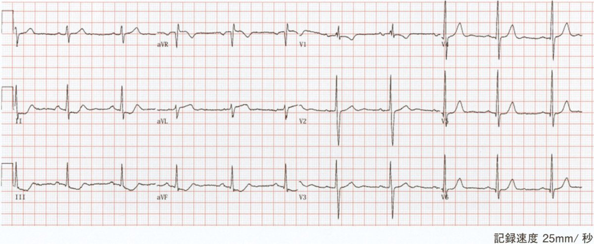
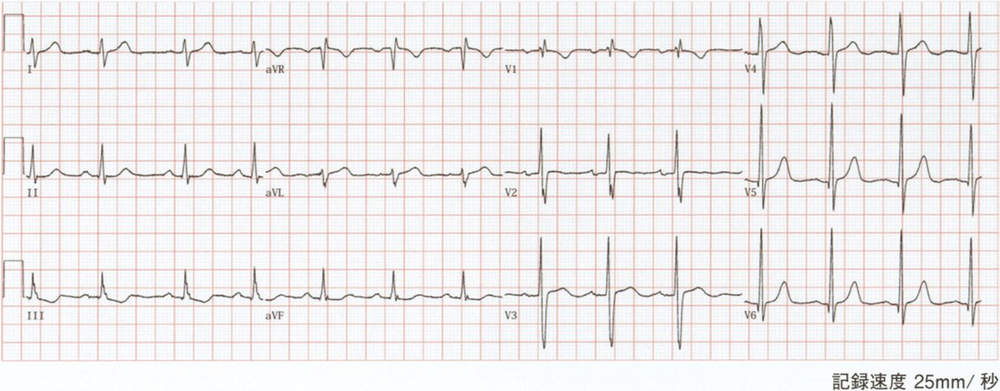
| 選択肢 | 解説 |
|---|---|
| ａ D ダイマー | 誤り。Dダイマーは架橋化フィブリンが線溶（プラスミン）で分解されたときに生じる断片で、「体のどこかで血栓ができて溶けている」ことしか示さない——心筋が壊死したかどうかは一切反映しないので、急性冠症候群の確定診断には使えない。この検査が主役になる場面：肺血栓塞栓症と深部静脈血栓症、そして急性大動脈解離——いずれも「臨床的な確率が低〜中等度のときに、陰性なら除外してよい」という使い方（高い陰性的中率）が本体である。逆に陽性でも意味は薄い：加齢・悪性腫瘍・感染症・妊娠・術後・外傷・大動脈瘤など無数の状況で上昇するため特異度が低く、「上がっていたから解離である」とは言えない。本症例で解離・肺塞栓を考えるか：3日前からの労作時胸部絞扼感が安静で5分程度で消えるという経過は労作狭心症そのもので、前日に1時間持続した発作は不安定化を意味する。左右差のある血圧・背部への移動痛・脈拍欠損・呼吸困難や低酸素血症はなく、SpO2も97％である——もちろん胸痛では常に解離と肺塞栓を鑑別に置くが、この病歴と心電図変化を前にして第一に測るべき項目ではない。 |
| ｂ アルドステロン | 誤り。アルドステロンは副腎皮質球状層から分泌される鉱質コルチコイドで、測るのは二次性高血圧のスクリーニング、すなわち原発性アルドステロン症を疑うときである——血漿アルドステロン濃度／血漿レニン活性の比（ARR）を用い、低カリウム血症・治療抵抗性高血圧・副腎腫瘤・若年発症の高血圧が手がかりになる。急性期に測ってはいけない理由もある：レニン-アンジオテンシン-アルドステロン系は、疼痛・ストレス・体位・塩分摂取・降圧薬（とくにARB・ACE阻害薬・利尿薬・β遮断薬）で大きく変動する——胸痛で救急外来を受診した交感神経緊張下の患者で測っても解釈できない。この患者の高血圧をどう考えるか：高血圧・脂質異常症・喫煙30本×35年・心筋梗塞の家族歴という古典的な冠危険因子が揃っており、二次性高血圧の精査よりも冠動脈疾患そのものの評価が優先される。二次性高血圧の検索は、急性期を脱してから落ち着いて行う。 |
| ◯ ｃ 心筋トロポニンT | これが正解。心筋トロポニンTは心筋細胞の細いフィラメント上でトロポミオシンを固定する調節蛋白で、心筋特異的なアイソフォームをもつため、血中に出てくれば「心筋が壊死した」ことをほぼ直接に意味する——心筋梗塞の定義（ユニバーサル定義）そのものが「心筋トロポニンの有意な上昇または下降」＋「心筋虚血の臨床的証拠」であり、この検査なしには心筋梗塞と診断できない。本症例の心電図が示すもの：来院時の心電図Aでは、洞調律で、Ⅱ・Ⅲ・aVFおよびaVL・V6に1〜2mm程度の水平型のST低下があり、ST上昇はどの誘導にもない——1年前の心電図BではこれらのSTは基線上にあり、今回新たに出現した変化である＝新規のST低下は心内膜下虚血の証拠になる。だから診断はここで二分される：ST上昇がない急性冠症候群（NSTE-ACS）では、心筋トロポニンが陽性ならNSTEMI（非ST上昇型心筋梗塞）、陰性のままなら不安定狭心症であり、両者を分ける唯一の検査がトロポニンである——前日に1時間持続した発作から半日以上が経っており、心筋壊死が起きていれば十分に上昇している時間帯にある。なお高感度法では発症1〜3時間でも検出でき、0時間と1〜3時間後の2点で判定する運用が標準である。 |
| ｄ ノルアドレナリン | 誤り。ノルアドレナリンを測るのは褐色細胞腫・パラガングリオーマを疑うときで、実務では血中・尿中のカテコラミンとその代謝産物（メタネフリン、ノルメタネフリン）を用いる——典型像は発作性高血圧・頭痛・動悸・発汗の三徴に代謝亢進や高血糖を伴うもので、副腎腫瘤やMEN2・von Hippel-Lindau病・神経線維腫症1型の合併が手がかりになる。急性期に測る意味がないのは同じ理由：カテコラミンは疼痛・不安・低血糖・心不全・薬剤（三環系抗うつ薬など）で容易に上昇し、胸痛発作の最中に測れば誰でも高値になる——採血の条件（安静臥位30分など）を整えなければ解釈できない検査である。ただし関連はある：褐色細胞腫はカテコラミン心筋症・たこつぼ症候群・冠攣縮を起こして胸痛の原因になりうるので、若年で危険因子のない胸痛や、発作性の高血圧を伴う症例では鑑別に挙がる。本症例は冠危険因子の揃った56歳男性であり、その状況にはあたらない。 |
| ｅ 脳性ナトリウム利尿ペプチド〈BNP〉 | 誤り。脳性ナトリウム利尿ペプチド〈BNP〉は心室筋が壁応力（伸展）を受けたときに分泌されるホルモンで、量っているのは「心室にかかっている負荷」であって心筋の壊死ではない——心不全の診断・重症度評価・予後予測に用い、急性期の呼吸困難で心原性か否かを分けるのに役立つ。急性冠症候群でも上がるが確定診断にはならない：広範な虚血や梗塞後の左室機能低下ではBNPが上昇し、実際にACSにおける独立した予後不良因子として知られる——しかし心房細動・弁膜症・腎不全・高齢・貧血・肺疾患でも上昇し、逆に肥満では低く出るため、「胸痛の原因が心筋梗塞かどうか」を決める検査にはならない。本症例の所見：頸静脈怒張・ラ音・浮腫といったうっ血所見の記載はなく、胸部エックス線写真でも異常を認めない＝現時点で心不全を疑う状況ではない。「心不全ならBNP、心筋壊死ならトロポニン」——量っているものが違うと整理しておくこと。 |
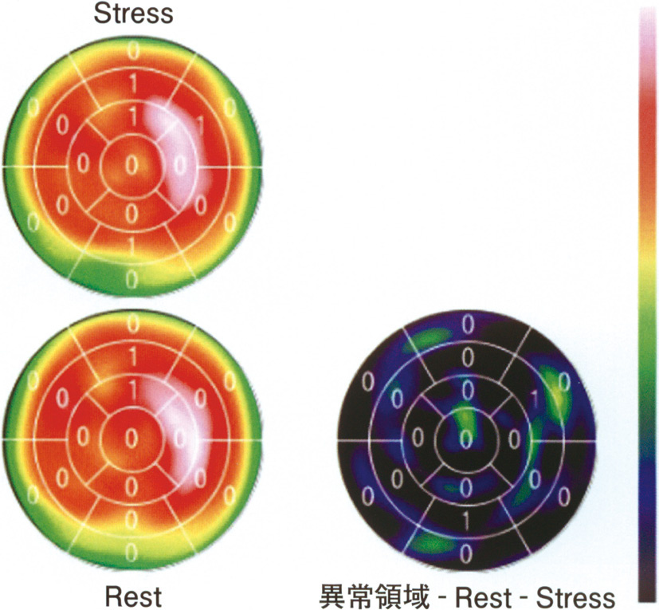
| 選択肢 | 解説 |
|---|---|
| ａ 冠動脈造影検査を行う。 | 誤り。冠動脈造影は「狭窄の形を見る」検査であり、この患者に今それを行っても治療方針は変わらない——冠動脈CTですでに左前下行枝の狭窄が疑われており、形の情報はある程度得られている。足りないのは「その狭窄が心筋虚血を起こしているか」で、それを調べるために行った運動負荷心筋血流SPECTが陰性だったのが本症例である。負荷試験が陰性という結果の重み：十分な運動負荷がかかり、その間に心電図の虚血性変化も胸部症状も出ず、血流分布にも可逆性の欠損がない——3つの独立した指標が揃って「機能的に有意な虚血はない」と述べている。侵襲的検査には害がある：穿刺部の出血・仮性動脈瘤、造影剤腎症とアレルギー、コレステロール塞栓、まれに冠動脈解離や脳塞栓——得られる利益が見込めない状況では、これらのリスクだけを負うことになる。もし症状が再燃・増悪すれば、その時点であらためて侵襲的評価を考える。 |
| ｂ 冠動脈CT を再度施行する。 | 誤り。冠動脈CTを繰り返しても、得られるのは同じ「形」の情報であって、判断に必要な「機能」の情報は増えない——冠動脈CTの長所は陰性的中率の高さで、疑いが低〜中等度の患者で冠動脈疾患を除外するのに優れる。逆に石灰化が強いと内腔が評価しにくく、狭窄度を過大評価しやすいという短所がある。本症例での位置づけ：CTで「狭窄病変の存在が疑われた」ため、次の段階として機能的評価（負荷SPECT）へ進んだ——これは正しい順序であり、その答えが出た以上、前の段階へ戻る意味はない。被曝と造影剤：短期間に造影CTを繰り返せば、被曝と造影剤腎症・アレルギーのリスクだけが積み上がる。近年はCT画像から血流予備量比を推定するFFR-CTも用いられるが、いずれにせよ「同じ検査をもう一度」が答えになる場面ではない。 |
| ｃ 経皮的冠動脈形成術を行う。 | 誤り。安定冠動脈疾患において、心筋虚血の証明されていない狭窄に対する経皮的冠動脈形成術〈PCI〉は、生命予後も心筋梗塞の発症も改善しない——大規模試験（COURAGE試験、ISCHEMIA試験など）が繰り返し示してきた結論で、至適薬物療法に上乗せするPCIの利益は、主として「薬物でも取りきれない狭心症症状の改善」に限られる。本症例では症状も消えている：β遮断薬・少量アスピリン・スタチン増量で胸部症状は消失しており、PCIで改善させるべき症状そのものが残っていない。PCIの不利益：手技合併症に加え、ステント留置後は抗血小板薬の2剤併用が必要となり出血リスクが増える。ステント血栓症・再狭窄という新たな問題も背負う。PCIが明確に有利な状況：急性冠症候群、薬物抵抗性の狭心症、そして負荷試験で広範な虚血（一般に左室の10％以上）が証明された場合や左冠動脈主幹部病変。⚠️ 「狭いから広げる」は現代の標準治療ではない——虚血があるかどうかで決める。 |
| ◯ ｄ 薬物療法を継続して経過観察する。 | これが正解。機能的虚血が否定された安定冠動脈疾患では、至適薬物療法〈OMT〉の継続と危険因子の管理が第一選択であり、症状が消えている本症例はまさにその適応である——示された負荷心筋血流SPECTのポーラーマップでは、負荷時（Stress）と安静時（Rest）の集積分布がほぼ同一で、両者の差分画像（異常領域）にも有意な欠損がない＝可逆性の血流低下（虚血）は認めない。負荷そのものが十分だったことの意味：目標心拍数に達しないまま終わった検査の陰性所見は「虚血がない」ではなく「判定できない」を意味する。本症例は十分な運動負荷をかけられたと明記されており、陰性所見を信用してよい。続けるべき薬物療法：予後を改善する薬＝抗血小板薬（アスピリン）とスタチン（LDLコレステロールを下げ、プラークを安定化させる）——症状を抑える薬＝β遮断薬（心拍数と心収縮力を下げて心筋酸素需要を減らす）、Ca拮抗薬、硝酸薬。あわせて禁煙・体重管理（BMI 27.6と肥満）・運動・高トリグリセリド血症と低HDLコレステロール血症の是正・血圧管理を行う。症状が再燃したときにはためらわず再評価する——「経過観察」は放置ではない。 |
| ｅ 薬物療法を中止して通院を終了する。 | 誤り。虚血が誘発されなかったことは「冠動脈疾患がない」ことでも「治療が要らない」ことでもない——この患者には冠動脈CTで狭窄病変があり、高血圧・脂質異常症・喫煙歴・肥満という危険因子が揃っている。動脈硬化そのものは進行中である。薬物を中止するとどうなるか：アスピリンとスタチンは、狭窄を広げるためではなく、プラークが破綻して急性冠症候群になるのを防ぐために飲んでいる——中止すればその防御が消える——とくにスタチンの中止後には、脂質の再上昇だけでなくプラークの不安定化を介した心血管イベントの増加が知られている。通院を終了する不利益：安定冠動脈疾患は「治った」状態にはならない。症状の変化・血圧・脂質・血糖・腎機能を追い、必要に応じて治療を強めるための外来が要る。ここで通院を打ち切れば、次に医療へ戻ってくるのは急性冠症候群を発症したときになりかねない。⚠️ 「検査が陰性だったので終診」という判断は、危険因子を抱えた患者では最も危うい選択である。 |
| 選択肢 | 解説 |
|---|---|
| ａ 頭痛を伴う。 | 誤り。頭痛は冠攣縮性狭心症の胸部症状の特徴ではなく、むしろ治療に用いる硝酸薬やニコランジルの副作用として現れるものである——硝酸薬は一酸化窒素を供与して血管平滑筋を弛緩させるが、その作用は冠動脈だけに働くわけではなく、脳硬膜血管の拡張が拍動性の頭痛を招く。胸痛に頭痛が随伴する病態：褐色細胞腫の発作（高血圧・頭痛・動悸・発汗）、片頭痛、一酸化炭素中毒、そしてくも膜下出血に伴う心電図変化など——いずれも冠攣縮とは別の文脈である。冠攣縮に随伴しやすい症状は別にある：発作時の冷汗、失神（房室ブロックや心室性不整脈による）、そして発作の終了とともに消える動悸。失神を伴う冠攣縮発作は致死性不整脈のリスクを示す危険な徴候で、植込み型除細動器を考慮する場合もある。 |
| ｂ 飲水で改善する。 | 誤り。飲水で改善するのは食道の疾患を示唆する所見で、冠動脈の攣縮による虚血が水を飲んで軽快することはない——びまん性食道痙攣や食道アカラシアでは、嚥下や飲水（とくに温かい水）で症状が変わることがあり、逆流性食道炎の胸やけは制酸薬で軽快する。胸痛の鑑別で「何で軽快するか」は強い手がかりになる：安静とニトログリセリン舌下で数分以内に消える＝狭心症／前屈で軽快し仰臥位で増悪する＝急性心膜炎／制酸薬で軽快する＝逆流性食道炎／体動で増悪し局所の圧痛がある＝肋軟骨炎などの筋骨格性。冠攣縮性狭心症の軽快の仕方：ニトログリセリンの舌下で速やかに（多くは1〜2分で）消える——この反応性そのものが診断の支持所見になる。逆に舌下錠で改善しない持続性の胸痛では、心筋梗塞や大動脈解離を疑って動く。 |
| ｃ 吸気で増悪する。 | 誤り。吸気で増悪する胸痛は胸膜性の痛みで、心筋虚血の痛みではない——呼吸性に変動する胸痛を見たら、胸膜炎・肺炎・気胸・肺血栓塞栓症、そして急性心膜炎を考える。心膜炎の痛みの特徴：鋭く、深吸気・咳・仰臥位で増悪し、坐位前傾で軽快する。心膜摩擦音が聴かれ、心電図では広範な誘導の凹型ST上昇とPR低下を認める。虚血性胸痛の性状：絞扼感・圧迫感・重苦しさとして胸骨の裏に広く感じられ、部位を指1本で示せない（指1本で示せる痛みは虚血らしくない）——左肩・左上肢尺側・下顎・心窩部へ放散し、呼吸や体位では変わらない。糖尿病患者・高齢者・女性では典型的な胸痛を欠き、息切れ・嘔気・倦怠感だけで来ることがある（無痛性心筋虚血）。「呼吸で変わるか」「体位で変わるか」「押して痛いか」は、その場で必ず確かめる3点である。 |
| ◯ ｄ 早朝起床前に発症する。 | これが正解。冠攣縮性狭心症の発作は、労作とは無関係に安静時、とくに深夜から早朝（就寝後半から起床前）に集中して起こる——これは自律神経の日内変動と対応しており、副交感神経が優位となる時間帯に冠動脈平滑筋の過収縮が起こりやすい。もう1つの臨床的な指紋：早朝は軽い労作でも発作が誘発されるのに、日中の同じ労作では起こらない＝運動耐容能に日内変動がある——労作狭心症が「いつでも一定の労作量で起こる」のと対照的で、病歴だけでかなり鑑別できる。発作の持続と心電図：持続は数分から15分程度。発作中の心電図では貫壁性虚血を反映してST上昇を示すことが多く（異型狭心症〈Prinzmetal型〉）、非発作時の心電図は正常である。だから診断は「発作時の心電図をとらえること」が鍵になり、ホルター心電図や携帯型心電計が用いられる。飲酒（とくに深酒した翌朝）・喫煙・過換気・寒冷・精神的ストレスが誘因になる。 |
| ｅ 持続時間は5 秒以内である。 | 誤り。数秒で終わる痛みは、心筋虚血の痛みではない——心筋が虚血に陥って痛みを生じ、それが自覚されるまでには時間がかかる。労作狭心症で数分、冠攣縮性狭心症でも数分から15分程度、心筋梗塞では20分以上持続するのが典型である。持続時間で分ける：数秒〜1分未満＝非心臓性（筋骨格性、神経痛、心因性）／数分〜15分＝狭心症／20分以上持続＝急性心筋梗塞や大動脈解離を疑う——逆に「何時間も、何日も同じ強さで続く胸痛」も虚血らしくない（心筋は数時間で壊死してしまうため）。冠攣縮の発作が長引いたら：攣縮が遷延すれば心筋梗塞や致死性不整脈（心室頻拍・心室細動）に至りうる——冠攣縮性狭心症は「良性の病気」ではない。実際、心停止蘇生例や若年の心臓突然死の一部が冠攣縮によることが知られている。持続時間は病歴聴取の中で最も診断的価値の高い項目の1つである。 |
| 選択肢 | 解説 |
|---|---|
| ａ 運動負荷心電図検査 | 誤り。胸部症状が持続し、心電図でST低下が続き、心筋トロポニンTが陽性——この患者に運動負荷をかけるのは禁忌である——運動負荷心電図は「安定した患者で虚血の有無を調べる」検査であって、進行中の急性冠症候群に対して行うものではない。何が起こりうるか：すでに需要と供給が破綻している心筋にさらに需要を課すことになり、梗塞範囲の拡大、致死性不整脈、心原性ショック、心停止を招きうる。運動負荷心電図の禁忌を整理する：絶対禁忌＝発症2日以内の急性心筋梗塞、リスクの高い不安定狭心症、コントロール不良の症候性不整脈、症候性の重症大動脈弁狭窄症、非代償性心不全、急性肺塞栓症、急性心筋炎・心膜炎、急性大動脈解離。本症例は「リスクの高い不安定狭心症／NSTEMI」そのもので、絶対禁忌に該当する。そもそも虚血はすでに証明されている——これ以上「虚血があるか」を調べる必要がない。 |
| ｂ 冠動脈CT | 誤り。冠動脈CTは、冠動脈疾患の検査前確率が低〜中等度の安定した患者で、冠動脈疾患を除外するために用いる検査である——陰性的中率が高いことが最大の長所で、「陰性ならほぼ否定できる」という使い方をする。本症例には合わない理由が3つある：①診断はすでにほぼ確定しており、除外のための検査は不要である／②仮に狭窄が見つかっても、そのまま治療（PCI）へは移れず、結局は心臓カテーテル検査をやり直すことになる／③この間も虚血は進行している。技術的な限界：心拍数が速い、不整脈がある、高度石灰化がある、息止めができない——これらの条件では画質が落ちる。80歳で糖尿病・高血圧の長い患者は石灰化が強いことが多く、狭窄度を過大評価しやすい。造影剤とβ遮断薬の前投与も必要で、急性期の患者には負担が大きい。「診断のための画像」ではなく「治療につながる検査」を選ぶ場面である。 |
| ｃ 心臓MRI | 誤り。心臓MRIは撮像に時間がかかり（30〜60分）、その間は救急対応が難しくなる——急性冠症候群で胸痛が持続している患者を送り込む場所ではない——この検査が力を発揮するのは、遅延造影による心筋の生存能（viability）と線維化の評価、心筋炎・心アミロイドーシス・肥大型心筋症などの心筋症の鑑別、たこつぼ症候群やMINOCA（冠動脈に閉塞のない心筋梗塞）の原因検索である。いつ使うか：急性期を脱した後、あるいは冠動脈造影で有意狭窄がなかったときの原因検索として用いる——本症例のように危険因子が揃い、トロポニン陽性でST低下が持続する典型的なNSTE-ACSでは、順序として先に冠動脈を見る。実務上の制約：閉所での長時間の安静と息止めが必要で、腎機能低下例ではガドリニウム造影剤に注意を要する。旧型の心臓デバイスがあれば施行できないこともある。「良い検査」であることと「今この患者に必要な検査」であることは別である。 |
| ◯ ｄ 心臓カテーテル検査 | これが正解。心臓カテーテル検査（冠動脈造影）は、責任病変を同定すると同時に、そのまま経皮的冠動脈形成術による血行再建へ移行できる——診断と治療が連続する唯一の選択肢である——本症例は高リスクの非ST上昇型急性冠症候群で、早期侵襲的戦略（早期の冠動脈造影とそれに続く血行再建）の適応である。高リスクと判断する根拠が設問文に並んでいる：①2週間前からの労作時絞扼感が1週間前には平地歩行でも出るようになった＝増悪型／②本日は冷汗を伴う強い胸痛で、症状が今も持続している／③12誘導心電図のST低下が持続している／④心筋トロポニンT陽性＝心筋壊死が起きている（NSTEMI）。加えて80歳という年齢、糖尿病・高血圧・脂質異常症、50年間の喫煙歴、CK 300U/Lの軽度上昇も高リスク側の材料である。時期の目安：血行動態が不安定、難治性の胸痛、致死性不整脈、心不全のいずれかがあれば直ちに（2時間以内）、トロポニン上昇や動的なST変化などの高リスク所見があれば24時間以内に冠動脈造影を行う——本症例は胸痛が持続しており、より緊急側に位置づけられる。もちろん検査の前から抗血小板薬・抗凝固薬などの薬物治療は開始しておく。 |
| ｅ 薬物負荷心筋血流シンチグラフィ | 誤り。薬物負荷心筋血流シンチグラフィも「負荷試験」である以上、進行中の急性冠症候群には行わない——アデノシンやATPは冠動脈を拡張させて健常部の血流を増やし、狭窄部との差を作り出す（盗血現象）。すでに虚血に陥っている心筋からさらに血流を奪う方向に働きうる。この検査の本来の使いどころ：安定した患者で、運動ができない（整形外科的な問題、末梢動脈疾患、脳血管障害後、脱調節など）ときに運動負荷の代わりとして用いる——アデノシン・ATPは気管支喘息と高度房室ブロックで禁忌、ジピリダモールも同様、ドブタミンは頻脈性不整脈や重症大動脈弁狭窄症で注意を要する。本症例で使うとしたら：血行再建後に残存病変の機能的意義を評価する場面や、心筋の生存能を見る場面である。⚠️ 「不安定な患者に負荷試験をしない」は循環器の鉄則で、選択肢aとeがともにこの原則で切れる——出題者はここを見ている。検査の目的（虚血の有無を知る）が、すでに達成されていることにも気づきたい。 |
| 選択肢 | 解説 |
|---|---|
| ａ スタチン | 誤り。スタチン（HMG-CoA還元酵素阻害薬）はコレステロール合成を抑える薬で、アセチルコリンに対する冠動脈の反応そのものを短期的に打ち消す作用はない——したがって誘発試験の前に中止する必要はなく、むしろ内服を続けたまま検査してよい。長期的には血管に良い方向に働く：スタチンには脂質低下を超えた多面的作用（pleiotropic effect）があり、内皮の一酸化窒素合成酵素を活性化して内皮機能を改善し、Rhoキナーゼ活性を抑えることで冠攣縮の頻度を減らすと報告されている——つまり冠攣縮性狭心症の治療の一部として位置づけうる薬である。この患者にスタチンが要る理由：LDLコレステロール138mg/dL、トリグリセリド160mg/dL、HDLコレステロール31mg/dLに加えて糖尿病（HbA1c 6.7％）と高血圧があり、動脈硬化の一次予防として脂質管理は必要である。副作用として横紋筋融解症（CK上昇・筋痛・褐色尿）と肝障害を押さえておく。本症例のCK 42U/Lは正常である。 |
| ｂ DPP-4 阻害薬 | 誤り。DPP-4阻害薬はインクレチン（GLP-1、GIP）の分解を抑えて血糖依存性にインスリン分泌を促す経口血糖降下薬で、冠動脈平滑筋の緊張に直接作用しない——アセチルコリン負荷による攣縮誘発の結果を左右する薬ではないので、検査前に中止する必要はない。糖尿病と冠攣縮の関係：糖尿病は血管内皮機能障害を介して冠攣縮の背景となり、同時に自律神経障害のために虚血発作が無症候となりやすい（無痛性心筋虚血）——この患者はHbA1c 6.7％と比較的良好だが、糖尿病があること自体が冠動脈疾患の高リスクである。血糖降下薬で循環器と関わるもの：SGLT2阻害薬は心不全の入院と心血管死を減らすことが示され、心不全治療薬としても用いられる。GLP-1受容体作動薬も心血管イベントを減らす——一方でチアゾリジン薬は体液貯留により心不全を悪化させうる。DPP-4阻害薬は心血管イベントに対して中立とされる。 |
| ◯ ｃ カルシウム拮抗薬 | これが正解。カルシウム拮抗薬は血管平滑筋のL型カルシウムチャネルを遮断して細胞内カルシウム流入を減らし、収縮そのものを起こりにくくする——冠攣縮性狭心症の第一選択薬であり、同時に誘発試験の結果を偽陰性にする最大の要因である——アセチルコリンを注入しても攣縮が起こらず、「冠攣縮性狭心症ではない」と誤って結論してしまう。だから検査前には中止する：カルシウム拮抗薬は少なくとも48時間前（一般に2〜3日前）から、硝酸薬・ニコランジルも同様に中止したうえで誘発試験に臨む——これは「休薬してよいか」ではなく「休薬しなければ検査が成立しない」という性質のもので、休薬中の発作に備えてニトログリセリン舌下錠を携帯させ、入院で管理することもある。この患者ですでに起きていること：設問文には「高血圧症、脂質異常症、糖尿病および骨粗鬆症に対してそれぞれ内服治療中」とあり、高血圧の治療薬としてカルシウム拮抗薬を飲んでいる可能性が高い——降圧薬として飲んでいる薬が、そのまま冠攣縮の治療薬でもある——だから検査の前に「何を飲んでいるか」を必ず確認する。なお午前4時の発作がニトログリセリン舌下で数十秒後に消えたという経過は、冠攣縮性狭心症を強く支持する。 |
| ｄ ビスホスホネート製剤 | 誤り。ビスホスホネート製剤は破骨細胞の骨吸収を抑える骨粗鬆症治療薬で、冠動脈の緊張には関与しない——この患者が骨粗鬆症で内服しているものと考えられるが、アセチルコリン負荷の結果には影響しない。この薬で注意すべきこと：上部消化管障害（食道潰瘍）を避けるため、起床時にコップ1杯の水で服用し、その後30分は横にならず飲食もしない——という服用法の指導が要点である——長期使用では顎骨壊死と非定型大腿骨骨折に注意する。侵襲的な歯科処置の前には歯科と連携する。低カルシウム血症との関係：ビスホスホネートは血清カルシウムを下げうるので、投与前にビタミンD欠乏や低カルシウム血症を補正しておく——重度の低カルシウム血症はQT延長を介して不整脈の原因になりうるが、本症例では電解質の異常は記載されていない。65歳女性という背景から骨粗鬆症の治療自体は妥当である。 |
| ｅ アンジオテンシン受容体拮抗薬〈ARB〉 | 誤り。アンジオテンシン受容体拮抗薬〈ARB〉はアンジオテンシンⅡのAT1受容体を遮断する降圧薬で、アセチルコリンによる冠攣縮誘発を妨げるほどの直接的な血管平滑筋弛緩作用はない——誘発試験の前に中止すべき薬として挙げられるのは、カルシウム拮抗薬・硝酸薬・ニコランジルであり、ARBは含まれない。ただし血管にとって無関係ではない：アンジオテンシンⅡは酸化ストレスを増やして内皮機能を悪化させるため、レニン-アンジオテンシン系の抑制は長期的には内皮機能を改善する方向に働く——この患者の高血圧治療薬としてARBが使われている可能性も高い。ARBの注意点：高カリウム血症、腎機能低下（とくに両側腎動脈狭窄では禁忌）、妊婦への投与は禁忌（胎児毒性）。⚠️ 本問は「薬の名前を知っているか」ではなく「この検査の原理を知っているか」を問うている——攣縮を起こさせる検査なのだから、攣縮を止める薬だけが邪魔になる。 |
| 選択肢 | 解説 |
|---|---|
| ａ ヘパリンの静注 | 正しい（したがって誤答肢）。ヘパリンの静注はST上昇型心筋梗塞の初期治療として標準的である——アンチトロンビンの作用を増強してトロンビンと活性化第Ⅹ因子を阻害し、血栓の伸展を防ぐ。これから行う経皮的冠動脈インターベンションの前処置としても必要である。本症例の診断：Ⅱ・Ⅲ・aVFのST上昇＝下壁梗塞、加えて右側胸部誘導のST上昇と心エコーでの右室壁運動低下＝右室梗塞の合併——責任血管は右冠動脈の近位部で、下壁とともに右室枝の灌流域が失われている。だから急ぐ：抗血栓療法を開始しつつ、直ちに緊急冠動脈造影と再灌流療法（primary PCI）へ進む——時間が心筋である。右室梗塞の合併そのものは抗凝固療法の妨げにならない。なお心拍数56/分の徐脈は下壁梗塞に典型的で、洞結節・房室結節が右冠動脈支配であることとBezold-Jarisch反射による。 |
| ｂ アスピリンの経口投与 | 正しい（したがって誤答肢）。アスピリンの経口投与（初回は咀嚼して速やかに吸収させる）は、急性冠症候群と診断した時点で直ちに行うべき治療である——シクロオキシゲナーゼ-1を不可逆的に阻害してトロンボキサンA2の産生を止め、血小板凝集を抑える。死亡率を明確に下げることが示されている数少ない薬の1つである。実際の初期治療パッケージ：アスピリンとP2Y12受容体拮抗薬（プラスグレル、クロピドグレルなど）による抗血小板薬2剤併用、ヘパリンによる抗凝固、そして再灌流療法。禁忌にあたるか：アスピリン喘息、活動性の消化性潰瘍・出血、重篤な肝腎障害などがなければ投与する。本症例にそれらの記載はない。血圧80/46mmHgという低血圧は抗血小板薬の禁忌ではない——止めるべきは血栓であって、循環は別の手段（輸液）で支える。糖尿病でPDE5阻害薬を服用中という背景も、アスピリン投与の妨げにはならない。 |
| ｃ ドブタミンの点滴静注 | 正しい（したがって誤答肢）。右室梗塞による低血圧に対しては、まず十分な輸液で前負荷を確保し、それでも血圧が保てなければドブタミンなどの強心薬を用いる——これが標準的な順序である——ドブタミンはβ1受容体刺激により心収縮力を高め、右室の拍出を助ける。右室梗塞の血行動態：収縮しなくなった右室は肺循環へ血液を送り出せない。その結果、左室に届く血液（前負荷）が減り、左室が正常でも心拍出量が落ちて低血圧になる——身体所見は、頸静脈怒張（右房圧上昇）があるのに肺野は清明（肺うっ血がない）という組み合わせが特徴で、低血圧の三徴として知られる。だから治療は「詰める」方向：生理食塩液を負荷して右室の充満を増やし、それでも足りなければ強心薬——通常の左心不全とは正反対の対応になる。本症例では心音・呼吸音に異常がなく、肺うっ血がないことが輸液の安全性を裏づける。徐脈が高度なら房室同期を保つ一時ペーシングも考慮する。 |
| ◯ ｄ ニトログリセリンの舌下 | これが正解（＝誤っている処置）。ニトログリセリンは静脈系を拡張させて前負荷を下げる薬であり、前負荷に完全に依存している右室梗塞の患者に投与すれば、血圧はさらに下がり循環虚脱に至りうる——すでに血圧80/46mmHgと低く、四肢末梢は冷たく冷汗を認める＝末梢循環不全の状態にある。禁忌はもう1つ重なっている：この患者は本日午後10時にPDE5阻害薬を服用しており、その30分後に発症している——硝酸薬とPDE5阻害薬の併用は絶対禁忌である——硝酸薬は一酸化窒素を介してサイクリックGMPを増やし、PDE5阻害薬はそのサイクリックGMPの分解を止める。同じ経路を上流と下流から同時に押すことになり、遷延する重篤な低血圧を招く。休薬の目安：シルデナフィル・バルデナフィルでは24時間、タダラフィルでは48時間の間隔をあける。2つの禁忌が同時に成立している：①右室梗塞という血行動態（前負荷依存）／②PDE5阻害薬の服用（薬物相互作用）——どちらか一方だけでもニトログリセリンは使えない。硝酸薬の禁忌には他に、閉塞性肥大型心筋症、重症大動脈弁狭窄症、収縮期血圧90mmHg未満、高度徐脈・頻脈がある。 |
| ｅ 生理食塩液の急速点滴静注 | 正しい（したがって誤答肢）。生理食塩液の急速点滴静注は、右室梗塞による低血圧に対する第一の治療である——右室が収縮しない以上、右室を通過する血流は「押し出す力」ではなく「押し込む圧」に頼るしかない。輸液で右房圧・右室充満圧を上げて肺循環へ血液を送り、左室の前負荷を確保する。実際の運用：200〜500mLを比較的速やかに投与し、血圧・尿量・末梢循環の反応を見ながら繰り返す——過剰輸液は右室をさらに拡張させ、心室中隔を左室側へ押しやって左室の充満を妨げる（心室相互作用）ので、肺うっ血や呼吸状態の悪化がないかを見ながら進める。右室梗塞で避けるもの：硝酸薬、利尿薬、モルヒネ——いずれも前負荷を下げる方向に働き、血圧を崩す。心房収縮の寄与が大きいため、心房細動や高度房室ブロックが起これば血行動態が急に悪化する。房室同期を保つペーシングが必要になることがある。根本的な治療は再灌流であり、輸液は再灌流までの時間を稼ぐ手段である。 |
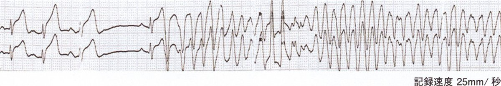
| 選択肢 | 解説 |
|---|---|
| ａ 気管挿管 | 誤り。心室細動を目の前にしたとき、気道確保より前にすべきことは除細動である——心停止の直後は動脈血の酸素化がまだ保たれており、この瞬間に足りないのは酸素ではなく「心臓が拍動していないこと」そのものだからである。蘇生の優先順位：目撃された心停止で、除細動器がその場にある状況では、直ちに除細動を行う。それが済んでから胸骨圧迫を再開し、その後に高度な気道確保へ進む——気管挿管は手技に時間がかかり、その間は胸骨圧迫が中断される。中断は冠灌流圧を低下させ、蘇生成功率を直接下げる。それでも気道は大切である：ただし初期はバッグバルブマスクによる換気で十分で、挿管は循環が戻った後、あるいは蘇生が長引くときに考える。本症例は「うめき声をあげてその後動かなくなった」＝目撃された心停止であり、カテーテル検査の準備中＝除細動器が手元にある状況である。 |
| ◯ ｂ 電気的除細動 | これが正解。示された心電図モニターは、規則的だった波形が突然、振幅も周期も形も一定しない不規則な波の連なりに変わっており、QRS・ST・T波として区別できる成分がない——心室細動〈VF〉である——心室細動と無脈性心室頻拍は、電気ショックによってのみ止められる（ショック適応の）調律であり、直ちに電気的除細動を行う。波形が変わる直前に何が起きたか：ストリップの左端では、急性下壁梗塞に一致する巨大なドーム状のST上昇を伴う心拍が並び、その後に先行するT波に重なるタイミングで期外収縮が生じ（R on T）、そこから心室細動へ移行している——虚血心筋では再分極が不均一になり、T波の頂上付近（受攻期）に刺激が入るとリエントリが成立して細動化する。除細動が果たす仕事：心筋全体を一度に脱分極させてすべてのリエントリ回路を消し、洞結節が主導権を取り戻せる「無の状態」を作ること——薬ではこれができない。二相性の機器で120〜200J（機種の推奨値）を単回で通電し、直後に胸骨圧迫を2分間再開してから調律を確認する。除細動が1分遅れるごとに生存率は7〜10％低下する——迷う時間そのものが害になる。 |
| ｃ 心室ペーシング | 誤り。心室ペーシングは徐脈や心停止（心静止・高度房室ブロック）に対する手段であって、心室細動には無効である——細動している心室は無秩序に興奮し続けており、そこへ弱い刺激を1点から加えても捕捉されない。本症例で徐脈があったこととの混同：搬入時の心拍数は56/分で、下壁梗塞に伴う徐脈があった。しかし今起きているのは徐脈ではなく心室細動であり、必要なのは刺激ではなく一斉脱分極である。ペーシングが出番になるのはいつか：下壁梗塞に合併した高度房室ブロックで、アトロピンが無効かつ血行動態が不安定なとき——経皮ペーシングから始め、必要なら経静脈的一時ペーシングへ移る——右室梗塞では心房収縮の寄与が大きいため、房室同期を保つDDDペーシングが望ましい。なお心静止〈asystole〉に対する経皮ペーシングは予後を改善せず、推奨されていない。 |
| ｄ リドカイン静注 | 誤り。リドカインは抗不整脈薬（Ⅰb群）だが、心室細動に対する第一の手段は薬ではなく電気である——抗不整脈薬が登場するのは、除細動を行っても心室細動が持続する（難治性・ショック抵抗性の）段階であり、それも胸骨圧迫とアドレナリン投与の後に位置づけられる。現在の位置づけ：難治性心室細動・無脈性心室頻拍に対してはアミオダロンが第一選択で、リドカインは代替薬として用いられる——かつて急性心筋梗塞にリドカインを予防的に投与する時代があったが、心室細動は減らす一方で徐脈・心停止による死亡が増え、総死亡が改善しなかったため現在は行わない。リドカインの性質：ナトリウムチャネル遮断作用が速い解離・結合を示し、虚血で脱分極した心筋に選択的に働く。中毒では中枢神経症状（口周囲のしびれ、痙攣）と徐脈が出る。薬を選ぶ前に、まず電気を選ぶ。 |
| ｅ アミオダロン静注 | 誤り。アミオダロンは難治性の心室細動・無脈性心室頻拍で用いる薬だが、それは除細動を繰り返しても戻らないときの手段であり、最初に行うべき処置ではない——心停止アルゴリズムでは、除細動 → 胸骨圧迫2分 → 調律確認 → 除細動 → アドレナリン → 除細動 → アミオダロン、という順に進む。アミオダロンの性質：Ⅲ群に分類されるがナトリウム・カルシウムチャネル遮断とβ遮断作用も併せ持ち、活動電位持続時間を延長する——長期投与では間質性肺炎、甲状腺機能異常（ヨードを含む）、肝障害、角膜色素沈着、皮膚色素沈着といった多彩な副作用が問題になる。急性期の使い方：心停止では300mgを静注（追加150mg）。心拍再開後は持続静注へ移行することがある。⚠️ 選択肢d・eはいずれも「正しい薬だが、いま使う薬ではない」——順序を問う設問では、正誤ではなく優先順位で切る。 |
| 選択肢 | 解説 |
|---|---|
| ａ 植込み型除細動器 | 誤り。植込み型除細動器〈ICD〉は、将来起こる致死性不整脈から患者を守る「予防の装置」であって、いま循環が破綻している患者を支える装置ではない——この患者に足りないのは不整脈の監視ではなく、全身へ血液を送る力そのものである。そもそも適応の判断ができない時期である：急性心筋梗塞発症48時間以内に生じた心室細動（一次性心室細動）は、再灌流によって基質そのものが取り除かれうるため、それだけを理由にICDを植え込まない——二次予防としてのICDを検討するのは、再灌流と薬物療法を行って心機能が落ち着いた後（一般に発症40日以降、あるいは血行再建から90日以降）に、左室駆出率と不整脈の再発を評価してからである。感染の問題もある：ショックで末梢循環が破綻し、これから機械的補助を要する患者にデバイスを植え込めば、デバイス感染という致命的な合併症を招く。急性期に不整脈を監視したいのであれば、体外式の除細動器とモニターで足りる。 |
| ｂ 永久ペースメーカ | 誤り。永久ペースメーカが治せるのは徐脈であって、心拍数120/分を超えている本症例の問題ではない——この頻脈は、低下した心拍出量を補おうとする交感神経性の代償であり、脈が遅くて困っているのではない。搬入時の徐脈との混同に注意：搬入時は心拍数56/分の徐脈だった（下壁梗塞に伴う洞徐脈・房室伝導の抑制）。しかし心室細動から復帰し、ショックが深まった現在は頻脈へ転じている——同じ患者でも時期によって問題が入れ替わる。ペーシングが要る場面：下壁梗塞に伴う高度房室ブロックでアトロピンが無効かつ血行動態が不安定なときで、しかもそれは一時ペーシングである。梗塞に伴う房室ブロックの多くは一過性なので、永久ペースメーカの適応は急性期を過ぎて伝導障害が残った場合に限られる。「永久」と名の付くデバイスは、急性期の答えにはなりにくい。 |
| ｃ 補助人工心臓〈VAD〉 | 誤り。補助人工心臓〈VAD〉は、心臓移植までの橋渡しや長期の在宅治療を目的とした植込み型の装置で、開胸手術を要し、導入までに時間がかかる——いま数分から数十分の単位で循環を支えなければならない患者に、その場で選べる手段ではない。時間軸で考える：数分で始められる＝経皮的なVA-ECMO（大腿動静脈からカニュレーションする）／数時間〜数日の準備を要する＝外科的に植え込むVAD——そのため実臨床では、まずECMOで循環を確保して臓器障害を防ぎ、心機能が回復しなければVADや移植へ橋渡しする（bridge to decision → bridge to bridge）という段取りをとる。VADの位置づけ：重症心不全に対する植込み型左室補助人工心臓は、心臓移植への橋渡し（bridge to transplant）と、移植を前提としない永続的使用（destination therapy）に用いられる。連続流のVADでは脈圧が小さく、カフによる血圧測定が困難になるという特徴も押さえておく。 |
| ｄ 大動脈内バルーンパンピング〈IABP〉 | 誤り。大動脈内バルーンパンピング〈IABP〉は「補助」であって「代行」ではない——自分の心拍出に上乗せする程度の効果しかなく、平均血圧60mmHgすら維持できない重症心原性ショックには力不足である——IABPは下行大動脈に留置したバルーンを拡張期に膨らませて冠血流と脳血流を増やし、収縮期直前に萎ませて後負荷を下げる。心拍出量の増加はおよそ0.5L/分程度にとどまる。効果は自己心拍に依存する：心電図または動脈圧波形に同期させて作動するため、高度の頻脈や不整脈では同期が乱れて効果が落ちる。本症例は心拍数120/分超で、この点でも不利である。エビデンス：急性心筋梗塞に伴う心原性ショックに対するIABPのルーチン使用は、大規模試験（IABP-SHOCK II）で死亡率を改善せず、現在は一律の推奨とはされていない。禁忌は中等度以上の大動脈弁閉鎖不全症と大動脈解離、高度の腸骨動脈・大腿動脈病変である。本症例では右室梗塞を合併しており、左室の後負荷を下げるIABPは右室の拍出を直接には助けない。 |
| ◯ ｅ ECMO〈Extracorporeal membrane oxygenation〉 | これが正解。VA-ECMO（静脈脱血-動脈送血の体外式膜型人工肺）は、大腿静脈から脱血した血液を人工肺で酸素化し、大腿動脈から全身へ送り返す装置で、心臓と肺の仕事を丸ごと肩代わりできる——心臓が止まっていても4〜5L/分の血流を作れる＝「補助」ではなく「代行」であり、平均血圧60mmHgを維持できない重症心原性ショックで選ぶべき手段である。この患者の状況：下壁・右室梗塞に心室細動を合併し、蘇生後も平均血圧が保てず、心拍数は120/分を超え、不穏＝脳循環も破綻しかけている——多臓器不全へ向かう入口にいる。経皮的にカニューレを挿入でき、カテーテル室で数分〜十数分のうちに開始できることが、この場面での決定的な利点である。導入の目的は時間を買うこと：ECMOで循環と酸素化を確保したうえで、責任血管に対する経皮的冠動脈インターベンションを行う。再灌流によって心機能が回復すれば離脱でき、回復しなければ補助人工心臓や心臓移植への橋渡しとする。ECMO下に冠動脈インターベンションを行うこの戦略は、蘇生後の重症心原性ショックにおける標準的な考え方である。不穏は「精神症状」ではなく脳灌流不足のサインとして読むこと。 |
| 選択肢 | 解説 |
|---|---|
| ◯ ａ 糖尿病 | これが正解。糖尿病では、長期の高血糖によって自律神経のうち心臓へ向かう求心性の痛覚線維が障害され、心筋が虚血に陥っても胸痛として自覚されなくなる——これが無痛性（無症候性）心筋虚血である——心筋虚血の痛みは、心臓の交感神経求心線維が上位胸髄（T1〜T5）へ入り、同じ髄節に入る体性感覚と混線して胸部・左肩・左上肢・下顎に感じられる。この経路が壊れれば警報そのものが鳴らない。何が問題になるか：受診が遅れ、発見されたときには広範な梗塞や心不全に至っている。急性心筋梗塞の初発症状が「なんとなく息苦しい」「食欲がない」「だるい」だけということも珍しくない。糖尿病性自律神経障害の全体像：安静時頻脈と心拍変動の低下、起立性低血圧、胃不全麻痺、便秘と下痢の交代、無自覚性低血糖、神経因性膀胱、発汗異常、勃起不全——無痛性心筋虚血はこの一部として起こる。だから糖尿病患者では、胸痛がなくても心電図・心エコー・必要に応じて負荷試験で虚血を能動的に探す。 |
| ｂ 骨粗鬆症 | 誤り。骨粗鬆症は骨量減少と骨質劣化により骨折しやすくなる疾患で、痛覚の伝達や自律神経には影響しない——閉経後女性・高齢者・ステロイド使用者に多く、脆弱性骨折（椎体、大腿骨近位部、橈骨遠位端、上腕骨近位部）が問題になる。胸痛との関わりがあるとすれば：椎体圧迫骨折による背部痛や、肋骨骨折による胸壁痛が「胸が痛い」として受診することはある。ただしこれは体性の痛みであり、体動や圧迫で再現される点で虚血性胸痛と区別できる。むしろ痛みが強く出る病態である：無痛性虚血は「痛みを感じにくくなる」病態なので、骨粗鬆症とは方向が逆である。なお高齢女性は糖尿病がなくても心筋梗塞の症状が非典型的になりやすいが、それは骨粗鬆症のためではなく年齢と性差による。 |
| ｃ 気管支喘息 | 誤り。気管支喘息は可逆性の気道閉塞と気道過敏性を特徴とする慢性の気道炎症で、痛覚を鈍らせる作用はない——発作時には呼気性喘鳴、呼気延長、呼吸困難、胸部絞扼感を訴える。むしろ紛らわしさの原因になる：喘息患者が心筋虚血による呼吸困難を「いつもの発作」と誤認したり、逆に喘息発作の胸部絞扼感が狭心症と紛らわしかったりすることはある——ただしそれは症状が似ているというだけで、痛みの伝達が障害されているのではない。循環器診療での注意点：気管支喘息はβ遮断薬の使用に制限があり、アデノシン・ATPによる薬物負荷心筋シンチグラフィが禁忌となる——虚血性心疾患の治療・検査を制約する併存疾患として重要である。その意味で「喘息＋冠動脈疾患」の組合せは臨床では悩ましいが、無痛性虚血の原因ではない。 |
| ｄ Parkinson 病 | 誤り。Parkinson病は中脳黒質のドパミン神経細胞が変性する疾患で、安静時振戦・筋強剛・無動・姿勢反射障害を四徴とする運動障害が主体である——痛覚が失われる疾患ではない。むしろ筋強剛や姿勢異常に伴う疼痛を訴えることが多い。自律神経障害はあるが方向が違う：Parkinson病でも自律神経症状（起立性低血圧、便秘、排尿障害、発汗異常）は生じ、心筋のMIBG集積低下（心臓交感神経の遠心性線維の脱落）は診断の補助所見として有名である——ただしMIBGが見ているのは遠心性の交感神経終末で、痛みを運ぶ求心性線維ではない。無痛性心筋虚血をきたす疾患として問われるのは糖尿病である。紛らわしい点を1つ：進行期には動けないために労作性の症状が現れず、虚血が顕在化しにくいことはある。しかしそれは活動制限の結果であって、痛覚の障害ではない。MIBGシンチはParkinson病とLewy小体型認知症で低下し、多系統萎縮症では保たれる。 |
| ｅ 胃食道逆流症 | 誤り。胃食道逆流症は胃酸の食道内逆流による胸やけ・呑酸を主症状とする疾患で、痛覚を鈍らせるのではなく、むしろ胸痛の原因になる（非心臓性胸痛の最多の原因）——食後や臥位で増悪し、制酸薬（プロトンポンプ阻害薬）で軽快する。虚血性胸痛との鑑別が難しい理由：食道と心臓はどちらも上位胸髄に求心線維を送るため、痛みの部位も性状もよく似る。しかも硝酸薬やカルシウム拮抗薬は食道平滑筋も弛緩させるので、「ニトログリセリンで軽快した」ことは狭心症の証明にならない。逆の誤りにも注意する：「胸やけだから胃の病気」と決めつけると心筋梗塞を見逃す。とくに下壁梗塞は心窩部痛・嘔気として現れることがあり、消化器疾患と誤られやすい。⚠️ 危険因子のある患者の心窩部痛では、まず心電図をとる——これが実地で最も有用な習慣である。本問は選択肢を並べると、痛みを鈍らせる方向に働くのは糖尿病だけである。 |
| 選択肢 | 解説 |
|---|---|
| ◯ ａ 心室中隔穿孔 | これが正解の1つ。心室中隔穿孔は、梗塞に陥って脆くなった心室中隔が破れ、左室から右室へのシャントを生じる機械的合併症である——発症は梗塞後3〜7日が多く、突然の血行動態の悪化とともに胸骨左縁下部に汎収縮期雑音と振戦（thrill）が出現する。何が起こるか：左室から右室へ血液が逃げるため、体循環への拍出が落ちて低血圧・ショックとなる一方、右室と肺循環には過剰な血流が流れ込んで右心不全と肺うっ血をきたす——スワン-ガンツカテーテルで右房と肺動脈の酸素飽和度に段差（oxygen step-up）を見出せば診断が確定する。心エコーのカラードプラでも左右短絡が描出される。治療：薬物と機械的循環補助で支えつつ外科的閉鎖を行う（カテーテル閉鎖が選ばれることもある）。ただし梗塞直後の心筋は脆く縫合が破綻しやすい。再灌流療法が普及して頻度は減ったが、起これば死亡率は極めて高い。前壁中隔梗塞（左前下行枝）でも下壁梗塞でも起こりうる。 |
| ｂ 左室流出路狭窄 | 誤り。左室流出路狭窄は、閉塞性肥大型心筋症のように心室中隔が肥厚し、収縮期に僧帽弁前尖が流出路へ引き込まれること（SAM現象）などで生じるもので、心筋梗塞の機械的合併症ではない——肥大型心筋症では収縮期駆出性雑音がValsalva手技や立位（前負荷減少）で増強し、蹲踞やハンドグリップ（前負荷・後負荷増加）で減弱する。まぎらわしい病態はある：たこつぼ症候群や心尖部の広範な梗塞では、基部の心筋が代償性に過収縮して一時的に流出路の閉塞を生じることが知られている——ただしこれは中隔や弁の構造が壊れて起こる「機械的合併症」とは性質が異なり、本問の3つには含まれない。機械的合併症の定義：心筋の構造そのものが物理的に破綻して起こる合併症＝自由壁破裂（心タンポナーデ）・心室中隔穿孔・乳頭筋断裂による急性僧帽弁閉鎖不全症の3つを指す。この定義を押さえていれば、選択肢は機械的に絞れる。 |
| ◯ ｃ 心タンポナーデ | これが正解の1つ。心タンポナーデは、梗塞に陥った左室自由壁が破裂して心膜腔に血液が急速に貯留し、心臓の拡張が妨げられる状態である——自由壁破裂は機械的合併症のなかで最も多く、最も致命的で、多くは突然の電気機械解離（無脈性電気活動）と心停止として現れる。Beckの三徴：血圧低下、頸静脈怒張、心音減弱。加えて奇脈（吸気時に収縮期血圧が10mmHg以上低下する）を認める——心電図では低電位とelectrical alternans（心臓が心膜液の中で揺れることによるQRS振幅の交代性変動）。診断と治療：心エコーが最速で確実——心膜腔の液体貯留と右房・右室の拡張期虚脱を見る。治療は心膜穿刺による減圧と緊急手術である。危険因子：高齢、女性、初回の貫壁性梗塞、高血圧の持続、再灌流の遅れ。梗塞後2〜7日に多い——亜急性に少量ずつ漏れる型（oozing type）では、心膜炎様の胸痛と血圧低下が先行することがあり、この段階で見つかれば救命できる。 |
| ◯ ｄ 急性僧帽弁閉鎖不全症 | これが正解の1つ。急性僧帽弁閉鎖不全症は、乳頭筋（多くは後内側乳頭筋）が虚血で断裂し、僧帽弁尖を支える腱索の張力が失われて弁が閉じなくなることで生じる——後内側乳頭筋は右冠動脈または左回旋枝からの単一の血流に依存しているため、前外側乳頭筋（左前下行枝と左回旋枝の二重支配）より断裂しやすい＝下壁梗塞で起こりやすい。臨床像：突然の呼吸困難と急激な肺水腫。左房が拡大していないため圧が急上昇し、しばしば劇的な経過をとる——心尖部の収縮期雑音を聴くが、左房と左室の圧較差が小さいために雑音が小さい、あるいは聴こえないことすらある——雑音の大きさで重症度を判断してはいけない。診断と治療：心エコーで逆流ジェットと動揺する弁尖（flail leaflet）を確認する。治療は後負荷軽減とIABPで支えつつ、緊急僧帽弁手術。断裂に至らず、乳頭筋機能不全や左室拡大による弁輪拡大でも僧帽弁閉鎖不全は生じるが、こちらは緩徐である。 |
| ｅ 急性大動脈弁閉鎖不全症 | 誤り。急性大動脈弁閉鎖不全症は、大動脈解離が弁輪へ及んで弁尖の支持を失わせる場合、感染性心内膜炎で弁が破壊される場合、外傷などで生じるもので、心筋梗塞の機械的合併症ではない——大動脈弁は心筋そのものではなく、冠動脈の閉塞によって弁が壊れるという経路がない。むしろ逆の関係で登場する：上行大動脈解離が冠動脈起始部（とくに右冠動脈）に及ぶと急性心筋梗塞を起こし、同時に大動脈弁閉鎖不全と心タンポナーデをきたす——「心筋梗塞に見える大動脈解離」は絶対に見逃してはならない病態である。この場合に血栓溶解療法や抗凝固療法を行えば致命的になるため、突然の激痛・背部への移動・血圧の左右差・拡張期雑音・縦隔陰影の拡大に注意する。急性大動脈弁閉鎖不全の特徴：慢性のものと違って左室が拡大する時間がないため、拡張期圧が急上昇して肺水腫となり、脈圧の増大やDurozier雑音といった慢性の身体所見は現れにくい。拡張早期の僧帽弁前閉鎖が心エコーで見られる。 |
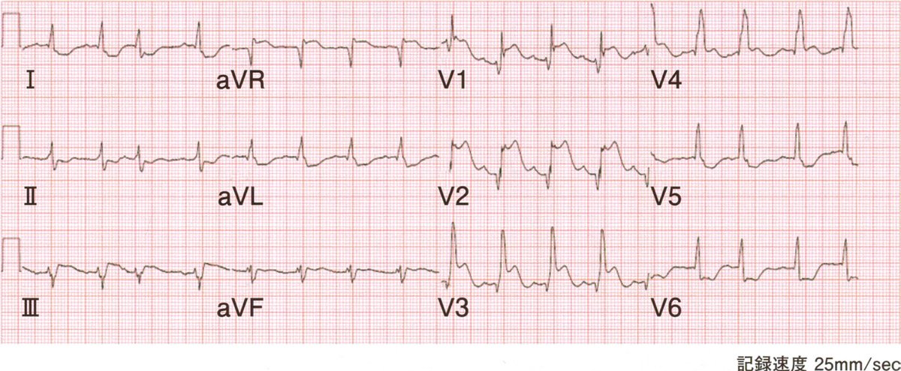
| 選択肢 | 解説 |
|---|---|
| ａ 家族へ予後の説明 | 誤り。予後の説明は、診断が確定し、治療方針が定まってから、責任をもてる立場の医師が行うものである——この時点では診断も確定しておらず、治療によって経過は大きく変わりうる。根拠のない見通しを伝えれば家族を混乱させ、その後の意思決定を歪める。そして何より順序が違う：目の前の患者は意識レベルJCSⅡ-10、血圧は触診で68mmHg、SpO2は測定不能、全肺野にcoarse cracklesという、分単位で悪化しうる状態にある——いま費やすべきは説明の時間ではなく、治療を始めるための時間である。家族への説明が不要なのではない：重症であること、これから緊急の検査と治療が必要であることは早期に伝えるべきで、その役割は応援に来た指導医や、手の空いたスタッフが担う。「誰が」「いつ」行うかを切り分けるのが、チームで動くということである。 |
| ｂ 家族からの病歴聴取 | 誤り。病歴聴取は重要だが、それは「いま最も優先すべき対応」ではない——この患者ではすでに、心電図の広範なST上昇と、ショック・肺水腫を示す身体所見という、行動を決めるのに十分な情報が揃っている。設問文が語っていること：心電図ではV1からV6にかけて上に凸のST上昇があり、広範前壁の急性心筋梗塞に一致する。加えて奔馬調律、全肺野のcoarse crackles、血圧68mmHg（触診）、皮膚の湿潤と四肢末梢の著明な冷感＝Killip分類Ⅳ（心原性ショック）である。危険なのは順序の逆転：研修医が1人で病歴を取っている間、患者には何の治療も加わらない。しかも夜間で人手は3人しかいない——時間の使い方そのものが治療成績を左右する。病歴は誰が取るか：実際、この設問の続き（次の設問）では追加情報として詳細な病歴が提示される——応援が来て役割分担ができれば、病歴も並行して集められる。「同時にできること」を「順番にやること」にしないための応援要請である。 |
| ◯ ｃ 指導医への応援依頼 | これが正解。研修医が単独で対応できる限界を超えた重症患者を前にしたとき、最も優先すべきは応援を呼ぶこと——これは判断の放棄ではなく、能力を超えた状況を認識できたという臨床能力の表れである——広範前壁梗塞による心原性ショックでは、酸素化と呼吸管理、静脈路確保と薬物投与、モニター監視、緊急カテーテル室への連絡、家族への説明、記録——これらが同時に必要になる。1人ではどれも中途半端になる。早く呼ぶことに意味がある：指導医が到着するまでには時間がかかる。事態が悪化してから呼べば、その分だけ介入が遅れる——応援要請は「困ってから」ではなく「困りそうだと分かった時点で」行う。呼びながら手も動かす：応援を要請したうえで、酸素投与の継続、静脈路の確保、12誘導心電図とモニター装着、アスピリンの投与、カテーテル室への連絡と、できることは並行して進める。この設問が問うているもの：知識ではなく、医療安全とチーム医療の姿勢である——「1人で抱え込まない」ことが患者の安全を守る。夜間に3人しかいないという設定は、限られた資源をどう配分するかを問うために置かれている。 |
| ｄ 看護師と治療方針の確認 | 誤り。看護師と治療方針を確認すること自体は適切な行為だが、研修医と看護師の2人で決められる範囲を超えた事態である——この患者に必要なのは緊急冠動脈造影と再灌流療法であり、それはカテーテル室の起動、循環器内科医の招集、機械的循環補助の準備を伴う決定である。役割の違い：看護師とは、酸素投与、静脈路確保、モニター装着、採血、薬剤の準備といった実行の分担を共有する——それは「方針の確認」ではなく「実行の指示と協働」である。方針そのものを決める権限と責任は指導医にあり、まずその指導医を呼ぶのが順序である。チーム医療の考え方：それぞれの職種が持つ権限と能力を正しく見積もり、必要な人を必要なタイミングで巻き込むことが、安全なチーム運営の基本になる。看護師と話す時間があるなら、その最初の一言は「指導医を呼んでください」であるべきだろう。 |
| ｅ 急変時の気管挿管の同意取得 | 誤り。気管挿管の同意取得を最優先にするのは、順序としても内容としても適切でない——患者はJCSⅡ-10と意識障害があり、SpO2は測定不能で、実際に気道確保が必要になる可能性は高い。しかしそれは「いま最初にすべきこと」ではない。緊急時の同意：生命に危険が及ぶ緊急事態で、患者本人の意思確認ができない場合には、救命に必要な医療行為を先行させることが許される（緊急避難的な対応）。あらかじめ同意を取ってからでなければ挿管できない、というものではない——もちろん時間的余裕があれば説明と同意を得るのが望ましく、実際には応援が来た後に家族へ説明する。この患者の呼吸管理：全肺野のcoarse cracklesは心原性肺水腫を示す。まずリザーバマスクでの酸素投与を継続し、非侵襲的陽圧換気を考慮する。それでも改善しなければ気管挿管へ進む。⚠️ 誤答肢はいずれも「いつかは必要なこと」である——本問は正誤ではなく優先順位を問うている。研修医に求められるのは、すべてを1人でやることではなく、最初の一手を間違えないことである。 |
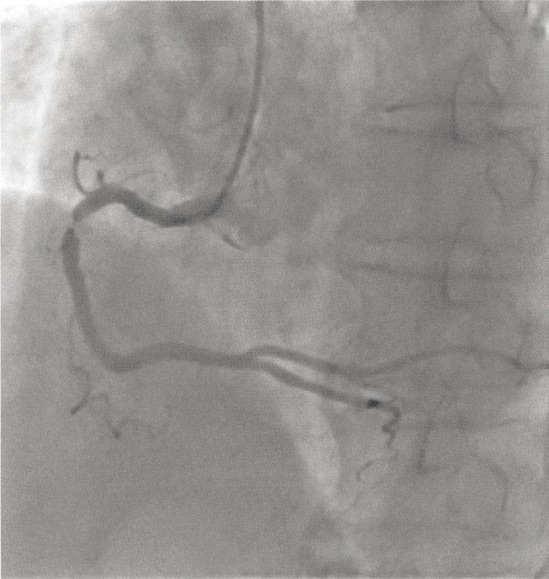
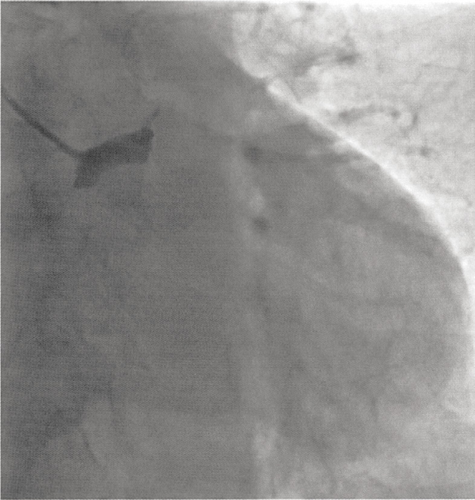
| 選択肢 | 解説 |
|---|---|
| ａ 心拍出量 増加／肺動脈楔入圧 低下／中心静脈圧 低下／末梢血管抵抗 上昇 | 誤り。心拍出量が増加するのは高心拍出状態（敗血症性ショックの初期、甲状腺機能亢進症、重症貧血、脚気心、動静脈瘻）であり、広範な心筋梗塞でポンプが壊れた本症例とは正反対である——肺動脈楔入圧と中心静脈圧がともに低下するのは循環血液量減少性ショック（出血、脱水）の型で、これも本症例には当てはまらない。本症例で起きていること：心電図はV1〜V6の広範なST上昇、心筋トロポニンT陽性、BNP 832pg/mLと著明高値、全肺野のcoarse cracklesと奔馬調律——左室が広範に壊死してポンプとして働けなくなっている。左冠動脈造影では造影剤が近位部で急峻に途絶して以遠が造影されず、右冠動脈は末梢まで造影されている＝責任血管は左冠動脈である。唯一この選択肢と合うのは末梢血管抵抗の上昇だけ：ただしそれは心拍出量の低下を代償するための反応であり、心拍出量増加とは両立しない。4つの数字は互いに独立ではなく、1つの病態から導かれる——組合せ問題はここを突いてくる。 |
| ◯ ｂ 心拍出量 減少／肺動脈楔入圧 上昇／中心静脈圧 上昇／末梢血管抵抗 上昇 | これが正解。広範前壁の急性心筋梗塞によって左室のポンプ機能が破綻した心原性ショックであり、4つの指標はすべて「心臓が送り出せず、手前に溜まる」という1つの事実から導かれる——①心拍出量の減少＝壊死した心筋が収縮しないため。血圧68mmHg（触診法）、意識レベルJCSⅡ-10、四肢末梢の著明な冷感がその帰結である。②肺動脈楔入圧の上昇：楔入圧は左房圧（＝左室拡張末期圧）を反映する。左室が空にならないため充満圧が上がり、その圧が左房から肺静脈・肺毛細血管へ伝わって肺水腫を生じる——全肺野のcoarse crackles、SpO2測定不能、奔馬調律、BNP 832pg/mLがこれを裏づける。③中心静脈圧の上昇：肺循環の圧が上がれば右室の後負荷が増し、右室も拍出しにくくなって右房圧＝中心静脈圧が上昇する（うっ血が右心系まで及ぶ）。④末梢血管抵抗の上昇：血圧＝心拍出量×末梢血管抵抗。心拍出量が落ちたぶんを補うため、交感神経とレニン-アンジオテンシン系が働いて末梢血管を収縮させる——皮膚の湿潤と四肢冷感はこの血管収縮の現れである。Forrester分類ではⅣ群（うっ血＋低灌流）、Nohria分類ではwet-cold、Killip分類ではⅣにあたる。 |
| ｃ 心拍出量 減少／肺動脈楔入圧 上昇／中心静脈圧 上昇／末梢血管抵抗 低下 | 誤り。心拍出量減少・楔入圧上昇・中心静脈圧上昇までは本症例に合致するが、末梢血管抵抗の「低下」が決定的に誤りである——末梢血管抵抗が低下するのは血液分布異常性ショック（敗血症性、アナフィラキシー、神経原性）で、これらは末梢血管が拡張して四肢が温かい（warm shock）。身体所見が答えを分けている：本症例は「皮膚は湿潤し、四肢末梢の著明な冷感を認める」——冷たく湿った皮膚は交感神経性の血管収縮そのもので、末梢血管抵抗の上昇を意味する。ショックの型と末梢の温度：冷たいショック＝心原性・循環血液量減少性・閉塞性（いずれも心拍出量低下＋血管収縮）／温かいショック＝血液分布異常性（血管拡張が主体）——ベッドサイドで手を触れるだけで大きく2つに分けられる、極めて実用的な所見である。紛らわしい状況：心原性ショックが遷延して全身性炎症反応を伴うと、末梢血管抵抗が落ちて温かいショックの様相を呈することがある。しかし急性期の典型像は冷たいショックである。 |
| ｄ 心拍出量 減少／肺動脈楔入圧 低下／中心静脈圧 上昇／末梢血管抵抗 低下 | 誤り。肺動脈楔入圧の「低下」が本症例と真っ向から矛盾する——楔入圧が低く中心静脈圧だけが高い組合せは、右心系の障害で肺循環へ血液が送り込めない病態、すなわち右室梗塞・肺血栓塞栓症・心タンポナーデ（閉塞性ショック）の型である。本症例には明確な肺うっ血がある：全肺野のcoarse crackles、奔馬調律、SpO2測定不能、BNP 832pg/mL——これらはすべて左房圧・肺毛細血管圧の上昇を示しており、楔入圧が低いことはありえない。末梢血管抵抗の低下も誤り：四肢末梢の著明な冷感がある以上、末梢血管は収縮している。鑑別として押さえる型：右室梗塞＝低血圧＋頸静脈怒張＋肺野清明。中心静脈圧は上がるが楔入圧は上がらない——本症例のように肺水腫を伴う病態とは正反対である。本症例の左冠動脈造影が示す責任血管も、右室ではなく左室の広範な領域を支配する血管である。 |
| ｅ 心拍出量 減少／肺動脈楔入圧 低下／中心静脈圧 低下／末梢血管抵抗 上昇 | 誤り。心拍出量減少と末梢血管抵抗上昇は正しいが、肺動脈楔入圧と中心静脈圧がともに「低下」する点が誤りで、この組合せは循環血液量減少性ショックの型である——出血・脱水・熱傷などで血管内容量が失われると、前負荷が減って充満圧（楔入圧・中心静脈圧）が下がり、心拍出量が落ち、代償として血管が収縮する。治療がまるで違ってしまう：循環血液量減少性ショックの治療は輸液だが、本症例のように肺水腫を伴う心原性ショックに大量輸液を行えば、肺うっ血を悪化させて致命的になる——血行動態の読み違いは、そのまま治療の誤りになる。本症例が心原性である根拠：広範なST上昇と心筋トロポニンT陽性、BNPの著明高値、奔馬調律と全肺野のcoarse crackles、そして左冠動脈の近位部で造影が途絶していること——出血や脱水を示唆する所見（Hb 13.0g/dLと貧血なし、脱水の記載なし）はない。⚠️ 組合せ問題は、1つの誤りで肢全体が落ちる——4項目を1つずつ独立に検証する習慣をつけること。 |
| 選択肢 | 解説 |
|---|---|
| ◯ ａ 退院後も継続する。 | これが正解。心臓リハビリテーションは入院中で終わるものではなく、退院後の外来通院型（回復期）と、生涯続く維持期（在宅・地域）へつないでいく長期プログラムである——運動耐容能の改善だけでなく、再入院と心血管死を減らすことが示されており、薬物療法と並ぶ二次予防の柱として位置づけられている。3つの相：急性期（第Ⅰ相・入院中）＝座位・立位・歩行と段階的に離床し、日常生活動作を再獲得する／回復期（第Ⅱ相・退院後3〜5か月）＝外来で監視下の運動療法と患者教育／維持期（第Ⅲ相・生涯）＝在宅や地域で運動習慣と危険因子管理を継続する。ここで途切れることが最大の問題：日本では急性心筋梗塞後に外来心臓リハビリテーションへ参加する患者の割合が低いことが繰り返し指摘されている——退院時に「続けるもの」として説明することが医師の役割である。内容は運動だけではない：運動療法、患者教育（服薬アドヒアランス、禁煙、食事、体重）、危険因子の管理、そして心理社会的支援と職場復帰の調整を含む包括的プログラムである。本症例は心原性ショックを伴う広範前壁梗塞から機械的補助循環下のPCIで回復した患者で、まさに包括的な再発予防が要る。 |
| ｂ 急性期は実施しない。 | 誤り。急性期こそ心臓リハビリテーションの出発点である——血行動態が安定したら、できるだけ早く離床を始める——合併症のない急性心筋梗塞では、再灌流療法の翌日から座位・立位・室内歩行へと段階的に進め、数日で病棟歩行、1週間前後で退院という経過をたどることも珍しくない。安静を続けることの害：長期臥床は筋力低下と運動耐容能の低下、起立性低血圧、静脈血栓塞栓症、肺炎、褥瘡、せん妄、そして抑うつを招く（廃用症候群）——かつて心筋梗塞後は数週間の絶対安静が常識だったが、それが害であることがわかり、現在は早期離床が標準になった。もちろん条件はある：胸痛が持続している、心不全が代償されていない、致死性不整脈がある、血圧が不安定——こうした状況では次の段階へ進めず、いったん止める。本症例は心原性ショックからの回復期であり、進行はより慎重になるが「実施しない」わけではない。 |
| ｃ 無酸素運動は併用しない。 | 誤り。心臓リハビリテーションの中心は有酸素運動だが、レジスタンストレーニング（筋力トレーニング＝無酸素運動）も適切な強度で併用することが推奨されている——骨格筋量と筋力の維持は日常生活動作の自立に直結し、とくに高齢者やフレイルを伴う患者では有酸素運動だけでは不十分である。どう組み合わせるか：有酸素運動を週3〜5回、1回20〜60分、嫌気性代謝閾値〈AT〉レベルまたはBorg指数11〜13（楽である〜ややきつい）で行い、これに週2〜3回のレジスタンストレーニングを加える——レジスタンストレーニングは低負荷・高反復（1回最大挙上重量の30〜50％程度を10〜15回）とし、息をこらえる（Valsalva）ことのないよう指導する——努責は血圧を急上昇させ、心負荷を増やす。禁忌に近い状況：コントロール不良の高血圧、重症の大動脈弁狭窄症、非代償性心不全、不安定な不整脈では高強度の筋力トレーニングを避ける。「無酸素運動は一切だめ」という単純な禁止は、現在の指針にはない。 |
| ｄ 胸部症状が増悪しても継続させる。 | 誤り。胸部症状が出現・増悪したら、運動は直ちに中止する——これは心臓リハビリテーションの絶対的な中止基準である——胸痛は心筋の酸素需要が供給を上回ったことを示しており、それを押して続ければ心筋梗塞や致死性不整脈を招きかねない。運動中止の基準：胸痛・強い息切れ・めまい・失神前症状／収縮期血圧の10mmHg以上の低下／過度の血圧上昇（収縮期250mmHg以上または拡張期115mmHg以上）／1mm以上の虚血性ST変化／持続する心室性不整脈や新たな不整脈の出現／チアノーゼ・顔面蒼白・冷汗／患者が中止を希望したとき。負荷中の血圧低下の意味：運動で血圧が下がるのは、心拍出量が増やせないことを示す危険な所見で、重症の多枝病変や左室機能低下を示唆する。その後の対応：症状が出たら運動を中止し、心電図・バイタルサインを確認し、必要に応じて虚血の再評価（負荷試験、冠動脈造影）を行う。次回以降は運動処方を見直す。「多少の症状は我慢して続ける」という指導は決して行わない。 |
| ｅ 病棟では医師の同伴が必須である。 | 誤り。心臓リハビリテーションは医師・看護師・理学療法士・薬剤師・管理栄養士・臨床検査技師・臨床心理士などが関わる多職種チームで行うもので、実施のたびに医師が同伴しなければならないという規定はない——医師の役割は、運動処方（強度・時間・頻度・様式）を決め、開始の可否を判断し、経過を評価することにある。監視の程度は段階で変わる：急性期や高リスク患者では心電図モニター下の監視型で行い、状態が安定するにつれて監視の程度を下げ、最終的には在宅での自主運動へ移行する——ただし緊急時に対応できる体制（救急カート、除細動器、医師との連絡体制）は必ず整えておく。実務の姿：病棟での歩行練習は看護師や理学療法士が中止基準に従って実施し、基準に触れれば中止して医師へ報告する——この分担が成り立つからこそ、リハビリテーションは日常的に提供できる。⚠️ 誤答肢はいずれも「安全のために厳しくした」ように見えるが、実際には患者から治療の機会を奪う——過剰な制限も医療の誤りである。 |
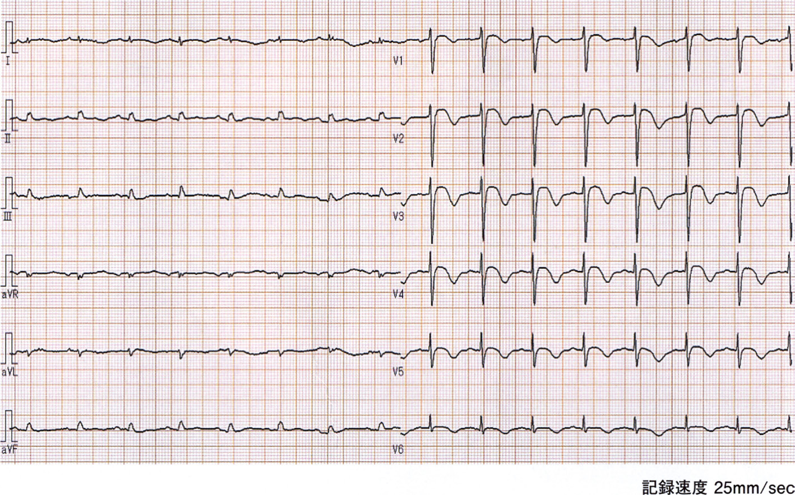
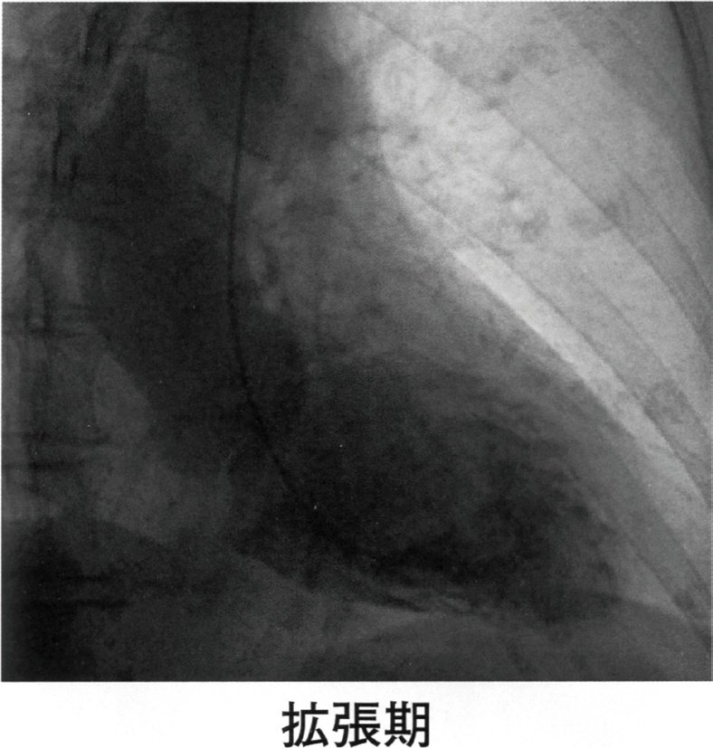
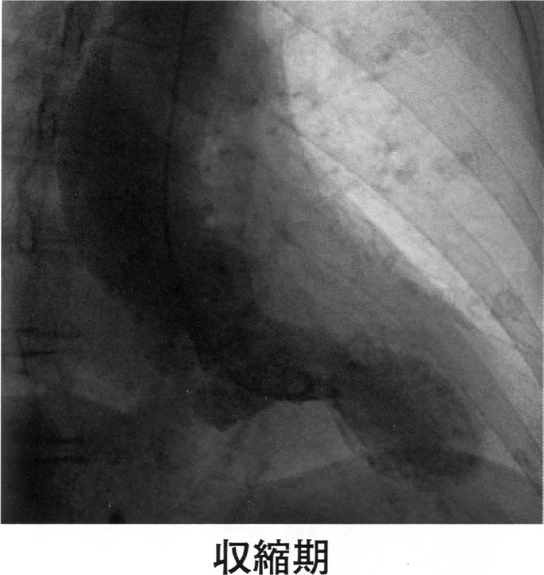
| 選択肢 | 解説 |
|---|---|
| ａ 急性心膜炎 | 誤り。急性心膜炎では、鋭い胸痛が深吸気と仰臥位で増悪し坐位前傾で軽快する、心膜摩擦音が聴かれる、心電図では広範な誘導の凹型ST上昇とPR低下を示す——本症例のいずれとも合わない——本症例の心電図は前胸部誘導を中心とした深く幅の広い陰性T波が主体で、心膜炎の経過（ST上昇 → 正常化 → 陰性T）としては説明しにくい。決定的に違うのは壁運動：心膜炎は心膜の炎症であり、心筋の収縮そのものは保たれる。本症例では心尖部が無収縮で基部が過収縮という、明確な局所壁運動異常がある。心膜炎の検査所見：炎症反応の上昇、心エコーでの心膜液貯留。心筋トロポニンは心筋まで炎症が及べば軽度上昇する（心筋心膜炎）。ウイルス感染が最多で、他に結核、尿毒症、悪性腫瘍、膠原病、心筋梗塞後（早期心膜炎・Dressler症候群）。治療はアスピリンや非ステロイド性抗炎症薬にコルヒチンを併用する。 |
| ｂ 冠攣縮性狭心症 | 誤り。冠攣縮性狭心症は、器質的狭窄のない冠動脈が一過性に強く収縮して虚血を起こす疾患で、発作は安静時（とくに深夜から早朝）に数分から15分程度続き、ニトログリセリンで速やかに軽快する——本症例は日中の来客対応中に発症し、心尖部の広範な無収縮と著明なBNP上昇（952pg/mL）、肺うっ血（両側のcoarse crackles）を伴っており、一過性の攣縮発作の像ではない。「冠動脈に有意狭窄がない」という共通点で迷わせている：冠攣縮でも造影は正常でありうるので、ここだけでは分けられない——分けるのは壁運動の分布である。冠攣縮による虚血は攣縮した1本の冠動脈の灌流域に一致するのに対し、たこつぼ症候群の無収縮は単一の冠動脈支配域を越えて心尖部を輪状に取り巻く。確定診断の方法も違う：冠攣縮ならアセチルコリンやエルゴノビンによる誘発試験を行う（カルシウム拮抗薬・硝酸薬は48時間前から中止）。なお、たこつぼ症候群の一因として多枝の冠攣縮を想定する説もあるが、証明されてはいない。 |
| ◯ ｃ たこつぼ心筋症 | これが正解。たこつぼ症候群（たこつぼ心筋症）は、強い精神的・身体的ストレスを契機に、左室心尖部が無収縮となり基部が過収縮する、一過性の左室機能障害である——本症例は2週間前に夫が突然死し、葬儀と弔問対応という強い精神的ストレス下にある74歳女性という、この疾患の典型的な背景をもつ。示された画像が語ること：左室造影では、拡張期には大きな卵形だった左室が、収縮期には基部が細く締まる一方で心尖側は丸く膨らんだまま残る——首の細い丸い壺、すなわち蛸壺の形をとる——心電図では前胸部誘導を中心に深く幅の広い陰性T波を認める。急性期のST上昇に続いて数日で現れ、QT延長を伴う所見である。診断の決め手：①壁運動異常が単一の冠動脈支配域を越えて広がること ②冠動脈造影で責任病変となる有意狭窄や閉塞がないこと ③心筋逸脱酵素の上昇が壁運動異常の広さに比べて軽微であること（本症例のCK 184U/Lは軽度上昇）。加えてBNP 952pg/mLの著明高値と肺うっ血は、急性の左室機能低下を反映しており矛盾しない。多くは数週間で壁運動が正常化する。 |
| ｄ 下壁急性心筋梗塞 | 誤り。下壁急性心筋梗塞なら、心電図はⅡ・Ⅲ・aVFのST上昇を示し、壁運動異常は右冠動脈の灌流域である下壁に限局し、冠動脈造影では右冠動脈に責任病変が見つかるはずである——本症例は前胸部誘導の陰性T波、心尖部を中心とする無収縮、そして冠動脈に有意狭窄・閉塞なし——3点すべてが合わない。心筋逸脱酵素の量も合わない：心尖部という広い領域が無収縮になっているのにCKは184U/Lにとどまる。これほどの壁運動異常が梗塞によるものなら、逸脱酵素はもっと大きく上がる——この不釣り合いこそ、たこつぼ症候群を疑う最も重要な手がかりである。下壁梗塞の付随所見：洞徐脈・房室ブロック（右冠動脈が洞結節枝・房室結節枝を出すため）、右室梗塞の合併（V4RのST上昇）、悪心・嘔吐や心窩部痛といった消化器症状。本症例に悪心はあるが、それだけで下壁梗塞とはいえない。 |
| ｅ 前壁陳旧性心筋梗塞 | 誤り。陳旧性心筋梗塞は、過去の梗塞が瘢痕化した状態で、心電図では異常Q波とR波の減高が残り、壁運動異常は固定している——本症例のような急性発症の経過とは相容れない——本症例は本日10時に突然発症し、救急搬送され、BNP 952pg/mLと肺うっ血を伴っている。慢性に経過した瘢痕では説明できない。「前壁」という部位も合わない：前壁陳旧性梗塞なら左前下行枝に閉塞または高度狭窄があるはずだが、冠動脈造影では有意な狭窄・閉塞を認めていない。陳旧性梗塞の心電図：幅0.04秒以上・深さがR波の25％以上の異常Q波。ST上昇が2週間以上持続すれば心室瘤を疑う。紛らわしさの本質：たこつぼ症候群は心電図でも壁運動でも前壁梗塞に酷似する——だからこそ冠動脈造影が必要になる。造影して初めて「詰まっていない」ことがわかる。⚠️ 臨床では、まず急性冠症候群として対応し、造影の結果でたこつぼ症候群と判明する——この順序を逆にしてはいけない。 |
| 選択肢 | 解説 |
|---|---|
| ａ 利尿薬を投与する。 | 誤り。利尿薬を投与すべき状況ではない——この患者は本日透析を終えたばかりで、体重も透析直後の65.8kgから67kgとほぼ変わらず、体液過剰の所見がない——心音と呼吸音に異常を認めず、肺うっ血を示す所見も記載されていない。そもそも効きにくい：1日尿量500mL程度の維持透析患者では残腎機能が乏しく、ループ利尿薬を投与しても十分な利尿は得られない。害のほうが大きい：急性冠症候群で冠灌流を保たなければならない場面で循環血漿量を減らせば、血圧が下がって虚血をさらに悪化させる。いま起きていること：透析終了後に出現し持続する左前胸部痛と冷汗、そして心電図Ⅱ・Ⅲ・aVFの2mmのST上昇——下壁のST上昇型心筋梗塞である。体液量の是正ではなく、閉塞した冠動脈を開けることが必要である。 |
| ◯ ｂ 冠動脈造影を施行する。 | これが正解。Ⅱ・Ⅲ・aVFという下壁の3誘導に2mmのST上昇があり、持続する胸痛と冷汗を伴う——ST上昇型心筋梗塞〈STEMI〉であり、直ちに冠動脈造影を行って責任病変を同定し、経皮的冠動脈インターベンションによる再灌流へ進むのが標準治療である——STEMIでは心筋トロポニンの結果を待たない。心電図と症状だけで再灌流の適応が立つ。透析患者だからといって手控えない：維持透析患者は冠動脈疾患の頻度が高く、急性心筋梗塞の死亡率も一般人口よりはるかに高い——だからこそ積極的な再灌流療法の利益が大きい。造影剤腎症を恐れる必要がない：無尿・乏尿の維持透析患者では、造影剤で失うべき腎機能がすでにほとんどない。残腎機能に配慮して造影剤量は最小限にするが、それが検査を控える理由にはならない——造影剤は透析で除去できるが、そのために緊急透析を組む必要はない（通常の透析スケジュールでよい）。下壁梗塞として注意すること：右冠動脈が責任血管である可能性が高く、右室梗塞の合併（V4RのST上昇）と徐脈・房室ブロックを確認する。脈拍100/分で徐脈はなく、血圧156/88mmHgと保たれている。 |
| ｃ 緊急血液透析を施行する。 | 誤り。緊急血液透析の適応は、高カリウム血症、代謝性アシドーシス、体液過剰による肺水腫、尿毒症症状——本症例にはそのいずれの記載もない——本日通常どおり4時間の透析を終えて帰宅した直後の発症であり、透析不足による病態とは考えにくい。危険でもある：急性冠症候群の患者に除水を伴う透析を行えば、血圧低下によって冠灌流が減り、梗塞範囲を広げかねない。抗凝固を要する点も、これから侵襲的手技に臨む患者では検討を要する。透析患者の胸痛で透析関連を考える場面：透析中の血圧低下に伴う虚血、除水過多による低血圧、電解質の急激な変動による不整脈——これらは「透析中に起こる」ことが手がかりになる——本症例は透析を終えて帰宅後の発症で、この筋には乗らない。順序の問題：もし高カリウム血症などがあれば、再灌流療法と並行して対処する。しかしそれは再灌流の代わりにはならない。 |
| ｄ 自宅での経過観察を指示する。 | 誤り。持続する胸痛と冷汗に加えて下壁誘導の2mmのST上昇がある患者を帰宅させることは、心筋梗塞を放置することにほかならない——ST上昇型心筋梗塞では発症から再灌流までの時間がそのまま梗塞範囲と予後を決める（time is muscle）。数時間の遅れが不可逆的な心筋壊死になる。加えて突然死の危険がある：発症48時間以内は心室細動が最も起こりやすい時期であり、自宅で発症すれば救命はきわめて難しい。下壁梗塞に特有の危険：高度房室ブロックや徐脈による失神、右室梗塞による低血圧——いずれも監視下でなければ対応できない。透析患者では症状が乏しいこともある：糖尿病性腎症が原疾患のこの患者は自律神経障害を伴いやすく、症状の強さが重症度を反映しない。むしろ症状が出ている時点で相当の虚血があると考える。「透析を終えたばかりだから様子を見る」という判断が最も危険である。 |
| ｅ 上肢の超音波検査を施行する。 | 誤り。左前腕の血管雑音は内シャント（動静脈瘻）が正常に機能していることを示す所見であって、異常ではない——血液透析のために作られた内シャントでは、動脈血が静脈へ直接流れ込むため、拍動性の振戦（thrill）と連続性の血管雑音（bruit）が触知・聴取される。これらが弱まったり消えたりしたときこそシャント狭窄・閉塞を疑う。いま優先すべきことではない：本日の透析が問題なく施行できている以上、シャントは機能している。持続する胸痛とST上昇を前にして上肢の超音波検査を選ぶのは、優先順位の重大な誤りである。シャントに関して知っておくこと：シャント肢では血圧測定・採血・点滴を行わない（閉塞のリスク）。過大なシャント血流は高心拍出性心不全の原因になり、スチール症候群では手指の虚血を生じる。⚠️ 本問の誤答肢はいずれも「透析患者らしい対応」に見える——透析患者であることに引きずられて、目の前のST上昇型心筋梗塞を見落とさせる作りになっている。 |
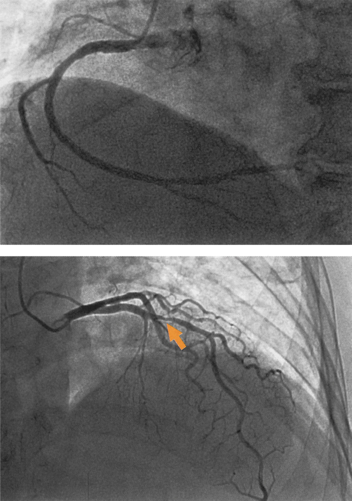
| 選択肢 | 解説 |
|---|---|
| ａ Holter 心電図 | 誤り。Holter心電図は24時間の日常生活下で不整脈や虚血性変化を記録する検査で、負荷をかけて虚血を誘発する検査ではない——本症例で必要なのは「左前下行枝の50〜75％狭窄が実際に虚血を起こしているか」を確かめることであり、そのためには心筋の酸素需要を増やす負荷が要る。加えて判定の問題が残る：この患者は完全右脚ブロックがあり、心電図のST変化そのものが解釈しにくい——同じ土俵にある検査を選んでも同じ壁に当たる。Holter心電図が有用な場面：発作性の不整脈の捕捉、失神の原因検索、そして冠攣縮性狭心症のように「発作時にしか出ない変化」を狙うとき——本症例は朝6時のゴミ出し（労作）で誘発される症状なので冠攣縮も鑑別に挙がるが、すでに冠動脈造影で50〜75％の器質的狭窄が見つかっており、まずその機能的意義を評価する段階にある。虚血の広がりや部位を教えてくれない点でも、この場面には向かない。 |
| ｂ FDG-PET 検査 | 誤り。FDG-PETが見ているのは心筋のブドウ糖代謝、すなわち「その心筋がまだ生きているか（生存能・viability）」であって、「虚血が誘発されるか」ではない——血流が低下しても代謝が保たれている領域（血流・代謝ミスマッチ）は冬眠心筋であり、血行再建によって収縮が回復する可能性がある——これを判定するための検査である。使う場面：陳旧性心筋梗塞や虚血性心筋症で左室機能が低下しており、血行再建を行う価値があるかを決めたいとき。本症例には当てはまらない：この患者は労作時の胸部不快感が主訴で、壁運動低下や心不全の記載はない。生きているかどうかではなく、虚血が起きるかどうかを問うている。その他の用途：心サルコイドーシスの活動性評価（炎症細胞の糖代謝を見る。この場合は逆に生理的な心筋集積を抑えるための食事制限が要る）、悪性腫瘍の評価。目的（虚血か、生存能か、炎症か）で検査は決まる。 |
| ｃ Master 2 階段法 | 誤り。Master 2階段法も運動負荷心電図の一種であり、判定の根拠はST変化——すでにトレッドミル負荷心電図で判定できなかった患者に、同じ原理のより弱い負荷試験を行っても答えは得られない——しかもMaster法は運動量が段階的でなく、負荷中の心電図・血圧を連続監視できない点でトレッドミルやエルゴメータに劣る。本症例の壁：完全右脚ブロックがあり、しかもトレッドミルでは目標心拍数に達したにもかかわらず「十分な判定ができる所見は得られなかった」——負荷が足りなかったのではなく、心電図でのST判定そのものが成り立たなかったということである。だから次は違う土俵へ移る：ST変化に頼らない方法、すなわち血流分布を画像で見る心筋血流シンチグラフィや、壁運動を見る負荷心エコーへ切り替える。心電図でST判定が難しい状況：脚ブロック、心室ペーシング、WPW症候群、ジギタリス服用中、著明な左室肥大、安静時からのST-T異常。同じ検査を繰り返さないという判断も、立派な臨床判断である。 |
| ｄ MIBG 心筋シンチグラフィ | 誤り。MIBG心筋シンチグラフィが評価するのは心臓交感神経の終末（ノルアドレナリンの取り込みと保持）であって、心筋の血流ではない——MIBGはノルアドレナリンの類似体で、交感神経終末に取り込まれる。心臓と縦隔の集積比〈H/M比〉と洗い出し率〈washout rate〉を指標にする。使う場面：Parkinson病とLewy小体型認知症では集積が低下し（多系統萎縮症では保たれる）、神経変性疾患の鑑別に用いられる——循環器では慢性心不全の重症度・予後評価（交感神経の過活動を反映する）、そして褐色細胞腫・神経芽腫の局在診断にも用いる。本症例には合わない：問われているのは「心筋虚血の有無」であり、交感神経の状態ではない。核医学検査は何を標識しているかで決まる：タリウム-201・テクネチウム-99m製剤＝血流／FDG＝糖代謝（生存能・炎症）／MIBG＝交感神経／ピロリン酸・DPD＝心アミロイドーシス（ATR型）。「何を見る検査か」を一つずつ結びつけて覚えておく。 |
| ◯ ｅ 運動負荷タリウム心筋シンチグラフィ | これが正解。運動負荷タリウム心筋シンチグラフィは、心筋血流に比例して取り込まれる放射性医薬品の分布を負荷時と安静時で比較する検査で、心電図のST変化に頼らずに虚血を判定できる——完全右脚ブロックのために負荷心電図で判定できなかった本症例に、まさに適した方法である。何が見えるか：負荷時に集積が低下し、安静時（再分布像）で改善する領域＝可逆性欠損＝心筋虚血。負荷時も安静時も欠損したままの領域＝固定性欠損＝陳旧性梗塞（瘢痕）——タリウム-201はカリウム類似体として心筋細胞へ能動的に取り込まれ、時間とともに再分布するため、1回の投与で負荷像と再分布像の両方が得られる。虚血の場所と広がりまでわかる：左前下行枝の狭窄が責任病変であれば、前壁・中隔・心尖部に可逆性欠損が現れるはずである——狭窄の位置と虚血の分布が一致するかを確かめられる。これが治療方針に直結する：可逆性欠損が証明されれば血行再建の適応となり、証明されなければ薬物療法で経過を見る。運動負荷を選ぶ理由：この患者は目標心拍数まで運動できることが確認済みで、運動負荷なら運動耐容能・血圧反応・症状という予後情報も同時に得られる。運動できない患者では、アデノシン・ATP（気管支喘息では禁忌）やジピリダモールによる薬物負荷を用いる。 |
| 選択肢 | 解説 |
|---|---|
| ａ Fabry 病 | 誤り（鑑別に含まれる）。Fabry病はα-ガラクトシダーゼAの欠損によりグロボトリアオシルセラミドが全身の細胞に蓄積するX連鎖性のライソゾーム病で、心臓では左室肥大として現れる——肥大型心筋症と診断されていた患者の一部がFabry病であることが知られており、原因不明の左室肥厚を見たら必ず鑑別に挙げる。手がかりになる所見：四肢末端の灼熱痛（acroparesthesia）、被角血管腫、低汗症、角膜混濁、蛋白尿から腎不全、脳血管障害、難聴——心電図では短いPR間隔と高電位、心エコーでは同心性の左室肥大、心臓MRIでは下側壁基部の遅延造影とT1値の低下が特徴的である。なぜ見逃してはいけないのか：酵素補充療法という治療があるからである——診断がつけば進行を抑えられる、数少ない「治療可能な心筋症」である。本症例との関係：52歳男性で母親が22年前に死亡（詳細不明）——X連鎖遺伝の可能性を考えると、母方の情報は重要な手がかりになりうる。 |
| ｂ 肥大型心筋症 | 誤り（鑑別に含まれる）。肥大型心筋症は、心筋のサルコメア蛋白遺伝子の変異による原発性の心筋疾患で、左室壁厚15mm以上（明らかな原因がない場合）を基準に診断される。壁厚20mmは十分にこの範囲にある——常染色体顕性（優性）遺伝を示すことが多く、家族歴と突然死の家族歴の聴取が欠かせない。病型：非対称性中隔肥大が典型で、収縮期に僧帽弁前尖が流出路へ引き込まれる（SAM現象）と左室流出路狭窄を生じる（閉塞性肥大型心筋症）。ほかに心尖部肥大型、心室中部閉塞型がある。所見：心電図の左室高電位と陰性T波（心尖部肥大型では巨大陰性T波）、心エコーでの非対称性肥厚とSAM、収縮期駆出性雑音がValsalva手技・立位で増強し蹲踞で減弱する。最も重要な合併症：心臓突然死。若年アスリートの突然死の代表的原因であり、リスク評価のうえで植込み型除細動器を検討する。硝酸薬・利尿薬・強心薬は流出路狭窄を悪化させるため避け、β遮断薬やベラパミルを用いる。 |
| ◯ ｃ たこつぼ心筋症 | これが正解（鑑別に含まれない）。たこつぼ心筋症（たこつぼ症候群）は、強いストレスを契機に心尖部が無収縮となる一過性の壁運動異常であって、心室壁が厚くなる疾患ではない——本症例の左室壁厚20mmという所見は「壁が厚い」ことを示しており、たこつぼ症候群では説明できない。経過も合わない：この患者は2週前の健康診断で心電図異常を指摘されたが、それは健診時と同じ所見であり、症状もなく、急性発症のエピソードもない——数日から数週で回復する一過性の病態ではない。たこつぼ症候群では、むしろ心尖部の壁は菲薄化して見え、収縮期に丸く膨らむ。たこつぼ症候群を疑う状況：強い精神的・身体的ストレスの直後、高齢女性、急性の胸痛や呼吸困難、心電図の陰性T波とQT延長、壁運動異常の広さに比べて軽微な逸脱酵素上昇、冠動脈造影で有意狭窄なし。⚠️ 本問は「厚くなる病気」と「動かなくなる病気」を区別できるかを問うている——壁厚の異常と壁運動の異常は別の軸である。なお、たこつぼ症候群の基部の過収縮を「肥厚」と誤読しないこと。 |
| ｄ 心アミロイドーシス | 誤り（鑑別に含まれる）。心アミロイドーシスは、アミロイド線維が心筋間質に沈着して壁が厚くなる浸潤性心筋症で、左室肥大を呈する代表的疾患である——ALアミロイドーシス（形質細胞性疾患に伴う免疫グロブリン軽鎖由来）と、トランスサイレチン型〈ATTR〉（野生型は高齢男性に多く、変異型は遺伝性）に大別される。鍵になる所見：心エコーでの壁肥厚とgranular sparkling様の心筋エコー輝度、拡張障害、心房中隔や弁の肥厚——にもかかわらず心電図は低電位を示す（壁は厚いのに電位が低いという不一致）——これは肥大型心筋症（高電位）や高血圧性心肥大と決定的に異なる点である。診断：心臓MRIのびまん性・心内膜下優位の遅延造影、ATTR型ではピロリン酸シンチグラフィの心筋集積、確定は生検（Congo赤染色で偏光下に緑色偏光）。ATTR型にはトランスサイレチン安定化薬という治療があり、鑑別する意味がある。手根管症候群の既往、腎障害、末梢神経障害、起立性低血圧、易出血性（眼周囲の紫斑）が全身の手がかりになる。 |
| ｅ 高血圧症に伴う心肥大 | 誤り（鑑別に含まれる）。高血圧症に伴う心肥大は、左室肥大の原因として最も頻度が高い——後負荷の増大に対する代償として心筋細胞が肥大し、求心性（同心性）肥大をきたす——本症例は自己測定の収縮期血圧が150〜170mmHgで推移し、診察室血圧も152/90mmHgと持続する高血圧があり、しかも治療を受けていない（自己判断で減塩と体重管理をしているのみ）。ただし20mmは高血圧だけでは説明しにくい：高血圧性心肥大の壁厚は通常15mm程度までにとどまることが多く、20mmという値は他の原因の合併を考えさせる——だからこそ本症例では複数の疾患を並べて鑑別する必要がある。鑑別を進める手がかり：心電図（高電位か低電位か）、肥厚の分布（同心性か非対称性か）、心臓MRIの遅延造影パターン、全身症状、家族歴、血液・尿検査。治療の観点：いずれにせよ未治療の高血圧はそれ自体が治療対象で、降圧により左室肥大は退縮しうる。喫煙25本×20年もあり、包括的な危険因子管理が必要である。 |
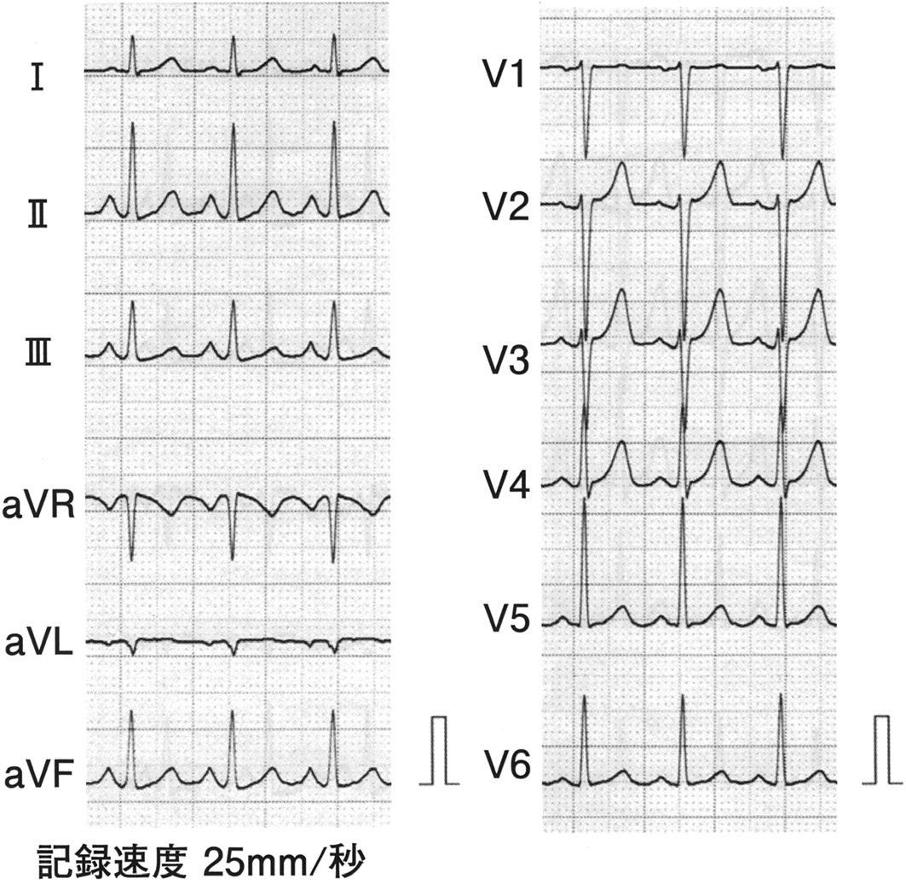
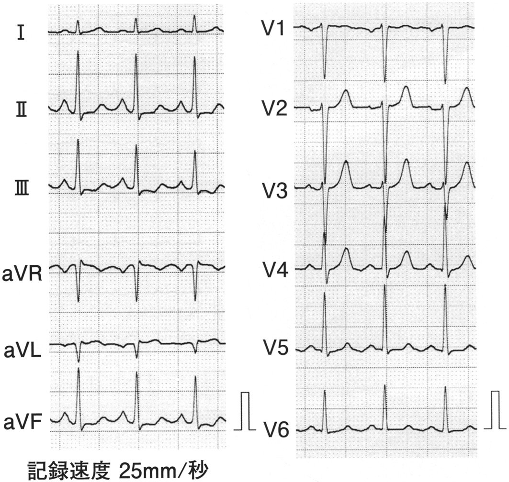
| 選択肢 | 解説 |
|---|---|
| ａ ベラパミル経口投与 | 誤り。ベラパミルは非ジヒドロピリジン系カルシウム拮抗薬で、房室結節の伝導を抑えて心拍数を下げる薬である。発作性上室頻拍の停止や心房細動の心拍数調節に用いるもので、いま起きている狭心症発作を止める薬ではない——しかも経口投与では効果発現に時間がかかり、数分で終わる発作には間に合わない。本症例の調律：発作時の心拍数は98/分で、頻脈性不整脈は起きていない。心電図Bにも上室頻拍の所見はない。カルシウム拮抗薬が主役になる狭心症：冠攣縮性狭心症では第一選択となる。しかし本症例は「早歩きで誘発され、立ち止まると約3分で改善する」という労作との明確な対応があり、労作狭心症の型である。陰性変力・変時作用の問題：ベラパミルは心収縮力と心拍数を下げるため、心機能低下例やβ遮断薬併用時には徐脈・心不全を招きうる。発作中の患者に、効果発現の遅い経口薬を選ぶという判断自体が誤りである。 |
| ◯ ｂ ニトログリセリン舌下投与 | これが正解。いま目の前で狭心症発作が起きている——まず行うべきは、ニトログリセリンの舌下投与によって発作を止めることである——示された心電図では、無症状時の心電図Aに比べて発作時の心電図BでⅡ・Ⅲ・aVF・V5・V6のST部分が基線より下がっており、新たに出現したST低下＝心内膜下虚血が確認できる。なぜ舌下なのか：舌下の粘膜から吸収された薬は肝臓の初回通過効果を受けずに直接全身循環へ入るため、1〜2分で効果が現れる。経口では肝臓でほとんど代謝されてしまい、発作の治療には使えない。作用機序：一酸化窒素を供与して血管平滑筋を弛緩させる。主として静脈を拡張して前負荷を下げ、心筋の酸素需要を減らすとともに、冠動脈（とくに太い心外膜側の血管と側副血行）を拡張して供給を増やす。診断的な意味も持つ：数分以内に症状とST変化が消失すれば、虚血であったことの強い支持になる（ただし食道疾患でも軽快しうるので、それだけで確定はしない）。投与前に収縮期血圧を確認する——本症例は172/92mmHgと十分保たれており、投与できる。PDE5阻害薬の服用歴を必ず確かめる（併用は絶対禁忌）。 |
| ｃ ヘパリン静注 | 誤り。ヘパリンの静注は急性冠症候群と診断した場合の治療であり、「まず行うべきこと」ではない——いま必要なのは、発作を止めて症状を和らげ、同時に虚血であることを確かめることである。抗凝固はその後の判断で始める。この患者は急性冠症候群か：3か月前から症状の頻度も程度も変わっていない＝安定労作狭心症の経過である。増悪型・新規発症・安静時20分以上といった不安定狭心症の型には当てはまらない——ただし本日は外来で発作が誘発され、心電図でST低下が確認された。虚血が客観的に証明された以上、この後は入院のうえ抗血栓療法を開始し、冠動脈評価へ進むことになる。順序の問題：発作中の患者に対して、症状を止める手段より先に抗凝固を選ぶ理由はない。ニトログリセリンは1〜2分で効き、しかも診断情報も与えてくれる。ヘパリンは効果発現も遅くはないが、発作そのものを止める薬ではない。 |
| ｄ アトロピン静注 | 誤り。アトロピンは徐脈に対する薬（副交感神経遮断により洞結節と房室結節の伝導を促進する）で、本症例のように心拍数98/分と保たれている患者に投与する理由がない——むしろ心拍数を上げれば心筋の酸素需要が増え、虚血を悪化させる。アトロピンを使う場面：症候性の洞徐脈、房室結節レベルの房室ブロック（下壁梗塞に伴うもの）、迷走神経反射による徐脈——His-Purkinje系の障害による高度房室ブロック（前壁梗塞に伴うもの）には無効で、ペーシングが必要になる。副作用：口渇、散瞳、視調節障害、尿閉、せん妄——閉塞隅角緑内障と前立腺肥大症では注意する。本症例の脈拍：安静時68/分、発作時98/分。発作に伴う交感神経の緊張で心拍数と血圧が上がっており（132/82 → 172/92mmHg）、これ自体が心筋酸素需要を増やして悪循環を作る。だから前負荷と後負荷を下げるニトログリセリンが理にかなう。 |
| ｅ アドレナリン静注 | 誤り。アドレナリンの静注は心停止やアナフィラキシーに対する薬で、狭心症発作の患者に投与すれば心拍数・心収縮力・血圧をすべて上げ、心筋の酸素需要を増大させて虚血を著しく悪化させる——明確に有害である——不整脈（心室頻拍・心室細動）を誘発する危険もある。虚血の本質は需要と供給の不均衡：心筋の酸素需要は、心拍数・心収縮力・壁応力（前負荷と後負荷）で決まる。狭心症の治療は、この需要を下げるか供給を増やすかのどちらかである——ニトログリセリンは前負荷を下げて需要を減らし、同時に冠動脈を広げて供給を増やす。β遮断薬は心拍数と収縮力を下げて需要を減らす。アドレナリンはその逆をすべて行う：心拍数増加、収縮力増加、後負荷増加——需要を3方向から押し上げる。⚠️ 本問の誤答肢は「効かない薬」ではなく「病態を悪化させる薬」を含んでいる——薬を選ぶときは、その薬が需要と供給のどちらをどう動かすかで判断する。アドレナリンが正しい場面（心停止、アナフィラキシー、重症の徐脈）を混同しないこと。 |
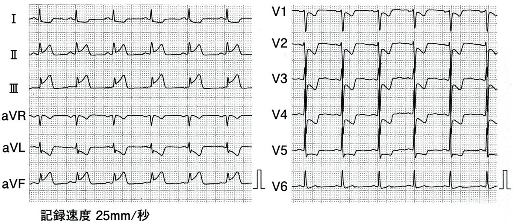
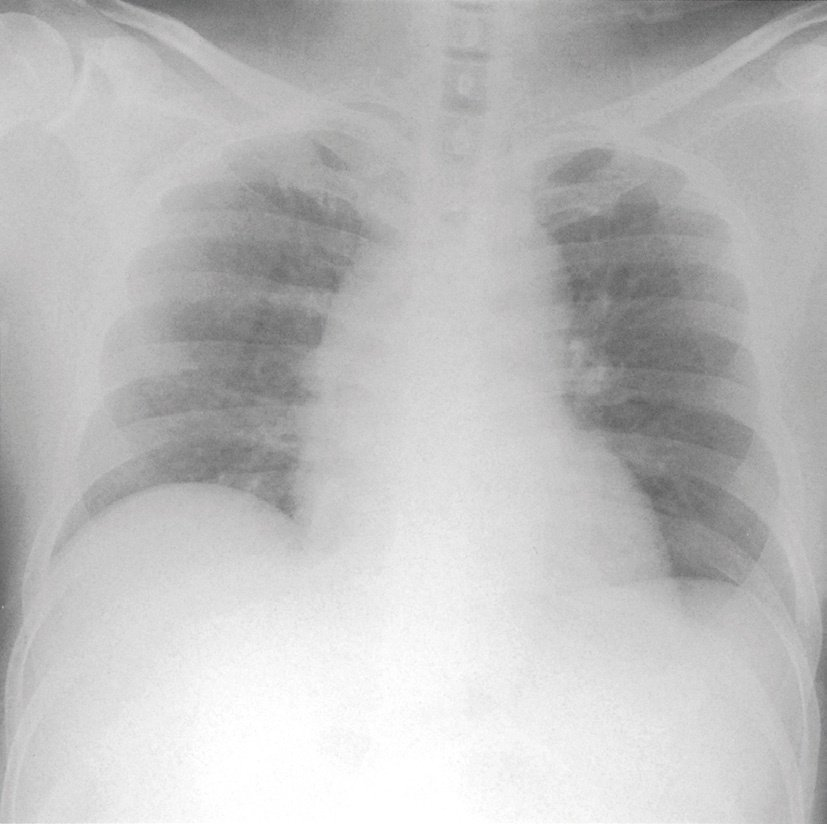
| 選択肢 | 解説 |
|---|---|
| ◯ ａ 洞停止 | これが正解。心電図はⅡ・Ⅲ・aVFに弓状（凸型）のST上昇を示し、Ⅰ・aVLには鏡像性のST低下がある＝急性下壁ST上昇型心筋梗塞であり、責任血管は右冠動脈である——洞結節枝はおよそ60％が右冠動脈近位部から分岐しているため、右冠動脈が詰まると洞結節そのものが虚血に陥り、洞徐脈から洞停止・洞房ブロックまで起こしうる。もう1つの機序＝Bezold-Jarisch反射：下壁・後壁の心筋には機械受容器が密に分布しており、虚血による伸展刺激が迷走神経求心路を介して延髄へ伝わると、遠心性に副交感神経が過剰に働いて徐脈と血圧低下を起こす——下壁梗塞で悪心・嘔吐が目立つのも同じ迷走神経反射で説明される（本症例が「胸やけと吐き気」で来院しているのはまさにこれである）。対処：症状を伴う徐脈にはアトロピン0.5mgを静注し、無効なら経皮ペーシング・一時的経静脈ペーシングへ進む。多くは一過性で恒久ペースメーカを要さない。専門医へ引き継ぐまでの数十分こそ、洞停止が突然起こりうる時間帯である。 |
| ◯ ｂ 心室細動 | これが正解。急性心筋梗塞で最も恐ろしい合併症は心室細動であり、その発生は発症直後に極端に偏っている——発症1時間以内が最多で、24時間以内にほぼ集約する（一次性心室細動）——院外心停止で搬送される急性心筋梗塞患者の死因の大半がこれであり、病院到着後もモニターと除細動器を患者から離してはならない理由がここにある。なぜ起きるか：虚血心筋では細胞外カリウムが上昇し静止膜電位が浅くなる、活動電位持続時間が不均一に短縮する、細胞間の伝導が遅くなる——虚血部と正常部の境界に伝導遅延と不応期のばらつきが生じ、リエントリーの基質ができる。治療は電気ショックだけ：心室細動に薬は効かない。目撃された心室細動には直ちに非同期電気ショックを行い、除細動が1分遅れるごとに生存率は7〜10％低下する。予防的抗不整脈薬は使わない：かつて予防的リドカインが行われたが、心室細動は減るものの徐脈・心停止が増えて死亡率はむしろ悪化した——現在は推奨されない。本症例は45歳・発症直後・トロポニン陰性＝まさに超急性期であり、危険が最も高い時間帯にいる。 |
| ｃ 上室性期外収縮 | 誤り。上室性（心房性）期外収縮は健常者にも高頻度にみられるありふれた不整脈で、単発であれば血行動態にも予後にも影響しない——24時間ホルター心電図をとれば健常成人のほとんどに認められ、加齢・カフェイン・アルコール・睡眠不足・ストレスでも増える。「特に注意すべき合併症」として引き継ぎで申し送るような所見ではない。ただし意味が出る場面はある：心筋梗塞後に上室性期外収縮が頻発する場合、心房の虚血や左房圧の上昇（＝左心不全）を反映していることがあり、心房細動の前触れとなることがある——実際、急性心筋梗塞の急性期には約1割に心房細動が合併し、これは心不全・広範梗塞のサインで予後不良因子である。本症例では：胸部エックス線写真に肺うっ血も心拡大もなく（Killip Ⅰ）、いま警戒すべきは心房性の不整脈ではなく、右冠動脈支配領域の障害が直接引き起こす徐脈性不整脈と致死性心室性不整脈である。選択肢を「起こりうるか」ではなく「命に関わるか」で選び分けること。 |
| ◯ ｄ 完全房室ブロック | これが正解。房室結節への栄養血管である房室結節枝は、およそ90％が右冠動脈（後下行枝の起始付近）から分岐する——だから下壁梗塞は房室ブロックを合併しやすい——Ⅰ度からWenckebach型Ⅱ度を経て完全房室ブロックまで、段階的に進行するのが典型で、発症から数時間〜数日のうちに起こる。下壁梗塞の房室ブロックの性格：ブロック部位が房室結節（His束より上）なので、補充調律は房室接合部から出てQRS幅は狭く、心拍数も40〜60/分と比較的保たれる。アトロピンが有効で、多くは1週間以内に自然回復する。前壁梗塞の房室ブロックとの決定的な違い：前壁梗塞（左前下行枝）で房室ブロックが出た場合、障害部位はHis束以下の脚レベルで、補充調律はQRS幅が広く心拍数40/分未満と不安定、しかも「そこまで壊死が及ぶほど広範な梗塞」を意味するため予後は著しく悪い——一時ペーシングが必須になる。同じ「完全房室ブロック」でも、下壁か前壁かで意味も対処も予後もまったく違う。 |
| ｅ 発作性上室性頻拍 | 誤り。発作性上室性頻拍（房室結節リエントリー性頻拍・房室回帰性頻拍）は、二重房室結節伝導路や副伝導路という「生まれつきの基質」を持つ人にリエントリー回路が成立して起こる不整脈であり、心筋虚血によって新たに作られるものではない——発症は若年〜中年で、動悸が突然始まり突然止まるのが特徴。基質がなければ何十年生きても起こらないし、虚血がそれを作り出すこともない。心筋梗塞後に起こる上室性の不整脈といえば心房細動：心房虚血・左房圧上昇・心膜炎・交感神経緊張が引き金になり、急性期の約1割に生じる。これは血行動態を悪化させ、塞栓症の原因にもなるので警戒に値するが、本問の選択肢にはない。選択肢の読み方：この設問は「専門医に引き継ぐまでの間に、特に注意すべき合併症」を問うている——つまり数十分のうちに起こって命を奪いうるもの、あるいは直ちに対処が要るもの。洞停止・完全房室ブロック・心室細動の3つがそれにあたる。トロポニンT陰性は発症早期を意味するだけで、梗塞を否定しない。 |
| 選択肢 | 解説 |
|---|---|
| ａ 血清AST 値 | 誤り。ASTは心筋のほか肝細胞・骨格筋・赤血球・腎にも広く分布する非特異的な逸脱酵素で、心筋障害のマーカーとしては完全に過去のものである——上昇し始めるのは発症6〜12時間後、ピークは24〜48時間後。本症例は夕方に胸痛を自覚したばかりで、いま測っても正常であることが多く、逆に上がっていても昨日の手術による組織損傷や溶血で説明がついてしまう。心筋バイオマーカーの歴史：AST → LD → CK → CK-MB → 心筋トロポニンと、より心筋に特異的で、より早く上がるものへ置き換わってきた。現在の心筋梗塞の定義（普遍的定義）そのものが「心筋トロポニンの上昇または下降」を必須要件としており、ASTは診断基準に一切登場しない。それでも測る意味はある：ASTとALTの乖離（AST優位）は心筋・骨格筋・溶血を示唆するし、本症例のように術後の全身状態を見る一般検査としては有用——ただしそれは「まず確認すべきこと」ではない。本症例には発症前の血液生化学が既に揃っており、ASTは29U/Lと正常であることまで提示されている。 |
| ◯ ｂ 術前の心電図 | これが正解。心電図のST-T変化は、それ単独では診断にならない——「以前と比べて新しく生じた変化かどうか」で意味がまったく変わる——本症例は2年前に狭心症で経皮的冠動脈形成術（ステント留置術）を受けており、その時点で陳旧性の心電図変化や、もともとのST-T異常を持っている可能性が十分にある。いま見えているST-T変化が2年前からのものなら、緊急の再灌流療法を考える根拠にはならない。しかも術前心電図は必ず存在する：3日前から入院しており、昨日全身麻酔下に幽門側胃切除術を受けている——術前検査として心電図が撮られていないことはあり得ない。同じ病院の同じカルテの中にあり、取り寄せに1分もかからず、費用もかからない。心筋梗塞の普遍的定義でも：診断要件は「心筋トロポニンの上昇／下降」＋「心筋虚血の証拠」であり、後者の1つが《新たな虚血性心電図変化》——「新たな」という語がわざわざ入っているのは、比較する心電図がなければ判定できないからである。当直で呼ばれてまずすること＝過去の心電図を出して並べること。これは知識ではなく手順の問題である。 |
| ｃ 切除標本の病理所見 | 誤り。切除された胃癌の組織型・深達度・リンパ節転移といった病理所見は、今後の補助化学療法や予後の判断に必須の情報だが、いま起きている胸痛とST-T変化の解釈には何ひとつ寄与しない——そもそも昨日の手術検体の最終病理報告が翌日に出ることはなく（通常は1〜2週間）、「まず確認する」ことが物理的にできない。悪性腫瘍と血栓症の関係はあるが：担癌患者では凝固能が亢進し静脈血栓塞栓症のリスクが上がる（Trousseau症候群）——術後で臥床していれば深部静脈血栓症から肺血栓塞栓症を起こす条件も揃う。胸痛＋SpO2低下という本症例の所見は肺血栓塞栓症でも起こりうるので、鑑別としては正しく置いておく必要がある。しかしその鑑別に必要なのも病理ではない：Dダイマー、下肢の腫脹・圧痛、造影CT、心エコーでの右心負荷所見であり、切除標本の顕微鏡所見ではない。「関係がありそうな情報」と「いま判断を変える情報」は別物である。 |
| ｄ 上部消化管内視鏡所見 | 誤り。術前の上部消化管内視鏡所見は胃癌の局在・進達度・術式選択の根拠であり、既に手術は終わっている。いま読み返しても、胸痛の原因にもST-T変化の解釈にも寄与しない——また「いま内視鏡を行う」と読んだ場合はさらに不適切で、幽門側胃切除術の翌日は吻合部が最も脆弱な時期であり、送気による吻合部圧上昇や機械的刺激は縫合不全の危険がある。虚血が疑われる患者に鎮静下の内視鏡を行うこと自体も、低酸素と血圧変動で心筋虚血を悪化させる。胸痛の鑑別に消化器疾患は確かに入る：逆流性食道炎・食道痙攣・消化性潰瘍は胸痛の原因になり、しかも硝酸薬で軽快することさえある（だから「ニトログリセリンが効いた＝狭心症」とは言い切れない）——しかし本症例は糖尿病・喫煙歴・PCI既往という強い冠危険因子を持ち、四肢に冷汗があり、心電図にST-T変化が出ている。順序として虚血を先に否定しなければならない。「見逃したら死ぬもの」から順に潰すのが救急の原則である。 |
| ｅ 直近の冠動脈造影所見 | 誤り（有用だが順序が違う）。2年前の冠動脈造影所見は決して無価値ではない——どの枝のどこにステントが入っているか、他の枝に残存狭窄があるかは、責任病変を推定するうえで確かに役立つ情報である——しかし「まず確認すべき」ものではない。2年前の記録であり他施設のものである可能性もあり、画像の取り寄せには時間がかかる。その間にも心筋は壊死し続けている。2年前の情報が現在をどこまで説明できるか：ステント留置後は再狭窄（薬剤溶出性ステントでも数％）とステント血栓症が起こりうるうえ、動脈硬化そのものが2年で進行して別の枝に新たな病変ができていることも多い。「2年前にここが悪かった」は現在の責任病変を保証しない。むしろ既往から今すぐ引き出すべき情報は別にある：抗血小板薬を服用中だが、手術に際して休薬されていなかったか——周術期の抗血小板薬中断はステント血栓症の古典的な引き金であり、これはカルテの処方歴を見れば数十秒でわかる。術前心電図も処方歴も「いまカルテの中にあるもの」——外から取り寄せるものより先に見る。 |
| 選択肢 | 解説 |
|---|---|
| ａ 酸素投与 | 誤り（適切な対応である）。酸素投与は急性冠症候群の初期対応として長く行われてきたが、現在は「低酸素血症があるときに限る」と条件が付いた——SpO2 90％未満（あるいは94％未満とする基準もある）が目安である——低酸素でない患者にルーチンで高濃度酸素を与えると、動脈の反射性収縮で冠血流がむしろ減り、活性酸素による再灌流障害を助長しうることがDETO2X-AMI試験などで示され、死亡率の改善もなかった。本症例では：SpO2 94％（room air）で呼吸数20/分——境界域であり、酸素投与を「適切でない」と断ずる根拠にはならない。術後の無気肺や疼痛による浅呼吸も考えられる状況である。設問の読み方：「適切でないのはどれか」＝5つのうち最も明確に害があるものを1つ選ぶ問題。相対的に議論のある選択肢ではなく、絶対的に禁忌に近いものを探す。酸素は「必要なら使う」もので、この場面で選ぶべき誤答ではない。 |
| ｂ 硝酸薬投与 | 誤り（適切な対応である）。硝酸薬は主に静脈系を拡張して前負荷（左室拡張末期容積）を下げ、壁応力を減らして心筋酸素消費を落とす。加えて冠動脈そのもの、とくに攣縮部位と側副血行路を拡張し、虚血を軽減して胸痛を取る——急性冠症候群の胸痛に対する第一選択の対症薬で、舌下錠・スプレーで効果不十分なら持続静注へ移る。ただし予後（死亡率）を改善する薬ではなく、あくまで症状と虚血を和らげる薬であることは押さえておく。使ってはいけない3条件：①PDE5阻害薬（シルデナフィル等）の服用中——cGMPの産生増加と分解阻害が重なり遷延する重篤な低血圧を起こす（絶対禁忌）／②右室梗塞——前負荷依存の循環なので血圧が急落する／③収縮期血圧90mmHg未満、高度徐脈・頻脈。本症例は：血圧136/72mmHg、脈拍80/分・整で、いずれの禁忌にも当てはまらない。硝酸薬は「効いたから狭心症」とは言えない点にも注意（食道痙攣でも軽快する）。 |
| ｃ 冠動脈造影 | 誤り（適切な対応である）。急性冠症候群と診断したなら、責任病変を同定してそのまま血行再建へ移れる冠動脈造影が治療の本筋である——ST上昇型なら可及的速やかに（病院到着から90分以内のバルーン拡張＝door-to-balloon time）、非ST上昇型でも高リスク（持続する胸痛、動的なST変化、トロポニン上昇、血行動態不安定、致死性不整脈）なら早期侵襲的戦略として24時間以内の冠動脈造影が推奨される。術後患者だから躊躇すべきか：むしろ逆である——術後で血栓溶解薬が使えないからこそ、出血源をカテーテルで直接扱えるPCIの価値が上がる。橈骨動脈アプローチなら穿刺部の止血も容易で、開腹創とは別の部位から到達できる。考慮すべき点はある：PCI後は抗血小板薬2剤併用（DAPT）が必須になり、術後の出血リスクと衝突する——ステントの種類や抗血栓療法の期間を外科と循環器内科で相談することになるが、それは「造影しない」理由にはならない。診断がついた以上、次は責任病変を見にいく。 |
| ◯ ｄ 血栓溶解薬投与 | これが正解（適切でない）。昨日、幽門側胃切除術という開腹の大手術を受けたばかりの患者に血栓溶解薬を投与すれば、剥離面と吻合部から制御できない腹腔内出血を起こす——大手術後は血栓溶解療法の禁忌である——ガイドラインでは「3週間以内の大手術」が相対禁忌、実際の運用では術後間もない時期は事実上の絶対禁忌として扱われる。術後1日目はその極点にある。禁忌でなくても第一選択ではない：血栓溶解療法はPCIが行えない施設、あるいはPCI可能施設への搬送に120分以上かかる場合の代替手段であり、PCIが可能なら primary PCI が開存率・再閉塞率・死亡率のいずれでも優る。そもそも病型が合わない可能性が高い：非ST上昇型急性冠症候群（NSTEMI・不安定狭心症）に血栓溶解薬を使うと、出血が増えるだけで予後は改善せず、むしろ有害であることが確立している——適応があるのはST上昇型心筋梗塞だけである。3つの理由が重なる：①術直後で禁忌 ②PCIが可能ならそちらが優る ③病型として適応外——どれか1つでも成立すれば選ばない選択肢である。この設問は「侵襲的処置ができないから薬で済ませよう」という発想が最も危ない場面を突いている。 |
| ｅ 心電図モニター装着 | 誤り（適切な対応である）。急性冠症候群と診断した患者に心電図モニターを装着することは、あらゆる対応の中で最も基本的かつ省いてはならない措置である——目的は致死性不整脈（心室細動・心室頻拍）の即時検出と、徐脈性不整脈・房室ブロックの監視。心室細動は発症早期に集中して起こり、治療は電気ショックだけ——モニターが付いていなければ「いつ起きたか」すらわからず、除細動が遅れた分だけ生存率は落ちる。術後病棟という条件：一般外科病棟では持続心電図モニターが付いていないことも多い。当直医が呼ばれた時点でモニターを付け、CCU／ICUへの移送を段取りすることが最初の一手になる。モニターが拾うのは不整脈だけではない：ST変化のトレンドも追え、虚血の再燃や再灌流の成否を連続的に見ることができる（ST モニタリング）。「適切でないのはどれか」を問う設問では、こうした基本手技が答えになることはまずない。 |
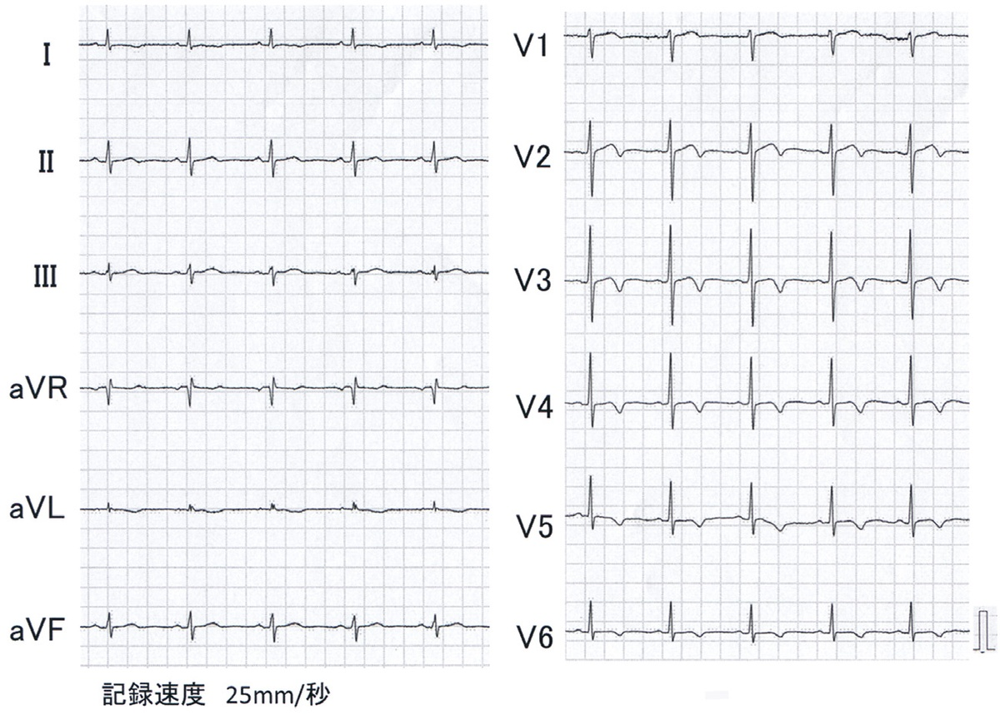
| 選択肢 | 解説 |
|---|---|
| ａ 160mmHg | 誤り。収縮期血圧160mmHgは高血圧の域であり、橈骨動脈は指を置いた瞬間にはっきりと、力強く触れる。「橈骨動脈の拍動は微弱」という妻の観察と真っ向から矛盾する——妻は看護師であり、脈を診るという行為の訓練を受けている。設問がわざわざ「看護師をしている妻」と書いているのは、この観察の信頼性を担保するためである。むしろ胸痛時に血圧が上がることはある：痛みと不安による交感神経緊張で一過性に血圧が上がることは珍しくなく、実際にQ.145（112D-50）の労作性狭心症の症例では発作時に172/92mmHgまで上昇している——しかし本症例では同時に冷汗が出現しており、これは末梢血管収縮とカテコラミン放出＝循環が保てていないサインである。血圧が上がって冷汗が出るのではなく、心拍出量が落ちて冷汗が出る。読み取るべき対比：来院時（11時30分・症状消失後）の血圧が122/78mmHg——この時点でようやく正常に戻っている。妻が見た11時ころの状態はこれより明らかに悪い。「微弱な脈」と「冷汗」の2語が、この設問の答えを決めている。 |
| ｂ 140mmHg | 誤り。収縮期血圧140mmHgでも橈骨動脈は良好に触知でき、「微弱」とは表現されない——橈骨動脈の触知は日常診療で最も頻繁に行う手技であり、正常血圧の人で拍動を探すのに苦労することはない（動脈硬化の強い高齢者ではむしろ硬く強く触れる）。この設問が問うている思考：身体所見という定性的な情報から、数値という定量的な推定へ橋を架けること——血圧計がない現場（在宅、災害、事故現場、救急車が来る前の居間）で、医療者は触診だけで循環の破綻を見積もらなければならない。本症例の時間経過を追う：11時ころ発症・頸部へ放散する前胸部圧迫感、2分以上持続、冷汗——妻が駆けつけたとき橈骨動脈は微弱。11時15分（救急隊到着）には症状はかなり改善。11時30分（病院到着）には完全消失、血圧122/78mmHg。この「悪化してから自然に回復する」曲線そのものが、冠動脈の一過性閉塞と自然再開通を描いている。症状が消えたことは「大したことがなかった」ではなく、「一度詰まって開いた」ことを意味する。 |
| ｃ 120mmHg | 誤り。120mmHgは正常血圧そのものであり、来院時に測定された122/78mmHgとほぼ同じ値である——症状が完全に消失した後の値と、冷汗をかいて脈が微弱だった時点の値が同じであるはずがない——設問は「妻が初めに駆けつけたとき」と時点を明示しており、来院時の血圧とは別の状態を問うている。提示された数値をそのまま繰り返す選択肢は、時間経過を読めているかを試す罠である。何が起きていたか：心エコーで左室の前側壁から心尖部にかけて収縮が低下している——左前下行枝の支配領域であり、これは左室の広い範囲にあたる。この領域が急に動かなくなれば一回拍出量は大きく落ち、心拍出量が低下して血圧が下がる。心原性ショックの成立条件：典型的には左室心筋の40％以上が障害されると心原性ショックに至るとされる。本症例は一過性であったため恒久的なショックには陥らず、再開通とともに血圧が回復した。「症状が消えた」患者の背後に、数十分前の危機的な血行動態がある。 |
| ◯ ｄ 80mmHg | これが正解。橈骨動脈が触知できる下限は、おおよそ収縮期血圧80mmHgとされる——「触れるが微弱」はちょうどこの境界にあたる状態である——古典的な目安として、橈骨動脈が触れれば約80mmHg以上、橈骨は触れず大腿動脈が触れれば約70mmHg以上、頸動脈のみ触れれば約60mmHg以上と教えられる（実際には過大評価しやすいことも知られているが、現場での序列としては有用である）。選択肢の中で唯一整合する：160・140・120mmHgでは脈は力強く触れて「微弱」にならず、40mmHgでは橈骨動脈は触れず意識も保てない。80mmHgだけが「触れるが微弱」「冷汗はあるが会話は成立し、妻に助けを求められる」という記述の両方を満たす。病態としての裏づけ：左前下行枝の急性閉塞により前側壁〜心尖部という左室の広範囲が急に収縮を失い、一回拍出量が低下してポンプ失調に陥った。冷汗は代償性の交感神経緊張と末梢血管収縮の表れである。そして再開通とともに122/78mmHgへ戻った——ショックが「一過性」であったことが、この症例の本質である。 |
| ｅ 40mmHg | 誤り。収縮期血圧40mmHgでは橈骨動脈は触知できない——触れるとしても頸動脈がかろうじて、というレベルであり、「橈骨動脈の拍動は微弱」という記述と合わない——さらに40mmHgでは脳灌流圧が保てず、意識は混濁または消失する。本症例の患者は妻に助けを求め、救急隊到着まで会話が成立している。意識が保たれていること自体が、40mmHgを否定する。もし本当に40mmHgだったなら：心室細動・無脈性心室頻拍・心破裂・心タンポナーデといった破局的な事態であり、その場で心肺蘇生が始まっていなければならない。しかし救急隊到着時には症状がかなり改善しており、経過が合わない。設問の刻み方に注目する：160／140／120／80／40という選択肢は、「正常より高い・正常・正常・ショック・心停止直前」という段階を並べたもの——身体所見から病態の段階を1つ選ばせる設計になっている。脈の触知部位と血圧の対応は、器具のない場面で唯一使える定量的なものさしである。 |
| 選択肢 | 解説 |
|---|---|
| ａ 左室肥大を認める。 | 誤り。左室肥大を示す所見がどこにもない——心電図の胸部誘導にSokolow-Lyon基準（SV1＋RV5またはV6＞35mm）を満たすような高電位差はなく、左室肥大に特徴的なストレインパターン（Ⅰ・aVL・V5・V6の下に凸のST低下と非対称性陰性T）も認めない。他の情報も否定的：胸部エックス線写真で心胸郭比48％＝正常範囲（50％未満）、既往歴に高血圧はなく、現症の血圧も122/78mmHgと正常。左室肥大をきたす原因（高血圧・大動脈弁狭窄症・肥大型心筋症）を示唆する所見が一つもない。心エコーで指摘されたのは何か：「左室の前側壁から心尖部にかけて収縮の低下」——これは壁運動の異常であって壁厚の異常ではない。心エコー所見は「壁が厚いか」「動くか」「腔が広いか」という別々の軸で報告されるので、混同しないこと。局所的な壁運動低下は虚血・梗塞のもっとも直接的な証拠である。 |
| ｂ 急性心筋梗塞は否定できる。 | 誤り。心筋トロポニンT陰性・CK 42IU/L（基準内）だが、これで急性心筋梗塞を否定してはいけない——採血時刻は午前11時32分、発症は午前11時ころで、わずか32分しか経っていない——心筋トロポニンが血中に上昇し始めるのは発症3〜4時間後（高感度トロポニンでも1〜3時間後）、CKに至っては4〜8時間後である。この時点の陰性は「まだ出ていない」ことしか意味しない。むしろ梗塞を支持する所見が揃っている：①頸部へ放散する初発の前胸部圧迫感が2分以上持続 ②冷汗と橈骨動脈拍動の微弱＝一過性のショック ③心エコーで前側壁〜心尖部の局所壁運動低下 ④38年間20本/日という強い喫煙歴。局所壁運動異常の重み：虚血が起きると、心電図変化や胸痛より早く（数十秒で）壁運動が低下する（虚血カスケード）。逆に言えば、症状が消えた後も壁運動低下は残る——本症例がまさにそれである。「1回のトロポニン陰性で急性冠症候群を除外して帰宅させない」は救急の鉄則である。 |
| ｃ 房室伝導が障害されている。 | 誤り。房室伝導障害を示す所見がない——脈拍76/分・整、心電図は洞調律でPQ時間の延長もQRSの脱落もなく、房室ブロックの根拠はどこにもない——房室ブロックはⅠ度（PQ＞0.20秒）、Ⅱ度（Wenckebach型＝PQが漸次延長して脱落／MobitzⅡ型＝突然脱落）、Ⅲ度（完全房室ブロック＝P波とQRSが無関係に出る房室解離）に分けられるが、いずれのパターンも見られない。そもそも部位が合わない：房室結節枝はおよそ90％が右冠動脈から分岐するため、房室ブロックを合併しやすいのは下壁梗塞（Ⅱ・Ⅲ・aVFのST上昇）である。本症例の障害部位は前側壁〜心尖部＝左前下行枝領域で、伝導系の栄養血管とは支配が異なる。前壁梗塞でも伝導障害は起こるが：その場合は左脚前枝・右脚といったHis束以下のレベルで、脚ブロックや完全房室ブロックとして現れ、しかも「そこまで壊死が及んだ広範な梗塞」を意味する——本症例のように再開通して症状が消えた経過とは合わない。選択肢を読むときは、まず「その所見が提示されているか」を確かめる。 |
| ◯ ｄ 冠動脈血流は再開している。 | これが正解。時間経過そのものが再開通を語っている——午前11時ころ発症、11時15分（救急隊到着時）には症状がかなり改善、11時30分（病院到着時）には完全に消失し、血圧も122/78mmHgへ回復している——妻が駆けつけた時点では橈骨動脈が微弱で冷汗を伴っていた＝収縮期血圧80mmHg前後の一過性ショック。その状態から自然に回復したということは、詰まっていた冠動脈の血流が戻った以外に説明がつかない。心電図が裏づける：提示された心電図にST上昇は残っておらず、V2〜V5に陰性T波（冠性T）が出現している——これは再灌流後の典型的な心電図変化で、左前下行枝の近位部に高度狭窄が残っていることを示唆する所見でもある（Wellens症候群として知られる）。それでも壁運動は戻っていない：心エコーで前側壁〜心尖部の収縮が低下したまま——血流は戻ったのに収縮が戻らない状態を気絶心筋（stunned myocardium）といい、数日から2週間かけて回復する。安心してはいけない：自然再開通しても、破綻したプラークと高度狭窄はそのまま残っている。再閉塞のリスクが高く、緊急冠動脈造影と血行再建の適応である。症状の消失は治癒ではなく、「一度詰まって開いた」という危険な履歴の証拠である。 |
| ｅ 肺動脈主幹部が血栓により閉塞している。 | 誤り。肺血栓塞栓症を否定する所見が複数そろっている——①Dダイマー0.8μg/mL（基準1.0以下）＝正常。Dダイマーは感度が高く特異度が低い検査で、「陰性なら否定できる」という使い方をする——除外に最も強い ②SpO2 100％（マスク4L/分酸素投与下）で呼吸数16/分、低酸素も頻呼吸もない ③胸部エックス線写真で肺野に異常なし。心電図所見も合わない：肺動脈主幹部が閉塞するような広範な塞栓では、急性右心負荷所見——洞頻脈、SⅠQⅢTⅢパターン、右脚ブロック、右軸偏位、V1〜V3の陰性T波——が現れるが、本症例は脈拍76/分・整で右心負荷の所見がない。決定的なのは壁運動異常の分布：心エコーで低下しているのは「左室の前側壁から心尖部」＝左前下行枝の支配領域。肺血栓塞栓症で障害されるのは右室であり（McConnell徴候＝右室自由壁の収縮低下と心尖部の収縮温存）、左室の局所壁運動異常は説明できない。危険因子も乏しい：長期臥床・手術・骨折・悪性腫瘍・長距離移動といった誘因がなく、庭仕事という労作の最中に発症している——労作で誘発される点も心筋虚血に合致する。胸痛の鑑別で肺血栓塞栓症を挙げること自体は正しい。ここでは所見が揃って否定されている。 |
| 選択肢 | 解説 |
|---|---|
| ◯ ａ ヘパリン | これが正解。急性冠症候群の本態は、破綻したプラーク上に形成された血栓であり、その血栓が伸展・再形成しないように抑え込むことが初期治療の中心になる——未分画ヘパリンはアンチトロンビンと結合してその作用を約1000倍に増強し、トロンビン（Ⅱa）と活性化第Ⅹ因子（Ⅹa）を阻害することで、フィブリン血栓の成長を止める。本症例でとくに重要な理由：自然再開通した直後の冠動脈は、血栓の残骸と破綻したプラークが露出したまま血流に晒されている状態——最も再閉塞しやすい時期であり、抗凝固によってそれを防ぐ必要がある。使い方と注意：未分画ヘパリンは静注（ボーラス＋持続）でAPTTを対照の1.5〜2.5倍に保つよう調整する。半減期が短く、プロタミンで中和できるためカテーテル治療との相性がよい。副作用としてヘパリン起因性血小板減少症（HIT）に注意する。抗血小板薬が「血栓の起点」を、抗凝固薬が「血栓の成長」を止める——両方が要る。 |
| ◯ ｂ 冠拡張薬 | これが正解。冠拡張薬（硝酸薬）は体内で一酸化窒素となり、血管平滑筋のグアニル酸シクラーゼを活性化してcGMPを増やし、平滑筋を弛緩させる——主な作用点は静脈系で、静脈を拡張して心臓に戻る血液量（前負荷）を減らすと左室拡張末期容積が下がり、Laplaceの法則にしたがって壁応力が下がる＝心筋酸素消費が減る。加えて冠動脈そのもの、とくに攣縮部位と側副血行路を拡張して供給を増やす。需給両面に効く：「需要を下げ、供給を増やす」を1剤で行うため、虚血の症状を取る薬として最も速く確実に効く。舌下錠・スプレーで開始し、症状が続けば持続静注へ移る。ただし予後は変えない：硝酸薬は死亡率を改善しない対症薬である——予後を改善するのは抗血小板薬・スタチン・β遮断薬・ACE阻害薬／ARB、そして再灌流療法。「効く薬」と「命を救う薬」を混同しないこと。禁忌：PDE5阻害薬の服用中（絶対禁忌）、右室梗塞、収縮期血圧90mmHg未満、閉塞性肥大型心筋症、高度の大動脈弁狭窄症。本症例は血圧122/78mmHgで、いずれにも該当しない。 |
| ｃ ジギタリス | 誤り。ジギタリス（ジゴキシン）は心筋細胞膜のNa+-K+ ATPaseを阻害して細胞内Na+を増やし、Na+-Ca2+交換系を介して細胞内Ca2+を増加させる——すなわち収縮力を上げる強心薬であり、心筋酸素消費を増やす——虚血に陥っている心筋にとって、需要を増やすことは梗塞範囲の拡大に直結する。急性心筋梗塞の初期治療で使う薬ではない。催不整脈性も問題になる：細胞内Ca2+過負荷は遅延後脱分極による撃発活動を招き、虚血心筋という不整脈基質と組み合わさると心室性不整脈を誘発しうる。しかも治療域が狭く、低カリウム血症・腎機能低下で容易に中毒（悪心・嘔吐、視覚異常＝黄視、房室ブロック、心房頻拍＋房室ブロック、双方向性心室頻拍）を起こす。ジギタリスの現在の適応：心房細動を伴う心不全のレートコントロール（房室結節の伝導抑制）や、薬物抵抗性の慢性心不全での症状改善が中心で、いずれも慢性期の使い方である。本症例には心房細動も心不全徴候もない——投与する理由がない。 |
| ◯ ｄ 抗血小板薬 | これが正解。プラークが破綻すると、露出したコラーゲンと組織因子に血小板が粘着・活性化・凝集し、これが血栓形成の起点となる——ここを止めるのが抗血小板薬である——アスピリンはシクロオキシゲナーゼ1を不可逆的にアセチル化してトロンボキサンA2の産生を止める。血小板は無核で酵素を再合成できないため、その血小板の寿命（約7〜10日）にわたって効果が続く。効果の大きさ：急性心筋梗塞に対するアスピリンの投与は、それ単独で死亡率を有意に低下させることがISIS-2試験で示された古典的な事実であり、禁忌がなければ全例に、できるだけ早く投与する。初回は162〜325mgを咀嚼服用させる——噛み砕くことで吸収が速まり、数十分で効果が立ち上がる。2剤併用（DAPT）：PCIを行う場合はP2Y12受容体拮抗薬（クロピドグレル、プラスグレル、チカグレロル）を加える。ADPによる血小板活性化経路を遮断し、ステント血栓症を防ぐ。二次予防としてPCI後は一定期間DAPTを継続する。抗血小板薬は「症状を取る薬」ではなく「命を救う薬」である。 |
| ｅ アドレナリン | 誤り。アドレナリンはα1・β1・β2受容体をすべて刺激し、心拍数・心収縮力・末梢血管抵抗のすべてを上げる——心筋酸素消費を跳ね上げる薬であり、虚血心にとっては最悪の選択である——加えて心拍数が上がると拡張期が短縮する。冠動脈血流は主に拡張期に流れるため、頻脈は「需要を増やしながら供給を減らす」という二重の害をもたらす。本症例では循環が保たれている：来院時の血圧は122/78mmHg、脈拍76/分・整、SpO2 100％、意識清明。昇圧薬を必要とする状態ではまったくない。アドレナリンの適応：心停止（心肺蘇生中の1mg静注）とアナフィラキシー（0.3〜0.5mgの筋注）が二大適応で、いずれも「使わなければ死ぬ」場面に限られる。心原性ショックで昇圧が避けられない場合にカテコラミンを使うことはあるが、それは灌流圧の確保を需給バランスより優先せざるを得ない状況であり、本症例には当てはまらない。ジギタリスもアドレナリンも「心臓を頑張らせる薬」——虚血の急性期に必要なのは、頑張らせないことである。 |
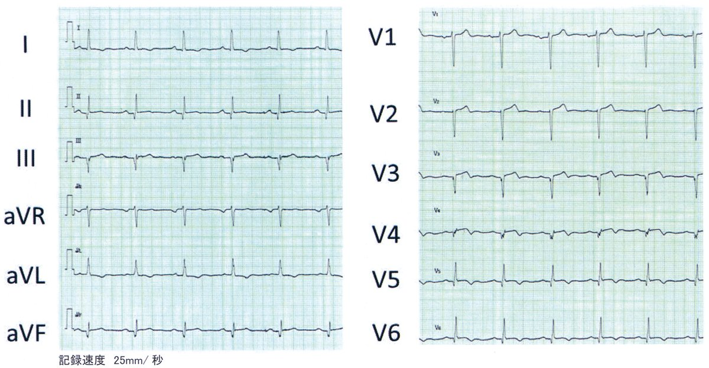
| 選択肢 | 解説 |
|---|---|
| ａ 「脈が速すぎるようです」 | 誤り。脈拍64/分、整——頻脈ではない。むしろ正常下限に近く、心電図のRR間隔も一定である——成人の洞調律の基準は50〜100/分（100/分を超えれば洞頻脈、50/分未満なら洞徐脈）。心電図から心拍数を読むときは、25mm/秒の記録速度で大きい1マス＝0.2秒、RR間隔が大きいマス何個分かで「300・150・100・75・60・50」と数える方法が速い。この患者の症状は頻脈で説明できない：訴えは「階段や長く歩いたときの息切れ」＝労作時呼吸困難で、これは心拍出量が需要に追いつかないこと（心不全）を示す。左側臥位で聴取されるⅣ音と両下肢の軽度浮腫も、頻脈ではなく心不全の徴候である。むしろ徐脈側に注意する場面はある：陳旧性心筋梗塞の患者は二次予防としてβ遮断薬を服用していることが多く、過度の徐脈や房室ブロックが問題になりうる。しかし本例の64/分は治療目標としてもむしろ良好な範囲である。患者への説明を選ぶ問題では、まず提示された数値と矛盾する選択肢を機械的に外す。 |
| ｂ 「左脚ブロックが認められます」 | 誤り。左脚ブロックの診断基準は、①QRS幅0.12秒（3mm）以上 ②V5・V6とⅠ・aVLに幅広くノッチを伴うR波（M型・切れ込み） ③V1・V2に幅広いQSまたはrS ④V5・V6の中隔性q波の消失 ⑤ST-Tの二次性変化（QRSと反対向き）——本心電図のQRS幅は正常で、これらを満たさない。V1〜V4がQSパターンなのは事実だが、これは梗塞による異常Q波であって脚ブロックによるものではない。QRS幅を見れば区別できる。なぜこの区別が重要か：左脚ブロックがあると心室の脱分極の順序が根本的に変わるため、Q波もST-Tも二次性に変形し、心筋梗塞の心電図診断が極めて困難になる——だから「新規の左脚ブロック＋虚血症状」はST上昇型心筋梗塞に準じて扱うという運用がある（Sgarbossa基準で判定を試みることもある）。右脚ブロックとの違い：右脚ブロックはV1のrsR'（M型）とV5・V6の幅広いS波が特徴で、健常者にも見られ、梗塞の診断を妨げにくい。脚ブロックの有無は必ずQRS幅から判定すること。 |
| ｃ 「心房細動の状態になっています」 | 誤り。心房細動なら、①P波が消失して基線が細かく揺れるf波となり ②RR間隔が絶対不整（まったく規則性がない）になる——本例は脈拍64/分・整で、心電図にもP波が先行しており、RR間隔は一定である——「整」という一語だけで心房細動は否定できる。逆に脈が不整であれば、心房細動・期外収縮・洞不全症候群・房室ブロックを鑑別することになる。この患者に心房細動を疑う理由自体はある：76歳という年齢、高血圧、陳旧性心筋梗塞、心不全——いずれも心房細動の危険因子であり、今後発症する可能性は高い。だからこそ定期受診で心電図を確認する意味がある。Ⅳ音との関係：本例では左側臥位でⅣ音を聴取している。Ⅳ音は硬くなった左室へ心房収縮が血液を押し込む音なので、心房収縮が失われる心房細動では原理的に聴取されない——所見どうしが整合している。「Ⅳ音が聞こえる＝洞調律である」という推論も成り立つ。 |
| ｄ 「高血圧による左室肥大が認められます」 | 誤り。左室肥大の心電図所見がない——Sokolow-Lyon基準（SV1＋RV5またはV6≧35mm）を満たす高電位差はなく、Ⅰ・aVL・V5・V6のストレインパターン（上に凸のST低下と非対称性の陰性T波）も認めない——むしろV1〜V4はQSパターンでR波がまったく育っておらず、左室肥大とは正反対の所見である（肥大なら左側胸部誘導のR波が高くなる）。高血圧の既往があるから引っかかりやすい：問題文は「高血圧、脂質異常症および陳旧性心筋梗塞」で通院中と述べており、高血圧＝左室肥大と短絡すると選んでしまう。しかし病歴にある疾患と、いま心電図に写っている所見は別である。左室肥大の心電図診断は感度が低い：電位基準は特異度は高いが感度が5割前後にとどまり、体格・肥満・肺気腫・胸水で電位は下がる。肥大の評価は心エコーによる壁厚と心筋重量の計測が正本である。心電図に写っていないものを「あります」と患者に説明してはいけない。 |
| ◯ ｅ 「心筋梗塞のあとが左心室の前側と下側にあります」 | これが正解。心電図にはⅢ・aVFに深い異常Q波（陳旧性下壁梗塞）と、V1〜V4のQSパターン＝R波増高不良（陳旧性前壁中隔梗塞）が併存している——5年前の急性心筋梗塞が残した瘢痕の像である——異常Q波は貫壁性に壊死した心筋が起電力を失い、その「窓」を通して対側の電気活動を覗き込むために生じる（window theory）。心筋がそこに無いことの心電図表現であり、多くは永続する。誘導と部位の対応：Ⅱ・Ⅲ・aVF＝下壁／V1・V2＝中隔／V3・V4＝前壁／V5・V6・Ⅰ・aVL＝側壁。本例は下壁と前壁中隔の2領域＝選択肢の「左心室の前側と下側」に一致する。症状とも整合する：胸痛発作はないが労作時に息切れ、Ⅳ音（左室コンプライアンス低下＝拡張障害）、両下肢の軽度浮腫——広範な瘢痕による虚血性心筋症とその心不全症状であり、心電図所見と一続きに説明できる。説明のしかた：「異常Q波」「QSパターン」ではなく「心筋梗塞のあとが左心室の前側と下側にあります」と、部位と意味を平易な言葉で伝えている——患者への説明として適切なのはこの形である。いま新たに起きている事態ではなく、過去の梗塞の痕跡であることを正しく伝えている点も重要である。 |
| 選択肢 | 解説 |
|---|---|
| ａ 心室瘤 | 誤り。心室瘤は、梗塞に陥った心筋が瘢痕化して菲薄化し、収縮期に外方へ膨隆するようになったもので、形成には数週間から数か月を要する慢性期の合併症である——入院3日目に突然生じるものではない——特徴的な所見は「2週間以上経っても消えないST上昇」で、胸部エックス線写真では心陰影の限局性膨隆として見える。心室瘤が起こす問題は3つ：①収縮期に瘤へ血液が逃げるため有効な1回拍出量が減り、心不全が進む ②瘤内の血流うっ滞で壁在血栓ができ、全身塞栓（脳梗塞）の原因になる ③瘢痕の辺縁がリエントリー回路となり難治性心室頻拍を起こす——いずれも「じわじわ悪くなる」形で現れるもので、突然の呼吸困難と新規の雑音という本症例の経過とは性格が違う。そして雑音は生じない：瘤は左室の壁の変形であって、血液が異常な経路を流れるわけではないので、乱流に由来する雑音は発生しない。「発症からの日数」で合併症を絞り込むのが、この設問群の解き方である。 |
| ◯ ｂ 乳頭筋断裂 | これが正解。乳頭筋断裂は急性僧帽弁閉鎖不全症を起こし、心尖部を最強点として腋窩へ放散する全収縮期雑音を生じる——発症2〜7日、心筋の融解が最も進む時期に集中する——断裂しやすいのは後内側乳頭筋で、これは後下行枝からの単一血流支配を受けるため（前外側乳頭筋は左前下行枝と左回旋枝の二重支配で断裂しにくい）。血行動態が急激に破綻する理由：慢性の僧帽弁閉鎖不全症では左房が年月をかけて拡張しコンプライアンスを獲得しているが、急性では左房は正常の大きさのまま——逆流量がさほど多くなくても左房圧が跳ね上がり、肺静脈圧が上昇して数分〜数時間で肺水腫になる。雑音が小さいことがある：左房圧が急上昇すると収縮期の左室-左房間の圧較差が早期に消えるため、雑音は短く弱いか、ほとんど聴こえないことすらある——「雑音が小さいから軽症」と読んではいけない。治療：診断は心エコー。内科治療では救えず緊急の僧帽弁置換術／形成術が必要で、IABPや血管拡張薬（後負荷を下げて前方拍出を増やす）は手術までのつなぎである。本症例では血圧90/70mmHgとすでに脈圧が狭く、循環が破綻し始めている。 |
| ｃ 収縮性心膜炎 | 誤り。収縮性心膜炎は、心膜が慢性の炎症で肥厚・線維化・石灰化し、硬い殻となって心臓の拡張を妨げる病態——進行には数か月から数年を要し、急性心筋梗塞の3日後に成立するものではない——原因は結核、心臓手術後、放射線照射後、ウイルス性心膜炎後、膠原病、尿毒症など。日本では心臓手術後と特発性が多い。所見も合わない：主症状は右心不全（頸静脈怒張、肝腫大、腹水、浮腫）で、Kussmaul徴候（吸気時に頸静脈怒張が増強する——通常は吸気で静脈還流が増えて怒張は減る）、心膜ノック音（拡張早期の高調な音）、奇脈、心電図の低電位差、胸部エックス線での心膜石灰化が特徴である。全収縮期雑音は出ない：拡張が妨げられる病態であって、血液が異常な経路を流れるわけではない。心筋梗塞後の心膜病変で急性期に起こるもの：発症2〜4日の梗塞後心膜炎（心膜摩擦音、体位で変わる胸痛）と、数週間後のDressler症候群（自己免疫機序による発熱・心膜炎・胸膜炎）——いずれも収縮性心膜炎とは別物である。心膜摩擦音は「こすれる音」で、収縮期雑音とは音質が明確に違う。 |
| ◯ ｄ 心室中隔穿孔 | これが正解。心室中隔穿孔は、梗塞に陥った心室中隔が破れて左室から右室への短絡ができる合併症で、胸骨左縁第3〜4肋間を最強点とする粗い全収縮期雑音と、しばしば触知できる振戦（thrill）を伴う——本症例の心電図はV1〜V5のST上昇＝左前下行枝の閉塞による前壁中隔梗塞であり、中隔が梗塞領域に含まれている。心尖部側の中隔穿孔は前壁梗塞に、基部側は下壁梗塞に多い。診断の決め手：心エコーで中隔の欠損とカラードプラによる左→右短絡血流を確認する。Swan-Ganzカテーテルを入れれば、右房から右室・肺動脈にかけて酸素飽和度が段階的に上昇する（step-up）——動脈血が右心系へ混ざっている直接の証拠である。血行動態：左室からの拍出の一部が右室へ逃げるため前方拍出が減り、同時に肺血流が増えて肺うっ血をきたす。短絡量が多いほど急速に心原性ショックへ進む。治療：外科的閉鎖（パッチ閉鎖）が唯一の根治で、IABPやVA-ECMOで支えながら手術へ運ぶ。梗塞後間もない心筋は脆く縫合が困難なため、可能なら数日待つという考え方と、待てば死ぬという考え方の両方があり、症例ごとの判断となる。新規の全収縮期雑音＋振戦なら、まず心室中隔穿孔を疑う。 |
| ｅ 心タンポナーデ | 誤り。心タンポナーデは心膜腔に液体（本症例の文脈なら左室自由壁破裂による血液）が急速に貯留し、心臓の拡張が妨げられて心拍出量が急落する病態である——雑音は生じない——血液が心腔から心腔へ異常に流れるわけではなく、外から心臓が圧迫されるだけだからである。むしろ心音は減弱する（心膜腔の液体が音を伝えにくくする）。特徴的な所見：Beckの三徴＝血圧低下・頸静脈怒張・心音減弱。奇脈（吸気時に収縮期血圧が10mmHg以上低下する）、心電図の低電位差と電気的交互脈、心エコーでの心嚢液貯留と右房・右室の虚脱。心筋梗塞後の自由壁破裂：これも発症2〜7日の機械的合併症で、多くは電気機械解離（心電図は動いているのに脈が触れない）を呈して数分で死亡する。突然の意識消失として現れ、「呼吸困難を訴えて雑音が出る」経過はとらない。設問の絞り込み：本問の決め手は「入院時に認めなかった全収縮期雑音」——雑音を生じるのは血液が異常な経路を高速で流れるときであり、その条件を満たすのは僧帽弁逆流（乳頭筋断裂）と心室中隔の左→右短絡（心室中隔穿孔）の2つだけである。雑音の有無という1つの所見が、5つの選択肢を2つに絞り込んでいる。 |
| 選択肢 | 解説 |
|---|---|
| ａ 脳梗塞 | 誤り。意識レベルの低下という点だけは共通するが、脳梗塞は片麻痺・構音障害・失語・共同偏視といった局所神経症状を伴い、脈拍120/分の頻脈とショックを説明できない——むしろ順序が逆で、ショックによって脳灌流が保てなくなった結果として意識が落ちたと読むのが自然である。血圧が下がって意識が落ちたのか、脳がやられて意識が落ちたのかは、血圧を見れば区別できる。カテーテル関連の脳梗塞は起こりうる：大動脈弓部の粥腫をカテーテルが削って飛ばす、ガイディングカテーテル内の血栓や空気が飛ぶ——いずれも実在する合併症だが、頻度は0.1％前後と低く、しかも血行動態の破綻は伴わない。時間の読み方：「再灌流直後」＝処置中にカテーテル室で起きた出来事である。この時間軸に置いたとき、最も頻度が高く、最も急速に循環を壊し、しかもその場で対処できるものを選ぶ。ショックを見たら、まず循環の破綻の機序を考える。 |
| ｂ 乳頭筋断裂 | 誤り。乳頭筋断裂をはじめとする機械的合併症は、壊死心筋が炎症細胞の浸潤と蛋白分解によって最も脆くなる発症2〜7日に集中する——発症1時間で緊急カテーテルを受けている本症例の時間軸には合わない——発症直後の心筋はまだ壊死が完成しておらず、機械的強度は保たれている。だからこそ「早く開ければ助かる」という再灌流療法が成立する。所見も合わない：急性僧帽弁閉鎖不全症なら、心尖部を最強点とする新たな全収縮期雑音と、急激な肺水腫（呼吸困難、泡沫状痰、SpO2低下）が前面に出る。本症例の記載は「脈拍120/分に上昇しショック状態、意識レベル低下」であり、肺水腫の描写がない。部位の観点：本症例は右冠動脈病変の下壁梗塞で、確かに単一血流支配の後内側乳頭筋が虚血に陥る配置ではある——だから「起こりうる合併症」としては正しいが、「いま、この瞬間に起きた」とは考えられない。合併症は「何が起こるか」だけでなく「いつ起こるか」で絞り込む。 |
| ｃ 心室中隔穿孔 | 誤り。心室中隔穿孔も発症2〜7日の機械的合併症であり、再灌流直後には起こらない——下壁梗塞では基部側の中隔に穿孔が生じうるので、部位としてはあり得る組み合わせだが、時間が合わない。所見の描写がない：心室中隔穿孔なら胸骨左縁第3〜4肋間の粗い全収縮期雑音と触知できる振戦が生じ、右心系の酸素飽和度がstep-upする。カテーテル室では既に動脈圧ラインが入っており、必要なら右心カテーテルで数分のうちに確認できる所見である。血行動態の壊れ方が違う：短絡による心原性ショックは、肺血流の増加による肺うっ血を伴いながら数十分〜数時間かけて進むことが多い。本症例の「再灌流直後に脈拍が上昇しショック、意識レベル低下」という分単位の破綻とは経過が異なる。選択肢b・cはどちらも同じ理由（時間軸）で外れる——機械的合併症は日単位の話である。 |
| ｄ 肺血栓塞栓症 | 誤り。1時間前に発症して来院し、そのまま緊急冠動脈造影を受けている患者に、深部静脈血栓が形成されて肺動脈へ飛ぶ時間的余裕はない——静脈血栓塞栓症の危険因子（長期臥床、手術、外傷、悪性腫瘍、経口避妊薬、長距離移動、血栓性素因）も記載がない。所見も合わない：広範な肺血栓塞栓症では低酸素血症と頻呼吸が前面に出て、心電図に急性右心負荷所見（洞頻脈、SⅠQⅢTⅢ、右脚ブロック、V1〜V3の陰性T波）が現れ、心エコーでは右室が拡大して左室が圧排される（Dシェイプ）。ただし否定できない場面もある：大腿静脈からカテーテルを挿入した場合、術後に穿刺部の血栓から肺塞栓を起こすことは理論上あるが、それは数時間〜数日後の話であり「再灌流直後」ではない。閉塞性ショックという枠では正しい発想：肺血栓塞栓症も心タンポナーデも「閉塞性ショック」に分類される。機序の枠を思い浮かべたうえで、この状況で圧倒的に起こりやすいほうを選ぶ。鑑別を挙げること自体は正しく、時間軸と頻度で順位をつけるのが臨床である。 |
| ◯ ｅ 心タンポナーデ | これが正解。経皮的冠動脈インターベンション中の冠動脈穿孔によって、心膜腔へ急速に出血し心タンポナーデに至ったと考えられる——処置中〜直後に突然ショックとなり意識が落ちる、最も典型的な合併症である——穿孔の原因は、末梢へ進めたガイドワイヤーの先端が細い枝を突き破る、硬い病変を通すためのバルーンやステントが血管径に対して大きすぎて破裂させる、石灰化病変へのロータブレーター、そして解離の拡大など。頻度は0.2〜0.6％程度と低いが、致死率が高い。なぜこれほど急激なのか：心膜は伸展性に乏しい線維性の袋で、急速に貯留する場合は100〜200mLでも心膜腔内圧が跳ね上がり、心臓が拡張できなくなる——「量」ではなく「速さ」がタンポナーデを決める。所見が一致する：拡張障害で1回拍出量が落ちると、それを補うために頻脈になる（脈拍120/分）。それでも心拍出量が保てずショックとなり、脳灌流が落ちて意識レベルが低下する——本症例の記載そのものである。その場で診断し、その場で治療できる：透視で心陰影の拍動低下と造影剤の血管外漏出を確認し、心エコーで心嚢液と右房・右室の虚脱を見る。治療は心嚢穿刺ドレナージ、穿孔部のバルーン圧迫、被覆ステント留置やコイル塞栓、それでも止まらなければ緊急開胸。PCI中の突然のショックを見たら、まず心タンポナーデを疑うこと。 |
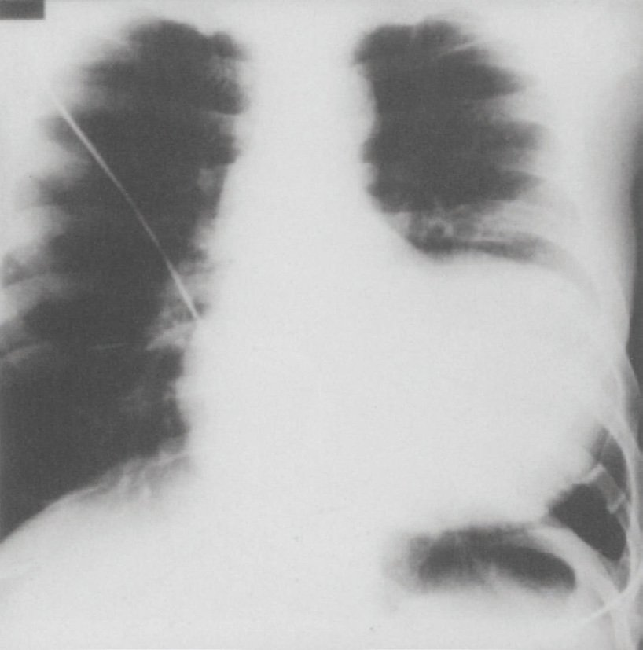
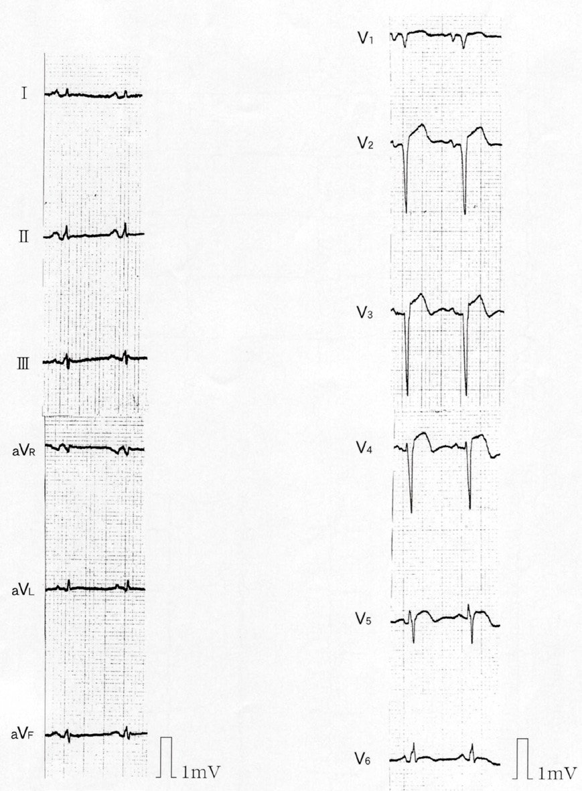
| 選択肢 | 解説 |
|---|---|
| ａ 降圧薬投与 | 誤り。血圧は98/64mmHgと既に低めであり、ここから降圧すれば冠灌流圧と全身灌流がさらに落ちる。呼吸困難と四肢冷感は、血圧が高すぎるためではなく心拍出量が足りないために生じている——四肢冷感は末梢血管収縮＝低心拍出の徴候で、Forrester分類でいう「末梢循環不全あり」の状態にあたる。慢性期に降圧薬を使う場面はある：心筋梗塞後の二次予防としてACE阻害薬・ARB・β遮断薬・ミネラルコルチコイド受容体拮抗薬は左室リモデリングを抑え予後を改善するので、血圧が許せば少量から導入する。しかしこれらは「降圧」が目的ではなくリモデリング抑制が目的であり、しかも本症例の左室瘤という構造的問題そのものは解決しない。設問が問うているもの：「適切な治療法はどれか」——1か月前から次第に増強する呼吸困難という進行性の心不全に対して、原因を取り除く治療を選ぶ問題である。血圧98/64mmHgという数値だけでも、この選択肢は外せる。 |
| ｂ アドレナリン投与 | 誤り。アドレナリンはα1・β1・β2受容体をすべて刺激し、心拍数・収縮力・末梢血管抵抗を上げる——心筋酸素消費を跳ね上げ、催不整脈性も強い——虚血性心疾患の患者、とりわけ梗塞瘢痕という不整脈基質を抱えた左室瘤の患者に投与すれば、心室頻拍・心室細動を誘発しかねない。適応は限られる：心停止（心肺蘇生中の1mg静注）とアナフィラキシー（0.3〜0.5mgの筋注）が二大適応で、いずれも「使わなければ死ぬ」場面に限られる。本症例は意識があり自ら来院しており、この状況にはない。慢性心不全に強心薬を使わない理由：強心薬は症状を一時的に改善しても長期予後をむしろ悪化させることが繰り返し示されてきた。慢性心不全の治療の柱は「心臓を頑張らせる薬」ではなく「リモデリングを抑える薬」（ACE阻害薬／ARNI・β遮断薬・MRA・SGLT2阻害薬）である。強心薬の出番は、末期の低心拍出でつなぎとして使う場面に限られる。 |
| ◯ ｃ 左室瘤切除術 | これが正解。6か月前の夜間に激しい前胸部痛があり1時間で軽快したため放置——これは受診されなかった急性心筋梗塞そのものである。再灌流を受けなかった貫壁性梗塞の心筋は瘢痕化して菲薄化し、収縮期に外方へ膨隆する左室瘤を形成した——心電図（B）はV2〜V4に深いQS波を示し、しかもそこに6か月経っても消えない持続的なST上昇が乗っている——「2週間以上残るST上昇」は左室瘤を示す古典的な所見である。胸部エックス線写真（A）：心陰影が著明に拡大し、左心縁が大きく丸く張り出している——瘤による左室の限局性膨隆の像である。なぜ心不全になるのか：瘤は収縮期に外へ膨らむ（奇異性運動）ので、左室が生み出した仕事の一部が瘤を膨らませることに費やされ、大動脈へ送り出される有効な1回拍出量が減る。加えて左室全体が拡大して壁応力が上がり、心不全が進行する。手術の適応：内科治療で改善しない心不全、瘤内の壁在血栓による塞栓症、瘢痕辺縁のリエントリーによる難治性心室頻拍——本症例は1か月前から増悪する呼吸困難と四肢冷感＝低心拍出であり、左室瘤切除術（左室形成術）の適応にあたる。収縮しない瘤を切除して左室を適切な容積と形へ戻すことで、残った心筋の効率を取り戻す手術である。 |
| ｄ 僧帽弁置換術 | 誤り。「心雑音は聴取されない」と明記されており、僧帽弁閉鎖不全症を示す所見がない——手術を要するような重症の僧帽弁閉鎖不全症であれば、心尖部を最強点として左腋窩へ放散する全収縮期雑音が聴取されるはずである。虚血性僧帽弁閉鎖不全症という病態自体は実在する：梗塞後の左室リモデリングで乳頭筋の位置がずれ、僧帽弁尖が引っ張られて閉じきらなくなる（tethering）ために生じる機能性の逆流で、下壁梗塞後に多い。これは弁そのものの病変ではないので、治療の主体は左室のリモデリングを抑えることであり、弁置換術が第一選択になるわけではない。本症例の病態はどこにあるか：心電図と胸部エックス線写真が示しているのは前壁中隔の広範な瘢痕と左室の変形であって、弁の異常ではない。所見のない病態に対する手術は選べない。「心雑音は聴取されない」という一文が、この選択肢を明示的に否定している。 |
| ｅ 上行大動脈置換術 | 誤り。上行大動脈の置換術が必要になるのは、上行大動脈瘤（径5.5cm以上など）とStanford A型大動脈解離である——本症例にはそれを示唆する所見が一つもない——大動脈解離であれば、突然の引き裂かれるような激痛が持続し、血圧の左右差、拡張期雑音（大動脈弁閉鎖不全症）、縦隔陰影の拡大、意識障害や対麻痺などの分枝虚血症状が現れる。6か月前の痛みが1時間で軽快してその後6か月生存していることも、A型解離の経過とは相容れない。胸部エックス線写真の読み方：本症例で拡大しているのは心陰影（左心縁の限局性の張り出し）であって、上縦隔や大動脈弓の陰影ではない。「大きな影がある」で終わらせず、どの構造が大きいのかを見分ける。胸痛の鑑別に大動脈解離を置くこと自体は正しい：急性冠症候群と大動脈解離は初期対応が正反対（前者は抗血栓療法、後者では出血を助長するため禁忌）なので、必ず並べて考える。ただし本症例は6か月前の出来事であり、いま解くべきは慢性期の心不全の原因である。提示された所見に根拠がない選択肢は、まずそれだけで外す。 |
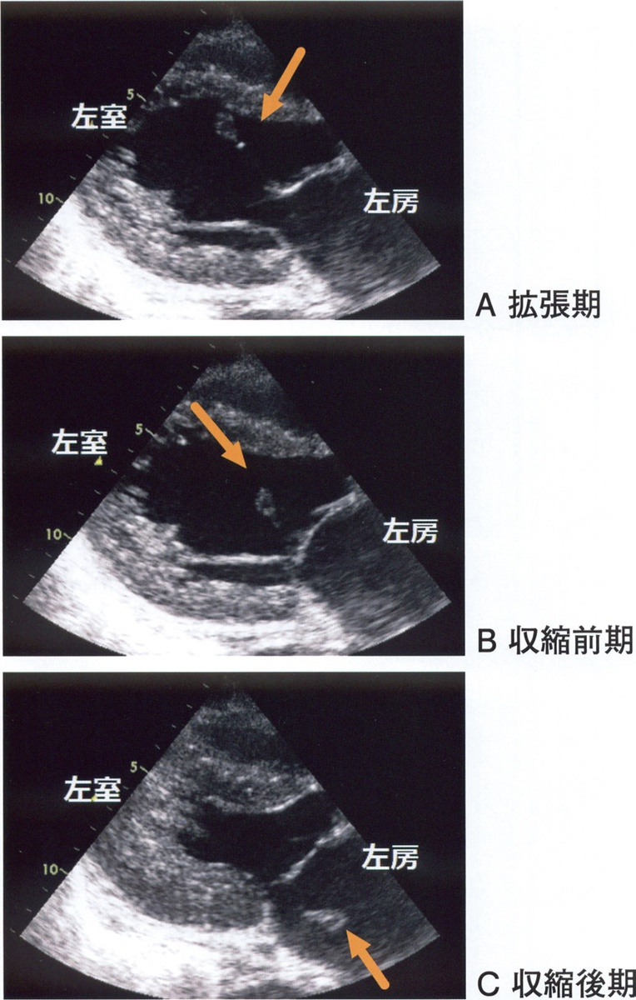
| 選択肢 | 解説 |
|---|---|
| ◯ ａ 乳頭筋断裂 | これが正解。心エコーの3枚を時相で追うと診断が確定する——A（拡張期）では左室内に可動性のある塊状構造物が矢印で示され、B（収縮前期）ではそれが僧帽弁口へ向かって動き、C（収縮後期）では矢印が左房内を指している。すなわち断裂した乳頭筋の頭部が腱索とともに収縮のたびに左房へ翻転している像である——これが高度の僧帽弁逆流を生み、以前は認めなかった逆流が突然出現したというカラードプラの所見と完全に一致する。血行動態が数分で崩れた理由：慢性の僧帽弁閉鎖不全症では左房が年月をかけて拡張しコンプライアンスを得ているが、急性では左房は正常の大きさのまま——逆流血が逃げ場を失って左房圧が急峻に上昇し、肺静脈圧・肺毛細血管圧が跳ね上がって電撃性の肺水腫になる。気管チューブから流出した泡沫状のピンク色の痰は、肺胞まで漏出した血漿と赤血球であり、この経路の帰結そのものである。左室駆出率が保たれていることが逆に決定的：低圧の左房へ血液が逃げるぶん左室の後負荷は軽く、駆出率はむしろ高く見える。それでも大動脈へ送られる前方拍出は激減しているのでショックになる——「駆出率が保たれているのにショック」はこの病態を強く示唆する。治療は緊急の僧帽弁置換術／形成術で、IABPやVA-ECMOは手術までのつなぎである。 |
| ｂ 心室中隔穿孔 | 誤り。心室中隔穿孔では、血液は左室から右室へ短絡する——逆流ジェットが向かうのは左房ではない。心エコーで見えるのは中隔の欠損とカラードプラの左→右短絡血流であって、左房内へ逸脱する構造物ではない——本症例で新たに現れたのは「左房内に逸脱する構造物」と「高度の僧帽弁逆流」であり、この2つが心室中隔穿孔では説明できない。身体所見も違う：心室中隔穿孔は胸骨左縁第3〜4肋間を最強点とする粗い全収縮期雑音で、しばしば振戦（thrill）を触れる。確定診断としては右心カテーテルで右房から右室・肺動脈にかけての酸素飽和度の段階的上昇（step-up）を確認する。部位としては起こりうる：本症例は左前下行枝の完全閉塞＝前壁中隔梗塞であり、心尖部側の中隔穿孔は起こりうる組み合わせである。だからこそ心エコーで実際に何が写っているかを見て決める必要がある。肺水腫という点は共通しても、機序（左房へ逆流するのか、右室へ短絡するのか）が違う。 |
| ｃ 感染性心内膜炎 | 誤り。感染性心内膜炎の疣腫（vegetation）も弁に付着する可動性構造物として心エコーに写るため紛らわしいが、臨床経過がまったく合わない——感染性心内膜炎は発熱が必発で、血液培養が繰り返し陽性となり、経過は亜急性であることが多い。本症例は急性心筋梗塞で入院して3日目であり、先行する感染徴候の記載が一つもない。診断基準を思い出す：修正Duke基準の大基準は①持続的な菌血症（典型的起因菌の血液培養陽性）②心内膜が侵された証拠（疣腫、膿瘍、人工弁の新規部分的裂開、新たな弁逆流）。小基準は素因（弁膜症・人工弁・静注薬物使用）、38℃以上の発熱、血管現象（塞栓、Janeway斑）、免疫学的現象（Osler結節、Roth斑、糸球体腎炎）、微生物学的所見。本症例に当てはまるのは1つだけ：「新たな弁逆流」だけであり、それは乳頭筋断裂でも生じる。他の項目を一つも満たさない以上、この診断は成立しない。心エコーの見た目が似ていても、経過と全身所見が診断を決める。 |
| ｄ 左室自由壁破裂 | 誤り。左室自由壁破裂では血液が心膜腔へ噴出して心タンポナーデとなる——心エコーに写るのは心嚢液の貯留と右房・右室の拡張期虚脱であり、僧帽弁逆流も左房内へ逸脱する構造物も生じない——臨床像は突然の意識消失と電気機械解離（心電図の波形は出ているのに脈が触れない）で、多くはその場で死亡する。呼吸困難を訴えて挿管まで至り、その間に心エコーで弁を評価できるという経過にはなりにくい。肺水腫が出ない：タンポナーデは左室の充満が妨げられる病態なので、左房圧・肺静脈圧はむしろ上がらず、泡沫状ピンク色の痰は出ない。本症例の肺水腫は「左房へ逆流している」ことの証拠である。身体所見も違う：Beckの三徴（血圧低下・頸静脈怒張・心音減弱）と奇脈が現れ、心電図には低電位差や電気的交互脈が出る。同じ「発症2〜7日の機械的合併症」でも、心エコーで見える像が3つとも異なる——だから最初の一手が心エコーになる。 |
| ｅ 左前下行枝の再閉塞 | 誤り。ステント血栓症による左前下行枝の再閉塞なら、胸痛の再燃と心電図のST再上昇が起こり、心エコーでは前壁から心尖部の壁運動が悪化して左室駆出率が低下する——本症例は「左室駆出率は保たれていた」と明記されており、これと真っ向から矛盾する——そして再閉塞では、新たに高度の僧帽弁逆流が出現する理由がない。左房内に逸脱する構造物も説明できない。ステント血栓症は確かに恐ろしい：24時間以内の急性、30日以内の亜急性、それ以降の遅発性に分けられ、抗血小板薬の中断が最大の引き金となる。発症すればST上昇型心筋梗塞として現れ死亡率が高いので、鑑別として挙げること自体は正しい。本問の解き方：提示された3つの手がかり——①左室駆出率は保たれている ②左房内に逸脱する構造物がある ③以前になかった高度の僧帽弁逆流——を全部説明できるのは乳頭筋断裂だけである。1つでも説明できない選択肢は外れる。「駆出率が保たれている」という記述は、選択肢eとdを同時に否定するために置かれている。 |
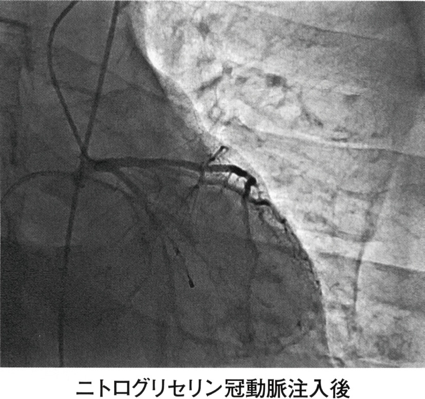
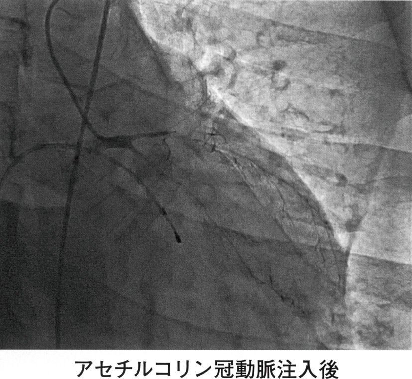
| 選択肢 | 解説 |
|---|---|
| ａ 禁 煙 | 誤り（適切な指導である）。喫煙は冠攣縮性狭心症の最大かつ最も重要な危険因子であり、禁煙は薬物療法と並ぶ治療そのものである——喫煙は血管内皮を傷害して一酸化窒素の産生と生物学的利用能を低下させ、酸化ストレスを増やし、血管平滑筋のRhoキナーゼ経路を活性化して収縮しやすい状態を作る。本症例は20本/日を38年間と重い喫煙歴を持つ。禁煙の効果は大きい：器質的狭窄を伴わない冠攣縮性狭心症では、禁煙だけで発作が著明に減る例が多く、逆に喫煙を続けるとカルシウム拮抗薬を服用していても発作が抑えきれないことがある。指導のしかた：「減らす」ではなく「やめる」。禁煙外来（ニコチン依存症管理料）、ニコチン置換療法、バレニクリンといった支援があることを伝える。加熱式たばこへの切り替えは禁煙ではない。「適切でないのはどれか」を問う設問なので、明らかに正しい指導は選ばない。 |
| ｂ 節 酒 | 誤り（適切な指導である）。過度の飲酒も冠攣縮の誘因であり、節酒は標準的な指導内容に含まれる——アルコールは血管内皮機能を障害するうえ、飲酒後の代謝過程とその後の離脱期に交感神経緊張とマグネシウム低下が生じ、深夜から早朝にかけて攣縮が起こりやすくなる。本症例は「早朝に出現することが多い前胸部痛」で、ビール500mL/日を常用している——時間帯と飲酒習慣がよく対応している。日本人と冠攣縮：冠攣縮性狭心症は欧米人より日本人・東アジア人に多いことが知られ、アルデヒド脱水素酵素2（ALDH2）の遺伝子多型との関連が指摘されている。飲酒で顔が赤くなる体質の人ではとくに注意される。生活指導は薬と同格に扱う：禁煙・節酒・ストレス回避・寒冷曝露の回避・過換気を避けること——これらは「補助」ではなく、この疾患では治療の中核である。本症例では飲酒歴が明記されており、指導対象として妥当である。 |
| ◯ ｃ β遮断薬の服薬 | これが正解（適切でない）。β遮断薬は冠攣縮性狭心症では避けるべき薬である——冠動脈平滑筋のβ2受容体を介した血管拡張が遮断されると、相対的にα1受容体による血管収縮が優位になり、攣縮を助長・遷延させる——とくに非選択性のβ遮断薬は明確に避ける。β1選択性のものでも高用量では選択性が失われるため、冠攣縮が主体の症例では原則として用いない。労作性狭心症とは正反対である：器質的狭窄による労作性狭心症では、β遮断薬は心拍数と収縮力を下げて心筋酸素消費を減らし、同時に拡張期を延ばして冠灌流を増やすため第一選択であり、予後も改善する。同じ「狭心症」でも機序が違えば薬が正反対になる——本問はまさにその区別を問うている。同じ理屈が他にもある：コカイン中毒による胸痛でもβ遮断薬を避ける（α優位となり冠攣縮を招く）。機序が「攣縮」であればβ遮断薬は不利になる、と一般化して覚えるとよい。例外的な使い方：器質的狭窄と冠攣縮が併存する例では、カルシウム拮抗薬を十分量入れたうえでβ1選択性薬を慎重に併用することがある。あくまで専門的判断であって、一般的な指導内容にはならない。「β遮断薬を服用しましょう」という指導は、この患者を悪化させる。 |
| ｄ 精神的ストレスの回避 | 誤り（適切な指導である）。精神的ストレスは冠攣縮の代表的な誘因であり、その回避は標準的な指導である——ストレスによる交感神経の緊張、そして過換気によって生じる呼吸性アルカローシスが攣縮を誘発する。過換気負荷が冠攣縮の誘発試験として実際に用いられてきたほど、この関係は確立している。誘因を並べておく：喫煙、飲酒、精神的ストレス、過換気、寒冷曝露（冬の早朝の外出、冷水）、そして薬剤——β遮断薬のほか、エルゴタミン（片頭痛薬）、5-フルオロウラシル、スマトリプタン、コカインなどが攣縮を誘発しうる。時間帯という特徴：冠攣縮性狭心症の発作は深夜から早朝、副交感神経が優位な時間帯に集中する。本症例も「早朝に出現することが多い」——だから薬も、早朝をカバーできるよう作用時間の長いカルシウム拮抗薬を就寝前に投与するという配慮をする。発作の起こる時間帯を聞き取ることが、診断にも処方設計にも直結する。 |
| ｅ カルシウム拮抗薬の服薬 | 誤り（適切な指導である）。カルシウム拮抗薬は冠攣縮性狭心症の第一選択薬であり、発作を減らすだけでなく予後も改善する——血管平滑筋のL型カルシウムチャネルを遮断して細胞内カルシウム流入を減らし、収縮そのものを起こりにくくする。ジヒドロピリジン系（アムロジピン、ニフェジピン徐放剤、ベニジピン）とジルチアゼムのいずれも用いられる。処方設計：発作が深夜から早朝に集中するため、作用時間の長い薬を就寝前に投与してその時間帯をカバーする。効果が不十分なら増量、あるいは系統の異なるカルシウム拮抗薬を併用する。併用する薬：長時間作用型硝酸薬（ただし耐性を避けるため休薬時間を設ける）、ニコランジル（硝酸薬様作用とATP感受性カリウムチャネル開口作用を併せ持つ）。発作時の頓挫にはニトログリセリン舌下錠を携行させる——本症例は既に診療所で処方され、有効であることが確認されている。安易に中止しないこと：カルシウム拮抗薬の突然の中止は攣縮の反跳（rebound）を招き、心筋梗塞や致死性不整脈の引き金になりうる。予後は概して良好だが、発作中に心室細動を起こして突然死する例があるため、治療の継続は必須である。 |
| 選択肢 | 解説 |
|---|---|
| ◯ ａ 「食事やお薬についても勉強していきましょう」 | これが正解。心臓リハビリテーションは運動療法だけを指す言葉ではない——運動療法・患者教育・危険因子の管理・心理社会的支援と復職支援を束ねた「包括的プログラム」であり、食事と服薬の学習はその中核に位置づけられている——実際、運動耐容能の改善だけでなく再入院と心血管死を減らすことが示されており、薬物療法と並ぶ二次予防の柱とされる。本症例はまさに教育の対象である：15年前から糖尿病と脂質異常症で通院、喫煙10本/日を33年間——修正可能な危険因子を3つ抱えたまま急性前壁梗塞を起こした。ここで生活と服薬を変えられなければ、同じことが繰り返される。教育の中身：禁煙、減塩と適正エネルギーの食事、体重と血糖・脂質・血圧の自己管理、そして抗血小板薬2剤併用（DAPT）を自己判断で中断しないこと——DAPTの中断はステント血栓症という致死的な合併症の最大の引き金である。説明としても妥当：「勉強していきましょう」という言い方は、患者を治療の主体として扱い、退院後も続くものだと伝えている。ステントを入れて終わりではなく、そこから二次予防が始まる。 |
| ｂ 「リハビリは左回旋枝の治療が終了してから開始します」 | 誤り。左回旋枝の50％狭窄は有意狭窄とはいえない（一般に主要冠動脈では75％以上、左主幹部では50％以上を有意とする）うえ、責任病変である左前下行枝の再灌流は既に完了している——リハビリテーションを待つ理由がどこにもない——仮に将来この病変に手を加えるとしても、中等度狭窄では冠血流予備量比（FFR）などで機能的な虚血を証明してから治療するのが現在の考え方であり、形だけを見て介入するものではない。待つことの害：その間は臥床することになり、運動耐容能の低下・筋力低下・起立性低血圧・静脈血栓塞栓症・せん妄といった廃用が進む。53歳の就労世代にとっては復職の遅れにも直結する。開始の基準は「血管の残り」ではなく「患者の状態」：胸痛がない、心不全が代償されている、致死性不整脈がない、血圧が安定している——これらを満たせば血行動態が安定した時点で第Ⅰ相を始める。合併症のない症例では再灌流の翌日から座位・立位・室内歩行へ進む。非責任病変の治療計画とリハビリテーションの開始時期は、別々に決める。 |
| ｃ 「治療後2 週間はベッド上の安静臥床を守る必要があります」 | 誤り。かつて心筋梗塞後は数週間の絶対安静が常識だったが、それ自体が害であることが明らかになり、現在は早期離床が標準である——長期臥床がもたらすのは、運動耐容能と筋力の低下、起立性低血圧、深部静脈血栓症と肺血栓塞栓症、沈下性肺炎、褥瘡、便秘、せん妄、そして抑うつ——いわゆる廃用症候群で、しかもこれらは高齢者ほど回復に時間がかかる。現在の進め方：合併症のない急性心筋梗塞では、再灌流療法の翌日から座位・立位・室内歩行と段階的に進め、数日で病棟内歩行、1週間前後で退院という経過をたどることも珍しくない。各段階で心拍数・血圧・症状・心電図を確認しながら次へ上げる。もちろん条件はある：胸痛が持続している、心不全が代償されていない、致死性不整脈がある、血圧が不安定——こうした場合は次の段階へ進めず、いったん止める。本症例は左室駆出率40％と収縮が落ちているので進行は慎重にするが、「2週間寝かせる」わけではない。安静は治療ではなく、必要最小限にとどめるべき負荷である。 |
| ｄ 「心拍数が130/ 分程度に増加する負荷をかけていきましょう」 | 誤り。心拍数130/分は、53歳の急性心筋梗塞後の患者にとって過大な負荷である——予測最大心拍数はおよそ220−年齢＝167/分。Karvonen法では［安静時心拍数＋（予測最大心拍数−安静時心拍数）×係数］で目標を決め、心疾患患者では係数0.4〜0.6を用いる——本症例（安静時72/分）なら約110〜129/分が上限にあたり、130/分はその外側に出てしまう。本症例はとくに慎重にすべき：左室駆出率40％、血清CK最高値2,230U/L＝梗塞範囲が大きい。しかも心拍数の上昇は心筋酸素消費を増やすと同時に拡張期を短縮させて冠血流（拡張期に流れる）を減らすという二重の負荷になる。本来の決め方：心肺運動負荷試験（CPX）で嫌気性代謝閾値（AT）を実測し、そのレベルの運動を処方するのが最も正確。簡便には自覚的運動強度Borg指数11〜13（「楽である」〜「ややきつい」）を目安にする。数値目標を先に決めるのではなく、患者ごとに測って決めるのが運動処方である。 |
| ◯ ｅ 「胸痛や息切れが出現するようであればリハビリの強度を上げません」 | これが正解。運動療法では、症状こそが最も鋭敏で最も重要な指標である——胸痛や息切れが出たということは、その強度が心筋の酸素需給の限界を超えたことを意味するので、強度を上げないどころか、いったん中止して評価をやり直す——虚血が起きている状態で負荷を上げれば、梗塞の拡大、致死性不整脈、心不全の増悪を招きうる。運動を中止する基準：胸痛・呼吸困難・動悸／めまい・ふらつき・失神／冷汗・チアノーゼ・顔面蒼白／過度の疲労／収縮期血圧が運動中に20mmHg以上低下する（心拍出量が増やせていない＝危険な徴候）／血圧の過度の上昇／心電図の虚血性ST変化や重症不整脈の出現／目標心拍数を超える。「上げない」という表現が的確：心臓リハビリテーションは段階的に強度を上げていくものなので、症状が出たら次の段階へ進まず、同じ強度に留まるか一段下げる。患者自身がこの判断をできるように教えることが、退院後の維持期を安全にする。症状を隠させない関係を作る：「症状が出たら言ってください、無理をしないことが治療です」と伝えること自体が指導の一部である。自覚症状を訴えたら止める——これは監視型でも在宅でも変わらない原則である。 |
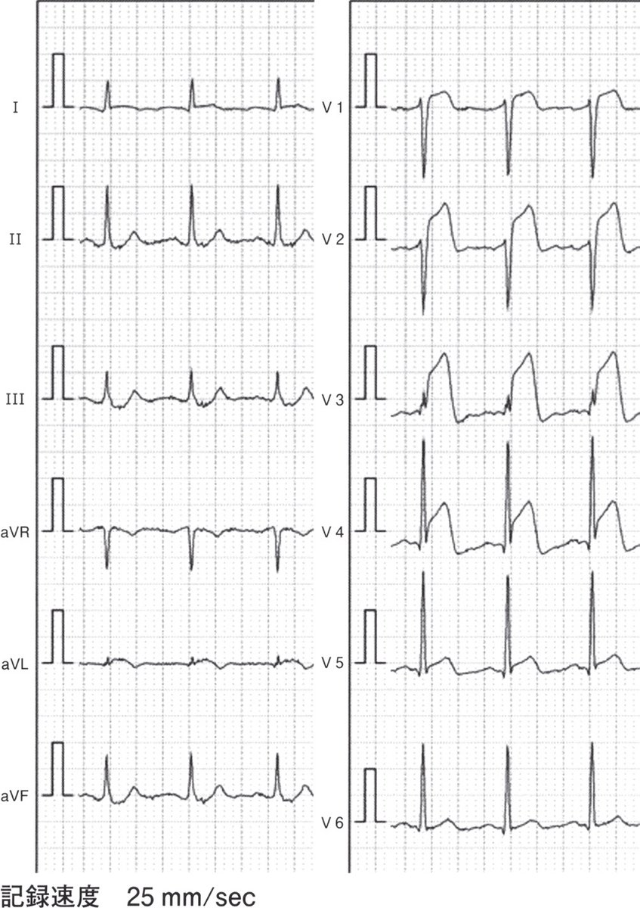
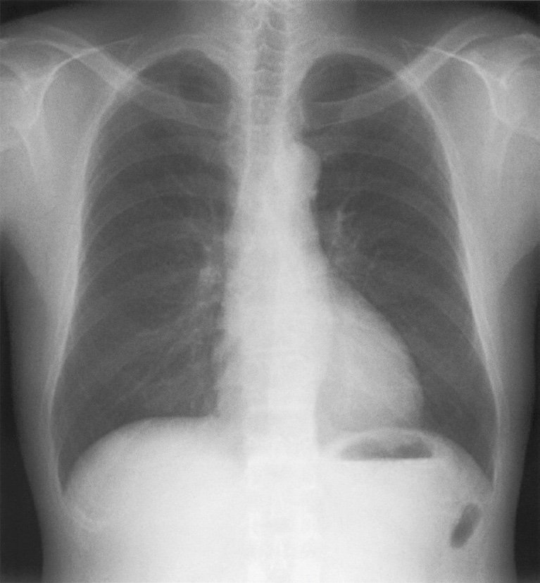
| 選択肢 | 解説 |
|---|---|
| ａ 自然気胸 | 誤り。胸部エックス線写真（B）に気胸の所見はない——虚脱した肺の辺縁を示す胸膜線も、その外側の無血管領域も認めず、肺紋理は肺尖部から胸壁まで達している——原発性自然気胸は長身痩型の若年男性（10〜30歳代）に多く、突然の胸痛と呼吸困難で発症し、患側の呼吸音減弱と打診での鼓音を伴う。64歳・身長162cm・体重47kgという体型は痩せてはいるが、年齢層が合わない。決定的なのはトロポニン：心筋トロポニンT迅速検査が陽性——気胸では心筋は傷害されないので陰性である。この1項目で気胸・逆流性食道炎は同時に否定される。それでも胸部エックス線写真を撮る意味：胸痛の初期評価では、気胸・肺炎・縦隔拡大（大動脈解離）・肺うっ血を一度に確認できる。本症例では「他の原因が見当たらない」という陰性所見を確定させる役割を果たしている。緊張性気胸なら患側呼吸音の消失・頸静脈怒張・気管偏位・ショックを伴い、画像を待たずに脱気する。 |
| ◯ ｂ 急性心筋梗塞 | これが正解。経過が完全に一続きになっている——3か月前から坂道や階段の昇降で前胸部圧迫感が出て、5分の安静で改善していた（＝安定労作性狭心症）。それが本日は安静にしていても45分以上持続する胸痛に変わった。これは労作性狭心症から急性冠症候群への移行そのものである——心電図（A）はV1〜V4に弓状（凸型）のST上昇を示し、V5・V6は保たれている＝前壁中隔のST上昇型心筋梗塞。心筋トロポニンT迅速検査も陽性である。「焼けるような痛み」に惑わされない：虚血の胸痛は締めつけ感・圧迫感が典型だが、灼熱感・重苦しさ・詰まる感じ・喉や歯や左肩の違和感など表現は幅広い。夕食後という状況も逆流性食道炎を思わせるが、症状の性状と発症状況だけで虚血は否定できない。持続時間が分ける：労作で誘発され数分の安静で消える＝狭心症／安静時に20分以上持続する＝急性冠症候群。本症例は45分持続しており、すでに後者である。次にすること：ST上昇型と決まった以上、直ちに再灌流療法——病院到着から90分以内のprimary PCIを目指す。先行する労作性狭心症の存在は、急性冠症候群を疑ううえで最も強い手がかりの1つである。 |
| ｃ 逆流性食道炎 | 誤り。「夕食後に前胸部に焼けるような痛み」——この一文は明らかに逆流性食道炎を連想させるために置かれている。しかし心筋トロポニンT陽性と心電図のST上昇は、食道炎では絶対に生じない——逆流性食道炎は胃酸の食道内逆流により胸骨後部の灼熱感（胸やけ）と呑酸をきたす。食後・臥位・前屈で悪化し、制酸薬で軽快する。診断は症状とプロトンポンプ阻害薬の効果、必要なら上部消化管内視鏡。症状では区別できない：逆流性食道炎も食道痙攣も胸骨後部の痛みを起こし、しかも硝酸薬やカルシウム拮抗薬で軽快することがある——「ニトログリセリンが効いたから狭心症」とは言えない理由がここにある。だから順序が決まる：症状で見分けられない以上、まず心電図とトロポニンで虚血を否定し、そのうえで消化器疾患を考える。逆にしてはいけない。実際に起きている誤診：心筋梗塞が「胃の調子が悪い」として消化器科へ回される、あるいは市販の胃薬で様子を見て受診が遅れる——とくに下壁梗塞で起こりやすい。本症例が3か月前からの労作性狭心症を持っていたことが、この誤りを防ぐ最大の手がかりになる。 |
| ｄ たこつぼ心筋症 | 誤り。たこつぼ心筋症（たこつぼ症候群）は前胸部誘導のST上昇と胸痛、心筋逸脱酵素の上昇を示し、急性冠症候群と臨床的にきわめて紛らわしい——だからこそ鑑別として挙がるが、本症例には合致しない点がいくつもある——典型は高齢女性で、近親者の死・災害・激しい叱責といった強い精神的ストレス、あるいは手術・敗血症・くも膜下出血などの身体的ストレスが先行する。本症例は64歳男性で、誘因の記載がない。診断は最終的に冠動脈造影で決まる：心エコー・左室造影で心尖部が広範に無収縮となり基部が過収縮する「たこつぼ型」を示すのに、冠動脈には責任病変となる有意狭窄がない——そして壁運動異常の広さに比して心筋逸脱酵素の上昇が軽度にとどまるのが特徴である。決定的な違い：本症例には3か月前から続く労作性狭心症という先行がある。労作で再現性をもって誘発され安静で消える症状は、固定した冠動脈狭窄の存在を強く示唆するもので、たこつぼ症候群の経過とは相容れない。実地では「まず急性冠症候群として動き、造影の結果でたこつぼと判明する」という順序になる。 |
| ｅ 急性肺血栓塞栓症 | 誤り。急性肺血栓塞栓症を示す所見が揃わない——長期臥床・手術・外傷・悪性腫瘍・長距離移動・経口避妊薬といった危険因子の記載がなく、SpO2 95％（room air）で著明な低酸素血症もない——心電図に急性右心負荷の所見（洞頻脈、SⅠQⅢTⅢパターン、右脚ブロック、右軸偏位、V1〜V3の陰性T波）がなく、代わりに前胸部誘導の明瞭なST上昇がある。この2つは同時には説明できない。胸部エックス線写真も合わない：肺血栓塞栓症では正常なことも多いが、片側の肺血管陰影の減少（Westermark徴候）や末梢の楔状影（Hampton hump）が見られることがある。本症例の写真は肺野・心陰影とも正常で、肺塞栓を支持する所見はない。痛みの性状も違う：肺血栓塞栓症の胸痛は吸気で増悪する胸膜性の鋭い痛みで、呼吸困難と頻呼吸が前面に出る。本症例は「焼けるような痛み」が持続しており、呼吸性の変動の記載がない。ただしトロポニンでは分けられない：肺血栓塞栓症でも右室の圧負荷によりトロポニンが上昇することがある——重症度と予後の指標として使われる。トロポニン陽性だけで冠動脈疾患と決めつけないこと。ここではST上昇という所見が診断を確定させている。 |
| 選択肢 | 解説 |
|---|---|
| ａ 胸部造影CT | 誤り。胸部造影CTは急性大動脈解離と肺血栓塞栓症の診断には決定的だが、本症例にはそれらを疑う手がかりがない——引き裂かれるような突然の激痛も、血圧の左右差も、低酸素血症も、右心負荷所見も記載されていない——しかも造影CTは検査室への移動を要し、造影剤アレルギーと造影剤腎症のリスクを伴う。78歳・糖尿病（簡易血糖195mg/dL）という背景では腎機能への配慮も要る。「まず行うべき検査」の条件：①その場で・数分でできる ②非侵襲である ③結果が直ちに治療方針を変える——この3条件で選ぶと、造影CTは第一手にはならない。順序を間違えたときの害：CT室で撮影している最中に心室細動を起こす、あるいはST上昇型心筋梗塞の再灌流が数十分遅れる——時間は心筋である。ただし忘れてはいけない：心電図でST上昇を見て抗血栓療法へ進む前に、大動脈解離を示唆する所見がないかは必ず確認する（解離に抗血栓療法を行えば致命的になる）。造影CTの出番は、心電図とトロポニンで虚血が説明できないときである。 |
| ◯ ｂ 12 誘導心電図 | これが正解。78歳・高血圧・糖尿病・陳旧性心筋梗塞という強い冠危険因子を持つ患者が、安静座位で発汗と悪心を反復している——胸痛がなくても急性冠症候群を強く疑う場面である——前日の朝と当日の朝、いずれも安静時に5分程度で出現・改善している＝短時間の症状が反復し、しかも増悪傾向にある。これは不安定狭心症の典型的なパターンで、心筋梗塞へ進みかけている状態を意味する。なぜ胸痛がないのか：高齢と糖尿病による自律神経障害で求心性の痛覚伝導が障害され、虚血が痛みとして知覚されない（無痛性心筋虚血）。代わりに発汗・悪心・呼吸困難・倦怠感といった狭心症等価症状として現れる。12誘導心電図が第一手である理由：ベッドサイドで数分、非侵襲、安価、そして結果が直ちに方針を決める——ST上昇があればその場で再灌流療法の適応が確定し、ST低下や陰性T波なら非ST上昇型としてリスク層別化に入る。「胸痛または狭心症等価症状を疑ったら10分以内に12誘導心電図」が原則である。血液検査と同時に：設問が「血液検査とともに」としているのは心筋トロポニンを含む採血のこと。心電図とトロポニンの2つで急性冠症候群の初期評価は組み立てられる。陳旧性心筋梗塞があるので、過去の心電図と比較して「新規かどうか」を確かめることも忘れない。 |
| ｃ 心エコー検査 | 誤り（有用だが第一手ではない）。心エコー検査で見つかる局所壁運動異常は虚血のきわめて鋭敏な所見で、虚血カスケードでは心電図変化や胸痛より早く現れる——だから決して無価値ではない——しかし本症例には固有の限界がある。陳旧性心筋梗塞があるため、写った壁運動異常が「今回のもの」なのか「5年前からのもの」なのかを、以前の心エコーがなければ区別できない。実務上の制約：装置を運び、術者が時間をかけて記録し、判読する必要がある。心電図の「数分・その場・誰でも」という即時性には及ばない。置くべき場所：心電図の次。心電図が非診断的で症状が続くとき、あるいは血行動態が不安定なとき（心タンポナーデ・機械的合併症・右室梗塞の評価）に威力を発揮する。症状が消えている時間帯には注意：本症例は来院時には症状が改善している可能性が高く、虚血が去っていれば壁運動も戻っていることがある（ただし気絶心筋として残ることもある）。「有用な検査」と「まず行うべき検査」は別の問いである。 |
| ｄ 運動負荷心電図 | 誤り（禁忌である）。症状が反復している不安定な状態の患者に運動負荷心電図を行ってはならない——負荷によって梗塞が拡大し、致死性不整脈や死亡を招きうる——運動負荷試験の絶対禁忌には、発症2日以内の急性心筋梗塞、高リスクの不安定狭心症、血行動態を損なうコントロール不良の不整脈、症候性の重症大動脈弁狭窄症、非代償性心不全、急性肺塞栓、急性心筋炎・心膜炎、急性大動脈解離が並ぶ。本症例はまさにその筆頭：2日連続で安静時に症状が出ており、しかも陳旧性心筋梗塞という基礎がある——高リスクの不安定狭心症として扱うべき患者である。負荷試験が生きる場面：症状が安定している慢性冠症候群の患者で、虚血の有無と重症度を評価し、治療方針（薬物か血行再建か）を決めるとき。あるいは心筋梗塞後のリハビリテーションで運動処方を作るとき。負荷の種類：運動が困難な患者では薬物負荷（アデノシン、ジピリダモール、ドブタミン）を用いるが、これも不安定な急性期には行わない。「不安定な虚血に負荷をかけない」は、循環器で最も守るべき禁忌の1つである。 |
| ｅ 心筋シンチグラフィ | 誤り。心筋血流シンチグラフィは放射性医薬品（201Tl、99mTc-MIBI／テトロホスミン）の準備、投与、そして撮像に時間を要し、急性期の初期評価には向かない——しかも多くは負荷（運動または薬物）と組み合わせて行うため、不安定な患者では上と同じ理由で禁忌になる。核医学検査の本来の役割：①安定した患者での虚血の証明と広がりの評価（負荷時に集積低下し安静時に回復＝可逆性の虚血、両方で欠損＝梗塞） ②心筋生存性の評価——201Tlの再分布や18F-FDG PETで冬眠心筋を見つけ、血行再建で機能が戻るかを予測する ③心アミロイドーシスの診断（99mTc-ピロリン酸） ④交感神経機能の評価（123I-MIBG）。本症例で仮に行うとしても：陳旧性心筋梗塞があるので陳旧性の欠損が既に存在し、急性期の判断材料としてはさらに読みにくい。検査を選ぶ軸：即時性・侵襲性・その場で方針が決まるか——急性期はこの3つ、慢性期はこれに加えて「何を知りたいか（虚血の有無か、生存性か、形態か）」で選ぶ。核医学は時間をかけて情報を得る検査であり、急ぐ場面の道具ではない。 |
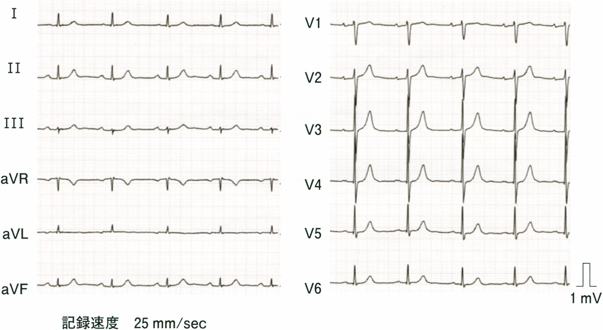
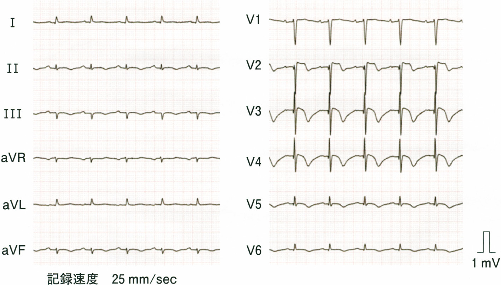
| 選択肢 | 解説 |
|---|---|
| ａ 心囊穿刺 | 誤り。心タンポナーデを示す所見がない。Beckの三徴のうち血圧低下（80/48mmHg）はあるが、頸静脈怒張の記載がなく、Ⅳ音が聴取されている＝心音は減弱していない——そして決定的なのはベッドサイド心エコーの所見で、指摘されたのは心嚢液貯留や右房・右室の虚脱ではなく「左室前壁と下壁の壁運動低下」である。局所の壁運動異常は心膜腔の問題では生じない。機序も乏しい：肝切除術後の患者に心膜腔へ急速に血液や液体が溜まる経路はない。心タンポナーデを疑うのは、外傷、大動脈解離、心筋梗塞後の自由壁破裂、カテーテル手技による穿孔、悪性腫瘍、尿毒症、感染といった状況である。心嚢穿刺は診断がついてから：心エコーで心嚢液と右房・右室の虚脱を確認したうえで、エコーガイド下に剣状突起下から行う。所見のないまま針を刺す処置ではない。ショックを見たときは「機序」を心エコーで確かめてから手を動かす。 |
| ◯ ｂ 心臓カテーテル検査 | これが正解。術前の心電図（A）と症状出現時（B）を並べると変化は明瞭である——Aでは前胸部誘導のSTは基線上にあり、V2〜V4に高く尖ったT波があった。Bではその高いT波が消え、V2〜V4にST上昇（V2で約2mm）が出現し、V3〜V6とⅡ・Ⅲ・aVFのT波が陰転化している——心エコーでは左室前壁と下壁の壁運動低下。新規の虚血性心電図変化と新たな局所壁運動異常が揃っており、周術期の急性冠症候群と診断できる。すでにショックである：強い悪心と胸部不快感に続く不穏、顔色不良、全身の発汗、血圧80/48mmHg、四肢末梢の冷感——心原性ショック（Killip Ⅳ）。両側のwheezesは気管支喘息ではなく肺うっ血による心臓喘息で、Ⅳ音は左室コンプライアンスの低下を示す。だから緊急冠動脈造影である：ショックを伴う急性冠症候群では、責任病変を同定してそのまま経皮的冠動脈インターベンションへ移れる心臓カテーテル検査が唯一の根本治療への入口である。血圧が支えられなければ大動脈内バルーンパンピングや補助循環を併用しながら行う。術後であることは禁忌ではない：むしろ血栓溶解薬が使えない状況だからこそ、出血源を直接扱えるカテーテル治療の価値が上がる。橈骨動脈アプローチなら穿刺部の止血も容易である。術前心電図が残っていたことが、この診断を一瞬で確実にしている。 |
| ｃ 肺血流シンチグラフィ | 誤り。肺血流シンチグラフィは肺血栓塞栓症を疑ったときの検査だが、①核医学検査は放射性医薬品の準備と撮像に時間を要し、ショックの患者を核医学室へ運んで行うものではない ②診断は既に虚血側へ大きく傾いている——術後1日目・臥床という条件から肺血栓塞栓症を鑑別に挙げること自体は正しい。しかし本症例では、術前と比べて明らかな新規のST-T変化があり、心エコーで左室の局所壁運動低下がある——どちらも肺塞栓では説明できない所見である。肺塞栓ならこう見える：低酸素血症と頻呼吸が前面に出て、心電図には洞頻脈・SⅠQⅢTⅢ・右脚ブロック・V1〜V3の陰性T波といった急性右心負荷所見が現れ、心エコーでは右室が拡大し左室が圧排される（Dシェイプ、McConnell徴候）。そもそも急性期の第一選択ではない：現在、肺血栓塞栓症の診断は造影CT（肺動脈相）が主体で、肺血流シンチグラフィは造影剤が使えない場合や慢性血栓塞栓性肺高血圧症の評価に用いられる。不安定な患者を動かす検査は、それだけで危険を伴う。 |
| ｄ 下大静脈フィルター留置 | 誤り。下大静脈フィルターは、深部静脈血栓症が証明されていて、かつ抗凝固療法が禁忌または無効である場合に、血栓が肺動脈へ飛ぶのを機械的に防ぐ目的で留置するものである——本症例では深部静脈血栓症の診断も肺血栓塞栓症の診断もついておらず、留置する根拠がない。しかも、いま起きているショックを何ひとつ解決しない。フィルターの位置づけ：肺塞栓の「予防」はできても「治療」ではない。長期留置では血栓化・穿孔・移動・下大静脈閉塞といった合併症があるため、可能なら回収可能型を用いて早期に抜去する。近年は適応を絞る方向にある。診断のない処置を先に行わない：この選択肢は、心嚢穿刺（選択肢a）と同じ構造の誤りである——所見が示していない病態に対して、侵襲的な処置を先に行おうとしている。術後患者の静脈血栓塞栓症予防：本来は早期離床、弾性ストッキング、間欠的空気圧迫法、そしてリスクに応じた抗凝固薬——予防はフィルターではなくこれらで行う。「速やかに行うべきなのはどれか」＝診断と治療を同時に前へ進める一手を選ぶ。 |
| ｅ t-PA〈tissue plasminogen activator〉投与 | 誤り。二重に不適切である。第一に、肝切除術の翌日＝大手術直後は血栓溶解療法の禁忌であり、広い肝切離面から制御できない腹腔内出血を起こす——ガイドラインでは3週間以内の大手術が相対禁忌とされるが、術後1日目は実務上の絶対禁忌にあたる。しかも肝切除後は凝固因子の産生低下により、もともと出血傾向へ傾いている。第二に、病型としても第一選択ではない：経皮的冠動脈インターベンションが行える施設では primary PCI が血栓溶解より開存率・再閉塞率・死亡率のいずれでも優る。血栓溶解が選ばれるのは、PCIができない、または搬送に120分以上かかる場合に限られる。仮に肺塞栓だったとしても同じ：広範型の肺血栓塞栓症には血栓溶解の適応があるが、術直後という禁忌の条件は変わらない。その場合はカテーテル的血栓除去や外科的塞栓摘除が選択肢になる。この設問の骨格：「侵襲的処置ができないから薬で済ませよう」という発想が最も危険な場面を突いている——術後患者では、薬のほうがカテーテルより危ないことがある。使えない薬を知っていることが、使える手段を選べることにつながる。 |
| 選択肢 | 解説 |
|---|---|
| ◯ ａ 左房圧は上昇している。 | これが正解。両側中下胸部の湿性ラ音とⅢ音ギャロップは肺うっ血の所見であり、肺静脈圧＝肺動脈楔入圧＝左房圧の上昇を意味する——リザーバー付マスクで10L/分の酸素を投与してもSpO2が94％にとどまるという強い酸素需要も、肺胞レベルまでうっ血が及んでいることを裏づける。なぜ左房圧が上がるのか（2つの機序が重なっている）：①広範な心筋虚血（心電図で広範な誘導のST低下、心筋トロポニンT陽性）により左室のコンプライアンスと収縮が低下し、左室拡張末期圧が上昇して左房へ伝わる ②心尖部最強の収縮期雑音が示す僧帽弁閉鎖不全により、収縮期に血液が左房へ逆流する。Ⅲ音ギャロップの意味：拡張早期に左房から左室へ血液が急速に流れ込むときの音で、容量負荷と左室収縮不全を示す。若年者では生理的だが、80歳で聴取されれば病的である。時間経過：昨日午後7時の30分間の胸痛（最初の虚血発作）→本日朝6時に再発してより強く持続→その後呼吸困難が加わった——虚血が続いた末に左心不全へ至った流れが読める。身体所見だけで肺動脈楔入圧の上昇まで言い当てられるのが、聴診の力である。 |
| ◯ ｂ 僧帽弁閉鎖不全がある。 | これが正解。心尖部を最強点とするLevine 3/6の収縮期雑音——これは僧帽弁閉鎖不全症の典型的な所見である（心尖部最強で左腋窩へ放散する全収縮期雑音）——急性心筋梗塞の経過中に僧帽弁閉鎖不全が生じる機序は3つあり、①虚血による乳頭筋機能不全（乳頭筋とその足場になる左室壁が収縮しなくなり弁尖を引き止められない・可逆的） ②乳頭筋断裂（機械的合併症・発症2〜7日・緊急手術） ③左室リモデリングによる二次性（慢性期）。本症例はどれか：発症から24時間以内であること、雑音がLevine 3/6と比較的よく聴取されることから、乳頭筋機能不全が主体と考えられる。ただし断裂の可能性は心エコーで必ず確かめる必要がある（断裂なら緊急手術になる）。急性の逆流は少量でも致命的：慢性の僧帽弁閉鎖不全では左房が年月をかけて拡張しコンプライアンスを得ているが、急性では左房は正常サイズのまま——逆流量が多くなくても左房圧が急上昇し、肺うっ血・肺水腫となる。本症例の呼吸困難がこれである。雑音の大きさは重症度を表さない：急性の重症例ほど左室-左房の圧較差が早く消えるため雑音は小さく短い——「よく聞こえる」ことは軽症を意味しない。治療は後負荷を下げて前方拍出を増やしながら、再灌流を急ぐことである。 |
| ｃ 心拍出量は増加している。 | 誤り。心拍出量は減少している。心拍数108/分の頻脈、血圧106/86mmHg——脈圧はわずか20mmHgしかない——脈圧（収縮期血圧−拡張期血圧）は1回拍出量を反映する鋭敏な指標で、20mmHgという狭さは1回拍出量が著しく低下していることを示す。それを心拍数を上げることで補おうとしているのが108/分の頻脈である。末梢の所見も一致する：冷汗は交感神経緊張と末梢血管収縮の表れ。心拍出量が落ちると圧受容器反射で交感神経が働き、皮膚血管を絞って重要臓器への血流を確保しようとする——「冷たく湿った皮膚」は低心拍出の古典的サインである。血圧が保たれていても油断しない：106/86mmHgという収縮期血圧は一見「ショックではない」が、末梢血管抵抗を上げて代償している状態であり、代償が破綻すれば一気に落ちる。ショック指数（心拍数÷収縮期血圧）は108÷106≒1.0で、すでに中等度の循環不全を示している。心拍出量が増える病態：敗血症の初期、甲状腺機能亢進症、重症貧血、脚気心、動静脈瘻、妊娠——いずれも末梢血管抵抗の低下または需要の増大による高拍出状態で、四肢は温かく脈圧は広い。本症例と正反対である。脈圧と皮膚の温度・湿り気の2つだけで、心拍出量の方向は読める。 |
| ｄ 中心静脈圧は低下している。 | 誤り。「頸静脈の怒張を認める」と明記されている——頸静脈は右房への窓であり、その怒張は中心静脈圧（右房圧）の上昇を意味する。低下しているという記述と真っ向から矛盾する——機序は、左心不全による肺うっ血が肺高血圧を生み、右室の後負荷が上がって右心系のうっ血に至る流れ（左心不全は最終的に右心不全を招く）。加えて虚血が右室に及んでいる可能性もある。下腿浮腫がないことに惑わされない：浮腫は組織間隙に水分が貯留して初めて生じるもので、成立には時間が要る。本症例は発症から24時間以内の急性経過であり、まだ浮腫が出ていないだけである——「浮腫がない＝右心系は大丈夫」ではない。中心静脈圧が低下する病態：出血・脱水などの循環血液量減少性ショック、血管拡張による相対的容量不足（敗血症の一部、アナフィラキシー、神経原性）——いずれも頸静脈は虚脱し、輸液が治療になる。本症例で輸液を負荷すれば肺水腫を悪化させる。頸静脈は最も情報量の多い身体所見の1つ：怒張の有無、拍動の波形（a波・v波）、Kussmaul徴候、肝頸静脈逆流——これらから右心系の血行動態が読める。「うっ血しているのか、足りないのか」を分けることが、輸液するか利尿するかを決める。 |
| ｅ 副交感神経の緊張状態である。 | 誤り。冷汗、心拍数108/分の頻脈、末梢血管収縮——いずれも交感神経の緊張状態を示す所見であり、副交感神経優位とは正反対である——機序は圧受容器反射で、心拍出量の低下によって動脈圧が下がると、頸動脈洞と大動脈弓の圧受容器からの求心性入力が減り、延髄の血管運動中枢を介して交感神経が活性化する。結果として心拍数の増加、心収縮力の増強、末梢血管収縮、そして発汗が起こる。副交感神経優位になる虚血もある：下壁・後壁の梗塞ではBezold-Jarisch反射により迷走神経が過剰に働き、洞徐脈・房室ブロック・血圧低下・悪心嘔吐をきたす——「下壁梗塞は徐脈」と対で覚える。本症例は心拍数108/分の頻脈であり、この反射が主体の病態ではない。心電図も広範な誘導のST低下＝広範な心内膜下虚血であって下壁のST上昇ではない。交感神経緊張は諸刃：短期的には循環を保つが、頻脈は心筋酸素消費を増やし拡張期を短縮させて冠血流を減らす——虚血をさらに悪化させる。だから急性冠症候群では、血行動態が許せばβ遮断薬でこの悪循環を断つ。身体所見は自律神経の働きの表れであり、そこから病態を逆算できる。 |
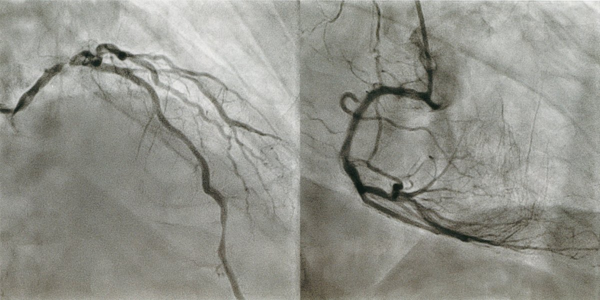
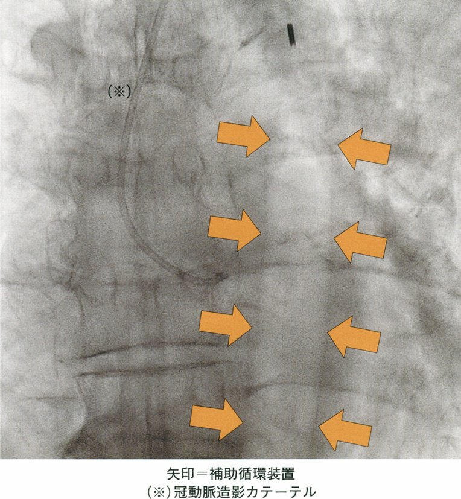
| 選択肢 | 解説 |
|---|---|
| ◯ ａ 冠動脈造影では冠動脈の中隔枝を介した側副血行が認められる。 | これが正解。冠動脈造影像（A）の右側は右冠動脈で、近位部から鋭縁部を回り後下行枝に至るまで太く滑らかに造影されている。そしてその後下行枝から分岐する中隔枝が心室中隔の中で対側の中隔枝とつながり、左前下行枝の領域を逆行性に満たしている——中隔枝を介した側副血行である——中隔枝どうしの吻合は冠動脈側副血行路の代表格で、左前下行枝が慢性的に高度狭窄または完全閉塞している場合に、右冠動脈側から中隔を越えて血流を供給する。なぜ側副血行が育ったのか：側副血行が発達する条件は「時間」である。本症例は80歳、20本/日を60年間の喫煙、10年来の高血圧——動脈硬化が長年かけてゆっくり進んだため、圧較差に応じて既存の細い吻合が拡張・発達する時間があった（arteriogenesis）。側副血行があると何が違うか：梗塞範囲が小さくなり、心室瘤や機械的合併症が減り、狭心症が起こる労作の閾値が上がる。逆に、若年者の初回の急性心筋梗塞では側副血行がないため、同じ枝が詰まっても梗塞は広範になる。造影で「詰まっている枝の先が薄く写る」ときは、どこから逆行性に来ているかを必ず追う。 |
| ｂ 冠動脈造影では右冠動脈の近位部に高度狭窄を認める。 | 誤り。右冠動脈は近位部を含め全長にわたって良好に造影されており、局所的に細くなる高度狭窄の所見はない——むしろ右冠動脈は健常で、中隔枝を介して対側へ血流を供給する側副血行の「供給源」として働いている。供給源となる血管自体に高度狭窄があれば、側副血行を養う余力はない。右冠動脈の走行を確認する：左前斜位（LAO）では右冠動脈は特徴的な「C」の字を描く——右冠尖から出て房室間溝を下行し、鋭縁部で曲がって心臓の下面へ回り込み、後下行枝と房室結節枝を出す。この形が保たれ、途切れや局所の細まりがないかを見る。狭窄度の評価：直近の正常部の径と比べた狭窄率で表し、主要冠動脈では75％以上、左主幹部では50％以上を有意狭窄とする。中等度狭窄では冠血流予備量比（FFR）などで機能的な虚血を証明してから治療する。本症例の責任病変はどこか：心電図は広範な誘導のST低下で、心尖部最強の収縮期雑音と肺水腫を伴う——左前下行枝あるいは左主幹部を含む多枝病変が疑われる状況である。造影を読むときは「どこが悪いか」と同時に「どこが代わりを務めているか」を見る。 |
| ｃ 留置している補助循環装置により血液の酸素化が行える。 | 誤り。透視像（B）で矢印が示しているのは大動脈内バルーンパンピング（IABP）のバルーンで、下行大動脈内に置かれ、拡張期に膨らみ収縮期直前にしぼむだけの装置である——血液の酸素化はできない——酸素化を行えるのは、回路に人工肺（膜型肺）を組み込んだ体外循環装置、すなわちVA-ECMO（PCPS）である。大腿静脈から脱血し、人工肺で酸素化と二酸化炭素除去を行い、遠心ポンプで大腿動脈へ返す。IABPにできることとできないこと：できるのは、拡張期の大動脈圧を上げて冠灌流を助けること（diastolic augmentation）と、収縮期直前に大動脈圧を下げて左室の後負荷を軽くすること（systolic unloading）。できないのは、酸素化と、自己心拍に依存しない循環の代行である。だから支えられる範囲が違う：IABPが上乗せできる心拍出量はおよそ0.5L/分にとどまり、自己心拍と自己の心収縮が前提になる。心停止や高度の心収縮低下では役に立たず、VA-ECMOやImpellaが必要になる。透視像で見分ける：IABPのバルーンは椎体の左縁に沿って縦に長く写り、先端に不透過マーカーがある。ECMOの脱送血管は太く、静脈側は下大静脈から右房へ達する。装置の名前ではなく「何ができるか」で覚えると、選択肢の真偽が即座に判定できる。 |
| ◯ ｄ 留置している補助循環装置により冠動脈血流量の増加が期待される。 | これが正解。IABPは心電図または動脈圧波形に同期して、拡張期にバルーンを膨らませる。冠動脈血流は主に拡張期に流れるため、拡張期の大動脈基部の圧が上がれば冠灌流圧が上がり、冠動脈血流量の増加が期待できる——これを拡張期増強（diastolic augmentation）という——同時にもう1つの効果がある。収縮期が始まる直前にバルーンを急速にしぼませると、大動脈内の圧と容積が瞬間的に下がり、左室が血液を押し出す際の抵抗が軽くなる（systolic unloading／afterload reduction）。左室の仕事量と心筋酸素消費が減る。「供給を増やし、需要を減らす」を同時に行う：虚血の治療原則そのものを機械で実現している装置で、だからこそ急性冠症候群に伴う心原性ショックや、機械的合併症（心室中隔穿孔・乳頭筋断裂）の手術までのつなぎに用いられる。同期のタイミングが命：膨張は大動脈弁が閉じた瞬間（動脈圧波形のdicrotic notch）、収縮は大動脈弁が開く直前。ずれると効果が出ないどころか害になる。頻脈や不整脈では同期が乱れて効果が落ちる。禁忌：高度の大動脈弁閉鎖不全症（拡張期に押し戻すと逆流が増える）、大動脈解離・大動脈瘤、高度の末梢動脈疾患。ただし心原性ショックへのルーチン使用は死亡率を改善しないことが示されている（IABP-SHOCK Ⅱ試験）。 |
| ｅ 留置している補助循環装置は大静脈内に留置されている。 | 誤り。IABPは大腿動脈から挿入し、バルーンの先端を左鎖骨下動脈分岐部のすぐ末梢に置く——留置されているのは下行大動脈であって、大静脈ではない——透視像（B）でも、矢印が示すバルーンは椎体の左縁に沿って縦方向に長く走っており、大動脈の走行と一致する（※印の冠動脈造影カテーテルとは別の構造物である）。位置決めの意味：先端が高すぎれば左鎖骨下動脈を塞いで左上肢の虚血や脳梗塞を招き、低すぎれば腎動脈や腹腔動脈を塞いで腎不全や腸管虚血を起こす。だから留置後は必ず胸部エックス線写真で先端の位置（第2〜3胸椎レベル、気管分岐部付近が目安）を確認する。大静脈に置く器具：下大静脈フィルター（深部静脈血栓症が証明され抗凝固が禁忌または無効のとき）、中心静脈カテーテル、Swan-Ganzカテーテル（右心系を通って肺動脈へ）、そしてVA-ECMOの脱血管——いずれも本症例の画像とは形も位置も違う。動脈側の合併症：下肢虚血、大動脈解離、穿刺部出血、血小板減少、溶血、感染。挿入後は足背動脈の拍動と下肢の色調を定期的に確認する。「どこに、どの向きで置くか」まで含めて装置は理解する。 |
| 選択肢 | 解説 |
|---|---|
| ａ 「最初は監視下で行います」 | 正しい説明。第Ⅰ相（急性期）の心臓リハビリテーションは、心電図モニターと血圧測定を行いながら医療者の監視下で進める——本症例は80歳で、広範な虚血（広範な誘導のST低下）から心原性ショックと肺水腫に陥り、冠血行再建と補助循環（IABP）を要した重症例である。血行動態が安定し補助循環装置が抜去された直後という段階で、いきなり自由に動かせる状態ではない。監視下で何を見るか：各段階（座位→立位→室内歩行→病棟内歩行→階段）の前後で、症状（胸痛・呼吸困難・めまい・過度の疲労）、心拍数、血圧、心電図（虚血性ST変化と不整脈）を確認し、問題がなければ次へ進む。逸脱があればその段階に留めるか一段下げる。とくに注意すべき合併症：起立性低血圧（長期臥床と降圧薬・β遮断薬の影響）、労作性の不整脈、そして高齢者では転倒——理学療法士と看護師が付き添う意味はここにもある。監視は永久ではない：リスクを層別化しながら段階的に監視を外し、退院後は外来の監視型（第Ⅱ相）へ、最終的には在宅・地域での自主的な運動（第Ⅲ相）へ移行する。「最初は」という言い方が、監視が過渡的なものであることを正しく伝えている。 |
| ｂ 「心拍数を見ながら進めていきます」 | 正しい説明。心拍数は運動強度の指標であると同時に、安全域を超えていないかの見張りでもある——目標心拍数の決め方はKarvonen法［安静時心拍数＋（予測最大心拍数−安静時心拍数）×係数］で、心疾患患者では係数0.4〜0.6を用いる。より正確には心肺運動負荷試験（CPX）で嫌気性代謝閾値（AT）を実測して処方する。なぜ心拍数が重要か（虚血の生理から）：心拍数が上がると心筋酸素消費量が増える一方で、拡張期が短縮して冠動脈血流（主に拡張期に流れる）が減る——需要を増やしながら供給を減らすという二重の負荷になる。だから虚血性心疾患では心拍数そのものが治療の標的になり、β遮断薬が予後を改善する。ただし心拍数だけを見ない：β遮断薬を服用していると心拍数が上がりにくく目標値が当てにならないので、自覚的運動強度Borg指数11〜13（「楽である」〜「ややきつい」）を併用する。心房細動があるときも同様である。血圧も同時に見る：運動中に収縮期血圧が20mmHg以上低下したら中止——心拍出量を増やせていないという危険な徴候である。「見ながら進める」＝評価しながら段階を上げる、という心臓リハビリテーションの原則そのものである。 |
| ｃ 「息切れや胸痛があれば無理に進めません」 | 正しい説明。症状は運動療法における最も鋭敏で最も重要な指標であり、胸痛や息切れが出たということはその強度が心筋の酸素需給の限界を超えたことを意味する——そこで無理に進めれば、梗塞の拡大、致死性不整脈、心不全の増悪を招きうる。「無理に進めません」は、患者に対して安全側の判断を約束する言葉である。運動を中止・保留する基準：胸痛・呼吸困難・動悸／めまい・ふらつき・失神／冷汗・チアノーゼ・顔面蒼白／過度の疲労／収縮期血圧の20mmHg以上の低下／過度の血圧上昇／心電図の虚血性ST変化や重症不整脈／目標心拍数の超過。患者自身に判断できるように教えることが目的：監視下にいる入院中は医療者が止められるが、退院後の外来・在宅では患者自身が判断する。だから「どういうときに止めるか」を入院中に体験として学んでもらう必要がある。訴えやすい関係をつくる：高齢者では「迷惑をかけたくない」「頑張らなければ」と症状を我慢することが少なくない。「症状が出たら言ってください、無理をしないことが治療です」と先に伝えておくこと自体が指導の一部である。本症例は80歳で重症の急性冠症候群を経ており、慎重に進めるべき対象である。 |
| ◯ ｄ 「心臓リハビリは退院の時点で終了となります」 | これが誤り＝本問の正解。心臓リハビリテーションは退院で終わらない。むしろ予後を改善する効果の中心は、退院後3〜5か月の外来監視型プログラム（第Ⅱ相）にあるとされ、その後は生涯続く維持期（第Ⅲ相）へ引き継がれる——入院中に得た運動耐容能は、続けなければ数か月で元へ戻る。危険因子の管理も服薬も、続けて初めて再発と死亡を減らす。日本での実情：急性心筋梗塞後に外来心臓リハビリテーションへ参加する患者の割合が低いことが繰り返し指摘されている。理由は、通院の負担、必要性が伝わっていないこと、そして「退院＝治った」という誤解——だからこの説明は害を生む。制度の裏づけ：心大血管疾患リハビリテーション料は発症・手術から150日を標準として算定でき、要件を満たせばその後も継続できる。「退院後も保険で続けられる」ことを具体的に伝えると参加率が上がる。だから退院時にすべきこと：外来リハビリの予約を退院前に取る、家族に同席してもらう、在宅での運動の内容と中止基準を紙で渡す、次回受診日と連絡先を明示する——「切れ目」を作らない工夫が要る。退院は治療の終点ではなく、二次予防の出発点である。 |
| ｅ 「ご家族と一緒に食事やお薬についても勉強しましょう」 | 正しい説明。心臓リハビリテーションは運動療法だけではなく、患者教育・危険因子の管理・心理社会的支援を含む包括的プログラムであり、食事と服薬の学習はその中核である——本症例は10年来の高血圧症で通院加療中、そして20本/日を60年間という喫煙歴がある。修正可能な危険因子が明確に存在し、ここを変えられなければ同じことが繰り返される。なぜ家族と一緒なのか（3つの理由）：①食事を作るのは多くの場合本人ではない——減塩と適正エネルギーの実行は調理する家族の理解なしには成立しない ②80歳という年齢では服薬管理に支援が要ることが多く、とくに抗血小板薬2剤併用（DAPT）の自己中断はステント血栓症という致命的な合併症を招く ③症状が出たときに救急要請を判断するのは同居家族である。本症例では特に重い：昨日午後7時の30分間の胸痛を「自然に軽快したから」と様子見して就寝し、受診が翌朝までずれた。この判断を変えられるのは、本人と家族の両方が「その痛みが何を意味するか」を知っていることである。教育の中身：禁煙、減塩と食事、体重・血圧・血糖・脂質の自己管理、服薬の意義と中断の危険、症状が出たときの対応と救急要請の目安。家族を巻き込むことは親切ではなく、二次予防の実効性そのものである。 |
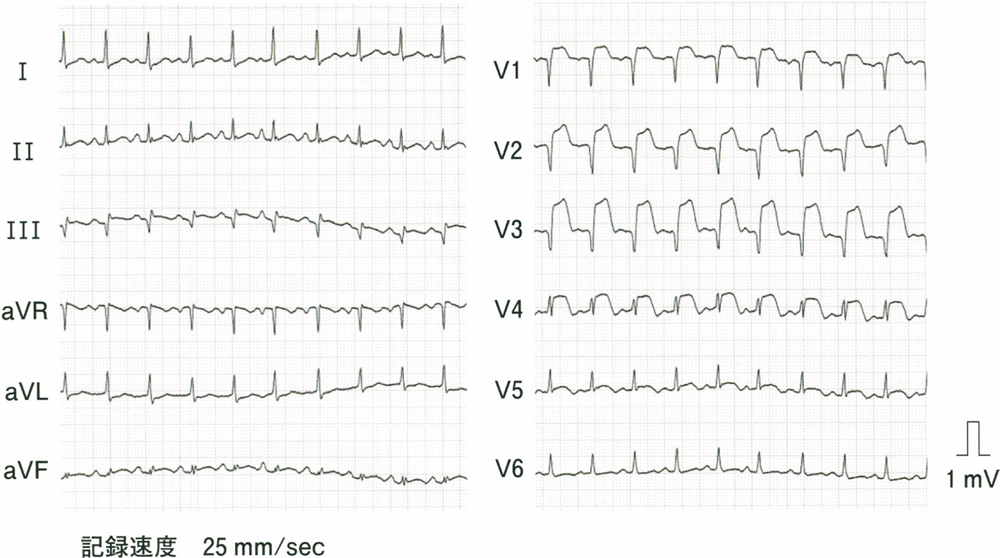
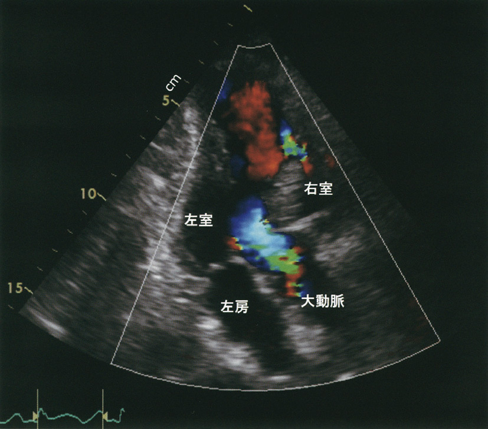
| 選択肢 | 解説 |
|---|---|
| ａ 乳頭筋断裂 | 誤り。乳頭筋断裂による急性僧帽弁閉鎖不全なら、雑音は心尖部を最強点として左腋窩へ放散する全収縮期雑音になる。本症例の雑音は胸骨左縁第4肋間が最強点であり、位置が合わない——心エコー図（B）でも、描出されているのは僧帽弁の異常ではなく、心室中隔を越えて右室側へ抜けるシャント血流である。断裂した乳頭筋の頭部が収縮期に左房へ翻転する像も、左房内へ向かう逆流ジェットも見えない。血流支配からも合いにくい：乳頭筋断裂は、右冠動脈または左回旋枝の単一血流支配を受ける後内側乳頭筋に圧倒的に多い（前外側乳頭筋は左前下行枝と左回旋枝の二重支配で虚血に強い）。本症例の心電図はV1〜V4のST上昇＝左前下行枝領域の前壁中隔梗塞である。ただし鑑別としては必ず挙げる：急性心筋梗塞後に新たな収縮期雑音とショック・肺うっ血が出現したとき、心室中隔穿孔と乳頭筋断裂は同じ顔をして現れる。両者を分けるのは雑音の最強点と、なにより心エコーである。どちらであっても外科的治療が必要になる点は共通している。 |
| ◯ ｂ 急性心筋梗塞 | これが正解。心電図（A）はV1〜V4に弓状（凸型）の明瞭なST上昇を示し、V5・V6は保たれている＝前壁中隔のST上昇型心筋梗塞（左前下行枝の閉塞）である——心筋逸脱酵素もCK 1,564U/L（基準30〜140）、AST 560U/L、LD 826U/L（基準120〜245）と大きく上昇しており、心筋の壊死が既に相当量進んでいることを示す。危険因子が揃っている：15年前から糖尿病と高血圧症で通院加療中の68歳女性、身長160cm・体重80kg（BMI 31.3の肥満）——冠動脈疾患の高リスク群である。発症時刻を鵜呑みにしない：「本日朝6時に強い胸痛」と記載されているが、受診時点でCK 1,564U/L・AST 560U/Lまで上がるには通常それなりの時間を要する。糖尿病では自律神経障害により虚血が痛みとして知覚されにくく（無痛性心筋虚血）、実際の発症はもっと早かった可能性がある——機械的合併症がこれほど早く出現したことの説明にもなる。現症はすでにショック：脈拍118/分、血圧86/50mmHg、呼吸数24/分、SpO2 90％（room air）——低灌流と肺うっ血が同時に来ている。まず急性心筋梗塞を確定し、そのうえで「なぜこれほど不安定なのか」を説明する所見を探す。 |
| ◯ ｃ 心室中隔穿孔 | これが正解。胸骨左縁第4肋間を最強点とする収縮期雑音——これは心室中隔穿孔の典型的な聴診所見である（しばしば手掌に触れる振戦（thrill）を伴う）——心エコー図（B）は傍胸骨長軸像で、左室・右室・左房・大動脈が描出されており、心室中隔を越えて右室側へ抜ける異常な血流信号（左→右短絡）が確認できる。これが診断の決め手である。部位も一致する：前壁中隔梗塞（左前下行枝）では心尖部寄りの中隔に穿孔が生じ、下壁梗塞（右冠動脈）では基部寄りの中隔に生じる（後者のほうが手術成績が悪い）。本症例は前者である。血行動態がなぜ一気に破綻するか：左室から右室への短絡ができると、①右室と肺循環へ余分な血液が流れ込んで肺血流が増え、肺うっ血と低酸素血症をきたす（SpO2 90％） ②その分だけ大動脈へ送られる前方拍出が減ってショックになる（血圧86/50mmHg、脈拍118/分）——供給を増やす方向の代償が効かない。治療：内科的治療のみでは1週間で半数以上が死亡する。IABPで後負荷を下げて短絡量を減らしながらつなぎ、原則として外科的閉鎖術（近年は経カテーテル閉鎖術も選択肢）へ進む。昇圧薬は後負荷を上げて短絡を増やすので、単純な「血圧を上げる治療」は逆効果になりうる。 |
| ｄ 心タンポナーデ | 誤り。心エコー図（B）に心嚢液の貯留はなく、右房・右室の拡張期虚脱も認めない。心タンポナーデは心膜腔に液体が溜まって心臓の拡張が妨げられる病態なので、心嚢液がなければ成立しない——Beckの三徴（血圧低下・頸静脈怒張・心音減弱）のうち、本症例では胸骨左縁第4肋間に明瞭な収縮期雑音が聴取されており、心音が減弱していない点も合わない。心筋梗塞後に心タンポナーデを起こす経路：左室自由壁破裂である。blow-out型は破綻が大きく、瞬時に心膜腔が血液で満たされて電気機械解離（心電図は動いているのに脈がない）から心停止に至り、蘇生できないことが多い。oozing型は少量ずつ漏れるため経過が緩徐で、心嚢穿刺と外科修復が間に合うことがある。雑音が出るかどうかで分ける：自由壁破裂は心腔と心腔をつなぐわけではないので新しい雑音を作らない。「新たな収縮期雑音＋ショック」なら心室中隔穿孔か乳頭筋断裂、「雑音なし＋ショック＋心嚢液」なら自由壁破裂——この分岐は覚えておく価値がある。いずれも心エコーがベッドサイドで数分のうちに決着をつける。 |
| ｅ 発作性上室頻拍 | 誤り。心電図（A）は心拍数およそ118/分の洞頻脈で、各QRS波の前にP波が先行している。発作性上室頻拍ではない——発作性上室頻拍は房室結節リエントリー性頻拍や房室リエントリー性頻拍が主体で、突然始まり突然止まる150〜200/分前後の規則正しいnarrow QRS頻拍として現れ、P波はQRSに埋没するか直後に現れる（pseudo-S波・pseudo-r'波）。迷走神経刺激やアデノシン投与で停止するのが特徴である。因果が逆である：本症例の頻脈は不整脈が原因でショックを起こしているのではなく、1回拍出量が低下した結果として心拍出量を保とうとする代償反応である。頻脈をむやみに止めれば、かえって心拍出量が落ちる。ただし心筋梗塞では不整脈を必ず警戒する：心室細動・持続性心室頻拍（再灌流前後の数時間が最も多い）、心房細動（心不全と交感神経緊張により生じ、心拍出量をさらに落とす）、房室ブロック（下壁梗塞に多い）——本症例のように不安定な患者では持続的な心電図モニターが必須である。心電図で頻脈を見たら：①QRS幅（narrow／wide） ②規則性 ③P波の有無と関係 ④発症・停止の様式——この4点で分類する。「頻脈があるからこの不整脈」ではなく、頻脈が原因か結果かをまず考える。 |
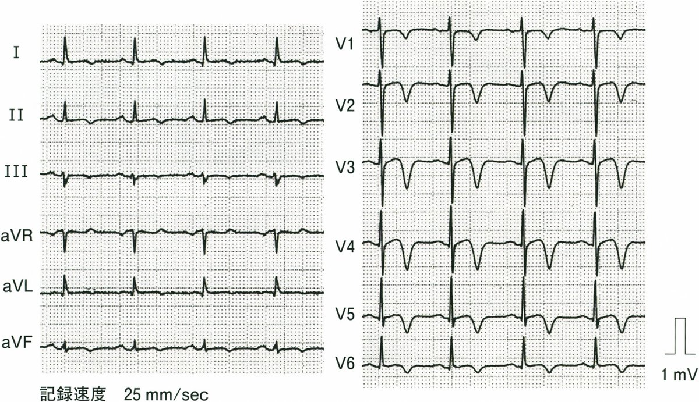
| 選択肢 | 解説 |
|---|---|
| ａ FDG-PET | 誤り。18F-FDG PETは心筋の糖代謝を画像化する検査で、急性期に「まず確認する」性質のものではない——循環器領域での用途は主に2つ。①心筋生存性（viability）の評価——血流が低下しているのに糖代謝が保たれている領域は冬眠心筋（hibernating myocardium）で、血行再建により壁運動の回復が期待できる ②心サルコイドーシスの活動性評価——炎症部位への集積を見る。いずれも慢性期の判断材料である。実務上の制約：18時間以上の絶食や糖負荷といった前処置、放射性医薬品の準備、撮像時間——半日仕事であり、発症当日の患者に行う検査ではない。実施できる施設も限られる。「まず確認すべき」の意味：①その場で短時間に得られる ②非侵襲 ③結果が直ちに方針を変える——この3条件で選ぶ。本症例で決めなければならないのは「心筋壊死が起きているかどうか」であり、それを最も速く確実に答えるのは血液検査である。生存性の評価が必要になるのは、梗塞が確定し血行再建の適応を考える段階である。 |
| ｂ 運動負荷心電図 | 誤り（禁忌である）。本日発症の胸痛で、心エコーに新規の壁運動低下がある——すなわち不安定な急性冠症候群が強く疑われる状態であり、運動負荷は禁忌である——負荷をかければ心筋酸素需要が急増し、既に需給が破綻しかけている領域の虚血を悪化させて、梗塞の拡大・致死性不整脈・死亡を招きうる。運動負荷試験の絶対禁忌：発症2日以内の急性心筋梗塞、高リスクの不安定狭心症、血行動態を損なうコントロール不良の不整脈、症候性の重症大動脈弁狭窄症、非代償性心不全、急性肺血栓塞栓症、急性心筋炎・心膜炎、急性大動脈解離。本症例が「不安定」である根拠：①症状が今回初めて（新規発症）②安静時（歯磨き中）に出現し20分持続 ③心エコーで前壁から心尖部に壁運動低下——不安定狭心症の定義を満たし、しかも客観的な虚血の証拠がある。負荷試験が生きるのは：症状が安定した慢性冠症候群で、虚血の有無と広がりを評価して治療方針を決めるとき。あるいは心筋梗塞後のリハビリテーションで運動処方を作るとき。「不安定な虚血に負荷をかけない」は循環器で最も守るべき禁忌の1つである。 |
| ｃ 心筋シンチグラフィ | 誤り。心筋血流シンチグラフィ（201Tl、99mTc-MIBI／テトロホスミン）は放射性医薬品の準備・投与・撮像に時間を要し、しかも多くは負荷（運動または薬物）と組み合わせるため、不安定な急性期には上と同じ理由で行えない——安静時のみの心筋血流シンチグラフィで急性期の虚血領域を捉える手法もあるが、一般的な救急外来の第一手にはならない。核医学検査の本来の役割：①安定した患者での虚血の証明と広がりの評価（負荷時に集積低下し安静時に再分布＝可逆性の虚血、両方で欠損＝梗塞） ②心筋生存性の評価 ③心アミロイドーシスの診断（99mTc-ピロリン酸） ④交感神経機能の評価（123I-MIBG）。「感度が高い検査＝最初に行う検査」ではない：検査の選択は、感度・特異度だけでなく、所要時間・侵襲・実施可能性・そして結果が方針を変えるかで決まる。本症例で必要なのは「心筋が壊死しているか」の即答であり、それは採血で得られる。核医学は時間をかけて情報を得る検査であり、急ぐ場面の道具ではない。 |
| ◯ ｄ 心筋トロポニンT | これが正解。心筋トロポニンTは心筋細胞の収縮蛋白（トロポニン複合体の一部）で、心筋以外にはほとんど存在しないため、心筋壊死のマーカーとして最も感度・特異度が高い——本症例の心電図は洞調律・心拍数およそ76/分で、明らかなST上昇はない。一方でV2〜V4を中心に深い陰性T波（V3でおよそ6mm）を認め、心エコーでは前壁から心尖部にわずかな壁運動低下がある——左前下行枝領域の虚血を強く示唆する所見である。ST上昇がないからこそトロポニンが要る：ST上昇型なら心電図だけで直ちに再灌流療法へ進める。ST上昇がない場合、非ST上昇型心筋梗塞（心筋壊死あり）と不安定狭心症（壊死なし）を分けられるのはトロポニンだけであり、その区別が治療の緊急度とリスク層別化を決める。時間的にも適している：今朝6時ころ発症、10時30分受診＝約4時間半。トロポニンは発症3〜4時間後（高感度法では1〜3時間後）から上昇するので、この時点で十分に検出できる。ただし1点では判断せず、経時的な上昇・下降のパターンを見る。症状が消えていても油断しない：痛みが20分で消失したことは「治った」ことを意味しない。陰性T波と壁運動低下は虚血が起きた証拠であり、責任血管の高度狭窄がそのまま残っている可能性が高い。この時点でトロポニンを確認することが、次に冠動脈造影へ進むかどうかの分岐点になる。 |
| ｅ 脳性ナトリウム利尿ペプチド〈BNP〉 | 誤り。脳性ナトリウム利尿ペプチド（BNP）は心室の壁応力（伸展）に応じて心室筋から分泌されるホルモンで、心不全の診断・重症度評価・予後予測に用いる。心筋壊死のマーカーではない——本症例には心不全の所見がない。心音と呼吸音に異常なく、SpO2 98％（room air）、呼吸数18/分、腹部の診察でも異常なし——BNPを測っても急性冠症候群を確定も除外もできない。BNPが上がる病態は幅広い：心不全のほか、心房細動、弁膜症、高齢、腎機能低下、肺高血圧、貧血、敗血症でも上昇する。逆に肥満では低く出る。特異度が高い検査ではない。ただし急性冠症候群でも意味を持つ：急性冠症候群でBNP（またはNT-proBNP）が高い患者は予後が悪いことが知られており、リスク層別化の補助として使われる。しかし「診断を確定するために、まず確認する」検査ではない。マーカーは目的で選ぶ：心筋が壊死したかを知りたい→トロポニン／心室に負荷がかかっているかを知りたい→BNP・NT-proBNP／炎症か→CRP・白血球／血栓か→D-ダイマー。同じ採血でも問う相手が違う。本症例で問われているのは「壊死したか」であって「心不全か」ではない。 |
| 選択肢 | 解説 |
|---|---|
| ａ 心破裂（blow-out 型）は予後不良である。 | 正しい記述。左室自由壁破裂のうちblow-out型は、壊死した心筋が一気に裂けて心膜腔へ大量の血液が流入するもので、数分で心タンポナーデとなり電気機械解離（心電図は動いているのに脈が触れない）から心停止に至る——救命できることは稀で、予後はきわめて不良である——もう一方のoozing型は破綻部が小さく、血液が少量ずつ滲み出るため経過が緩徐で、心エコーで心嚢液を捉えて心嚢穿刺と外科修復が間に合うことがある。疫学と機序：再灌流療法の普及で頻度は減ったが、いまも急性心筋梗塞の院内死亡の重要な一因。発症2〜7日、壊死心筋が好中球の蛋白分解酵素によって最も脆くなる時期に多い。高齢・女性・初回梗塞・高血圧・再灌流の遅れが危険因子である。自由壁破裂の特徴：心腔と心腔をつなぐわけではないので新しい雑音を作らない。突然のショック・意識消失・徐脈から電気機械解離という経過をとる。予防は早期の再灌流であり、危険因子を持つ患者では梗塞後数日の急変に警戒する。 |
| ｂ 乳頭筋断裂は前乳頭筋より後乳頭筋で多い。 | 正しい記述。乳頭筋断裂は前外側乳頭筋より後内側乳頭筋（後乳頭筋）に圧倒的に多い。理由は血流支配の違いである——後内側乳頭筋は右冠動脈（右優位型では後下行枝）または左回旋枝のいずれか一方からの単一血流支配を受けるのに対し、前外側乳頭筋は左前下行枝と左回旋枝の二重支配を受ける。1本が詰まっても代わりがある前外側に比べ、後内側は虚血に対して圧倒的に弱い。臨床像：発症2〜7日に、心尖部を最強点として左腋窩へ放散する全収縮期雑音が新たに出現し、急激な肺水腫と心原性ショックをきたす。急性の逆流では左房がまだ拡張しておらず、逆流量が多くなくても左房圧が急上昇するためである。雑音の大きさに騙されない：重症例ほど左室と左房の圧較差が収縮早期に消えるため、雑音は小さく短く、聴こえないことすらある。診断は心エコーで、断裂した乳頭筋頭部が収縮期に左房へ翻転する像が決め手になる。治療：IABPで後負荷を下げてつなぎ、緊急の僧帽弁置換術／形成術。内科的治療のみでは救命できない。「単一血流支配だから後内側が弱い」——この一点を押さえれば導ける。 |
| ｃ 心室中隔穿孔に対してカテーテル治療が考慮される。 | 正しい記述（ただし本問が採点除外となった要因はここにあった可能性がある）。心室中隔穿孔に対する経カテーテル閉鎖術は、閉鎖栓（オクルーダー）を用いて欠損孔を塞ぐ手技で、実際に選択肢として存在する——用いられるのは、外科手術のリスクがきわめて高い症例、急性期で心筋が脆く縫合が難しい時期のbridge（つなぎ）、あるいは外科修復後の遺残短絡に対して、といった場面である。とはいえ標準治療は外科手術：急性心筋梗塞に伴う心室中隔穿孔の治療は原則として外科的閉鎖術であり、内科的治療のみでは1週間で半数以上が死亡する。カテーテル治療は「考慮される」ものであって、第一選択として確立しているわけではない——この位置づけの微妙さが、記述の正誤を割れさせうる。本問が採点除外となった意味：「誤っているのはどれか」という問い方に対し、正誤の判定が一意に定まらない選択肢が含まれると、正解を1つに絞れなくなる。国家試験ではこうした場合に採点除外という処理が行われる。学習上は無駄にならない：この5つの選択肢は急性心筋梗塞の合併症の総まとめとして質が高く、1つずつ検討する価値がある。採点除外＝内容が無意味、ではない。 |
| ｄ 房室ブロックは前壁梗塞より下壁梗塞で生じやすい。 | 正しい記述。房室ブロックは前壁梗塞より下壁梗塞で生じやすい。房室結節を養う房室結節枝は約90％が右冠動脈から分岐しており、下壁梗塞（右冠動脈の閉塞）ではこの枝の血流が直接損なわれるためである——加えて下壁・後壁には迷走神経の求心線維が豊富に分布しており、虚血がBezold-Jarisch反射を引き起こして迷走神経が過剰に働き、洞徐脈と房室伝導の抑制をきたす。血圧低下・悪心・嘔吐を伴うのはこのためである。下壁梗塞の房室ブロックの性質：ブロック部位は房室結節レベルなので、補充調律はHis束より上位で生じ、QRS幅は狭く心拍数も40〜60/分と比較的保たれる。アトロピンが有効で、多くは一過性（数日で回復）、予後は比較的良好である。前壁梗塞の房室ブロックは意味が違う：His束以下の広範な伝導系の壊死を意味し、補充調律はQRS幅が広く20〜40/分と遅い。アトロピンは無効で一時ペーシングを要し、心室細動や心停止へ移行しうる。そもそも広範な梗塞でなければ起こらないので予後が悪く、恒久ペースメーカの適応となることが多い。同じ「房室ブロック」でも、下壁と前壁では緊急度も予後もまったく違う。 |
| ｅ Dressler 症候群は心筋梗塞発症後1 年以降に生じやすい。 | これが誤り＝本来の正解。Dressler症候群（心筋梗塞後症候群）は、心筋梗塞の発症後おおむね1週間〜数週間（多くは2〜3週）に生じる。1年以降ではない——機序は自己免疫性と考えられている。壊死した心筋から放出された心筋抗原に対して抗体が産生され、心膜・胸膜・肺に免疫複合体を介した炎症を起こす。だから梗塞直後ではなく、免疫応答が成立するだけの時間を置いてから発症する。症状と所見：発熱、胸膜性の胸痛（吸気と臥位で増悪し、前傾で軽快する）、心膜摩擦音、心嚢液貯留、胸水、赤沈亢進、CRP上昇、白血球増多。心電図はびまん性のST上昇とPR部分の低下という心膜炎のパターンを示す。治療：高用量アスピリンとコルヒチンが基本。⚠️ステロイドやインドメタシンなどのNSAIDsは梗塞部の治癒（線維化）を妨げ、心破裂や心室瘤のリスクを高めうるため、急性期には避けるのが原則である。頻度は激減した：再灌流療法の普及により梗塞範囲が小さくなったため、現在ではまれな合併症になっている。発症2〜4日の早期心膜炎（epistenocardiac pericarditis）と区別する——こちらは壊死心筋に接する心膜の直接的な炎症で、自己免疫機序ではない。 |
| 選択肢 | 解説 |
|---|---|
| ａ 急性心膜炎 | 誤り。急性心膜炎の胸痛は体位と呼吸で変わるのが特徴で、臥位と深吸気で増悪し前傾坐位で軽快する。本症例の症状は「犬の散歩中」という労作で誘発され休息で消失していたもので、労作依存＝虚血のパターンである——身体所見も合わない。心膜炎では胸骨左縁で心膜摩擦音を聴取するが、本症例は「心音と呼吸音とに異常を認めない」。心電図が決定的に違う：急性心膜炎は冠動脈の支配領域に一致しないびまん性の凹型ST上昇とPR部分の低下（aVRではST低下とPR上昇）を示す。本症例はV2・V3・V4という左前下行枝領域に限局したST「低下」であり、まったく逆である。心エコーも合わない：心膜炎では心嚢液貯留を伴うことが多いが、本症例は「心囊液の貯留を認めない」と明記され、代わりに左室前壁の局所壁運動低下がある——局所性の壁運動異常は心膜の炎症では生じない。背景も違う：急性心膜炎は先行するウイルス感染や発熱を伴うことが多いが、本症例は体温36.2℃で感染徴候がない。「体位で変わるか」「心電図がびまん性か局所性か」の2点で分けられる。 |
| ◯ ｂ 急性冠症候群 | これが正解。症状の経過が不安定狭心症の定義をそのまま満たしている——1週間前から労作（犬の散歩）で胸の重苦しさと息苦しさが出るようになり（①新規発症）、本日は午前9時から症状が持続して1時間経っても消えない（③安静時に持続する発作）——従来なら2〜3分の休息で消えていたものが、今日は休んでも消えない。この「今までと違う」という変化そのものが急性冠症候群の合図である。客観的な裏づけも揃っている：12誘導心電図でV2・V3・V4のST低下、心エコーで左室前壁の壁運動低下——どちらも左前下行枝領域の虚血として矛盾なく説明できる。心電図と画像の2つが同じ領域を指しているとき、その一致は強い証拠になる。胸痛以外の訴えに注意：本症例の主訴は「胸の重苦しさと息苦しさ」で、鋭い胸痛ではない。息切れは狭心症等価症状の代表であり、とくに高齢者・女性・糖尿病患者では前面に出やすい。危険因子：70歳女性、65歳時に高血圧症と脂質異常症を指摘されたが定期通院なし——未治療の危険因子が5年間放置されている。ST上昇がないから急がなくてよい、ではない：非ST上昇型急性冠症候群としてリスク層別化を行い、トロポニンを測定し、モニター下で管理して侵襲的治療のタイミングを決める。症状が持続している時点で、すでに時間との勝負が始まっている。 |
| ｃ たこつぼ心筋症 | 誤り。たこつぼ心筋症（たこつぼ症候群）は高齢女性に多いという点だけは本症例と一致するが、それ以外がことごとく合わない——①誘因：近親者の死・災害・激しい叱責といった強い精神的ストレス、あるいは手術・敗血症・くも膜下出血などの身体的ストレスが先行するのが典型だが、本症例にその記載はない ②発症様式：突然発症であり、1週間前から労作で再現性をもって誘発される経過はとらない。心電図が逆向き：たこつぼ症候群は前胸部誘導のST「上昇」（急性前壁梗塞と紛らわしい）で発症し、その後に広範な巨大陰性T波とQT延長へ移行する。本症例はV2〜V4のST「低下」である。壁運動異常の分布が違う：たこつぼでは心尖部が広範に無収縮となり基部が過収縮する（心尖部バルーニング）——冠動脈1本の支配領域を超えて広がるのが特徴である。本症例の「左室前壁の壁運動低下」は左前下行枝の支配領域に収まっている。確定は冠動脈造影：たこつぼ症候群は責任病変となる冠動脈の有意狭窄がないことを確認して初めて診断でき、心筋逸脱酵素の上昇は壁運動異常の広さに比して軽度にとどまる。実地では「まず急性冠症候群として動き、造影の結果でたこつぼと判明する」という順序をとる。 |
| ｄ ウイルス性心筋炎 | 誤り。ウイルス性心筋炎では、発症の数日〜2週間前に発熱・咽頭痛・咳嗽・下痢といった感冒様症状や消化器症状が先行するのが典型だが、本症例にその記載はなく、体温36.2℃で発熱もない——原因ウイルスはコクサッキーBをはじめとするエンテロウイルス、アデノウイルス、パルボウイルスB19、ヒトヘルペスウイルス6など。所見の分布が違う：心筋炎ではびまん性の壁運動低下と左室拡大、心嚢液貯留を伴うことが多く、局所の壁運動低下という形はとりにくい。本症例は左室前壁に限局しており、心嚢液もない。症状の出方も違う：心筋炎は倦怠感・動悸・呼吸困難・浮腫といった心不全症状や、伝導障害による徐脈・失神で現れることが多く、労作で誘発され休息で消える再現性のある胸部症状にはならない。ただし紛らわしい局面はある：心筋炎でもトロポニンは上昇し、心電図でST-T変化を示すため急性冠症候群と鑑別が難しいことがある。とくに劇症型心筋炎は数時間で心原性ショックと致死性不整脈に至るので、若年者の急性心不全では必ず鑑別に挙げる。確定診断は心筋生検、心臓MRIも有用である。本症例では先行感染がないこと、所見が局所性であることの2点で外せる。 |
| ｅ 急性肺血栓塞栓症 | 誤り。急性肺血栓塞栓症を示す所見が1つもない。SpO2 99％（room air）、呼吸数16/分——低酸素血症も頻呼吸もなく、頸静脈怒張もない——危険因子（長期臥床、手術、外傷・骨折、悪性腫瘍、長距離移動、経口避妊薬、妊娠・産褥、深部静脈血栓症の既往）の記載もない。むしろ毎朝犬の散歩をしており活動的である。心電図が合わない：急性肺血栓塞栓症では急性右心負荷所見——洞頻脈、SⅠQⅢTⅢパターン、右脚ブロック、右軸偏位、V1〜V3の陰性T波——が現れる。本症例は脈拍84/分で頻脈すらなく、V2〜V4のST低下という左心系の虚血パターンである。心エコーの所見も逆：肺血栓塞栓症では右室の拡大と収縮低下、心室中隔の圧排（Dシェイプ）、McConnell徴候（右室自由壁は動かないのに心尖部は動く）が見られる。本症例は左室前壁の壁運動低下である。症状の性質：肺血栓塞栓症の胸痛は吸気で増悪する胸膜性の鋭い痛みで、突然の呼吸困難が前面に出る。労作で再現性をもって誘発され休息で消える経過はとらない。胸部エックス線写真に異常がないことは肺塞栓を否定しないが、他のすべての所見が虚血を指している。 |
| 選択肢 | 解説 |
|---|---|
| ａ 52 | 誤り。52は本症例の年齢である。Brinkman指数（喫煙指数）の計算に年齢は一切用いない——定義は「1日の喫煙本数 × 喫煙年数」の2つだけ。本症例は「喫煙は15本/日を30年間」なので 15 × 30 ＝ 450 となる。この選択肢の狙い：症例文には身長168cm、体重88kg、年齢52歳、高血圧の罹病期間3年、総コレステロール280mg/dLと数値が並んでおり、そのどれかを反射的に選んでしまわないかを試している。計算問題では「何を掛けるのか」を定義から確認してから数字を拾う。喫煙年数の数え方：喫煙を開始してから現在（または禁煙時）までの年数。途中で本数が変わった場合は期間ごとに計算して合算する。禁煙していても、それまでに蓄積した曝露量は消えないので指数はそのまま用いる。年齢が関わる場面はある：ニコチン依存症管理料の算定要件では「35歳以上の患者ではブリンクマン指数200以上」という条件があり、年齢と指数が組み合わせて使われる。ただし指数そのものの計算には年齢は入らない。定義を1行で言えるかどうかが、そのまま正誤を分ける。 |
| ｂ 154 | 誤り。154という数値は、この症例のどの組み合わせからも導けない——喫煙本数と年数を掛ければ15×30＝450、足せば45、pack-yearなら（15÷20）×30＝22.5。身長168cm、体重88kg、年齢52歳、総コレステロール280mg/dL、トリグリセリド150mg/dL——どれを組み合わせても154にはならない。Brinkman指数とpack-yearを混同しない：Brinkman指数＝1日の本数×年数（単位なし）。pack-year（箱・年）＝（1日の本数÷20）×年数で、1日1箱（20本）を1年吸った量を1とする国際的な単位である。本症例はBrinkman指数450、22.5 pack-year——同じ喫煙量でも数値がまったく違うので、どちらを問われているかを必ず確認する。Brinkman指数が使われる理由：計算が容易で、日本では肺癌・慢性閉塞性肺疾患のリスク評価や保険診療の要件として広く定着している。問診で確認すべきこと：1日の本数、開始年齢、喫煙年数、禁煙の有無と時期、加熱式たばこや電子たばこの使用、受動喫煙の有無。「何本吸いますか」だけでは指数は出せない。選択肢の数字に意味を探す前に、自分で定義どおり計算して答えを出しておく。 |
| ｃ 176 | 誤り。176という数値もこの症例からは導けない。正しくは15本/日 × 30年 ＝ 450である——「15本/日を30年間」という日本語を「30本/日を15年間」と読み違えても、積は同じ450になる（掛け算なので順序は結果を変えない）。つまりこの設問で計算を誤るとすれば、掛けるべき数字そのものを取り違えたときである。指数の閾値を押さえる：Brinkman指数400以上で肺癌のリスクが高いとされ、600以上では高度のリスクとされる。慢性閉塞性肺疾患の診断でも重要な参考所見で、喘息との鑑別や、長期の喫煙曝露を示す指標として用いられる。本症例は450＝400を超えている：52歳という年齢を考えると、このまま吸い続ければ指数はさらに上がる。虚血性心疾患の危険因子としてはもちろん、肺癌・慢性閉塞性肺疾患・末梢動脈疾患・腹部大動脈瘤のリスクとしても評価すべき水準である。指数は「量」であって「質」ではない：冠動脈疾患のリスクは1日1本でも明確に上がり、本数との関係は直線的ではなく低用量で急峻に立ち上がる。指数が小さいことは安全を意味しない。数値を出したら、その数値が何を意味するのかまで一続きで押さえる。 |
| ｄ 350 | 誤り。350ではなく450が正しい。15本/日 × 30年 ＝ 450である——この数値は正解の450に最も近く、しかも「400」という臨床的な閾値をまたぐ位置に置かれている点で、単なる数合わせ以上の意味を持つ。350なら400未満、450なら400以上——同じ患者について、この1つの数値の違いが「肺癌の高リスク群に入るかどうか」という評価を変えてしまう。閾値の整理：Brinkman指数200以上（35歳以上）＝ニコチン依存症管理料の算定要件の1つ／400以上＝肺癌のリスクが高い／600以上＝高度のリスク。慢性閉塞性肺疾患では長期の喫煙曝露を示す参考所見として用いる。計算を間違えないための手順：①「1日の本数」を確認する（15本） ②「喫煙年数」を確認する（30年） ③掛ける。症例文には「喫煙は15本/日を30年間」と本数が先に書かれているが、pack-yearの記載順（箱数が先）と混同しないこと。数値を出したあとにすべきこと：禁煙の意思を確認し、禁煙外来を提案する。本症例は不安定狭心症が疑われる状況であり、禁煙は薬物療法に匹敵する予後改善効果を持つ。閾値の近くに置かれた選択肢は、計算精度を試している。 |
| ◯ ｅ 450 | これが正解。Brinkman指数（喫煙指数）＝1日の喫煙本数 × 喫煙年数。本症例は「喫煙は15本/日を30年間」なので、15 × 30 ＝ 450 である——450は400以上＝肺癌の高リスク群にあたり、慢性閉塞性肺疾患のリスクとしても、そして本症例で問題になっている冠動脈疾患の危険因子としても十分に重い。この患者の危険因子を並べる：52歳男性／喫煙450／3年前からの高血圧症（カルシウム拮抗薬とACE阻害薬を内服中）／総コレステロール280mg/dL（Friedewald式でLDLコレステロールは280−54−150÷5＝196mg/dL）／身長168cm・体重88kgでBMI 31.2の肥満／尿酸6.6mg/dL／父親が脂質異常症という家族歴。修正可能な因子が4つ（喫煙・脂質・血圧・体重）も揃っており、しかもそのすべてが未達成の状態にある。ただし今日やるべきことは別にある：1週間前から階段昇降で前胸部痛（下顎への放散痛あり、安静1分で消失）→4日前から平地歩行でも→今朝からは安静時にも2〜3分持続——増悪型かつ新規発症の不安定狭心症であり、V1〜V4に軽度のST低下もある。危険因子の是正は必要だが、まず入院してリスク層別化と冠動脈評価を行う場面である。禁煙の効果：禁煙後1年で冠動脈疾患のリスクは約半減し、10〜15年で非喫煙者に近づく。心筋梗塞後の禁煙による予後改善効果は薬物療法に匹敵する。指数を計算することは、禁煙支援という次の行動へつなげるための手順である。 |
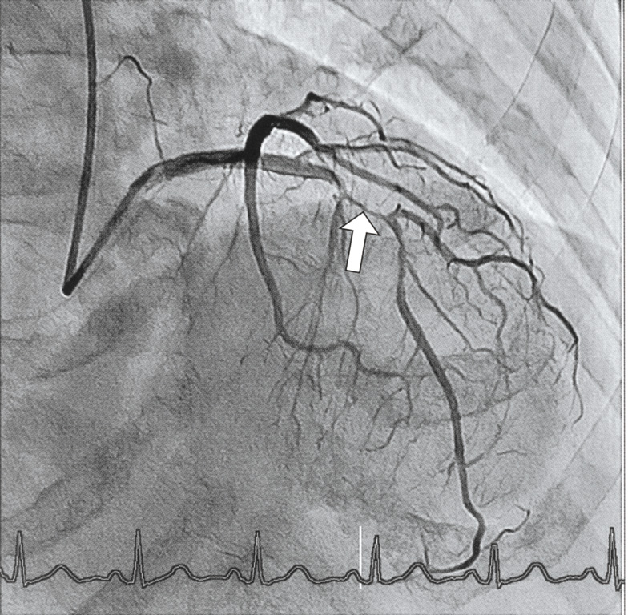
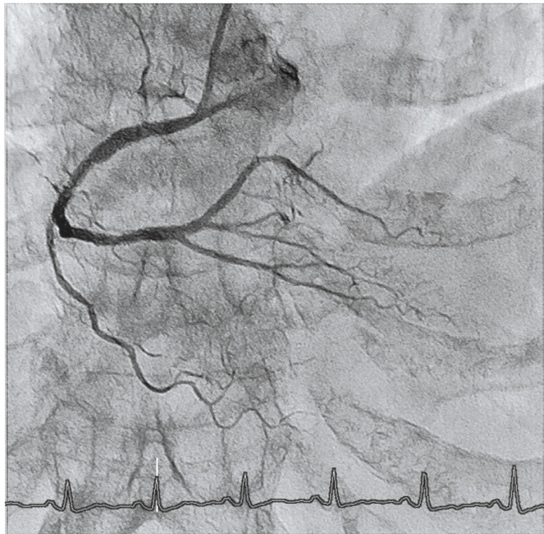
| 選択肢 | 解説 |
|---|---|
| ◯ ａ 左冠動脈前下行枝 | これが正解。矢印は、左冠動脈主幹部から分岐したあと前室間溝に沿って心尖へ向かって下行していく太い枝を指している——左冠動脈前下行枝（LAD）である——決め手はこの血管から出る2種類の枝の出方である。①中隔枝：ほぼ直角に心室中隔へ入っていく細い枝が、串状に何本も並んで分岐する（造影像では本幹から真下へ向かう平行な細い枝として見える） ②対角枝：左室前壁・前側壁へ向かって斜めに出る太めの枝。この2つが同時に出る血管は前下行枝だけ：回旋枝は房室間溝を回って鈍縁枝を出し、中隔枝を持たない。右冠動脈は別のカテーテルで別に造影するので、左冠動脈造影像には写らない。臨床所見とも一致する：本症例の心電図はV1・V2・V3・V4に軽度のST低下を示しており、これは前下行枝が養う前壁中隔領域の虚血として矛盾なく説明できる。造影で見つけた病変と心電図の所見が同じ領域を指すとき、それが責任病変である確からしさは高まる。この枝が持つ重み：前下行枝は左室心筋の最も広い範囲を養い、近位部の閉塞は広範な前壁梗塞となって予後を大きく左右する。だから造影像を読むときは、まず「どれが前下行枝か」を決めるところから始める。 |
| ｂ 左冠動脈主幹部 | 誤り。左冠動脈主幹部は、左冠動脈洞（Valsalva洞）から起始して前下行枝と回旋枝に分かれるまでのごく短い1本の血管で、長さは通常5〜10mm程度しかない——造影像ではカテーテル先端の直後にある最も太い部分がそれにあたり、矢印が指す位置はすでに分岐したあとの末梢である。約3分の1の症例では中間枝（ramus intermedius）が加わって三分岐となる。主幹部が特別扱いされる理由：ここが詰まれば左室心筋のほぼ全体が一度に虚血に陥り、心原性ショックや突然死に直結する。そのため有意狭窄の基準は他の主要枝の75％以上に対して50％以上と厳しく設定されており、狭窄が見つかれば原則として血行再建の適応となる。心電図での示唆：aVR誘導のST上昇＋広範な誘導のST低下は、左主幹部病変または三枝病変を示唆する所見として知られている。治療の選択：従来は冠動脈バイパス術が標準だったが、近年は病変の複雑さ（SYNTAXスコア）や併存症によってはPCIも選択される。糖尿病を合併した多枝病変ではバイパス術が優るとされる。造影像の「どこか」を答える問題では、まず分岐点を見つけて中枢と末梢を区別する。 |
| ｃ 左冠動脈回旋枝 | 誤り。左冠動脈回旋枝は、主幹部から分かれたあと左房室間溝に入って左後方へ回り込み、左室の側壁から後側壁へ向けて鈍縁枝（obtuse marginal branch）を出す——前室間溝を心尖へ向かって下行する走行はとらず、中隔枝も出さない。造影像の上では、主幹部の分岐部から「上（あるいは左後方）へ回り込む側」が回旋枝、「心尖へ向かって下る側」が前下行枝、という関係で見分ける。支配領域と心電図：回旋枝の閉塞は左室側壁・後側壁の梗塞となり、Ⅰ・aVL・V5・V6の変化として現れる。後壁に及ぶとV1〜V3に鏡像性のST低下と高いR波が出るため、背側誘導（V7〜V9）を追加して確認する必要がある。「心電図に出にくい血管」：回旋枝領域の梗塞は12誘導心電図で捉えにくく、ST上昇型として認識されずに再灌流が遅れることがある。側壁・後壁の虚血を疑ったら追加誘導を撮る、という手順が重要になる。優位性：約10〜15％の症例では回旋枝が後下行枝を出す（左優位型）。この場合、回旋枝の閉塞は下壁梗塞としても現れる。本症例の心電図はV1〜V4のST低下であり、側壁ではなく前壁中隔の虚血を示している。 |
| ｄ 右冠動脈 | 誤り。右冠動脈は右冠動脈洞から起始する別の血管で、左冠動脈とは別のカテーテルを用いて別に造影する。本画像は左冠動脈造影であり、右冠動脈は写っていない——右冠動脈は右房室間溝を下行し、円錐枝、洞結節枝（約60％がここから）、右室枝、鋭縁枝を出しながら心臓の下面へ回り込み、右優位型（約85〜90％）では後下行枝と房室結節枝（約90％がここから）を出す。造影像での見え方：左前斜位（LAO）では特徴的な「C」の字を描き、右前斜位（RAO）では横向きのL字状に見える。左冠動脈のように主幹部から2本へ分かれる形をとらないので、1枚の像でも区別できる。支配領域と心電図：右冠動脈の閉塞は下壁梗塞（Ⅱ・Ⅲ・aVFのST上昇）となり、近位部の閉塞では右室梗塞を伴う（V4Rで確認）。房室結節枝と洞結節枝を出すため、徐脈・房室ブロックを合併しやすい。本症例の所見と合わない：心電図の変化はV1〜V4＝前壁中隔誘導であり、下壁誘導ではない。冠動脈造影は左右を別々に撮る——どちらの造影像を見ているのかを最初に確かめる。 |
| ｅ 中隔枝 | 誤り。中隔枝は前下行枝からほぼ直角に心室中隔へ入っていく細い枝の群であり、矢印が指す太い本幹とは太さも走行もまったく違う——造影像では、前下行枝の本幹から真下へ向かって何本もの細い枝が平行に並んで出ていく様子として見え、この「串状に並ぶ細い枝」が前下行枝を同定する目印そのものになっている。つまり中隔枝は矢印の血管を見分けるための手がかりであって、矢印が指している対象ではない。中隔枝が養う場所：心室中隔の前方2/3。ここには右脚と左脚前枝が走るため、前下行枝近位部の閉塞では右脚ブロックや左脚前枝ブロックが生じ、進行するとHis束以下の完全房室ブロックとなる（広範な梗塞を意味し予後不良）。側副血行路としての重要性：前下行枝の中隔枝と後下行枝の中隔枝は心室中隔の中で吻合しており、慢性的な狭窄がゆっくり進行した場合には、この経路を通って対側から血流が供給される（中隔枝を介した側副血行）。治療との関係：肥大型閉塞性心筋症に対する経皮的中隔心筋焼灼術（PTSMA）は、この中隔枝へエタノールを注入して意図的に中隔基部を梗塞させる治療である。細い枝にも名前と役割がある——造影像は血管の地図として読む。 |
| 選択肢 | 解説 |
|---|---|
| ◯ ａ スタチン | これが正解。本症例は総コレステロール280mg/dL、HDLコレステロール54mg/dL、トリグリセリド150mg/dL——Friedewald式でLDLコレステロールは 280−54−150÷5 ＝ 196mg/dL と計算できる。冠動脈疾患を発症した患者の二次予防目標はLDL 100mg/dL未満、急性冠症候群後などの高リスクでは70mg/dL未満であり、大きく離れている——スタチン（HMG-CoA還元酵素阻害薬）は肝でのコレステロール合成を抑え、その結果としてLDL受容体が増えて血中LDLを取り込む。LDLを下げるだけでなく、線維性被膜を厚くし脂質コアを縮小させる「プラーク安定化」と抗炎症作用を持つ。だから急性冠症候群では早期から高強度で始める：コレステロール値が正常範囲でも投与する。PCI前の投与は周術期の心筋障害を減らすことも知られている。目標に届かなければエゼチミブ、さらにPCSK9阻害薬を追加する。副作用：筋症状（筋痛・CK上昇・まれに横紋筋融解症）、肝障害、新規糖尿病の発症。フィブラート系との併用やCYP3A4阻害薬との相互作用で筋障害のリスクが上がる。本症例の背景：父親が脂質異常症という家族歴があり、52歳という若さでの発症も考え合わせると、家族性高コレステロール血症の可能性も検討に値する（アキレス腱肥厚と黄色腫の確認、家族の検査）。ステントを入れて終わりではなく、血管の壁そのものを治療する薬が要る。 |
| ｂ 抗凝固薬 | 誤り。冠動脈の内腔にできる血栓は、動脈の高いずり応力の下で血小板が主役となる「白色血栓」であり、これに対応するのは抗血小板薬である——抗凝固薬（ワルファリン、直接経口抗凝固薬）が主役になるのは、血流がうっ滞した場所で凝固カスケードが働いてできる「赤色血栓」——心房細動による心原性脳塞栓症、静脈血栓塞栓症、機械弁である。血栓の種類が違えば効く薬も違う。急性期には使う：PCIの周術期には未分画ヘパリンなどの抗凝固薬を用いる。しかしそれは手技中の血栓形成を防ぐためであり、退院後の内服として恒久的に追加するものではない。足すと害になる：抗血小板薬2剤に抗凝固薬を上乗せする「三剤併用」は出血、とくに消化管出血と頭蓋内出血を明らかに増やす。適応があるのは心房細動を合併したPCI後などに限られ、その場合も三剤の期間をできるだけ短くして、抗凝固薬＋P2Y12受容体拮抗薬の2剤へ早期に減らすのが現在の考え方である。本症例に適応はない：脈拍72/分・整で心房細動はなく、機械弁も静脈血栓症もない。「血を固まりにくくする薬」とひとまとめにせず、どの血栓を狙うのかで選ぶ。 |
| ｃ 経口強心薬 | 誤り。本症例に心不全の所見はない——心音と呼吸音に異常なく、下腿浮腫もなく、頸静脈怒張の記載もない。強心薬を使う理由がそもそも存在しない——それ以前の問題として、慢性期に経口強心薬を使うこと自体が原則として避けられる。強心薬は細胞内カルシウム濃度を上げて収縮力を増すが、同時に心筋酸素消費量を増やし、不整脈を誘発する。慢性心不全に対する長期投与では、症状は一時的に改善しても死亡率がむしろ上昇することが複数の試験で示された。虚血性心疾患ではとくに危ない：需要を増やす薬は、供給が制限されている心筋にとって虚血を悪化させる方向に働く。虚血性心疾患の薬物治療の骨格は逆に「需要を減らす」——β遮断薬で心拍数と収縮力を下げ、硝酸薬とカルシウム拮抗薬で後負荷と冠攣縮を抑える。強心薬の出番：ドブタミンなどの静注強心薬は、心原性ショックや急性非代償性心不全で臓器灌流を保つための短期的な支持療法として用いる。あくまで原因治療までの橋渡しである。心不全治療の中心は別にある：ACE阻害薬／ARB／ARNI、β遮断薬、ミネラルコルチコイド受容体拮抗薬、SGLT2阻害薬——いずれも「心臓を休ませる」方向の薬が予後を改善する。心不全治療の歴史は「強心から抑制へ」の転換そのものである。 |
| ◯ ｄ 抗血小板薬 | これが正解。冠動脈ステントは金属の異物であり、留置直後は金属表面が血液に露出している。内皮細胞に覆われる（内皮化する）までのあいだ、そこに血小板が粘着してステント血栓症を起こす危険がある——これは突然の完全閉塞として現れ、致死率が高い——そのため、アスピリンとP2Y12受容体拮抗薬（クロピドグレル、プラスグレル、チカグレロル）の抗血小板薬2剤併用療法（DAPT）を一定期間行い、その後アスピリン単剤を生涯続けるのが原則である。2剤の作用点が違う：アスピリンはシクロオキシゲナーゼ1を不可逆的に阻害してトロンボキサンA2の産生を抑える（血小板は核を持たないので効果は血小板の寿命7〜10日続く）。P2Y12受容体拮抗薬はADPによる血小板活性化経路を遮断する。経路が違うので併用すると相加的に効く。期間は天秤で決める：虚血リスク（急性冠症候群、複雑病変、糖尿病）と出血リスク（高齢、貧血、腎機能低下、消化管出血の既往、抗凝固薬の併用）を比較して決める。近年は短期のDAPTのあとP2Y12受容体拮抗薬単剤に切り替える戦略も用いられる。患者に必ず伝えること：自己判断で中断しないこと。抜歯・内視鏡・手術で休薬が必要と言われたら、必ず循環器医に相談すること——中断がステント血栓症の最大の引き金である。本症例は既にカルシウム拮抗薬とACE阻害薬を内服中で、そこにスタチンと抗血小板薬が加わる。 |
| ｅ 尿酸降下薬 | 誤り。本症例の尿酸値は6.6mg/dLで、高尿酸血症の定義（性・年齢を問わず7.0mg/dLを超えるもの）にすら達していない——治療の対象ではない——仮に高値であっても、痛風関節炎や痛風結節、尿路結石、腎障害を伴わない無症候性高尿酸血症に対する薬物治療の適応は限定的である。一般には合併症の有無に応じて8.0〜9.0mg/dL以上を目安に検討し、まず生活習慣の改善（減量、プリン体の多い食品と飲酒の制限、十分な水分摂取）から始める。心血管リスクとしての位置づけ：高尿酸血症は肥満・高血圧・脂質異常症・耐糖能異常と併存しやすく、心血管疾患と関連する。しかし尿酸を薬で下げることで心血管イベントが減るという明確な証拠は乏しく、独立した治療標的とは位置づけられていない。本症例で本当に優先すべきこと：禁煙（Brinkman指数450）、減量（168cm・88kg＝BMI 31.2）、血圧の管理、そして脂質（LDL 196mg/dL）。修正可能で、かつ効果が証明されている因子から手をつける。薬を足すことの代償：PCI後の患者は既に多剤併用になりやすい。適応の乏しい薬を加えることは、相互作用・副作用・服薬アドヒアランスの低下という形で跳ね返る。「基準値内の検査値に薬を出さない」——当たり前だが、数値が並ぶ症例文では見落としやすい。 |
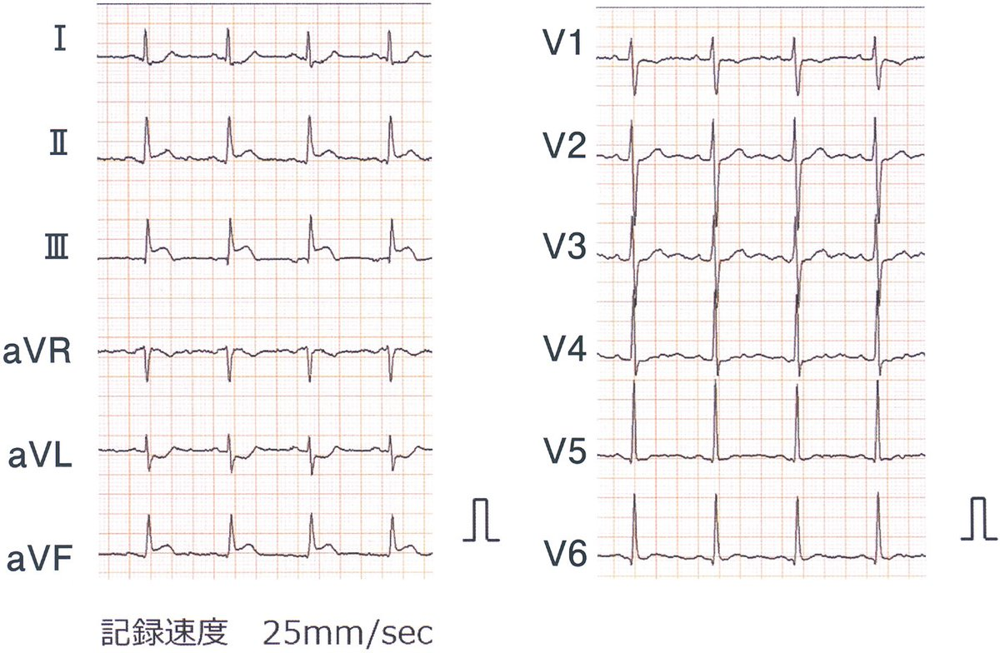
| 選択肢 | 解説 |
|---|---|
| ａ 心臓MRI | 誤り。心臓MRIは心筋の性状（浮腫、線維化、遅延造影による瘢痕）を最も精細に描出できる検査だが、撮像に30〜60分を要し、検査室への移動と、その間モニターから離れることを伴う——本症例は既に心電図でST上昇型心筋梗塞と診断がついており、いま必要なのは「もっと詳しく調べること」ではなく「詰まった血管を1分でも早く開けること」である。時間は心筋である：冠動脈が閉塞してから心筋が不可逆的に壊死するまでの時間は限られており、再灌流が遅れるほど梗塞範囲は広がり、心不全・不整脈・機械的合併症のリスクが上がる。診断が確定した後の追加検査は、それ自体が害になる。心臓MRIが生きる場面：心筋炎・心サルコイドーシス・アミロイドーシス・心筋症の鑑別、心筋生存性の評価、たこつぼ症候群と心筋梗塞の判別——いずれも急性期を脱してから、あるいは冠動脈に有意狭窄がないと分かってから行う。安全上の制約もある：体内金属（一部のペースメーカ・除細動器）、閉所恐怖、腎機能低下時のガドリニウム造影剤。診断がついた後に別の画像検査を挟まない——これが再灌流療法の鉄則である。 |
| ｂ 電気ショック | 誤り。電気ショックの適応がない。本症例は意識清明、脈拍80/分・整、血圧156/80mmHg、SpO2 98％——心電図も洞調律であり、血行動態は安定している——非同期の除細動（defibrillation）が適応となるのは心室細動と無脈性心室頻拍。同期下のカルディオバージョンが適応となるのは、血行動態が不安定な頻拍性不整脈（意識障害、胸痛、心不全、低血圧を伴う心室頻拍・心房細動・心房粗動・上室頻拍）である。ただし警戒は要る：急性心筋梗塞では心室細動が突然起こりうる。とくに発症から数時間以内が最も多く、本症例はまさにその時間帯にいる。だから「電気ショックをする」のではなく「いつでもできるように準備してモニター下に置く」のが正しい構えである——除細動器を近くに置き、静脈路を確保し（既に確保済み）、心電図モニターを装着して搬送する。再灌流性不整脈：PCIで血流が再開した直後に促進性心室固有調律（心拍数60〜120の幅広いQRS）が出ることがあるが、これは再灌流成功のサインであり多くは治療を要さない。「準備すること」と「実施すること」は別である。 |
| ｃ Holter 心電図 | 誤り。Holter心電図は24時間（あるいはそれ以上）記録し、後から解析する検査である。結果が出るのは翌日以降であり、いま目の前で進行している心筋壊死には何の役にも立たない——本来の用途は、発作性の不整脈（動悸・失神の原因検索）、無症候性心筋虚血の検出、そして夜間から早朝に胸痛が起こる冠攣縮性狭心症の診断である。いずれも「症状が出ていないときに、いつ出るかを捕まえる」ための検査である。本症例は逆の状況：症状が今まさに起きており、12誘導心電図でⅡ・Ⅲ・aVFのST上昇とⅠ・aVLの鏡像性ST低下という決定的な所見が既に得られている。捕まえるべきものは、もう捕まっている。いま必要なモニタリング：持続的な心電図モニター（記録して後で見るのではなく、リアルタイムで見張るもの）、非侵襲的血圧測定、SpO2——致死性不整脈と血行動態の破綻を即座に捉えるためである。検査を選ぶ軸：①結果がいつ出るか ②その結果が方針を変えるか。Holter心電図はどちらも満たさない。同じ「心電図」でも、12誘導・モニター・Holterはまったく別の道具である。 |
| ◯ ｄ 冠動脈造影検査 | これが正解。心電図はⅡ・Ⅲ・aVFにST上昇（aVFで最も明瞭）を示し、Ⅰ・aVLにはそれと対をなす鏡像性のST低下と陰性T波を認める——急性下壁心筋梗塞（責任血管は多くの場合、右冠動脈）である。V1〜V6の前胸部誘導はほぼ正常である——症状も典型的で、突然発症した下顎へ放散する胸部絞扼感が持続している。ニトログリセリンの舌下投与で軽減しないことも、可逆的な狭心症ではなく血栓性閉塞であることを支持する。心筋逸脱酵素を待たない：発症から15分しか経っていないため、CK 100U/L・LD 178U/Lはいずれも正常範囲にある。しかしST上昇型と診断された時点で再灌流療法の適応は確定しており、酵素の上昇を待つことは時間の空費にほかならない。「酵素が正常だから心筋梗塞ではない」という推論は、発症早期では成り立たない。冠動脈造影が「次に行うべき対応」である理由：責任病変を同定し、そのまま経皮的冠動脈インターベンションへ移行できる——診断と治療が一続きになる唯一の手段である。目標は病院到着から90分以内のバルーン拡張（door-to-balloon time）。下壁梗塞で必ず確認すること：右側胸部誘導V4Rで右室梗塞の有無を見る。右室梗塞があれば前負荷依存となり、硝酸薬は血圧を急落させうる（本症例では既に舌下投与されているので、血圧の変化に注意が要る）。鏡像変化の存在は、そのST上昇が本物であることを裏づける所見でもある。 |
| ｅ 安静時心筋シンチグラフィ | 誤り。安静時心筋シンチグラフィは放射性医薬品の準備・投与・撮像に時間を要し、核医学室への移動も必要である。診断が既に確定している本症例では、再灌流を遅らせるだけの検査になる——核医学検査の本来の役割は、①安定した患者での虚血の証明と広がりの評価（負荷時に集積低下し安静時に再分布＝可逆性の虚血、両方で欠損＝梗塞） ②心筋生存性の評価 ③心アミロイドーシス（99mTc-ピロリン酸）や交感神経機能（123I-MIBG）の評価であり、いずれも急ぐ場面のものではない。この設問の構造：5つの選択肢のうち4つ（心臓MRI・Holter心電図・心筋シンチグラフィ、そして適応のない電気ショック）は、いずれも「時間を消費するが方針を変えない」ものである。急性期の意思決定では、検査の精度ではなく「その検査結果で次の一手が変わるか」で選ぶ。いま診断は既に足りている：症状（突然発症の絞扼感、下顎への放散、持続）＋心電図（下壁誘導のST上昇と鏡像変化）——ST上昇型心筋梗塞の診断はこの2つで成立する。ここに追加すべき検査はない。急性期に迷ったら「この検査の結果で、私は次に何を変えるか」を自問する。 |
| 選択肢 | 解説 |
|---|---|
| ａ 禁 煙 | 適切な行動。禁煙は、冠動脈疾患の予防において最も効果が大きく、しかも費用がかからない介入である——喫煙は需要と供給の両側から虚血を悪化させる。ニコチンが交感神経を刺激して心拍数と血圧を上げ（需要増）、一酸化炭素がヘモグロビンと結合して酸素運搬能を下げ（供給減）、さらに血管内皮機能障害・LDLの酸化・血小板活性化・HDL低下・冠攣縮の誘発を通じて動脈硬化そのものを進める。効果は速く現れる：禁煙後1年で冠動脈疾患のリスクは約半減し、10〜15年で非喫煙者に近づく。心筋梗塞後の禁煙による予後改善効果は薬物療法に匹敵する。受動喫煙も対象：受動喫煙は冠動脈疾患・脳卒中を増やすため、健康増進法により多くの施設で屋内禁煙が義務づけられている。減煙では不十分で、目標は0本である（1日1本でもリスクは明確に上がる）。支援の枠組み：禁煙外来ではニコチン依存症管理料が算定でき、ニコチンパッチ・ニコチンガム、バレニクリンといった薬物療法と行動療法を組み合わせる。加熱式たばこは害が少ないという証拠はなく、禁煙の代替にはならない。 |
| ｂ 減 塩 | 適切な行動。減塩は血圧を下げ、高血圧を介して冠動脈疾患・脳卒中・心不全・慢性腎臓病のリスクを下げる——日本人の食塩摂取量は世界的に見て多く、その背景には味噌・醤油・漬物・干物・麺類の汁といった食文化がある。高血圧治療における目標は6g/日未満、健康な成人でも男性7.5g/日未満・女性6.5g/日未満が目安とされる。機序：ナトリウムの過剰摂取は細胞外液量を増やして血圧を上げるほか、血管平滑筋の感受性を高め、内皮機能を障害する。食塩感受性には個人差があり、高齢者・肥満・糖尿病・慢性腎臓病では感受性が高いことが多い。減塩以外に血圧を下げる生活習慣：減量、運動、節酒、野菜・果物によるカリウム摂取（腎機能低下例では制限）、禁煙。これらを組み合わせると降圧薬1剤分に相当する効果が得られることもある。公衆衛生としての減塩：個人への指導（ハイリスクアプローチ）だけでなく、加工食品の減塩や外食の表示といった集団への働きかけ（ポピュレーションアプローチ）が有効とされる。減塩は胃癌のリスク低下にも寄与する。血圧を下げることは、心血管疾患の予防で最も確実な介入の1つである。 |
| ｃ 野菜摂取の増加 | 適切な行動。野菜・果物の摂取量が多いほど心血管疾患の発症が少ないことは、多くの疫学研究で一貫して示されている——寄与する成分は複数ある。①カリウム：ナトリウムの排泄を促し血圧を下げる ②食物繊維：胆汁酸を吸着してLDLコレステロールを下げ、食後血糖の上昇を緩やかにする ③葉酸・ビタミン・ポリフェノールなどの抗酸化物質 ④エネルギー密度が低く満腹感が得られるため体重管理にも役立つ。「食品として摂る」ことに意味がある：ビタミンEやβカロテンをサプリメントとして単独で投与しても、心血管イベントは減らないことが大規模試験で示されている。効果は特定の成分ではなく、食事全体のパターンに由来すると考えられる。食事パターンとしての証拠：野菜・果物・全粒穀物・魚・オリーブ油・ナッツを中心とする地中海食は、一次予防でも二次予防でも心血管イベントを減らすことが示されている。DASH食は血圧を下げる。注意点：果物は果糖を含むため過剰摂取は中性脂肪と体重を増やす。腎機能低下例ではカリウム制限が必要になる。ジュースではなく丸ごとの果物が望ましい。「何を減らすか」だけでなく「何を増やすか」も予防の柱である。 |
| ｄ 長時間労働の回避 | 適切な行動。長時間労働は虚血性心疾患と脳卒中のリスクを高める。週55時間以上働く人では、週35〜40時間の人に比べて虚血性心疾患のリスクが有意に高いことが国際機関の解析で示されている——機序は複合的である。睡眠時間の短縮、慢性的なストレスによる交感神経緊張とコルチゾール分泌、身体活動の減少、喫煙・飲酒・不規則で不健康な食事、そして体調不良があっても受診できないこと。日本では制度としても扱われている：脳・心臓疾患の労災認定基準では、発症前1か月におおむね100時間、または発症前2〜6か月間に1か月あたりおおむね80時間を超える時間外労働があれば、業務と発症の関連が強いと評価される（いわゆる過労死ライン）。労働安全衛生法は長時間労働者への医師の面接指導を定めている。職業性ストレスのモデル：要求度が高く裁量度が低い仕事（demand-control model）、努力に見合う報酬が得られない状況（effort-reward imbalance）が、心血管疾患のリスクを上げるとされる。予防医学の視点：個人の努力だけでは変えられない要因なので、労働時間の管理・産業医の関与・職場環境の改善という集団への介入が要る。危険因子は血液検査の数値の中だけにあるのではない。 |
| ◯ ｅ トランス脂肪酸摂取の増加 | これが適切でない＝本問の正解。トランス脂肪酸はLDLコレステロールを上げると同時にHDLコレステロールを下げるという、脂肪酸のなかで唯一といってよい組合せを持ち、冠動脈疾患のリスクを最も強く高める——飽和脂肪酸もLDLを上げるが、HDLは下げない。この「両方向に悪い」という性質のために、トランス脂肪酸は摂取量あたりの害が突出して大きいとされる。どこに含まれるか：主な由来は工業的な部分水素添加油脂——マーガリン、ファットスプレッド、ショートニング、そしてそれらを用いた菓子・パン・揚げ物。ほかに牛・羊などの反芻動物の脂肪や乳製品に天然由来のものが少量含まれる。害の機序：LDL上昇・HDL低下に加え、Lp(a)の上昇、炎症性サイトカインの増加、内皮機能障害、インスリン抵抗性の悪化が報告されている。規制の動き：世界保健機関（WHO）は工業由来トランス脂肪酸の食品供給からの撲滅を各国に求めており、米国をはじめ多くの国が使用を規制している。日本では平均摂取量が比較的少ないとして表示義務化には至っていないが、特定の食習慣を持つ人では過剰になりうる。置き換えるなら：飽和脂肪酸・トランス脂肪酸を多価不飽和脂肪酸（n-3系のEPA・DHA・α-リノレン酸、n-6系のリノール酸）や一価不飽和脂肪酸（オレイン酸）に置き換えると、冠動脈疾患が減る。脂質は「量」だけでなく「質」で評価する。 |
| 選択肢 | 解説 |
|---|---|
| ａ 肺気腫 | 誤り。肺気腫（COPD）は数年をかけて進行する労作時呼吸困難と慢性の咳・痰が主体の疾患であり、「昨日の朝から」という急性の経過をとらない——20本/日を50年間（Brinkman指数1,000）という喫煙歴は確かに強い危険因子だが、身体所見に肺気腫を示すもの——樽状胸郭、呼吸音の減弱、打診での過共鳴音、口すぼめ呼吸、呼気延長——がなく、「呼吸音に異常を認めない」と明記されている。検査所見も合わない：SpO2 98％（room air）・呼吸数18/分と換気は保たれている。胸部エックス線写真にも肺の過膨張所見（横隔膜の平低化、肋間腔の開大、滴状心）の記載はなく、むしろ心胸郭比56％＝心拡大がある。決定的なのは酵素と心電図：CK 450U/L・CK-MB 42U/L（基準20以下）という心筋逸脱酵素の上昇と、V1〜V3のST上昇——肺気腫ではどちらも起こらない。ただし併存はしうる：COPDと虚血性心疾患は喫煙という共通の危険因子を持ち、しばしば合併する。COPDの存在は急性冠症候群の予後を悪化させる。「喫煙歴がある＝肺の病気」と短絡させず、急性の経過と検査所見から考える。 |
| ◯ ｂ 急性冠症候群 | これが正解。決め手は3つある。①12誘導心電図：V1〜V3誘導のST上昇と、Ⅱ・Ⅲ・aVF・V5・V6の鏡像性ST低下＝前壁中隔のST上昇型心筋梗塞 ②心筋逸脱酵素：CK 450U/L（基準30〜140）、CK-MB 42U/L（基準20以下）、AST 71U/L、LD 419U/L（基準176〜353） ③冠危険因子：80歳、高血圧症、2型糖尿病、Brinkman指数1,000の喫煙歴——⚠️注目すべきは、この患者が胸痛を一度も訴えていないことである。訴えは「食欲不振・気分が優れない・冷汗・息苦しさ・熟睡できない」——いずれも狭心症等価症状であり、しかも本人は「大丈夫」と言っている。なぜ痛くないのか：2型糖尿病による自律神経障害（両側アキレス腱反射の低下がその傍証）と加齢により、虚血が痛みとして知覚されない。急性心筋梗塞の2〜3割は典型的胸痛を欠き、その群は受診が遅れるため予後が悪い。検査値の時間関係も整合する：白血球15,000と増多しているのにCRP 0.1mg/dLと正常——白血球は急性心筋梗塞後数時間で上がるがCRPは6〜12時間遅れて上がるので、発症から半日〜1日程度という経過（昨日の朝から）と矛盾しない。連れてきたのは夫である——高齢者の急性冠症候群では、家族が「いつもと違う」と気づくことが受診の入口になる。 |
| ｃ 肺血栓塞栓症 | 誤り。急性肺血栓塞栓症を示す所見がない。SpO2 98％（room air）、呼吸数18/分——低酸素血症も頻呼吸もなく、この2つが揃わない肺血栓塞栓症は考えにくい——危険因子の記載もない。長期臥床、手術、外傷・骨折、悪性腫瘍、長距離移動といった誘因がなく、ADLはほぼ自立している（歩行時に杖が必要だが歩いている）。心電図が決定的に違う：肺血栓塞栓症では急性右心負荷の所見——洞頻脈、SⅠQⅢTⅢパターン、右脚ブロック、右軸偏位、V1〜V3の陰性T波——が現れる。本症例はV1〜V3のST「上昇」であり、これは左室前壁中隔の貫壁性虚血を意味する。酵素も説明できない：CK-MB 42U/Lという明確な心筋由来の酵素上昇は、肺血栓塞栓症では通常みられない。ただしトロポニンは右室の圧負荷により上昇することがあり、重症度と予後の指標として用いられる——「トロポニン上昇＝冠動脈疾患」と決めつけないこと。両側の軽度下腿浮腫について：両側性であり、深部静脈血栓症を示唆する片側性の腫脹・熱感・圧痛とは異なる。心不全や低アルブミン血症（3.6g/dL）、加齢による静脈還流の低下でも生じる。本症例では心電図と心筋逸脱酵素が一貫して左室前壁を指している。 |
| ｄ 甲状腺機能亢進症 | 誤り。甲状腺機能亢進症の所見が揃わない。動悸、体重減少、手指振戦、発汗過多、暑がり、下痢、眼球突出、甲状腺腫といった記載がなく、体温36.0℃で心房細動もない（洞調律）——脈拍100/分の頻脈はあるが、これは急性心筋梗塞に伴う交感神経緊張・苦痛・軽度の心機能低下に対する代償として十分に説明できる。腱反射が逆を指している：甲状腺機能亢進症では深部腱反射は亢進し、弛緩相が速くなる。本症例は「両側アキレス腱反射の低下」——これは糖尿病性の末梢神経障害（下肢遠位から始まる）を示す所見であり、甲状腺機能亢進症とは相容れない。ちなみにアキレス腱反射の弛緩相の遅延は甲状腺機能低下症の所見である。CKの動きも逆：甲状腺機能亢進症ではCKはむしろ低下傾向を示し、上昇するのは甲状腺機能低下症のほうである（ミオパチーによる）。本症例のCK 450・CK-MB 42は心筋由来である。ただし心臓との関わりは深い：甲状腺機能亢進症は心房細動・心不全・狭心症を引き起こしうるので、原因不明の頻脈や心房細動では甲状腺機能を確認する。身体所見の1つ（腱反射）が鑑別を分けることがある。 |
| ｅ 上腸間膜動脈血栓症 | 誤り。上腸間膜動脈閉塞症（急性腸間膜虚血）では、まず突然の激烈な腹痛が起こる。しかもその特徴は「身体所見に不釣り合いなほど強い痛み」——診察では腹部が軟らかいのに患者は激痛を訴える——本症例の腹部は「平坦、軟で、肝・脾を触知しない」とあるだけで、腹痛の訴えそのものが記載されていない。主訴は食欲不振である。進行したときの所見も欠く：腸管壊死に至れば腹膜刺激症状、血性下痢、著明な代謝性アシドーシスと血中乳酸の上昇、ショックが現れる。本症例にこれらの所見はない。塞栓源の観点：上腸間膜動脈塞栓症の最大の原因は心房細動による心内血栓であり、その意味で心疾患と関係が深い鑑別ではある。しかし本症例は洞調律であり、塞栓源として想定される不整脈がない。この選択肢が置かれた理由：「食欲不振」という消化器症状を主訴とする高齢者に対し、消化器疾患を考えるという筋道を試している。しかしCK-MB 42U/LとV1〜V3のST上昇は消化器疾患では説明できない。高齢者の非特異的な訴えでは、消化器と循環器の両方を天秤にかけたうえで、心電図と心筋逸脱酵素で決着をつける。 |
| 選択肢 | 解説 |
|---|---|
| ａ 喫煙歴 | 誤り。喫煙はHbA1cと血糖値の乖離を作る要因ではない——長期の喫煙はインスリン抵抗性を高めて耐糖能を悪化させるため、むしろHbA1cを緩やかに「上げる」方向に働く。しかもそれは数か月単位で進む変化であり、いま起きている「血糖234mg/dLに対しHbA1c 6.2％」という急性の食い違いを説明できない。本症例では既に禁煙している：「喫煙は10年前まで、20本/日を50年間」——Brinkman指数1,000という重い喫煙歴は冠動脈疾患の危険因子として決定的に重要だが、それは今回の心筋梗塞の背景を説明するものであって、HbA1cの解釈とは無関係である。検査値の測定そのものへの影響：喫煙により一酸化炭素ヘモグロビンは増えるが、現在広く用いられているHPLC法や免疫法によるHbA1c測定では通常問題にならない。問いの構造を読む：「乖離の要因」を問われているので、①HbA1cの測定値を実際より低くする病態か、②血糖だけが短期間に跳ね上がる状況か——このどちらかを探す。喫煙歴はどちらにも当たらない。症例文にある目立つ情報が、その設問の答えとは限らない。 |
| ｂ 亜鉛欠乏 | 誤り。亜鉛欠乏はHbA1cを低く見せる病態として知られていない——HbA1cが実際の平均血糖より低く出るのは、①赤血球の寿命が短縮する場合（溶血性貧血、出血、脾機能亢進症、人工弁による機械的溶血）②赤血球の産生が急に亢進して若い赤血球が増える場合（鉄欠乏性貧血・ビタミンB12欠乏・葉酸欠乏の治療開始後、エリスロポエチン投与後）③輸血後、妊娠、透析——いずれも「赤血球がグルコースに曝される時間」が短くなることが本質である。亜鉛欠乏で起こること：味覚障害、皮膚炎、脱毛、創傷治癒の遅延、易感染性、小児では成長障害。高齢者・低栄養・長期の経腸栄養・消化管術後などでみられるが、HbA1cを変動させる機序はない。逆に高く出る病態：未治療の鉄欠乏性貧血（赤血球の寿命が相対的に延びる）、脾摘後、腎不全（カルバミル化ヘモグロビンが測定を妨げる）。「貧血」でも治療の前後で向きが逆になることに注意する。本症例の血算：赤血球404万、Hb 12.4g/dL、Ht 37％——軽度の貧血はあるが、溶血や急性出血を示す所見はない。HbA1cの偽低値は「赤血球寿命の短縮」という1本の軸で整理できる。 |
| ｃ 肝機能障害 | 誤り。そもそも本症例に肝機能障害はない。ASTが71U/Lと上昇しているが、ALT 21U/L・γ-GTP 24U/Lはいずれも正常である——ASTは肝以外に心筋・骨格筋・赤血球にも含まれる酵素で、ALTのほうが肝特異性が高い。本症例ではCK 450U/L・CK-MB 42U/L・LD 419U/Lが同時に上昇しており、このAST上昇は心筋梗塞による心筋由来と考えるのが自然である。「AST優位の上昇」を見たら：心筋梗塞、横紋筋融解症・激しい運動などの筋疾患、溶血（検体の溶血を含む）、アルコール性肝障害を考える。CK・CK-MB・LD・アルドラーゼ、そして溶血の有無を併せて評価する。肝疾患がHbA1cに影響することはある：肝硬変では脾機能亢進による溶血で赤血球寿命が短縮し、HbA1cが実際より低く出る。しかし本症例に肝硬変を示す所見（血小板減少、アルブミン低下、黄疸、腹水）はない——血小板23万、アルブミン3.6g/dLである。この選択肢の狙い：AST 71U/Lという数値だけを見て「肝機能障害がある」と早合点しないかを試している。酵素は必ず組み合わせで読む。1つの検査値だけで臓器を決めない。 |
| ｄ 白血球増多 | 誤り。白血球数はHbA1cの測定値に影響しない。HbA1cは赤血球内のヘモグロビンAがどれだけ糖化されているかの割合であり、白血球はまったく別の細胞である——本症例の白血球15,000は、急性心筋梗塞に伴う反応性の増加である。壊死した心筋への好中球浸潤と、ストレスによるカテコラミン・コルチゾールの分泌が骨髄からの動員を促す。むしろ時間経過の手がかりになる：白血球は心筋梗塞後数時間で上昇し始めるのに対し、CRPは6〜12時間遅れてから上昇する。本症例は白血球15,000でCRP 0.1mg/dLと正常——この乖離は「発症から比較的間もない」ことを示し、「昨日の朝から」という病歴と整合する。白血球増多を見たときの鑑別：感染症、炎症、組織壊死（心筋梗塞・膵炎）、ストレス、ステロイド、喫煙、血液疾患。本症例は体温36.0℃・CRP 0.1mg/dLで感染症を示す所見がない。採血のタイミングを意識する：急性期の検査値は「いま何時か」で意味が変わる。CK、CK-MB、トロポニン、白血球、CRP——それぞれ立ち上がりの時刻が違うので、組み合わせから発症時刻を逆算できる。関係のない検査値を無理に結びつけない。 |
| ◯ ｅ 急激な高血糖 | これが正解。HbA1cは、赤血球の寿命（約120日）のあいだにヘモグロビンAがどれだけ糖化されたかを示す指標であり、過去1〜2か月（とくに直近1か月の寄与が大きい）の平均血糖を反映する。数時間から数日で起きた血糖の変化は、原理的にまだ反映されない——本症例は急性心筋梗塞という強い身体的ストレスにさらされており、カテコラミン・コルチゾール・グルカゴン・成長ホルモンといったインスリン拮抗ホルモンの分泌が増加している。これらは肝での糖新生を促進し、末梢での糖取り込みを抑え、同時に炎症性サイトカインがインスリン抵抗性を高める——結果として血糖が急上昇する（ストレス高血糖）。病歴が裏づけている：既往歴に「2型糖尿病。血糖コントロールは良好であった」と明記されており、HbA1c 6.2％（基準4.6〜6.2）はその良好だった時期の平均血糖を正しく反映している。一方、血糖234mg/dLは「今日この瞬間」の値である。2つの数字は別の時間を見ている。臨床的な意味：急性心筋梗塞における入院時高血糖は、糖尿病の有無にかかわらず死亡率の上昇と関連する予後不良因子である。ただし厳格すぎる血糖管理は低血糖を招いてかえって予後を悪化させるため、目標は概ね140〜180mg/dL程度に留める。「急性期のHbA1cで糖尿病の管理状態を判断するな」ではなく、「HbA1cは過去を、血糖は現在を語る」と理解する。 |
| 選択肢 | 解説 |
|---|---|
| ａ 膝関節症 | 誤り（＝転倒の要因として十分に考えられる）。本症例は変形性膝関節症を既往に持ち、そもそも入院前から歩行に杖を必要としていた。さらに入院中は「変形性膝関節症による痛みでリハビリテーションを十分に施行できず、ほぼベッド上にいる状態」と明記されている——変形性膝関節症は疼痛によって荷重を避けさせ、大腿四頭筋の廃用性萎縮を招く。膝伸展筋力の低下は立ち上がりと片脚支持期の安定性を直接損なうため、高齢者の転倒危険因子として一貫して挙げられている。変形の向きも効く：本邦の変形性膝関節症は内側型が多く内反変形（O脚）をきたす。膝が立脚期に外側へ動揺すること（lateral thrust）で重心が振れ、バランスを崩しやすくなる。痛みそのものも転倒を増やす：疼痛は歩行を慎重・小刻みにさせ、注意を痛みへ向けさせる。夜間にトイレへ急ぐ場面では、この「注意の分配」が破綻しやすい。本症例の場面と直結する：転倒したのは「退院前日の夜間にトイレから病室に戻る際」——暗く、慣れない病棟で、杖を必要とする膝で歩いている状況である。整形外科的な問題は、転倒の背景として真っ先に確認すべき因子である。 |
| ｂ 長期臥床 | 誤り（＝転倒の要因として十分に考えられる）。本症例は集中治療室で1週間、一般病棟でさらに3週間、合計4週間の入院を要し、そのあいだ「ほぼベッド上にいる状態」であった。廃用症候群として説明できる範囲がきわめて広い——安静臥床では筋力が1週間あたり10〜15％、1日あたりおよそ1〜3％の速度で低下し、抗重力筋である下肢近位筋（大腿四頭筋・腸腰筋・殿筋）から先に落ちる。80歳という年齢では、もともとの予備能が少ないぶん、同じ日数でも到達する低下量が深刻になる。筋肉だけの問題ではない：臥床は骨密度を下げ（転んだときの骨折リスクが上がる）、関節拘縮を作り、心肺機能を落とし、循環血漿量を減らして起立耐性を損なう。前庭系・固有感覚も臥床で入力が減り、立位バランスの再獲得が遅れる。だから早期離床が原則になる：急性心筋梗塞の心臓リハビリテーションでも、循環動態が安定すれば発症翌日からの座位・立位・歩行という段階的な負荷が標準である。本症例はそれが疼痛のために達成できなかった。体重44kg・身長155cm：BMI 18.3のやせであり、もともと筋量が乏しくサルコペニアの素地がある。「安静」は無害ではなく、それ自体が高齢者にとって侵襲である。 |
| ｃ 起立性低血圧 | 誤り（＝転倒の要因として十分に考えられる）。起立性低血圧は、立位で臥位より収縮期血圧が20mmHg以上または拡張期血圧が10mmHg以上低下するものと定義され、本症例には成立条件が幾重にも揃っている——①4週間の臥床による循環血漿量減少と圧受容器反射の脱馴化 ②2型糖尿病による自律神経障害（両側アキレス腱反射の低下がその傍証） ③高血圧症に対する降圧薬と、心筋梗塞後に導入されたであろうβ遮断薬・ACE阻害薬・硝酸薬などの血管拡張作用 ④高齢そのものによる圧受容器感受性の低下。時間帯が決定的：転倒したのは夜間である。夜間から早朝は臥位時間が長く血管内容量が偏っており、さらに排尿直後は排尿失神（迷走神経反射）が重なりうる。「夜間にトイレへ起きて倒れる」は、高齢入院患者の転倒として最も典型的な場面のひとつである。予防は具体的にできる：起き上がりを段階的にする（臥位→端座位で数十秒→立位）、弾性ストッキング、夜間の照明とポータブルトイレ、降圧薬の内容と服用時刻の見直し、臥位・立位血圧の実測。血圧は「測った1つの値」ではなく「体位を変えたときの動き」で評価する。 |
| ◯ ｄ 認知機能障害 | これが正解（＝転倒の要因として考えにくい）。一般病棟転棟後に施行したMini-Mental State Examination〈MMSE〉は30点満点中28点である。MMSEは23/24点をカットオフとして認知症を疑う尺度であり、28点は明確に正常範囲にある——つまりこの患者に認知機能障害があるという根拠が、検査の上で否定されている——他の4つの選択肢が症例文の記述に直接裏づけられている（膝関節症＝既往と「痛みでリハビリできない」、長期臥床＝4週間ほぼベッド上、起立性低血圧＝糖尿病・臥床・降圧薬・夜間、糖尿病性神経障害＝両側アキレス腱反射低下）のに対し、認知機能障害だけが「測って否定されている」——この非対称が本問の答えを一意に決めている。出題の意図：高齢者・ICU入室・長期入院と並べば「せん妄」「ICU後症候群による認知機能低下」を反射的に思い浮かべやすい。しかしそこで検査値を確認せずに一般論へ流れると、この設問は落ちる。臨床でも同じことが起きる——「高齢だから認知症だろう」という思い込みは、治せる原因（起立性低血圧、薬剤性、貧血、電解質異常）の見落としにつながる。MMSEの限界も知っておく：教育歴・難聴・視力障害の影響を受け、前頭葉機能や遂行機能の障害は捉えにくい。28点でも軽度認知障害を完全には除外できないが、少なくとも「転倒の主要因」として挙げる根拠にはならない。症例文に検査値がわざわざ置かれているときは、それが答えの鍵になっていることが多い。 |
| ｅ 糖尿病性神経障害 | 誤り（＝転倒の要因として十分に考えられる）。現症に「両側アキレス腱反射の低下を認める」と明記されている。アキレス腱反射の低下は最も長い末梢神経が最初に侵されること（長さ依存性）を意味し、糖尿病性多発神経障害の代表的な身体所見である——糖尿病性神経障害が転倒を増やす経路は3つある。①感覚性——足底の触圧覚・振動覚・位置覚が鈍り、地面からの情報が減って立位バランスの制御が遅れる ②運動性——足関節背屈筋の筋力低下と足趾の変形で躓きやすくなる ③自律神経性——起立性低血圧、無自覚性低血糖、無痛性心筋虚血。本症例では③が現実になっている：この患者は急性心筋梗塞を胸痛なしに発症し、食欲不振と冷汗だけで来院した。自律神経障害による無痛性心筋虚血そのものであり、同じ病態が起立性低血圧としても働く。「振動覚低下なし」をどう読むか：症例文は下肢の振動覚低下がないと述べている。これは神経障害が軽度であることを示すが、アキレス腱反射がすでに両側で低下している以上、障害が存在しないことにはならない。感覚検査は複数の様式を組み合わせて判断する。足の管理も同時に必要：感覚が鈍い足は、傷を作っても気づかない。糖尿病性足病変の予防（フットケア、履物の指導）は転倒予防と同じ診察の中で行える。反射の左右対称な低下は、末梢神経障害を示す静かな所見である。 |
| 選択肢 | 解説 |
|---|---|
| ａ 大動脈弁閉鎖不全症 | 誤り。大動脈弁閉鎖不全症の雑音は、大動脈弁が閉じているべき拡張期に血液が左室へ逆流することで生じる——すなわち拡張期雑音であり、設問が求める収縮期雑音ではない——具体的には第II音の直後から始まって漸減する高調な灌水様雑音（decrescendo diastolic murmur）で、第3〜4肋間胸骨左縁を最強点とし、坐位で前傾させ呼気を止めさせると聴き取りやすくなる。重症例では相対的僧帽弁狭窄によるAustin Flint雑音（心尖部の拡張期ランブル）を伴う。急性心筋梗塞の合併症としても筋が通らない：大動脈弁は冠動脈の支配とは独立した構造であり、心筋の壊死によって大動脈弁が急に閉鎖不全になる機序が存在しない。急性の大動脈弁閉鎖不全症を起こすのは、感染性心内膜炎による弁尖の破壊、Stanford A型大動脈解離による弁輪の支持破綻、外傷である。身体所見の広がり：慢性の大動脈弁閉鎖不全症は脈圧の増大を伴い、Corrigan脈（速脈）、de Musset徴候（拍動性の頭部動揺）、Quincke徴候（爪床の毛細血管拍動）といった末梢徴候を生む。一方、急性発症例では左室が拡張に適応する時間がないため脈圧は開かず、肺水腫が前面に出る。雑音の問題では、まず「収縮期か拡張期か」で候補を半分に減らす。 |
| ｂ 左室自由壁破裂 | 誤り。左室自由壁破裂は、貫壁性梗塞に陥った左室の壁そのものが破れて血液が心膜腔へ噴出する病態である。血液が心腔と心腔のあいだを流れるのではなく心臓の外へ出るため、乱流による雑音は生じない——現れるのは雑音ではなく循環の突然の破綻である：急速に貯留した血液が心タンポナーデを起こし、静脈還流が遮断されて、心電図上は洞調律や心室調律が残っているのに脈が触れない無脈性電気活動（PEA）となる。多くは数分で心停止に至り、死亡率は極めて高い。それでも「3つの破れる合併症」の1つ：心室中隔穿孔・乳頭筋断裂と並ぶ機械的合併症で、発症時期も同じく発症2〜7日目に集中する。壊死心筋が好中球によって融解し、まだ線維化による補強が始まっていない時期にあたる。危険因子は初回の貫壁性梗塞、高齢、女性、高血圧の持続、そして再灌流療法が行われなかったこと。亜急性型もある：破裂孔が血栓や心膜で一時的に塞がれると、心膜腔に仮性心室瘤を形成して数時間〜数日の猶予が生まれる。この場合は心エコーで心嚢液貯留を捉え、緊急手術に持ち込める。治療：心嚢穿刺は一時的な救命手段にすぎず、根治は開胸によるパッチ閉鎖である。「雑音が出る合併症」と「雑音が出ない合併症」を分けて覚える。 |
| ｃ 解離性大動脈瘤 | 誤り。大動脈解離は大動脈の中膜が縦に裂ける疾患であり、心筋梗塞の合併症として発症3日目に突然生じるものではない。因果はむしろ逆で、Stanford A型解離が右冠動脈起始部を巻き込むことで心筋梗塞を「起こす」側になる——この逆方向の因果は臨床的に極めて重要である。大動脈解離を心筋梗塞と誤診して血栓溶解療法や抗凝固療法を行えば、解離腔が拡大して破裂や心タンポナーデを招く。突然の激烈な胸背部痛、左右上肢の血圧差、縦隔陰影の拡大を見たら、再灌流の前に造影CTで否定する。雑音を作るとすれば拡張期：Stanford A型解離が大動脈弁輪の支持を壊すと急性大動脈弁閉鎖不全症を生じるが、これも拡張期雑音であって収縮期雑音ではない。用語の整理：「解離性大動脈瘤」は大動脈解離の古い呼称で、真の動脈瘤（壁全層が拡張したもの）とは別の病態である。現在は「大動脈解離」と呼ぶのが標準。分類と治療：Stanford A型（上行大動脈を含む）は緊急手術、B型（含まない）は合併症がなければ降圧を中心とした保存的治療。分類の基準は「上行大動脈に及ぶか」の一点である。胸痛の鑑別では、心筋梗塞と大動脈解離は治療が正反対になるため必ず両方を思い浮かべる。 |
| ◯ ｄ 心室中隔穿孔 | これが正解。心室中隔穿孔は、梗塞に陥った心室中隔が破れて左室と右室のあいだに交通ができる病態である。収縮期には左室圧（約120mmHg）が右室圧（約25mmHg）をはるかに上回るため、左→右への高速の短絡血流が生じ、これが全収縮期にわたる粗い雑音として聴こえる——雑音の性状：胸骨左縁第3〜4肋間を最強点とする汎収縮期雑音で、しばしば振戦（thrill）を触れる。「振戦を伴う新しい汎収縮期雑音」は心室中隔穿孔を強く示唆する。発症時期が設問と一致する：典型的には発症後2〜7日目。壊死心筋が最も脆くなり、かつ線維化による補強がまだ進んでいない時期である。再灌流療法の普及により頻度は1％未満まで低下したが、いったん起きれば内科的治療のみでの死亡率は90％を超える。好発部位：前下行枝閉塞による前壁中隔梗塞では心尖部寄りの中隔（単純型が多い）、右冠動脈閉塞による下壁梗塞では基部側の中隔（蛇行した複雑型が多く手術が難しい）。血行動態：左→右短絡により肺血流が増え、体血流は減る。右心不全と肺うっ血が併存し、心原性ショックへ進む。治療：大動脈内バルーンパンピングなどで後負荷を下げつつ安定化し、外科的パッチ閉鎖を行う。壊死組織が脆いため縫合が破綻しやすく、手術時期の選択が予後を左右する。梗塞後数日で新しい雑音を聴いたら、まず心エコーである。 |
| ◯ ｅ 乳頭筋断裂 | これが正解。乳頭筋断裂は、僧帽弁を腱索を介して支えている乳頭筋が虚血壊死によって断裂し、弁尖が支持を失って収縮期に左房へ翻転する（flail leaflet）病態である。左室から左房への逆流が収縮期雑音として聴こえる——急性僧帽弁閉鎖不全症である——後内側乳頭筋が圧倒的に多い。前外側乳頭筋が前下行枝と回旋枝の二重支配を受けるのに対し、後内側乳頭筋は後下行枝からの単一支配であり、虚血に対する予備がないからである。したがって下壁梗塞（右冠動脈）で起こりやすい。雑音が小さい・聴こえないことがある：急性の逆流では左房が拡張して適応する時間がなく、左房圧が急峻に上昇するため、左室と左房の圧較差が収縮後期には小さくなる。その結果、雑音は短く（早期収縮期に限局し）、弱くなる。「雑音が目立たないのに劇的な肺水腫」が急性僧帽弁閉鎖不全症の特徴で、雑音の大きさは重症度と相関しない。臨床像：突然の呼吸困難と電撃性肺水腫、心原性ショック。心エコー（とくに経食道）で、断裂した乳頭筋の断端が左房内で揺れる像を捉える。治療：血管拡張薬と大動脈内バルーンパンピングで後負荷を下げて逆流量を減らし、緊急の僧帽弁手術（置換または形成）へ移る。心筋梗塞後に新規の収縮期雑音を聴いたときの2大原因が、心室中隔穿孔と乳頭筋断裂である。 |
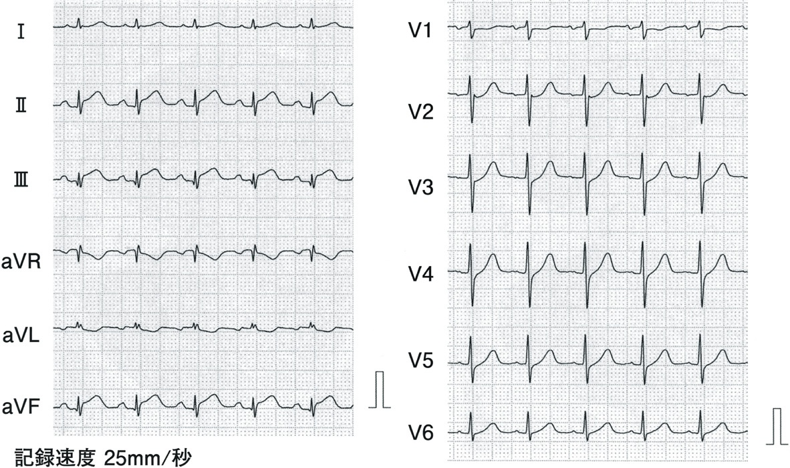
| 選択肢 | 解説 |
|---|---|
| ａ 胸膜炎 | 誤り。胸膜炎の痛みは胸膜性疼痛（pleuritic pain）——深呼吸・咳・体位変換で明らかに増悪する鋭い痛みである。しかし本症例は「呼吸性の痛みの変動および胸部の圧痛はなかった」と、この特徴が明示的に否定されている——症例文がわざわざ「なかった」と書く所見は、鑑別を絞るために置かれている。呼吸性変動の否定は胸膜炎・心膜炎・肺塞栓症を、圧痛の否定は肋軟骨炎・肋間神経痛・外傷といった胸壁由来の痛みを、それぞれ後方へ退ける。他の所見とも合わない：体温36.5℃で発熱がなく、呼吸音に異常を認めず（胸膜摩擦音がない）、SpO2 99％と酸素化も保たれている。胸膜炎であれば背景に肺炎・膠原病・悪性腫瘍・肺塞栓症などの原因疾患があるはずだが、既往歴に特記事項がない。そして決定的なのは心電図：提示された心電図はⅡ・Ⅲ・aVF誘導にST上昇を示し、Ⅰ・aVL誘導には鏡像性のST低下を伴う。この「限局した誘導のST上昇＋対側誘導の鏡像変化」というパターンは冠動脈の1本が閉塞したことを意味し、胸膜炎では決して生じない。心膜炎との区別も同じ論理で付く——心膜炎のST上昇は広範な誘導におよび、鏡像変化を伴わない。 |
| ◯ ｂ 急性冠症候群 | これが正解。心電図がⅡ・Ⅲ・aVF誘導のST上昇を示し、Ⅰ・aVL誘導に鏡像性のST低下を伴っている——急性下壁心筋梗塞である。これに74歳という年齢、突然発症、咽頭部への放散、冷汗という所見が揃えば、急性冠症候群以外の診断はない——ST上昇が特定の解剖学的領域（下壁＝Ⅱ・Ⅲ・aVF）に限局し、その対側の誘導（Ⅰ・aVL）にST低下が現れることを「鏡像変化（reciprocal change）」と呼ぶ。これは1本の冠動脈が閉塞して壁全層が虚血に陥ったことの強い証拠で、心膜炎のようなびまん性の病変では生じない。症状の読み方：「咽頭部に放散する前胸部全体の痛み」——指1本で示せる限局痛ではなく胸部全体に広がる痛み、そして下顎・咽頭・左肩・左腕への放散は、内臓求心路の収束投射による関連痛であり心筋虚血に特徴的である。冷汗は交感神経の強い活性化を示し、急性冠症候群の重症度と関連する。看護師の判断も情報になっている：「症状を聞いた看護師が重篤な状態と判断し、直ちに救急室に搬入した」——胸痛のトリアージが正しく機能した経過である。時間の意味：発症は午前7時45分、来院は午前8時15分。発症から30分の超急性期であり、この時点では心筋逸脱酵素も心筋トロポニンもまだ上昇しない。診断を担えるのは心電図だけである。ST上昇型心筋梗塞と判断した時点で、再灌流療法へ向けて時計が動き始める。 |
| ｃ 上室性頻拍 | 誤り。上室性頻拍は文字どおり頻拍——通常は毎分150〜250回の規則正しい頻拍発作である。本症例の脈拍は92/分・整であり、提示された心電図も洞調律で、各QRS波の前に先行するP波が一定のPQ間隔で存在している——心電図でST上昇が明瞭に読み取れること自体が、心拍数が十分に遅いことの傍証でもある。毎分200回近い頻拍ではP波はT波に埋もれ、ST部分の評価そのものが困難になる。上室性頻拍の臨床像：房室結節リエントリー性頻拍（AVNRT）や房室リエントリー性頻拍（AVRT）では、突然始まり突然終わる動悸が主訴となる。「胸痛」ではなく「動悸」であり、頸部の拍動感（frog sign）を伴うことがある。血行動態が保たれていれば迷走神経刺激手技（Valsalva法、頸動脈洞マッサージ）、次いでアデノシン三リン酸の急速静注で停止させる。虚血との関係：頻拍が続くと拡張期が短縮して冠灌流が減り、同時に心筋酸素需要が増えるため、二次的にST低下を生じることはある。しかしそれはST低下であって、限局した誘導のST上昇＋鏡像変化ではない。本症例の脈拍92をどう見るか：下壁梗塞では迷走神経反射（Bezold-Jarisch反射）によって徐脈になることも多い。92/分は正常上限であり、痛みと交感神経緊張を反映していると読める。心電図を見るときは、まず調律とレートを確認してからST部分へ進む。 |
| ｄ 肺血栓塞栓症 | 誤り。肺血栓塞栓症は本症例で説明できない所見が多すぎる。SpO2 99％（room air）と酸素化が完全に保たれ、呼吸数18/分と頻呼吸もなく、呼吸音に異常を認めず、「呼吸性の痛みの変動」も否定されている——肺血栓塞栓症の典型は突然の呼吸困難・頻呼吸・低酸素血症・胸膜性胸痛であり、頻脈と頸静脈怒張を伴うことが多い。既往歴・生活歴に特記事項がなく、長期臥床・手術・悪性腫瘍・下肢静脈瘤・経口避妊薬といった危険因子の記載もない。心電図所見が決定的に違う：肺血栓塞栓症で見られるのは洞性頻脈（最も多い）、S1Q3T3パターン、右脚ブロック、V1〜V4の陰性T波といった右心負荷所見である。Ⅱ・Ⅲ・aVFのST上昇＋Ⅰ・aVLの鏡像性ST低下という冠動脈支配領域に沿った変化は起こさない。それでも鑑別に挙げ続ける理由：胸痛の初期診療では「見逃すと死ぬ5疾患」——急性冠症候群、大動脈解離、肺血栓塞栓症、緊張性気胸、食道破裂——を常に並べる。本症例でも、次の設問で示される検査ではDダイマー0.7μg/mL（基準1.0以下）と陰性であり、除外が裏づけられている。Dダイマーの使い方：感度は高いが特異度が低い。臨床的な事前確率が低〜中等度のときに「陰性で除外する」ために使う検査であり、陽性でも診断は付かない。鑑別疾患は挙げるだけでなく、どの所見でどう除外したかまで言語化する。 |
| ｅ 完全房室ブロック | 誤り。提示された心電図は洞調律であり、P波とQRS波が一定のPQ間隔で対応している。完全房室ブロックであれば、P波とQRS波はそれぞれ独立した周期で出現し、両者に一定の関係がない（房室解離）——この所見は認められない——完全房室ブロックでは心房は洞結節のリズム（毎分60〜100回）で、心室は補充調律（房室接合部なら毎分40〜60回で幅の狭いQRS、心室性なら毎分20〜40回で幅の広いQRS）で別々に動く。本症例の脈拍は92/分であり、補充調律の範囲を明らかに超えている。ただし無関係な選択肢ではない：下壁梗塞では房室ブロックがしばしば合併する。右冠動脈が房室結節枝を約90％の症例で出しているためで、加えて下壁の虚血は迷走神経反射（Bezold-Jarisch反射）を誘発して徐脈と房室伝導遅延をもたらす。つまり本症例は今後、経過中に房室ブロックを起こしうる立場にある。部位で予後が違う：下壁梗塞に伴う房室ブロックは房室結節レベルで起こり、QRS幅が狭く、アトロピンに反応し、多くは一過性で予後は良い。一方、前壁中隔梗塞に伴う房室ブロックはHis束以下の広範な壊死を意味し、QRS幅が広く、アトロピンが無効で、恒久的ペースメーカを要することが多く予後不良である。本問で問われているのは「最も可能性が高いもの」：合併しうる不整脈ではなく、この胸痛と心電図を統一的に説明する診断名を選ぶ。房室ブロックは診断名というより、下壁梗塞の帰結として警戒しておく所見である。 |
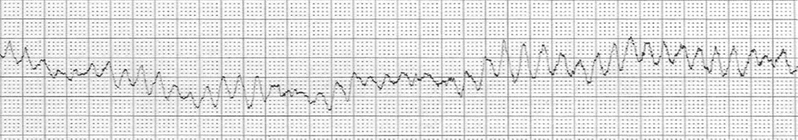
| 選択肢 | 解説 |
|---|---|
| ａ ニトログリセリン静注 | 誤り。この患者は「呼吸は停止しており脈を触れない」——心停止である。ニトログリセリンは静脈系を中心に血管を拡張させて前負荷を下げる薬であり、循環が止まっている患者に投与しても、薬を運ぶ血流そのものが存在しない——それどころか有害である。心停止からの蘇生では、胸骨圧迫によってわずかに生み出された血流を冠動脈と脳へ回すために体血管抵抗を保つ必要がある。血管拡張薬はこれを下げ、冠灌流圧をさらに低下させる。蘇生中に投与するのが血管収縮薬であるアドレナリンなのは、まさに逆の理由による。ニトログリセリンの正しい位置：意識と血圧が保たれている虚血性胸痛に対して、前負荷軽減による心筋酸素需要の減少と冠攣縮の解除を狙って用いる。禁忌は収縮期血圧90mmHg未満、右室梗塞、高度大動脈弁狭窄症、閉塞性肥大型心筋症、24〜48時間以内のPDE5阻害薬服用。本症例では既に投与を検討する段階を過ぎている：「緊急処置の準備中、突然、うめき声とともに意識消失」——急性冠症候群の患者が院内で心停止したという場面である。優先順位は診断も薬も飛び越えて、質の高い胸骨圧迫と除細動になる。脈がない患者に対する処置は、脈がある患者に対する処置とはまったく別の体系である。 |
| ｂ アドレナリン静注 | 誤り（＝この時点では優先されない）。アドレナリンは心停止の蘇生に確かに用いる薬だが、投与すべき順番がこの場面では後になる。モニター心電図が示すのは、基線が不規則に大きくうねり、識別可能なQRS波がまったく存在しない波形——心室細動である。心室細動は「ショック適応リズム」であり、アルゴリズムはまず電気ショックを求める——アドレナリンを投与するのは、1回目の電気ショックで心室細動が停止しなかったあと、2回目のショック前後からである（3〜5分ごとに1mgを反復）。α作用による血管収縮で末梢血管抵抗を上げ、胸骨圧迫が生み出す血流を冠動脈と脳へ振り向けることが目的である。心静止・無脈性電気活動では逆：これらはショック非適応リズムなので、除細動は行わずアドレナリンをできるだけ早く投与する。「リズムを見てから道が分かれる」ことが二次救命処置の骨格である。時間が最も重要な理由：心室細動に対する除細動は1分遅れるごとに救命率が7〜10％低下する。薬剤の準備に時間を使うあいだにも救命率は落ちていく。除細動器が目の前にある院内で、薬を先に選ぶ理由はない。投与経路：末梢静脈路が第一選択。確保できなければ骨髄路を用いる。正しい薬でも、正しい順番でなければ患者を救えない。 |
| ｃ アミオダロン静注 | 誤り（＝この時点では優先されない）。アミオダロンはIII群抗不整脈薬で、心停止の蘇生においては「難治性の」心室細動・無脈性心室頻拍に用いる。すなわち電気ショックを反復しても停止しない場合の上乗せであり、最初の一手ではない——標準的なアルゴリズムでは、3回目の電気ショックのあとにアミオダロン300mgを静注し、必要なら150mgを追加する。目的は除細動閾値を下げて次のショックを成功させやすくすることであり、アミオダロン単独で心室細動を止めるわけではない。代替としてニフェカラント、リドカインが用いられる。薬より電気が優る理由：心室細動は心室筋が無秩序に興奮し続けている状態で、これを一斉に脱分極させて洞結節に主導権を取り戻させるには電気ショックが最も確実かつ即効性がある。薬剤は循環がほぼ止まった状態では心筋へ到達するのに時間がかかる。心停止後の使い方：自己心拍が再開したあとに心室性不整脈が反復する場合は、アミオダロンの持続投与を行うことがある。長期使用では間質性肺炎、甲状腺機能異常（ヨードを含む）、肝障害、角膜色素沈着といった特徴的な副作用に注意する。本症例の背景：急性心筋梗塞の超急性期は最も心室細動が起きやすい時間帯であり、虚血そのものの解除（再灌流）が根本治療になる。「ショック → CPR2分 → ショック → アドレナリン → ショック → アミオダロン」の骨格を押さえる。 |
| ｄ アトロピン静注 | 誤り。アトロピンは副交感神経のムスカリン受容体を遮断して洞結節の自動能と房室伝導を高める薬であり、適応は「脈がある徐脈」である。心停止の患者に用いる薬ではない——かつては心静止や徐脈性の無脈性電気活動に対してアトロピンが推奨されていたが、有効性を支持する証拠が得られなかったため、2010年のガイドライン改訂で心停止アルゴリズムから削除された。現在の心停止で用いる薬はアドレナリンと、難治性のショック適応リズムに対する抗不整脈薬である。アトロピンの現在の適応：症候性徐脈（意識障害、胸痛、低血圧、急性心不全を伴う徐脈）に対して0.5mgを静注し、必要なら3mgまで反復する。効果がなければ経皮ペーシング、ドパミンやアドレナリンの持続投与へ進む。効かない徐脈がある：房室結節より下位のブロック（Mobitz II型、幅の広いQRSを伴う完全房室ブロック）ではアトロピンは無効で、かえって心房レートだけを上げて伝導比を悪化させることがある。心移植後の心臓も迷走神経支配を失っているため無効である。副作用：口渇、散瞳、尿閉、せん妄——閉塞隅角緑内障と前立腺肥大症では注意を要する。「脈があるか」を確認することが、あらゆる救急アルゴリズムの分岐点である。 |
| ◯ ｅ 電気ショック | これが正解。提示されたモニター心電図は、振幅と周期がまったく不規則に揺れ続け、P波・QRS波・T波のいずれも識別できない波形である——心室細動（VF）である。そして患者は「呼吸は停止しており脈を触れない」。無脈性のショック適応リズムに対する唯一の根治的処置が電気ショック（除細動）である——心室細動では心室筋の各部分が無秩序にリエントリーを繰り返し、協調した収縮が失われている。除細動は心筋全体を一度に脱分極させて興奮の渦を消去し、洞結節に主導権を取り戻させる。薬剤にはこれを代替する手段がない。1分が7〜10％：除細動が1分遅れるごとに救命率は7〜10％低下する。胸骨圧迫が行われていれば低下は緩やかになるが、それでも時間との勝負であることは変わらない。だから「除細動器が来たら、他のすべてに優先して充電し、ショックする」。実施の要点：二相性なら120〜200J（機種の推奨に従う）。ショック直後は脈拍確認をせず、ただちに胸骨圧迫を再開して2分間続けてからリズムを確認する（ショック後しばらくは心拍出量が回復しないため）。胸骨圧迫の中断時間を最小にすることが救命率を左右する。なぜ心筋梗塞で心室細動が起きるのか：虚血心筋では静止膜電位が浅くなり、伝導が遅れ、不応期が場所ごとにばらつく——リエントリーが成立する条件がそろう。発症からの数時間が最も危険で、院外心停止の主要な原因である。本症例は院内で発症しており、直ちに除細動すれば救命の可能性が高い。 |
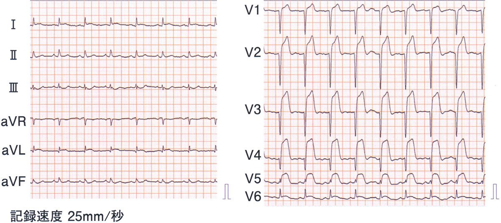
| 選択肢 | 解説 |
|---|---|
| ａ 酸素投与 | 誤り（＝初期対応として適切である）。本症例のSpO2は94％（room air）で、正常値をわずかに下回っている。加えて奔馬調律（III音ギャロップ）を聴取しており、左室充満圧の上昇＝軽度の心不全が始まっていることを示す。酸素化が保てなくなる可能性のある患者に酸素を用意することは、初期対応として妥当である——ただし考え方は変わってきている。かつては急性心筋梗塞のすべての患者にルーチンで酸素を投与していたが（MONA：Morphine, Oxygen, Nitrate, Aspirin）、低酸素血症のない患者への酸素投与は、冠血管を収縮させ活性酸素を増やして梗塞範囲をむしろ拡大する可能性が示された。現在はSpO2 90％（あるいは94％）未満を目安に投与し、過剰な高酸素は避けるのが原則である。本症例では境界域にある：SpO2 94％・呼吸数20/分・奔馬調律という組み合わせは、これから悪化しうる患者像である。投与を「適切でない」と切り捨てる根拠にはならない。MONAの現在：モルヒネも慎重になった（消化管運動を抑えてP2Y12受容体拮抗薬の吸収を遅らせる）。一方でアスピリンの早期投与だけは一貫して死亡率を下げる。「昔からやっている」ことと「今も推奨される」ことは別で、酸素はその典型例である。 |
| ｂ 硝酸薬投与 | 誤り（＝初期対応として適切である）。硝酸薬（ニトログリセリン）は虚血性胸痛に対する標準的な初期対応である。静脈系を拡張させて前負荷を下げ、左室壁応力を減らして心筋酸素需要を下げる。同時に冠動脈を拡張させて、側副血行を含む供給を改善する——本症例は血圧160/94mmHgと高値であり、後負荷を下げる余地が十分にある。さらに奔馬調律という左室充満圧上昇の所見があるため、前負荷軽減は肺うっ血の予防としても理にかなう。持続する胸痛に対する対症療法としても第一選択である。ただし禁忌の確認が必須：①収縮期血圧90mmHg未満 ②右室梗塞（前負荷依存の循環なので、下げると一気にショックになる）——下壁梗塞ではV4Rを撮って確認する ③24〜48時間以内のPDE5阻害薬（シルデナフィルなど）の服用——併用で致死的な低血圧を起こす ④高度大動脈弁狭窄症、閉塞性肥大型心筋症。本症例の心電図は前壁中隔の梗塞：V1〜V4を中心とした著明なST上昇であり、右室梗塞の懸念は下壁梗塞の場合より小さい。血圧も十分に保たれている。限界も知っておく：硝酸薬は症状を和らげるが、予後を改善する薬ではない。胸痛が消えても、閉塞した冠動脈を開ける必要はまったく変わらない。症状の緩和と再灌流は別の仕事であり、前者で満足してはいけない。 |
| ｃ 静脈路確保 | 誤り（＝初期対応として適切である）。静脈路の確保は、急性冠症候群を疑ったすべての患者に対する初期対応の基本である。理由は3つある。①薬剤の投与経路を先に作っておく（硝酸薬、鎮痛薬、抗血栓薬、そして心停止時のアドレナリン） ②急変してから確保しようとしても、循環が破綻した後では血管が虚脱して困難になる ③採血を同時に行える——とくに本症例のように前胸部誘導に広範なST上昇を認める患者は、これから緊急の冠動脈造影とPCIへ進む。造影剤と薬剤の投与に確実な静脈路が要る。「準備」は治療の一部である：心電図モニター、除細動器、酸素、静脈路——これらは何も起きていないうちに揃えておくもので、起きてから揃えるものではない。急性心筋梗塞の初期は心室細動が最も起こりやすい時間帯であり、備えの有無が生死を分ける。採血で何を測るか：心筋トロポニン（ただし発症30分ではまだ陰性のことがある）、CK・CK-MB、血算、腎機能（造影剤とPCI後の管理に必要）、電解質、凝固能。ただし結果を待ってから再灌流を決めるのではない——ST上昇型心筋梗塞の診断は心電図で完結する。本症例の状況：糖尿病の教育入院中で、退院予定日の午前4時という時間帯である。院内であることは大きな利点で、そのぶん初動を速くできる。侵襲の小さい準備行為は、迷ったら先にやっておく。 |
| ◯ ｄ アトロピン投与 | これが正解（＝初期対応として適切でない）。アトロピンは副交感神経のムスカリン受容体を遮断して心拍数を上げる薬であり、適応は症候性の徐脈である。しかし本症例の心拍数は104/分——頻脈であって徐脈ではない。適応がまったく存在しない——それどころか有害である。心筋の酸素需要は主に心拍数・心収縮力・壁応力で決まる。心拍数を上げれば需要が増えるだけでなく、冠動脈が灌流される拡張期の時間が短縮するため供給も減る。需要と供給の両方を悪い方向へ動かすことになり、梗塞範囲の拡大を招く。心電図が示す病態：V1からV4にかけて著明なST上昇（墓石状に立ち上がる部分もある）を認め、V5・V6にも及んでいる——広範前壁（前壁中隔）の急性心筋梗塞である。前下行枝近位部の閉塞が疑われ、左室の広い範囲が危機に瀕している。頻脈と奔馬調律の意味：心拍数104/分・SpO2 94％・III音ギャロップは、広範な心筋を失って心拍出量を代償している状態を示す。この患者に必要なのは心拍数を「上げる」ことではなく、むしろβ遮断薬などで需要を「下げる」こと、そして何より一刻も早い再灌流である。下壁梗塞なら話が違った：Ⅱ・Ⅲ・aVFのST上昇に洞性徐脈や房室ブロックを伴う形であれば、Bezold-Jarisch反射や房室結節枝の虚血による徐脈としてアトロピンの適応になりうる。本症例はその形ではない。薬の適応は病名ではなくバイタルサインで決まる——心拍数を確認せずに徐脈の薬を選んではいけない。 |
| ｅ 心電図モニター装着 | 誤り（＝初期対応として適切である）。急性心筋梗塞の発症直後は、心室細動が最も起こりやすい時間帯である。心電図モニターを装着して監視下に置くこと、そして除細動器をすぐ使える場所に用意しておくことは、初期対応の最優先事項のひとつである——虚血心筋では静止膜電位が浅くなって伝導が遅れ、不応期が場所ごとにばらつく。この「遅い伝導」と「不応期の不均一性」がリエントリーを成立させ、心室細動を生む。院外心停止の主要な原因がこれであり、逆に院内で監視下に起これば除細動によって救命できる。モニターが見るのは不整脈だけではない：ST部分の推移を追うことで、再灌流が得られたか（ST上昇が50％以上低下したか）、あるいは再閉塞していないかを連続的に判断できる。心拍数の変化は自律神経の状態と心不全の進行も映す。合併症の早期発見：前壁中隔梗塞ではHis束以下の伝導障害（右脚ブロック、左脚前枝ブロック、進行して完全房室ブロック）が起こりうる。これは広範な壊死を意味し予後不良のサインで、経皮ペーシングや一時的ペーシングの準備を促す。本症例は病棟にいる：糖尿病の教育入院中に午前4時発症——スタッフに訴えた時点で監視下に入れる。これは院外発症より圧倒的に有利な条件である。「見ていること」自体が治療になる場面が、急性心筋梗塞の初期である。 |
| 選択肢 | 解説 |
|---|---|
| ａ 左乳房付近の痛み | 誤り。「左乳房付近の痛み」——指1本で示せるような限局した心尖部付近の痛みは、むしろ非虚血性の胸痛を示唆する所見である。心筋虚血の痛みは境界の不明瞭な、胸部全体に広がる圧迫感・絞扼感・重苦しさとして表現され、患者はしばしば手のひらや握りこぶしを胸に当てて示す（Levine徴候）——この違いは痛みの伝わり方から説明できる。心筋虚血の痛みは自律神経系の内臓求心路を通る内臓痛であり、皮膚のように場所を特定できない。一方、指で示せる鋭い限局痛は体性感覚神経が担う体性痛で、胸壁・皮膚・壁側胸膜など体表に近い構造に由来する。心尖部の痛みで考えるもの：肋軟骨炎（Tietze症候群を含む）、肋間神経痛、心臓神経症・不安障害、そして左乳房の疾患。いずれも生命を脅かすものではないが、「左胸だから心臓」と患者も医師も思い込みやすい部位である。本症例では該当しない：この患者の痛みは前胸部全体の絞扼感として現れ、心電図で前胸部の広範なST上昇、心筋トロポニンT迅速検査陽性——虚血の証拠が揃っている。痛みの「場所」より「性状と広がり」の方が鑑別に効く。 |
| ｂ 飲水で増悪する痛み | 誤り。飲水や嚥下によって変動する胸痛は、食道に由来する痛みを示唆する。冠動脈の血流が飲水で変わることはないので、この情報は心筋虚血の診断にとって有用ではない——むしろ虚血から遠ざける情報である——食道性胸痛は虚血性胸痛と紛らわしいことで有名である。胃食道逆流症では胸骨後部の灼熱感が食後や臥位で増悪し、びまん性食道痙攣では嚥下時の絞扼感が起きる。困ったことに、食道痙攣は硝酸薬やカルシウム拮抗薬で軽快する——「ニトログリセリンで良くなったから狭心症だ」という推論が成り立たない理由である。逆に食道破裂は見逃せない：特発性食道破裂（Boerhaave症候群）は激しい嘔吐に続く突然の胸背部痛で、縦隔気腫・皮下気腫・胸水を伴い、致死率が高い。killer chest painの1つとして常に鑑別に置く。本症例の情報とも合わない：起床時に発症し、10分経っても改善せず、冷汗が著明で搬送中に悪心——食事や嚥下との関連を示す記載は一切ない。問われていること：本問は「この患者に何が起きているか」ではなく「診断に有用な情報はどれか」を問う。すでに心電図とトロポニンで診断はほぼ確定しており、問われているのは病歴聴取の質そのものである。何を聞けば確からしさが動くのか——それを知っていることが病歴聴取の技術である。 |
| ◯ ｃ 下顎へ放散する痛み | これが正解。下顎への放散痛は、心筋虚血に特徴的な関連痛のひとつである。心臓からの内臓求心路は交感神経を介してT1〜T4（一部はC3〜C5）の脊髄後角へ入り、そこで同じ髄節に入る体性感覚線維と同一の二次ニューロンに収束する。脳はこの入力の出どころを区別できないため、同じ髄節が支配する体表——下顎、頸部、肩、左腕の尺側、心窩部——の痛みとして知覚する——疫学的にも裏づけられている。胸痛患者において「腕・肩・下顎への放散」は急性心筋梗塞の陽性尤度比を明確に上げる病歴項目であり、とくに両腕への放散、および下顎・頸部への放散は有用性が高い。本症例で確認できる：56歳男性、起床時発症で10分経っても改善しない胸痛、著明な冷汗、搬送中の悪心。危険因子は喫煙20本×36年（Brinkman指数720）、未治療の高血圧と高血糖、肥満、そして兄が48歳で心筋梗塞死という家族歴——きわめて高リスクである。放散痛を知らないと診断を逃す：「歯が痛い」「肩がこる」「胃が痛い」として歯科や整形外科を受診し、心筋梗塞が見逃される例は現実にある。とくに下壁梗塞では心窩部痛と悪心・嘔吐が前面に出て、急性胃腸炎と誤られやすい。本症例はすでに重症化している：両側肺下部のcoarse cracklesは肺うっ血——Killip分類II度に相当する。放散の有無は、余分な検査をせずに事前確率を大きく動かせる数少ない情報である。 |
| ｄ 吸気時に増悪する痛み | 誤り。吸気時に増悪する痛み（胸膜性疼痛）は、壁側胸膜あるいは心膜の炎症を示唆する。心筋虚血の痛みは呼吸で変動しないので、この情報は虚血の診断には有用でない——呼吸性変動で考えるべき疾患：急性心膜炎（前傾坐位で軽快し臥位で増悪、心膜摩擦音、広範な誘導の上に凹のST上昇＋PR低下）、胸膜炎、肺炎、気胸、そして肺血栓塞栓症（末梢の梗塞が胸膜に達すると胸膜性疼痛となる）。心膜炎との鑑別が実務上重要：心筋梗塞と心膜炎はどちらもST上昇を示すが、治療が正反対に近い。心膜炎と誤って抗血栓療法を行えば心嚢内出血の危険があり、逆に心筋梗塞を心膜炎と誤れば再灌流の機会を失う。鑑別点は、ST上昇が冠動脈支配領域に限局するか広範か、鏡像変化があるか、PR低下があるか、痛みが体位と呼吸で変動するか。心筋梗塞後の心膜炎もある：貫壁性梗塞に伴う早期心膜炎（発症2〜4日）と、自己免疫機序によるDressler症候群（数週後）。梗塞後に呼吸性変動を伴う胸痛が出たら、これらを考える。本症例では否定される：心電図は前胸部の広範なST上昇、トロポニンT陽性、肺下部のcoarse crackles——虚血と心不全の像であり、心膜炎の所見ではない。「呼吸で変わるか」は、聞くだけで鑑別が動く最も費用対効果の高い質問のひとつである。 |
| ｅ 衣類が触れた際の痛み | 誤り。衣類が触れただけで痛むのは、本来なら痛みを起こさない刺激が痛みとして知覚される状態＝アロディニア（allodynia）であり、皮膚と末梢神経の障害を示す。心筋虚血の痛みは深部の内臓痛であり、体表への接触では変化しない——この所見で真っ先に考えるのは帯状疱疹である。皮疹が出る数日前から神経支配領域（デルマトーム）に一致した痛みと違和感が先行するため、皮疹が出るまでは胸痛の原因が分からず、狭心症・心筋梗塞・胆石症などと誤られることがある。皮膚をよく観察し、片側性でデルマトームに沿うことを確認する。他に考えるもの：肋間神経痛、胸壁の外傷や肋骨骨折（圧痛を伴う）、開胸術後の肋間神経障害、糖尿病性の胸腹部神経根症。触診が診断を変える：胸壁に圧痛があり、押して患者の訴える痛みが再現されるなら、胸壁由来の可能性が大きく上がる。ただし「圧痛があるから心筋梗塞ではない」と言い切ることはできない——急性冠症候群の患者の一部にも胸壁圧痛は存在するため、あくまで確率を動かす情報として扱う。本症例では該当しない：皮疹の記載はなく、痛みは前胸部全体の絞扼感で冷汗と悪心を伴い、心電図とトロポニンが虚血を裏づけている。皮膚に現れる病気は、服を脱がせて見なければ分からない。 |
| 選択肢 | 解説 |
|---|---|
| ａ テタニー | 誤り。テタニーは、神経筋の興奮性が異常に亢進して手足の筋がけいれん性に強直する状態であり、その本態は細胞外のイオン化カルシウム濃度の低下である。心原性ショックそのものがテタニーを起こす機序はない——典型は助産師の手位（carpopedal spasm）で、母指が内転して手指が伸展した特徴的な肢位をとる。誘発試験としてChvostek徴候（顔面神経の叩打で口角がひきつる）とTrousseau徴候（血圧計のカフを収縮期血圧以上で3分加圧すると手位が出る）がある。原因：副甲状腺機能低下症（甲状腺手術後を含む）、ビタミンD欠乏、慢性腎臓病、急性膵炎、大量輸血（クエン酸によるカルシウムのキレート）、そして過換気による呼吸性アルカローシス（pHが上がるとカルシウムがアルブミンへ結合してイオン化分画が減る）。本症例の電解質：Na 130mEq/L、K 4.4mEq/L、Cl 97mEq/L。カルシウムの記載はなく、低カルシウム血症を疑わせる背景（副甲状腺疾患、膵炎、大量輸血）も存在しない。紛らわしい状況はある：ショックで不安と呼吸困難が強まれば過換気になりうるが、本症例の呼吸数は20/分にとどまる。ショックの身体所見は循環の代償機転から導く——電解質異常の所見をここへ持ち込まない。 |
| ｂ 口唇の腫脹 | 誤り。口唇の腫脹は血管性浮腫（angioedema）の所見であり、真皮深層から皮下・粘膜下に急速に生じる限局性の浮腫である。心原性ショックでは生じない——2つの機序がある。①ヒスタミン介在性——I型アレルギー（食物、薬剤、昆虫刺傷）に伴い、蕁麻疹・掻痒を伴うことが多く、アドレナリン・抗ヒスタミン薬・ステロイドが効く ②ブラジキニン介在性——ACE阻害薬による血管性浮腫（ブラジキニンの分解が阻害される）と遺伝性血管性浮腫（C1インヒビター欠損）。こちらは蕁麻疹を伴わず、抗ヒスタミン薬もステロイドも効かない。臨床上の重み：口唇・舌・咽頭に及べば気道閉塞となるため、気道確保の判断が最優先になる。アナフィラキシーであればアドレナリン0.3〜0.5mgの大腿外側への筋肉内注射が第一選択である。ショックの型が違う：アナフィラキシーショックは血液分布異常性ショックで、末梢血管が拡張するため皮膚は温かく紅潮する。本症例のような心原性ショック（末梢血管が収縮して四肢が冷たい）とは所見が正反対になる。本症例の背景：「アレルギーの既往歴はない」「常用薬はない」と明記され、ACE阻害薬も服用していない。ショックを見たら、まず「四肢は冷たいか温かいか」で大きく2つに分ける。 |
| ｃ 皮膚の紅潮 | 誤り。皮膚の紅潮は末梢血管が拡張していることを意味し、心原性ショックで起きる末梢血管収縮とは正反対の所見である——紅潮を伴うショックは血液分布異常性ショック（distributive shock）で、敗血症性ショックの初期（warm shock）、アナフィラキシーショック、神経原性ショックが該当する。いずれも末梢血管抵抗が低下しているため、心拍出量はむしろ増えているのに血圧が保てない。四肢は温かく、脈圧は開き、毛細血管再充満時間は短い。他に紅潮をきたすもの：カルチノイド症候群（発作性の顔面紅潮＋下痢＋喘鳴）、褐色細胞腫の発作後、更年期のホットフラッシュ、アルコールとアセトアルデヒド、ナイアシン、一酸化炭素中毒（鮮紅色の皮膚）。本症例が心原性ショックである根拠：12誘導心電図で前胸部の広範なST上昇、心筋トロポニンT陽性、両側肺下部のcoarse crackles＝肺うっ血。広範な前壁梗塞でポンプ機能が破綻し、血圧が70/40mmHgまで低下している。心拍出量が減っている以上、体は末梢血管を収縮させて血圧を保とうとする。ショックの本質：ショックとは「低血圧」ではなく「組織への酸素供給が需要に足りていない状態」である。血圧が保たれていてもショックはありうる。皮膚の色と温度は、ショックの型を分ける最初の手がかりである。 |
| ｄ 下肢の紫斑 | 誤り。紫斑は皮内・皮下への出血であり、圧迫しても退色しない（硝子圧法で消えない）ことで紅斑と区別する。心原性ショックの循環動態から直接生じるものではない——下肢に対称性の触知可能な紫斑（palpable purpura）を見たらIgA血管炎（Henoch-Schönlein紫斑病）などの小血管炎を考える。血小板減少（特発性血小板減少性紫斑病、血栓性血小板減少性紫斑病）、播種性血管内凝固（DIC）、老人性紫斑、ステロイド長期使用、壊血病（ビタミンC欠乏）も紫斑をきたす。本症例の検査値と合わない：血小板28万と正常で、凝固異常を示す記載もない。皮膚所見の記載自体がない。ショックが進めば話は変わる：心原性ショックが遷延して多臓器不全へ進めば、二次的にDICを併発して出血斑が出ることはある。また末梢循環不全が高度になれば網状皮斑（livedo reticularis）や末梢のチアノーゼが現れる。しかしこれらは時間が経った結果であって、「血圧が70/40mmHgまで低下したこのとき」に真っ先に現れる所見ではない。設問が問うているのは「このとき」：低血圧が生じた直後に、代償機転として即座に現れる所見を選ぶ。選択肢の当否は、機序だけでなく「いつ出るか」という時間軸でも判断する。 |
| ◯ ｅ 四肢末梢の冷感 | これが正解。広範な前壁梗塞によって左室のポンプ機能が破綻し、血圧が70/40mmHgまで低下した——心原性ショックである。心拍出量が落ちると圧受容器反射が働いて交感神経が最大限に活性化し、末梢の細動脈が強く収縮する。血液は皮膚・筋・腹部臓器から引き上げられて心臓と脳へ振り向けられるため、四肢末梢は冷たく、蒼白あるいはチアノーゼを呈する——同時に現れる所見：冷汗（交感神経性の発汗）、毛細血管再充満時間の延長（2秒以上）、末梢動脈の触知不良、頻脈、脈圧の狭小化、そして尿量減少（0.5mL/kg/時未満）と意識レベルの低下——臓器灌流が足りていないことの直接の証拠である。診断の枠組み：心原性ショックは、収縮期血圧90mmHg未満が30分以上続く（または昇圧薬を要する）ことに加え、肺うっ血の証拠と臓器低灌流の所見を伴うものと定義される。本症例は両側肺下部のcoarse cracklesという肺うっ血をすでに有している。本症例のリスクの高さ：脈拍120/分、前胸部の広範なST上昇、クレアチニン1.5mg/dL、Na 130mEq/L——広範な心筋の喪失に腎前性の腎機能低下と希釈性低ナトリウム血症が重なっている。治療：最優先は緊急の再灌流療法である。並行して昇圧薬・強心薬、必要なら大動脈内バルーンパンピングやImpellaなどの補助循環を用いる。「冷たく湿った四肢」は、心拍出量が落ちていることを手で触って確かめる所見である。 |
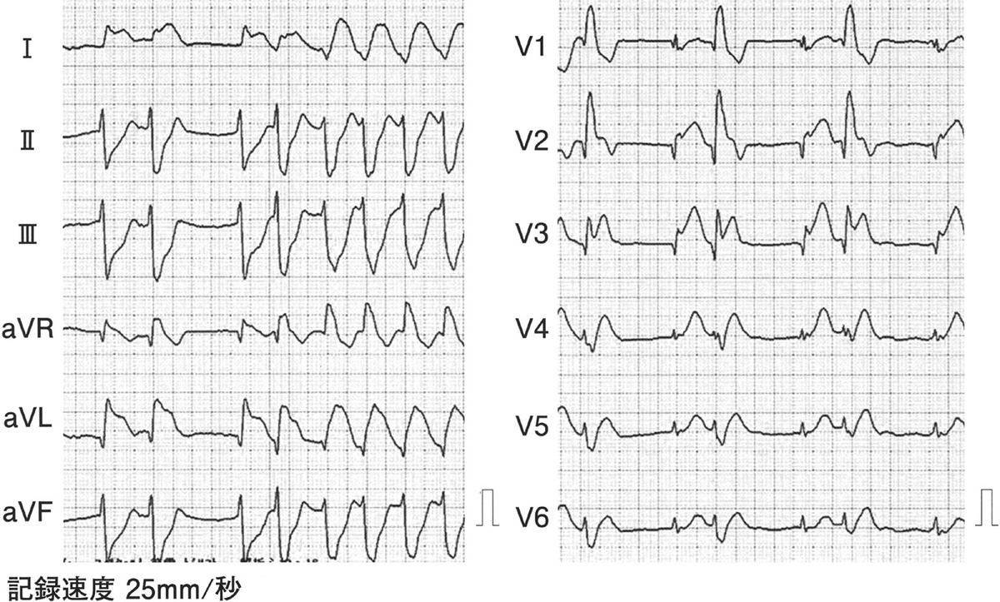
| 選択肢 | 解説 |
|---|---|
| ａ 留置後は抗血栓療法を行う。 | 誤り（＝正しい記述）。大動脈内バルーンパンピング〈IABP〉の留置後は、抗血栓療法（通常は未分画ヘパリンの持続静注）を行う。大動脈内に異物であるバルーンとカテーテルが留置されるため、その表面に血栓が形成され、脳・腎・腸管・下肢へ飛ぶ危険があるからである——活性化部分トロンボプラスチン時間〈APTT〉を対照の1.5〜2倍程度に保つのが目安。出血リスクが高い症例では投与量を減らす、あるいは行わない選択もあるが、その場合はバルーンを止めないこと（駆動を停止すると数分で血栓ができる）が絶対条件になる。血液学的な合併症：バルーンが毎拍動で血球を機械的に破壊するため、血小板減少と溶血が起こる。血小板は留置から数日で減少するので連日測定する。ヘパリン起因性血小板減少症〈HIT〉との鑑別が問題になることがある。本症例では抗血栓療法がもともと必要：急性冠症候群に対して抗血小板薬2剤と抗凝固薬が投与され、そのままPCIへ進む。IABPのための抗凝固はこの流れに重なる。抜去のタイミング：血行動態が安定したら補助比を段階的に下げて（1:1→1:2→1:3）離脱する。⚠️「補助を弱めながら長く置く」ことはしない——駆動を弱めるほど血栓リスクが上がるため、離脱を決めたら速やかに抜く。体内に置いた異物は必ず血栓源になる、という原則がここでも当てはまる。 |
| ｂ 冠動脈血流の増加が期待できる。 | 誤り（＝正しい記述）。IABPが冠動脈血流を増やすことは、この装置の2大効果の一方であり「拡張期増強（diastolic augmentation）」と呼ばれる——冠動脈は他の動脈と違って拡張期に灌流される。収縮期には心筋自身が収縮して壁内の血管を圧迫するため、血液が流れ込めないからである。したがって冠血流の駆動圧は「拡張期の大動脈圧−左室拡張期圧」で決まる。IABPは大動脈弁が閉じた直後（大動脈圧波形のdicrotic notch）にバルーンを膨らませ、下行大動脈の血液を上下へ押しやる。上向きに押された血液が大動脈基部の圧を持ち上げ、冠動脈への灌流圧を高める。もう一方の効果：収縮期直前（大動脈弁が開く直前）に急速にしぼませることで大動脈内に空隙を作り、左室が血液を駆出する際の抵抗＝後負荷を下げる（systolic unloading）。左室の仕事量と酸素消費量が減る。つまり需要と供給の両方に効く：供給を増やし（拡張期増強）、需要を減らす（後負荷軽減）——虚血に対してこの2方向を同時に動かせるのがIABPの本質である。ただし限界がある：IABPは自己の心拍出量を1割程度しか押し上げない補助にすぎず、心停止に近い状態では役に立たない。大規模試験（IABP-SHOCK II）では心原性ショックに対するルーチン使用で死亡率の改善が示されず、位置づけは「橋渡し」へ後退している。本症例は左室駆出率14％——IABPで支えながら、原因である冠動脈閉塞を開けにいく。 |
| ◯ ｃ 心収縮期にバルーンを膨張させる。 | これが正解（＝誤っている記述）。IABPは収縮期ではなく拡張期にバルーンを膨張させる。心電図のR波あるいは大動脈圧波形のdicrotic notch（大動脈弁閉鎖の切痕）に同期して膨らみ、次の収縮が始まる直前に急速にしぼむ——これが「カウンターパルセーション（counter-pulsation）」という名の由来で、心臓の拍動と逆位相で動くという意味である——もし収縮期に膨らませたら何が起きるか。左室が駆出しようとしている瞬間に大動脈内が塞がれるため、後負荷が急激に増大する。左室の仕事量と酸素消費量が跳ね上がり、心拍出量は落ちる。すでにポンプが破綻している患者に対して、まさに真逆の作用を与えることになる。タイミングのずれ方は4通り：①早すぎる膨張（early inflation）——大動脈弁が閉じる前に膨らみ、弁の早期閉鎖と逆流を招く ②遅すぎる膨張——拡張期増強が不十分になる ③早すぎる収縮——増強した圧が保てず後負荷軽減も得られない ④遅すぎる収縮（late deflation）——収縮期に入ってもバルーンが残り、後負荷が増える（最も有害）。だから圧波形を見る：正しく作動していれば、拡張期増強圧が自己の収縮期圧を上回り、バルーン作動後の拡張終期圧と収縮期圧がともに低下する。この波形を読めることがIABP管理の中核である。同期がとれない状況：高度な頻脈や不整脈では拍動ごとにタイミングが変わって効果が落ちる。本症例は心拍数114/分・不整であり、この点でも不利な条件にある。「拡張期に膨らませて冠血流を増やし、収縮期直前にしぼませて後負荷を下げる」——この1文がIABPのすべてである。 |
| ｄ 留置後は下肢虚血の発症に注意する。 | 誤り（＝正しい記述）。IABPは大腿動脈から挿入するため、太いシースが下肢へ向かう動脈を占拠する。留置側の下肢虚血は最も頻度の高い合併症で、数％から10％程度に生じる——だから留置後は、両下肢の足背動脈・後脛骨動脈の拍動、皮膚色、皮膚温、感覚、疼痛を定期的に確認する。5P（Pain、Pallor、Pulselessness、Paresthesia、Paralysis）を意識して観察し、異常があれば早期に抜去や対側への入れ替えを検討する。危険因子は末梢動脈疾患、糖尿病、女性（血管径が細い）、太いシース、長期留置。その他の合併症：大動脈解離・穿孔（挿入時）、腎動脈や腹腔動脈の閉塞（バルーンが下方へずれた場合）、脳梗塞（先端が上方へずれて左鎖骨下動脈にかかった場合）、感染、血小板減少と溶血、バルーンの破裂（ガス塞栓）。カテーテル内に血液が逆流していたらバルーン破裂を疑い、直ちに駆動を止めて抜去する。禁忌：中等度以上の大動脈弁閉鎖不全症（拡張期に押し上げた血液が左室へ逆流して悪化する）、大動脈解離、大動脈瘤、高度の腸骨・大腿動脈の閉塞性病変。本症例は腎機能も低下している：クレアチニン1.8mg/dL。バルーンの位置が下がって腎動脈を塞げばさらに悪化するため、位置の確認は毎日行う。補助循環の管理は、装置そのものより「置かれた身体に何が起きるか」を見ることである。 |
| ｅ バルーン先端部が弓部大動脈にかからないようにする。 | 誤り（＝正しい記述）。バルーンの先端は、左鎖骨下動脈の起始部より2cmほど遠位（末梢側）に置く。弓部大動脈にかかると左鎖骨下動脈・左総頸動脈を塞ぐ危険があり、脳梗塞や左上肢の虚血を招く——下端の目安は腎動脈の起始部より中枢側。つまりバルーンは「左鎖骨下動脈の直下から腎動脈の直上まで」の下行大動脈に収まっていなければならない。位置は挿入時に透視で確認し、留置後は毎日の胸部エックス線写真で追う（先端の不透過マーカーが第2〜3肋間、気管分岐部の高さにあることを確認する）。ずれると何が起きるか：上へずれれば脳血流の障害と左上肢の虚血、下へずれれば腎動脈・腹腔動脈・上腸間膜動脈の閉塞（乏尿、腹痛）。体位変換や患者の移動で動きやすいので、そのたびに確認する。サイズの選択：身長に応じてバルーン容量を選ぶ。大きすぎれば大動脈壁を損傷し、小さすぎれば十分な拡張期増強が得られない。本症例の流れ：「カテーテル室に移動して、まず大動脈内バルーンパンピングを留置した」——左室駆出率14％、血圧90/46mmHgという状態で冠動脈造影とPCIを行えば、造影剤負荷と手技中の虚血で容易に循環が破綻する。だから先に循環を支えてから治療へ入る。補助循環を「治療の前に置く」判断そのものが、この症例の重症度を物語っている。 |
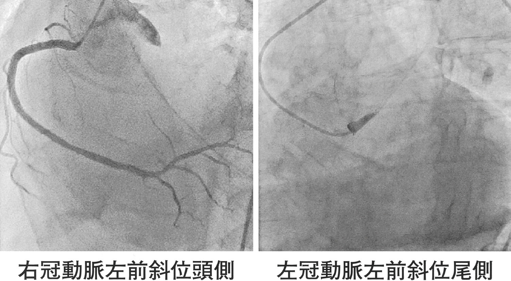
| 選択肢 | 解説 |
|---|---|
| ａ 対角枝 | 誤り。対角枝は左冠動脈前下行枝から左室前壁・前側壁へ向かって斜めに分岐する枝であり、閉塞しても支配領域は前側壁に限られる。心エコーが示す「基部から全周性の壁運動低下、左室駆出率14％」を1本の対角枝で説明することはできない——そもそも本症例の左冠動脈造影（左前斜位尾側＝主幹部の分岐を見るための投影）では、カテーテル先端から短い造影の断端が写るだけで、前下行枝も回旋枝もまったく描出されていない。前下行枝が描出されていない以上、そこから出る対角枝を責任病変として指名する余地はない。対角枝病変の心電図：Ⅰ・aVL・V5・V6といった高位側壁の誘導に変化が出る。本症例の心電図はaVRのST上昇と広範な誘導のST低下であり、限局した領域の変化ではない。臨床的な重み：対角枝は太さに個体差が大きく、太い第1対角枝の閉塞は前側壁梗塞として無視できない大きさになりうる。しかしそれでも「全周性」にはならない。責任病変を決める原則：①壁運動異常の分布 ②心電図の変化 ③造影で実際に途絶している血管——この3つが同じ領域を指したときに責任病変が確定する。「全周性」という言葉は、1本の末梢枝では説明できないという合図である。 |
| ｂ 右冠動脈 | 誤り。提示された造影像の左側は「右冠動脈左前斜位頭側」であり、右冠動脈は起始部から末梢まで良好に造影されている。左前斜位で特徴的な「C」の字を描き、心臓の下面へ回り込んで後下行枝と後側壁枝を出しており、途絶や高度狭窄を示す部位はない——つまりこの1枚が「右冠動脈は責任病変ではない」ことを直接証明している。造影像が2枚提示されているのは、左右を別々に造影するからであり、片方は「開いていること」を示すために置かれている。右冠動脈が責任病変なら何が起きるか：下壁梗塞としてⅡ・Ⅲ・aVFのST上昇、Ⅰ・aVLの鏡像性ST低下が出る。近位部閉塞なら右室梗塞を伴い、房室結節枝と洞結節枝を出す血管なので徐脈・房室ブロックを合併しやすい。壁運動異常は下壁に限局する。本症例の所見はいずれも合わない：心拍数114/分の頻脈で、壁運動は全周性、心電図はaVRのST上昇と広範なST低下である。ただし重要な意味はある：右冠動脈が開存していることは、左冠動脈領域へ側副血行を送りうることを意味する。左主幹部が完全に閉塞しても即死に至らずに搬送できた背景には、この側副路の存在が考えられる。造影像は「詰まっている血管」だけでなく「開いている血管」も読む。 |
| ｃ 左前下行枝 | 誤り。左冠動脈造影像では、前下行枝そのものが1本も描出されていない。写っているのはカテーテル先端に続く短い造影剤の断端だけで、そこから先へ血流が進んでいない。したがって「前下行枝の病変」ではなく、前下行枝へ至る手前が塞がれていると読む——この違いは決定的である。前下行枝の閉塞であれば、主幹部と回旋枝は描出されるはずで、そのうえで前下行枝だけが途中で切れる像になる。主幹部と回旋枝まで含めて何も写らないのは、分岐より中枢が塞がっているからにほかならない。壁運動が答え合わせになる：前下行枝の閉塞なら前壁中隔から心尖部が動かなくなるが、下壁・後側壁は保たれる。本症例は「基部から全周性に低下」で、前下行枝の支配範囲を超えている。心電図も違う：前下行枝近位部の閉塞ならV1〜V4のST上昇が出る。本症例はaVRのST上昇＋広範な誘導のST低下＝1本の枝ではなく左冠動脈系全体の虚血を示すパターンである。前下行枝が最も多い責任血管であることは事実：だからこそ反射的に選びやすい。しかし本問は「造影像を見て」責任病変を答える設問であり、画像が示していることを優先する。造影で何が写っていないかを見ることが、この設問の核心である。 |
| ｄ 左冠動脈回旋枝 | 誤り。回旋枝もまた、左冠動脈造影像にまったく描出されていない。前下行枝と同じ理由で、回旋枝そのものの病変ではなく、分岐点より中枢の閉塞と判断する——提示された投影は「左前斜位尾側」——いわゆるspider viewで、左冠動脈主幹部が前下行枝と回旋枝に分かれる分岐部を最もよく見るために選ばれる方向である。この投影を使ったうえで両枝とも写らないという事実が、閉塞部位を主幹部へ絞り込む。回旋枝が責任病変なら：左室の側壁・後側壁が動かなくなり、Ⅰ・aVL・V5・V6と、後壁に及べばV1〜V3の鏡像性ST低下と高いR波が出る。背側誘導（V7〜V9）の追加が必要になる血管である。壁運動異常は側壁に限局し、全周性にはならない。「心電図に出にくい血管」：回旋枝領域の梗塞は12誘導心電図で捉えにくく、ST上昇型として認識されずに再灌流が遅れることがある。側壁・後壁の虚血を疑ったら追加誘導を撮る。本症例の状況とは別次元：この患者は左冠動脈系全体が一度に虚血に陥っており、心電図の細かい領域診断以前に、心原性ショックとして現れている。2本ともまとめて写らないなら、答えは2本の上流にある。 |
| ◯ ｅ 左冠動脈主幹部 | これが正解。左冠動脈造影（左前斜位尾側）では、カテーテル先端に続く短い造影剤の断端が写るだけで、その先の前下行枝も回旋枝もまったく描出されていない——左冠動脈主幹部の完全閉塞（TIMI血流0）である。一方、右冠動脈は良好に造影されており開存している——臨床所見のすべてがこれで説明できる。①心エコーで「基部から全周性に壁運動低下、左室駆出率14％」——左冠動脈は左室心筋のおよそ3分の2以上を養うので、主幹部が塞がれれば左室全体が一度に動かなくなる ②心電図でaVRのST上昇＋広範な誘導のST低下——特定の領域ではなく心内膜側全体が虚血に陥ったときのパターンで、左主幹部病変または三枝病変を示唆する古典的所見である ③血圧90/46mmHg、意識混濁、四肢冷感、両側のcrackles、SpO2 89％——心原性ショックと肺水腫。なぜ搬送できたのか：左主幹部の急性完全閉塞は多くが院外で突然死する。この患者が病院に到達できたのは、3日前からの前駆症状の期間に側副血行が発達したこと、そして右冠動脈が開存していることによる。治療：循環を支えながら（IABP、必要ならImpellaやVA-ECMO）、緊急でPCIを行う。安定した左主幹部病変では冠動脈バイパス術が優るが、ショックを伴う急性閉塞では時間が優先されPCIが選ばれる。左冠動脈主幹部の閉塞は「widow maker」と呼ばれる——急性冠症候群の中で最重症の型である。 |
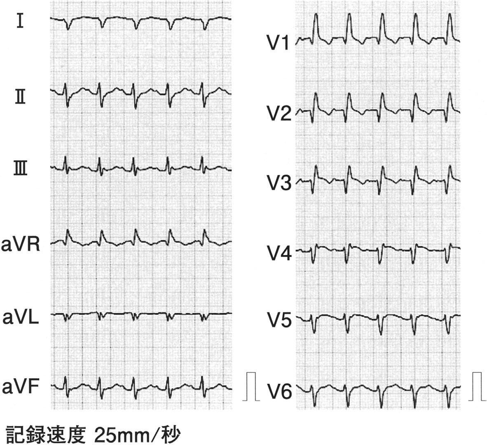
| 選択肢 | 解説 |
|---|---|
| ａ Ⅰ、aVL 誘導におけるQ 波 | 誤り（＝この所見は認められる）。Ⅰ誘導とaVL誘導では、QRS波が下向きの深い成分で始まり、R波がほとんど立ち上がらないQSパターンを示している——高位側壁の異常Q波である——異常Q波の基準は、幅0.04秒（1mm）以上、あるいは深さが同じ誘導のR波の4分の1以上。壊死に陥った心筋は電気的に不活性となり「窓」となって、その部位に置かれた電極が対側の心筋の起電力（遠ざかる方向のベクトル）を透かして見るため、下向きの初期成分として記録される。本症例の解剖と一致する：責任病変は左冠動脈主幹部で、その支配下にある前下行枝の対角枝と回旋枝が高位側壁（Ⅰ・aVL）を養う。ここが壊死すればⅠ・aVLに異常Q波が出るのは必然である。いつ出るか：異常Q波は発症後数時間から数日で形成される。本心電図はICU入室後2日目のもので、まさにこの時期にあたる。いったん形成された異常Q波は多くの場合永久に残り、「過去に梗塞があったこと」の記録になる。紛らわしいQ波：Ⅲ・aVR・V1のQ波は正常でも見られる。肥大型心筋症、心臓アミロイドーシス、左脚ブロック、WPW症候群、気胸や肺気腫による電気軸の変化でも梗塞に似たQ波が出る。設問は「認めないのはどれか」——この肢は認められるので答えではない。 |
| ◯ ｂ Ⅱ誘導におけるST 上昇 | これが正解（＝この所見は認められない）。Ⅱ誘導ではQRS波に続くST部分が基線上にあり、ST上昇は認められない。これが本問の答えである——解剖から考えても当然である。Ⅱ・Ⅲ・aVFは下壁を見る誘導であり、右優位型（約85〜90％）の心臓では下壁は右冠動脈が養う。本症例の責任病変は左冠動脈主幹部で、造影では右冠動脈が良好に開存していた——つまり下壁は虚血に陥っていない。他の4肢と対比する：Ⅰ・aVLの異常Q波（高位側壁の壊死）、V2のQ波（前壁中隔の壊死）、V2・V3のT波陰転化（梗塞後の再分極異常＝冠性T波）、左側胸部誘導のR波減高（側壁心筋の脱落）——いずれも左冠動脈の支配領域に沿った所見で、この患者の病変と完全に整合する。Ⅱ誘導だけが「支配の外」にある。時期の観点からも合わない：本心電図は入室後2日目である。仮に下壁も梗塞していたとしても、この時期のST上昇は徐々に基線へ戻り、異常Q波と陰性T波へ移行していく段階にあたる。もしⅡ誘導にST上昇があったら：下壁の新たな虚血——右冠動脈の合併病変、PCI後の別枝の閉塞、あるいは広範な心膜炎（この場合は広範な誘導が一様に上がり、鏡像変化を伴わない）を考えることになる。「どの誘導がどの血管を見ているか」の対応表が、そのまま答えになる設問である。 |
| ｃ V2 誘導におけるQ 波 | 誤り（＝この所見は認められる）。V2誘導のQRS波は下向きの初期成分をもって始まっており、前壁中隔の異常Q波として認められる——V1〜V4は前壁中隔を見る誘導で、左冠動脈前下行枝とその中隔枝が養う。本症例の責任病変は主幹部であり、前下行枝の支配領域全体が壊死に陥っている。本来この部位のQ波は異常である：正常な心室中隔の脱分極は左から右へ向かうため、V1・V2には小さなr波が立つのが普通である。ここにQ波が現れるということは、中隔の起電力そのものが失われたことを意味する。R波の増高が壊れる：正常ではR波はV1からV5へ向かって順に高くなる（R波増高）。前壁中隔梗塞ではこの増高が失われ、R波増高不良（poor R progression）あるいはQS型となる。本心電図では前胸部誘導のR波の分布が正常のパターンから明らかに逸脱している。鑑別：R波増高不良は梗塞以外でも、電極の位置がずれた場合、肺気腫、左室肥大、左脚ブロック、心臓の回転でも生じる。臨床所見と合わせて判断する。本症例では疑いようがない：左主幹部の完全閉塞、CK上昇、左室駆出率14％——広範な心筋壊死が起きたことは他の情報からも確定している。V1〜V4のQ波は前壁中隔、Ⅰ・aVLは高位側壁、Ⅱ・Ⅲ・aVFは下壁。 |
| ｄ V2、V3 誘導におけるT 波の陰転化 | 誤り（＝この所見は認められる）。V2・V3誘導では、QRS波に続くT波が基線より下へ落ち込んでおり、T波の陰転化が認められる——心筋梗塞の心電図は決まった順序で変化する。超急性期T波（幅広く背の高いT）→ ST上昇 → 異常Q波の形成 → ST部分の基線への復帰とともにT波が陰転化（冠性T波）→ 数週〜数か月かけて浅くなる。ICU入室後2日目という時期は、ST上昇が引きながらT波が陰転していく段階にちょうど重なる。冠性T波の特徴：左右対称で、深く、幅が広い。梗塞部位に対応する誘導に出る。⚠️非対称で浅い陰性T波はしばしば非特異的所見であり、区別して読む。機序：虚血と壊死によって心筋の再分極の順序が変わり、正常では心外膜側から始まる再分極が障害される。その結果、再分極のベクトルが逆転してT波が陰性化する。陰性T波の他の原因：左室肥大（ストレインパターン）、脚ブロック、心筋炎、たこつぼ症候群、肺塞栓（V1〜V4）、くも膜下出血（巨大陰性T波とQT延長）、電解質異常、若年者や女性の正常変異（V1〜V3）。本症例では梗塞の帰結として素直に読める：同じ誘導に異常Q波も出ており、壊死と再分極異常が同じ領域で成立している。Q波と陰性T波が同じ誘導に並ぶとき、それは「そこで心筋が失われた」ことの記録である。 |
| ｅ 左側胸部誘導におけるR 波の減高 | 誤り（＝この所見は認められる）。左側胸部誘導（V4・V5・V6）のR波は明らかに減高しており、V1〜V3よりも小さい。正常ではR波はV1からV5へ向かって順に高くなるので、この分布は逆転している——R波の高さは、その電極に向かってくる心筋の起電力の大きさを反映する。左側胸部誘導は左室側壁を正面から見ているため、側壁の心筋が壊死して脱落すれば、向かってくる起電力が減ってR波が低くなる。異常Q波が「窓」の所見であるのに対し、R波減高は「量が減った」ことの所見である。本症例の解剖と一致する：左冠動脈主幹部の閉塞により、前下行枝（対角枝を含む）と回旋枝の支配領域＝前壁中隔・側壁・後側壁が広範に失われた。心エコーの「基部から全周性に壁運動低下、左室駆出率14％」がこれを裏づけている。他の原因との鑑別：R波の減高は、心嚢液貯留（全誘導で低電位）、肥満、気胸、肺気腫、心アミロイドーシス、電極の位置のずれでも起きる。本症例では梗塞の広さで説明できる。予後との関係：異常Q波の出る誘導数、R波減高の程度は失われた心筋量の指標となり、左室駆出率の低下と予後不良に結びつく。左室駆出率14％はきわめて重篤である。心電図は「電気の記録」だが、そこから失われた心筋の量まで読み取れる。 |
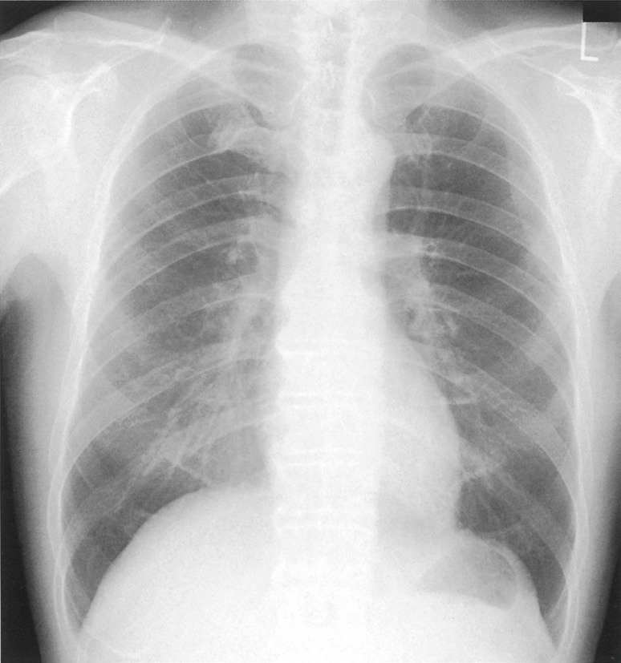
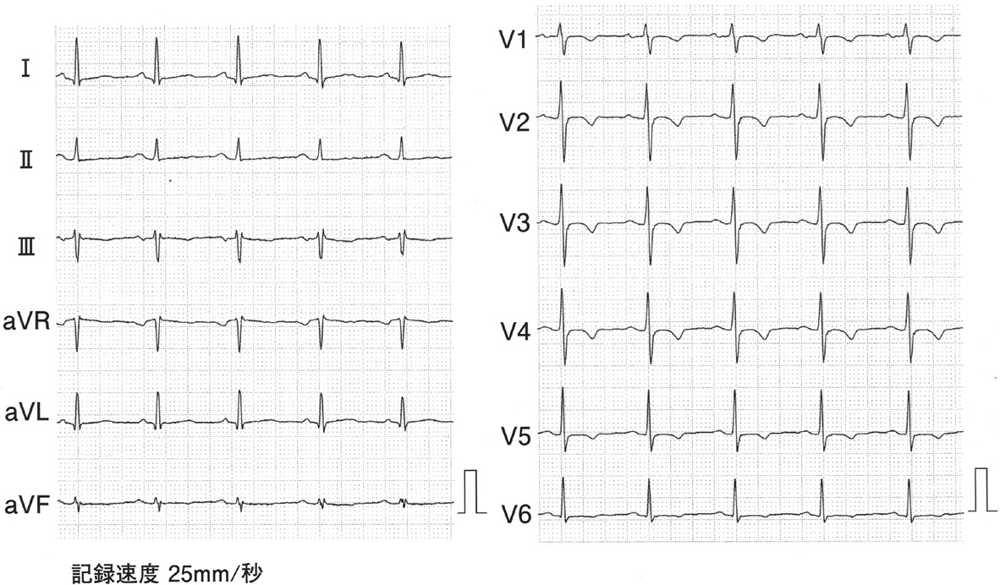
| 選択肢 | 解説 |
|---|---|
| ａ 高電位 | 誤り。提示された心電図のQRS波の振幅は正常範囲にあり、高電位差の基準を満たさない——左室高電位の代表的な基準はSokolow-Lyon基準——V1のS波＋V5（またはV6）のR波が3.5mV（35mm）以上、あるいはaVLのR波が1.1mV以上。他にCornell基準（aVLのR＋V3のS：男性2.8mV、女性2.0mV以上）がある。本心電図の前胸部誘導のR波はこれらに遠く及ばない。高電位が出る状況：左室肥大（高血圧、大動脈弁狭窄症、肥大型心筋症）。ただし心電図の左室肥大診断は感度が低く（30〜50％程度）、痩せた若年者では肥大がなくても基準を満たすことがある。⚠️肥大の評価は心エコーの壁厚が正本で、心電図はあくまで補助である。本症例の背景：10年来の高血圧症で内服治療中、血圧140/80mmHg。左室肥大があってもおかしくない背景だが、この心電図には現れていない。胸部エックス線写真でも心陰影の拡大はなく、心胸郭比は正常である。逆に低電位の場合：心嚢液貯留、心アミロイドーシス、高度肥満、肺気腫、胸水を考える。「基準値を持っている所見」は、目分量ではなく基準に当てて判定する。 |
| ｂ ST 上昇 | 誤り。本心電図のST部分は基線上にあり、ST上昇は認められない。この事実が診断上きわめて重要である——ST上昇型心筋梗塞ではないため、緊急の再灌流療法を直ちに行う対象には当たらない——ST上昇の基準は隣接する2誘導以上でJ点が0.1mV（1mm）以上上昇すること（V2・V3のみ男性0.2mV／40歳未満0.25mV、女性0.15mVと厳しい）。本心電図はどの誘導もこの基準を満たさない。それでも急性冠症候群である：ST上昇がないことは急性冠症候群を否定しない。むしろ急性冠症候群の大半は非ST上昇型（不安定狭心症とNSTEMI）である。本症例は前壁誘導の陰性T波、そして心エコーでの前壁から心尖部の収縮性低下という2つの客観的な虚血の証拠を持っている。症状が消えている時間帯：発作は午前9時と9時30分にそれぞれ15分程度で、来院は午前10時30分。心電図を記録した時点では症状が消失しており、虚血の最中でないためST変化が現れにくい。発作時の心電図が最も情報量が多いので、症状が再燃したら直ちに記録する。ST低下も認めない：非ST上昇型急性冠症候群ではST低下が典型だが、本例のように陰性T波だけが所見となることもある。「ST上昇がない」ことは、治療の緊急度を分ける決定的な情報である。 |
| ｃ 右軸偏位 | 誤り。本心電図の電気軸は正常範囲にあり、右軸偏位は認められない。Ⅰ誘導のQRSが上向き（陽性）であることから、電気軸が右へ振れていないことが読み取れる——電気軸の簡易判定：Ⅰ誘導とaVF誘導がともに陽性なら正常軸、Ⅰが陽性でaVFが陰性なら左軸偏位、Ⅰが陰性でaVFが陽性なら右軸偏位、両方陰性なら極端な軸偏位。正常範囲は−30度から＋90度（施設により＋100度）。右軸偏位が出る状況：右室肥大（肺高血圧症、肺性心、心房中隔欠損症、肺動脈弁狭窄症）、急性肺血栓塞栓症、左脚後枝ブロック、慢性閉塞性肺疾患、そして痩せた高身長の若年者（正常変異）。本症例にはこれらを示唆する所見がない——SpO2 99％、呼吸音正常、Dダイマー0.6μg/mLと陰性、胸部エックス線写真も正常である。左軸偏位が出る状況：左脚前枝ブロック、下壁梗塞、左室肥大、肥満、妊娠。電気軸をなぜ見るのか：心室のどちらが優位に働いているか、伝導路のどこが障害されているかを1つの数字で示すため。心電図の読みの手順（調律→レート→軸→P波とPQ→QRS幅とQ波→ST→T波）の早い段階に置かれている。軸はⅠ誘導とaVF誘導の向きだけで、目で見て判定できる。 |
| ｄ 異常Q 波 | 誤り。本心電図には異常Q波が認められない。前胸部誘導ではV1からV5にかけてR波が順に高くなる正常なR波増高が保たれており、幅0.04秒以上あるいは深さがR波の4分の1以上のQ波は見当たらない——これは臨床的に重要な情報である。異常Q波は心筋が壊死して電気的に不活性となったことを示す所見で、多くは永久に残る。それが無いということは、この時点でまだ広範な心筋壊死は起きていないということである。検査値とも一致する：心筋トロポニンT陰性、CK 98U/L（基準30〜140）、LD 260U/L（基準176〜353）——心筋逸脱酵素はすべて正常範囲にある。つまり本症例は「壊死には至っていない虚血」＝不安定狭心症である。だから今が分かれ道になる：心筋がまだ失われていない段階で介入できれば、心筋を1グラムも失わずに済む可能性がある。逆にこのまま経過を見て完全閉塞へ進めば、広範な前壁梗塞となって異常Q波が残る。「壊れる前に手を打てる最後の時間帯」に患者がいる。異常Q波が出るまでの時間：発症から数時間〜数日。⚠️発症直後は異常Q波が無いのが当たり前で、それを根拠に梗塞を否定してはいけない。Q波が「無い」ことは、心筋がまだ生きていることの証拠として読む。 |
| ◯ ｅ 陰性T 波 | これが正解。前胸部誘導V1〜V4を中心に、T波が基線より下へ落ち込んだ陰性T波が明瞭に認められる。QRS波の振幅は正常、ST部分は基線上、電気軸も正常、異常Q波もない——変化しているのはT波だけである——この所見は心エコーの「前壁から心尖部にかけて軽度の収縮性低下」と同じ領域を指しており、左冠動脈前下行枝領域の虚血として2つの検査が一致している。所見が独立した2つの方法で同じ場所を指すとき、それが本物である確からしさは大きく高まる。陰性T波の意味：虚血によって心筋の再分極の順序が乱れることで生じる。梗塞後の冠性T波と同じ機序だが、本症例では心筋逸脱酵素が正常なので壊死には至っていない——不安定狭心症における虚血の記録である。とくに警戒すべきパターン：V2・V3を中心とした深い対称性の陰性T波、あるいは二相性T波は、Wellens症候群と呼ばれる。胸痛が消失している時間帯に記録されることが特徴で、左冠動脈前下行枝近位部の高度狭窄を示唆し、放置すれば数日以内に広範な前壁梗塞を起こす。⚠️症状が消えているからといって帰宅させてはならず、負荷試験も禁忌である。本症例はまさにその形：15分の発作を2回繰り返し、来院時には症状が消失、心電図に前壁誘導の陰性T波、トロポニン陰性、心エコーで前壁から心尖部の壁運動低下。「症状がないのに心電図だけがおかしい」患者こそ、最も危ない。 |
| 選択肢 | 解説 |
|---|---|
| ａ 胸膜炎 | 誤り。胸膜炎の痛みは深呼吸・咳・体位変換で増悪する胸膜性疼痛だが、本症例の痛みは「締め付けられるような」性状で、安静にしていると15分程度で自然に消失している。呼吸との関連を示す記載は一切ない——そして痛みが「出ては消える」という時間経過が決定的に合わない。胸膜炎の痛みは炎症が続くかぎり持続するもので、15分で消えて30分後にまた出るという反復はしない。この経過はむしろ、心筋の酸素需要と供給の不均衡が生じては解消することを示している。身体所見と検査も否定する：呼吸音に異常を認めず（胸膜摩擦音がない）、SpO2 99％（room air）、白血球6,200と正常、胸部エックス線写真では胸水も浸潤影もなく肋骨横隔膜角は鋭い。発熱の記載もない。胸膜炎を疑うなら背景を探す：肺炎、結核、悪性腫瘍、膠原病、肺塞栓——原因疾患を伴うのが普通で、本症例にはそのいずれの徴候もない。そして心電図が別の答えを指している：前壁誘導の陰性T波は胸膜炎では生じない。痛みの「性状」と「時間経過」の2つで、多くの胸痛は振り分けられる。 |
| ｂ 逆流性食道炎 | 誤り。逆流性食道炎の症状は、食後や臥位で増悪する胸骨後部の灼熱感（胸やけ）と呑酸であり、労作や会議中に突然始まって15分で消えるという経過はとらない——食道由来の胸痛は虚血性胸痛と紛らわしいことで有名で、実際に胸痛で受診する患者の一定割合を占める。しかし本症例の痛みは「締め付けられるような」性状で心窩部から左前胸部へ広がり、同時に咽頭部と左肩にも及んでいる——この放散のパターンは食道では説明できない。紛らわしさの罠：びまん性食道痙攣は硝酸薬やカルシウム拮抗薬で軽快するため、「ニトログリセリンが効いたから狭心症だ」という推論は成り立たない。逆に「心窩部の痛み」を胃の症状と決めつけて制酸薬を出し、心筋梗塞を帰してしまう事故は現実に起きている。心窩部痛は虚血でも起きる：心臓の内臓求心路はT1〜T4へ入るが、下壁の虚血では横隔膜に近いため心窩部痛として現れる。本症例の「心窩部から左前胸部にかけて」という広がりは、まさに関連痛の分布である。客観的証拠が虚血を指す：前壁誘導の陰性T波と、心エコーでの前壁から心尖部の収縮性低下——食道疾患では決して生じない所見である。心窩部痛の患者にも心電図を撮る——これが見逃しを防ぐ最も簡単な習慣である。 |
| ｃ 肺血栓塞栓症 | 誤り。Dダイマーが0.6μg/mL（基準1.0以下）と陰性であり、肺血栓塞栓症はこの1点でほぼ除外できる。Dダイマーは感度が高く特異度が低い検査なので、事前確率が低〜中等度のときに「陰性で除外する」用途に最も適している——他の所見もすべて合わない。呼吸数16/分と頻呼吸がなく、SpO2 99％（room air）と酸素化は完全に保たれ、脈拍60/分で頻脈もない（肺塞栓で最も多い所見は洞性頻脈である）。心電図にもS1Q3T3パターン、右脚ブロック、右軸偏位といった右心負荷の所見はない。危険因子もない：長期臥床、手術、外傷、悪性腫瘍、経口避妊薬、妊娠、下肢静脈血栓症の既往——症例文にいずれの記載もない。本人は会議に出席して仕事をしていた。紛らわしい点はある：肺塞栓でもV1〜V4に陰性T波が出ることがあり、心電図所見だけでは虚血と区別がつかない。しかし本症例では心エコーが「前壁から心尖部の収縮性低下」＝左室の局所的な壁運動異常を示しており、肺塞栓で問題になる右室の拡大・圧排（D-shape）ではない。それでも鑑別には挙げ続ける：killer chest painの1つであり、除外の根拠を明示できることが重要である。Dダイマー陰性は「肺塞栓ではない」という強い情報になる。 |
| ◯ ｄ 急性冠症候群 | これが正解。この患者は不安定狭心症——急性冠症候群である。根拠は3層ある。①症状：締め付けられるような心窩部から左前胸部の痛みが、咽頭部と左肩へ放散し（心筋虚血に特徴的な関連痛）、15分程度で消失して再び反復した。新規発症の狭心症が短時間で繰り返すこと自体が不安定である ②心電図：前壁誘導の陰性T波 ③心エコー：前壁から心尖部にかけての収縮性低下——心電図と心エコーが同じ領域を指しており、左冠動脈前下行枝領域の虚血として整合する——⚠️心筋トロポニンT陰性、CK 98U/L（基準30〜140）と心筋逸脱酵素はすべて正常であり、心筋壊死には至っていない。したがって病型はNSTEMIではなく不安定狭心症である。しかし「壊死していない」ことは「軽い」という意味ではない——不安定狭心症とNSTEMIはいずれも急性冠症候群として同じ枠組みで扱われ、リスク層別化に基づいて早期の冠動脈造影を検討する。危険因子が揃っている：46歳男性、10年来の高血圧症と脂質異常症で内服治療中、40歳まで10本/日を20年間の喫煙（Brinkman指数200）。この心電図パターンの意味：胸痛が消失している時間帯に記録された前壁誘導の対称性陰性T波はWellens症候群として知られ、左冠動脈前下行枝近位部の高度狭窄を示唆する。放置すれば数日以内に広範な前壁梗塞へ進む。⚠️症状が消えていても帰宅させてはならず、運動負荷試験も禁忌である。「壊死する前に捕まえた」患者であり、ここでの判断が心筋の運命を決める。 |
| ｅ 急性大動脈解離 | 誤り。急性大動脈解離は、突然発症の「引き裂かれるような」激烈な痛みが特徴で、発症の瞬間に痛みが最強となり、解離の進展に伴って背部から腰部へ移動する。15分で自然に消失して30分後に再燃するという経過はとらない——本症例では診断に必要な所見がことごとく否定されている。①血圧140/80mmHgで「左右差を認めない」——症例文がわざわざこう書いているのは、大動脈解離を除外させるためである ②胸部エックス線写真で縦隔陰影の拡大がなく、大動脈の輪郭も正常 ③Dダイマー0.6μg/mLと陰性（大動脈解離では偽腔内の凝固により高値になることが多い）。見逃してはいけない理由：大動脈解離と心筋梗塞は治療が正反対に近い。解離を心筋梗塞と誤診して抗血栓療法や血栓溶解療法を行えば、偽腔が拡大して破裂や心タンポナーデを招く。逆にStanford A型解離が右冠動脈起始部を巻き込めば、真の心筋梗塞を合併する（下壁梗塞の像を呈する）。疑ったときに探す所見：左右上肢の血圧差（20mmHg以上）、脈拍の左右差や消失、大動脈弁閉鎖不全症の拡張期雑音、意識障害や麻痺（分枝の閉塞）、縦隔陰影の拡大。決着は造影CTでつける。本症例は虚血の証拠を持っている：前壁誘導の陰性T波と、心エコーでの前壁から心尖部の収縮性低下——解離では説明できない局所の壁運動異常である。胸痛では常に大動脈解離を並べ、そのうえで根拠をもって外す。 |
| 選択肢 | 解説 |
|---|---|
| ａ D ダイマー | 誤り。Dダイマーは本症例では既に0.6μg/mL（基準1.0以下）と陰性であり、その役割を果たし終えている。繰り返し測っても得られる情報はない——Dダイマーはフィブリンが分解されたときに生じる断片で、体内のどこかで凝固と線溶が起きていることを示す。感度は高いが特異度が低いため、「臨床的な事前確率が低〜中等度のときに、陰性であることをもって肺血栓塞栓症や深部静脈血栓症を除外する」という一方向の使い方をする検査である。なぜ繰り返さないのか：除外目的の検査は一度陰性であれば目的を達している。感染症・悪性腫瘍・術後・妊娠・高齢など多くの状況で偽陽性となるため、繰り返せば繰り返すほど無意味な陽性を拾って診断を濁らせる。本症例で除外できたもの：肺血栓塞栓症と大動脈解離。加えてSpO2 99％、呼吸数16/分、血圧の左右差なし、胸部エックス線写真で縦隔陰影の拡大なし——複数の所見が同じ結論を支えている。本症例で追うべきは別のもの：診断はすでに急性冠症候群（不安定狭心症）へ絞られている。今後の焦点は「心筋壊死へ進むかどうか」であり、それを映すのは心電図と心筋逸脱酵素である。除外のための検査と、経過を追うための検査は役割が違う。 |
| ◯ ｂ 安静時心電図 | これが正解。安静時心電図は繰り返し記録すべき検査の筆頭である。急性冠症候群における心電図所見は固定されたものではなく、虚血の程度と時間に応じて刻々と変化するからである——本症例の心電図は前壁誘導の陰性T波のみで、ST上昇もST低下もない。しかしこれは症状が消失している時間帯に記録されたものであり、虚血が再燃すればST変化が現れる可能性がある。逆に、ST上昇が新たに出現すれば直ちに緊急再灌流療法の対象となる——治療方針そのものが変わる。いつ記録するか：①症状が出現したその瞬間（最も情報量が多い） ②症状が消失したとき（ST変化が戻るかを見る＝動的変化の証明になる） ③定期的に（15〜30分ごと、あるいは6〜12時間ごと）。可能なら連続ST監視を行う。「動的なST変化」の意味：症状に一致してST部分が動くことは、その変化が虚血によるものであることの強い証拠になる。これは高リスク所見であり、早期の侵襲的戦略（冠動脈造影）を選ぶ根拠となる。1枚では決まらない：急性冠症候群でも初回の心電図が非診断的なことは珍しくない。「1回正常だったから否定する」ことが、この疾患で最も多い見逃しの型である。心電図は静止画ではなく、繰り返し撮って動画にすることで診断能力が上がる。 |
| ◯ ｃ 心筋逸脱酵素 | これが正解。心筋逸脱酵素——とくに心筋トロポニン——も経時的に測るべき検査である。本症例では現時点で心筋トロポニンT陰性、CK 98U/L（基準30〜140）と正常だが、これは「壊死していない」ことの証明にはまだならない——心筋トロポニンは心筋が壊死してから血中に現れるまでに時間がかかる。従来法では発症3〜4時間、高感度法でも1〜3時間を要するため、発症早期の1回の陰性で心筋梗塞を除外することはできない。本症例の発作は午前9時と9時30分、来院は10時30分——採血の時点で壊死が起きていたとしても、まだ上がりきっていない可能性がある。だから2点で測る：高感度心筋トロポニンでは、来院時（0時間）と1時間後（あるいは3時間後）の2点を測り、絶対値と変化量（デルタ）の両方で判定する。値が上昇して基準値を超えれば不安定狭心症からNSTEMIへ診断が変わり、リスクも治療の緊急度も上がる。診断名が変わる意味：心筋梗塞の定義そのものが「心筋トロポニンの上昇または下降」＋「心筋虚血の証拠」である。つまりこの検査の推移が診断名を決める。CKとCK-MBも併せて追う：梗塞範囲の推定と再梗塞の検出に有用。ただし感度も心筋特異性もトロポニンに劣る。「今は陰性」と「陰性のままである」は違う——だから時間をおいて測り直す。 |
| ｄ 運動負荷心電図 | 誤り。運動負荷心電図は、本症例のような不安定狭心症では禁忌である。負荷そのものが心筋の酸素需要を増やし、不安定なプラークの上で形成と溶解を繰り返している血栓を完全閉塞へ進めて、心筋梗塞や致死性不整脈を誘発しうるからである——負荷試験が意味を持つのは、症状が安定していて虚血の有無そのものが不明な患者に対してである。本症例では虚血はすでに証明されている——前壁誘導の陰性T波と、心エコーでの前壁から心尖部の収縮性低下。証明済みのものを、危険を冒して証明し直す理由がない。負荷試験の禁忌：急性冠症候群（発症2日以内の心筋梗塞、不安定狭心症）、コントロール不良の症候性不整脈、症候性の高度大動脈弁狭窄症、非代償性心不全、急性肺塞栓症、急性心筋炎・心膜炎、急性大動脈解離。とくにこの心電図では危ない：胸痛の消失している時間帯に記録された前壁誘導の対称性陰性T波はWellens症候群として知られ、左冠動脈前下行枝近位部の高度狭窄を示す。⚠️この所見を見たら運動負荷試験は明確に禁忌であり、行うべきは冠動脈造影である。「繰り返し」という条件にも合わない：負荷試験はある時点の虚血の有無を判定する検査であり、経時的に反復して推移を追う性質のものではない。不安定な患者に負荷をかけない——これは循環器診療の基本原則である。 |
| ｅ 心筋シンチグラフィ | 誤り。心筋シンチグラフィは核医学検査であり、放射性医薬品を投与して心筋の血流分布や生存性を評価する。1回の検査に相応の時間と被曝を伴うため、数十分〜数時間おきに繰り返す性質の検査ではない——負荷心筋血流シンチグラフィ（運動負荷または薬物負荷）は、安定した虚血性心疾患において虚血の範囲と重症度を評価するための検査である。負荷を伴う以上、不安定狭心症では運動負荷心電図と同じ理由で禁忌となる。核医学検査の使いどころ：①安定狭心症における虚血の証明と範囲の評価 ②血行再建の適応判断 ③201Tlの再分布や18F-FDG PETによる心筋バイアビリティの評価（動かない心筋が生きているかどうか） ④123I-MIBGによる心臓交感神経の評価。いずれも急性期を過ぎて方針を決める場面で使う。急性期に核医学が使われる場面：安静時心筋血流シンチグラフィは、心電図が非診断的で症状が続く患者の虚血の証明に用いられることがある。しかし本症例ではすでに心電図と心エコーで虚血が示されている。本症例で次に行うべきこと：入院のうえ抗血栓療法を開始し、心電図と心筋逸脱酵素を追いながら、早期の冠動脈造影へ進む。検査は「できるか」ではなく「今この患者に必要か」で選ぶ。 |
| 選択肢 | 解説 |
|---|---|
| ａ 入院を勧める。 | 誤り（＝適切な対応である）。この患者は不安定狭心症であり、入院は必須である。3週前に階段昇りで始まった絞扼感が、昨日から歩行時や安静時にも生じるようになり、本日は20分持続する発作が起きた——短期間に増悪し、安静時にも出るようになった典型的な経過である——不安定狭心症はプラークが破綻して血栓の形成と溶解を繰り返している状態であり、いつ完全閉塞に転じて心筋梗塞や心臓突然死へ進むか予測できない。だから「不安定」と呼ばれる。帰宅させれば、モニターも除細動器もない場所で心室細動を起こしうる。入院して何をするか：①心電図モニターと除細動器のある環境での安静 ②抗血栓療法と抗虚血療法の開始 ③心電図と心筋トロポニンの反復測定 ④リスク層別化に基づく早期の冠動脈造影。本症例はさらに高リスク：V1〜V4の陰性T波、心エコーでの前壁から心尖部の壁運動低下、喫煙40本/日を41年間（Brinkman指数1,640）、血圧168/90mmHg、HDLコレステロール27mg/dL、LDLコレステロール148mg/dL——危険因子も所見も揃っている。来院時に症状がないことは安心材料ではない：発作性の疾患なので、症状のない時間帯があるのは当然である。「今は落ち着いているから帰しましょう」が最も危険な判断である。 |
| ｂ 硝酸薬を投与する。 | 誤り（＝適切な対応である）。硝酸薬は不安定狭心症に対する標準的な抗虚血療法である。静脈系を拡張させて前負荷を下げ、左室壁応力を減らして心筋酸素需要を下げると同時に、冠動脈を拡張させて供給を改善する——本症例は血圧168/90mmHgと高く、後負荷を下げる余地が十分にある。発作が反復している段階なので、舌下・スプレーの頓用に加えて持続静注を行うことも多い。禁忌の確認：収縮期血圧90mmHg未満、右室梗塞、24〜48時間以内のPDE5阻害薬服用、高度大動脈弁狭窄症、閉塞性肥大型心筋症。本症例はいずれにも当たらない。限界も知っておく：硝酸薬は症状を和らげるが、死亡率を下げる薬ではない。胸痛が消えても病変は残っており、血行再建の必要性は変わらない。⚠️「ニトログリセリンで良くなったから狭心症だ」という診断的推論も成り立たない——びまん性食道痙攣も硝酸薬で軽快するからである。耐性：持続投与すると数十時間で効果が減弱する（硝酸薬耐性）。休薬時間を設けるか、他剤へ切り替える。他の抗虚血薬：β遮断薬（心拍数と収縮力を下げて需要を減らす。冠攣縮性狭心症が疑われる場合は慎重に）、カルシウム拮抗薬。症状を取ることと、血管を開けることは別の仕事である。 |
| ◯ ｃ 負荷心電図を行う。 | これが正解（＝適切でない対応である）。この患者は不安定狭心症であり、負荷心電図は禁忌である。負荷そのものが心筋の酸素需要を増やし、破綻したプラークの上で形成と溶解を繰り返している血栓を完全閉塞へ進めて、心筋梗塞や致死性不整脈を誘発しうる——⚠️安定労作狭心症と取り違えないこと。安定労作狭心症は、決まった労作量で症状が出て、休めば決まった時間で治まり、その様子が数か月以上変わらないものを指す。本症例は3週前に発症し、昨日から安静時にも出るようになり、本日は20分持続——「新規発症」「増悪」「安静時発作」というBraunwaldの3つの型すべてに当てはまる。そもそも負荷試験を行う理由がない：負荷試験は「虚血があるかどうか分からない患者」に対して虚血を証明するための検査である。本症例では虚血はすでに証明されている——V1〜V4の陰性T波と、心エコーでの前壁から心尖部の壁運動低下が同じ領域を指している。証明済みのことを、危険を冒して証明し直す意味はない。この心電図はとくに危ない：胸痛の消失している時間帯に記録されたV1〜V4の陰性T波はWellens症候群を示唆し、左冠動脈前下行枝近位部の高度狭窄を意味する。放置すれば数日以内に広範な前壁梗塞へ進む。行うべきは冠動脈造影：責任病変を同定し、そのままPCIへ移れる。不安定な患者に負荷をかけない——安定と不安定の見分けが、この設問の核心である。 |
| ｄ 抗血小板薬を投与する。 | 誤り（＝適切な対応である）。抗血小板薬の投与は不安定狭心症の治療の中核である。冠動脈内にできる血栓は、動脈の高いずり応力の下で血小板が主役となる「白色血栓」だからである——アスピリン162〜325mgを噛み砕いて服用させる（噛み砕くのは吸収を速めるため）。単独で死亡率を約20％下げることがISIS-2試験で示されており、急性冠症候群で最も確実に予後を改善する薬である。禁忌は真のアスピリンアレルギーと活動性出血のみ。⚠️本症例は便潜血陰性で、消化管出血を示唆する所見がない。2剤併用（DAPT）：アスピリンにP2Y12受容体拮抗薬（クロピドグレル、プラスグレル、チカグレロル）を加える。作用点が違う（シクロオキシゲナーゼ1とADP受容体）ので相加的に効く。PCIが予定される場合は負荷投与を行う。抗凝固薬も併用する：未分画ヘパリンや低分子ヘパリン、フォンダパリヌクス。急性期に限った投与である。⚠️血栓溶解療法は非ST上昇型では有害であり行わない——血栓の性質が違い、出血の害だけが残る。スタチンも早期から：プラーク安定化と抗炎症作用のため、コレステロール値にかかわらず高強度で開始する。本症例はLDLコレステロール148mg/dL、HDLコレステロール27mg/dLと適応も明確である。血栓の性質（白色か赤色か）が、選ぶ薬を決める。 |
| ｅ 冠動脈の精査を考慮する。 | 誤り（＝適切な対応である）。冠動脈の精査——すなわち冠動脈造影は、本症例で当然に考慮すべき検査である。不安定狭心症では、リスク層別化に基づいて早期の侵襲的戦略を選ぶ——本症例は高リスクの要素を複数持つ。①短期間に増悪し安静時発作へ移行した経過 ②20分持続する発作 ③心電図の陰性T波（とくに前壁誘導の対称性陰性T波＝Wellens症候群の示唆） ④心エコーでの壁運動異常 ⑤Brinkman指数1,640という強い喫煙歴、高血圧、脂質異常症。GRACEスコアやTIMIリスクスコアで数値化しても高リスクとなる。時間の目安：血行動態が不安定、致死性不整脈、持続する胸痛といった超高リスクなら2時間以内。トロポニン上昇や動的なST変化などの高リスクなら24時間以内。中等度リスクなら72時間以内。本症例はトロポニンT陰性だが、心電図と心エコーの所見から早期の造影が妥当である。造影の利点：責任病変を同定でき、そのままPCIへ移れる。病変の分布によっては冠動脈バイパス術を選ぶ判断もここで下す。非侵襲的検査という選択肢もあるが：冠動脈CTは形態を見られるが治療へ移れず、低〜中等度リスクの除外に向く検査である。本症例のような高リスク例では回り道になる。「調べてから治療する」のではなく「調べながら治療できる」のが冠動脈造影の強みである。 |
| 選択肢 | 解説 |
|---|---|
| ａ 右室梗塞では肺動脈圧が上昇する。 | 誤り。右室梗塞では肺動脈圧はむしろ低下する（あるいは上がらない）。右室は肺へ血液を送り出すポンプであり、そのポンプが壊れれば肺へ流れる血液量が減るからである——血行動態は特徴的な組み合わせになる：右房圧（中心静脈圧）は上昇（頸静脈怒張、Kussmaul徴候）、肺動脈圧と肺動脈楔入圧は低いか正常、心拍出量は低下、そして体血圧は低下する。つまり「頸静脈は怒張しているのに肺は乾いている（肺うっ血がない）」という、左心不全とは正反対の所見が並ぶ。治療も正反対になる：右室梗塞の循環は前負荷に強く依存する。⚠️硝酸薬・利尿薬・モルヒネは前負荷を下げるため禁忌に近く、投与すると一気にショックへ陥る。行うのは十分な輸液負荷（生理食塩水）で、それでも足りなければドブタミンを加える。診断：下壁梗塞（Ⅱ・Ⅲ・aVFのST上昇）を見たら右側胸部誘導V4Rを追加し、そこでのST上昇1mm以上で診断する。右冠動脈近位部の閉塞で生じ、下壁梗塞のおよそ3〜5割に合併する。三徴：低血圧＋頸静脈怒張＋肺野清明。「詰まった側のポンプが送れなくなる」——右室梗塞では肺へ送れなくなる。 |
| ｂ 心室瘤では心電図でST が低下する。 | 誤り。心室瘤では心電図のST部分は低下せず、逆にST上昇が持続する。これが心室瘤を疑う最も有名な心電図所見である——心室瘤は貫壁性梗塞のあと、壊死して菲薄化した壁が瘢痕となり、心室内圧に押されて外側へ膨らんだものである。収縮期に他の部分が縮むのに対してこの部分は逆に膨らむ（奇異性運動＝dyskinesis）。この持続的な壁のひずみが、傷害電流に似た電位を生み続けるためST上昇が残る。判断の目安：急性心筋梗塞のST上昇は再灌流が得られれば数時間〜数日で基線へ戻る。2〜3週を超えてST上昇が残っていれば心室瘤を疑い、心エコーで奇異性運動と壁の菲薄化、そして壁在血栓の有無を確認する。心室瘤の合併症：①壁在血栓の形成と全身塞栓（脳梗塞）——抗凝固療法の適応になる ②心不全（有効な駆出量が減る） ③心室性不整脈（瘢痕を基質としたリエントリー） ④破裂は稀（瘢痕化しているため、急性期の自由壁破裂とは別物）。真の瘤と仮性瘤：真性心室瘤は心筋の壁が残っているが、仮性瘤（pseudoaneurysm）は破裂孔が心膜で覆われただけのもので、破裂の危険が高く緊急手術の適応となる。「ST上昇が消えない」ことが、心室瘤の入口の所見である。 |
| ｃ 心室細動は発症3 日以降に起こりやすい。 | 誤り。心室細動は発症3日以降ではなく、発症直後——とくに最初の1時間から24時間以内に最も多い。急性心筋梗塞による死亡の多くは、この時間帯の心室細動による突然死である——虚血心筋ではATPが枯渇して細胞外にK+が漏出し、静止膜電位が浅くなって伝導が遅れる。同時に不応期が場所ごとにばらつく。「遅い伝導」と「不応期の不均一性」が揃うとリエントリーが成立し、心室細動が生じる。この基質は再灌流と時間経過とともに消えていく。一次性と二次性を分ける：発症48時間以内の心室細動を「一次性」と呼び、虚血そのものが原因である。長期予後への影響は小さく、植込み型除細動器の適応にはならない。48時間以降の「二次性」は瘢痕や心不全を基盤とし、再発しやすく予後不良で、こちらが二次予防のデバイス適応を検討する対象になる。だから対策が決まる：急性冠症候群が疑われる患者は、除細動器がすぐ使える環境で心電図監視を続ける。院外発症の突然死が多いのに対し、院内で監視下に起きれば救命できる。予防的抗不整脈薬は使わない：かつてのリドカイン予防投与は心室細動を減らしても総死亡を増やした。行うべきは十分な鎮痛、β遮断薬、電解質の補正、そして迅速な再灌流である。発症直後が最も危ない——だからモニターを外さない。 |
| ◯ ｄ 房室ブロックは下壁梗塞で起こりやすい。 | これが正解。房室ブロックは下壁梗塞で起こりやすい。理由は血流支配と反射の2つある。①解剖——房室結節を養う房室結節枝は、右優位型（約85〜90％）の心臓では右冠動脈から分岐する（約90％）。洞結節枝も約60％が右冠動脈由来である。したがって右冠動脈の閉塞＝下壁梗塞では、刺激伝導系の要である房室結節と洞結節が同時に虚血に陥る ②反射——下壁・後壁の虚血は迷走神経求心路を刺激してBezold-Jarisch反射を起こし、徐脈と低血圧、房室伝導の遅延をもたらす——下壁梗塞に伴う房室ブロックの性質：房室結節レベル（結節内）で起こるため補充調律は房室接合部から出て毎分40〜60回、QRS幅は狭い。アトロピンによく反応し、多くは一過性で数日以内に回復する。予後は比較的良好である。前壁中隔梗塞との対比が重要：前下行枝の中隔枝が養う右脚と左脚前枝の壊死によって生じるため、His束以下（結節下）の障害となる。補充調律は心室性で毎分20〜40回、QRS幅は広い。アトロピンは無効で、恒久的ペースメーカを要することが多く、広範な梗塞を意味するため予後不良である。臨床での対応：症候性であればアトロピン0.5mg静注（総量3mgまで）、無効なら経皮ペーシング、経静脈的一時ペーシングへ。根本は再灌流である。「どの血管が刺激伝導系を養うか」を覚えていれば導ける設問である。 |
| ｅ 乳頭筋断裂は左前下行枝病変で起こりやすい。 | 誤り。乳頭筋断裂は左前下行枝ではなく、右冠動脈の閉塞による下壁梗塞で起こりやすい。断裂するのは後内側乳頭筋が圧倒的に多く、それは血流支配が単一だからである——僧帽弁を支える2つの乳頭筋のうち、前外側乳頭筋は前下行枝の対角枝と回旋枝の鈍縁枝から二重に血流を受ける。一方、後内側乳頭筋は後下行枝からの単一支配しか持たず、冠血流の予備がない。だから虚血に対して脆弱で、下壁梗塞で真っ先に壊死する。臨床像：発症2〜7日目に突然の呼吸困難と電撃性肺水腫、心原性ショック。急性僧帽弁閉鎖不全症による収縮期雑音が出るが、⚠️左房が急に硬いまま圧上昇するため収縮後期の圧較差が消え、雑音は短く弱いことがある。「雑音が目立たないのに劇的な肺水腫」がこの疾患の特徴である。診断：心エコー（必要なら経食道）で偏心性の逆流ジェットと、左房内で揺れる断裂した乳頭筋の断端を確認する。Swan-Ganzカテーテルでは肺動脈楔入圧に巨大なv波が出る。心室中隔穿孔との違い：心室中隔穿孔では右房→右室の酸素飽和度にステップアップ（5〜7％以上）が出るが、乳頭筋断裂では出ない。これが古典的な鑑別法である。治療：後負荷を下げて逆流量を減らし（血管拡張薬、大動脈内バルーンパンピング）、緊急の僧帽弁手術へ。後内側乳頭筋＝単一支配＝下壁梗塞——この連鎖で覚える。 |
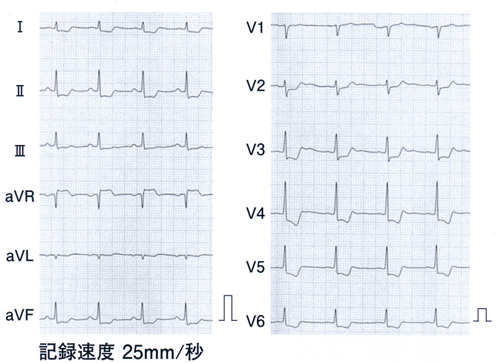
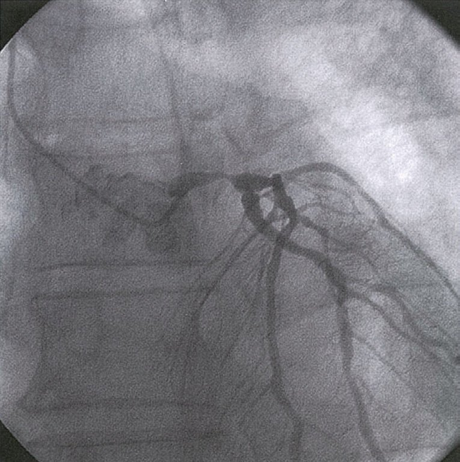
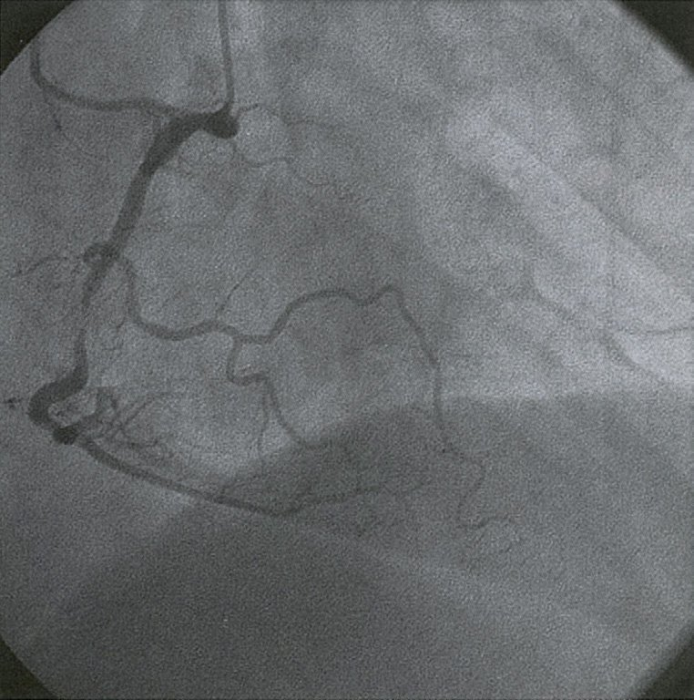
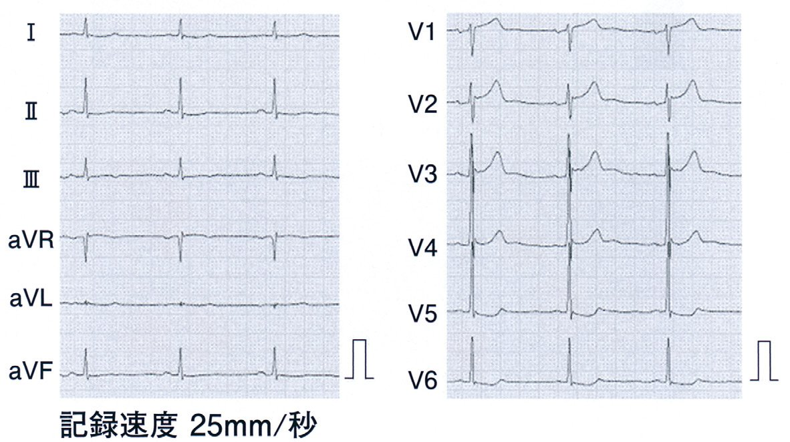
| 選択肢 | 解説 |
|---|---|
| ◯ ａ 冠動脈バイパス術 | これが正解。提示された冠動脈造影像では、左冠動脈は主幹部から前下行枝・回旋枝へ分岐する部位に高度狭窄を認め、右冠動脈にも複数の高度狭窄が数珠のように連なっている——左冠動脈主幹部病変を含む多枝病変である。この病変分布に対しては冠動脈バイパス術〈CABG〉が第一選択となる——理由は「バイパスは狭窄の先へ新しい流路を作る」という点にある。PCIが狭窄部そのものを内側から広げるのに対し、CABGは病変を迂回して末梢へ血流を届ける。したがって病変の手前にある将来の新規病変からも心筋を守ることができ、多枝にわたる複雑な病変ほど有利になる。本症例が強くCABG向きである理由：①左主幹部を含む ②多枝病変で病変が複雑（SYNTAXスコアが高くなる） ③糖尿病を合併している（HbA1c 7.2％、空腹時血糖130mg/dL）——糖尿病合併の多枝病変では、CABGがPCIより明確に予後で優ることが大規模試験（FREEDOM試験など）で示されている。いま安定しているからこそ選べる：硝酸薬で症状は2分で改善し、血圧166/92mmHg、心音・呼吸音に異常なし。循環が破綻していないので、待機的に手術の準備ができる。手術までの管理：入院のうえ抗血栓療法と抗虚血療法を行い、大動脈内バルーンパンピングを要する場合もある。⚠️P2Y12受容体拮抗薬は出血リスクのため術前に一定期間休薬する。「どこが詰まっているか」ではなく「病変全体の分布」が術式を決める。 |
| ｂ 経皮的心肺補助〈PCPS〉 | 誤り。経皮的心肺補助〈PCPS＝VA-ECMO〉は、心臓と肺の機能そのものを体外の遠心ポンプと人工肺で代行する最も強力な補助循環である。適応は心原性ショックや心停止など、循環が実際に破綻している状況に限られる——本症例は循環が保たれている。血圧166/92mmHg（むしろ高値）、脈拍72/分・整、心音と呼吸音に異常を認めず、胸部エックス線写真も正常。硝酸薬の舌下投与で2分程度で症状が改善している。支える必要のない循環に、侵襲の大きい装置を入れる理由がない。PCPSの代償：大腿動静脈に太いカニューレを挿入するため、下肢虚血、出血、溶血、感染、脳合併症のリスクを負う。加えて動脈側から逆行性に血液を送るため左室の後負荷が上がり、左室が拡張して肺水腫を悪化させることがある（このため左室の減負荷を併用することがある）。補助循環の段階：大動脈内バルーンパンピング（自己心拍が前提、心拍出量を1割程度押し上げる）→ Impella（左室から大動脈へ直接送る）→ VA-ECMO（心肺そのものを代行）。侵襲と支持力が段階的に上がる。本症例で補助循環を考える場面：左主幹部病変であるため、手術中や周術期に循環が破綻すれば適応となりうる。しかし「この患者への対応」として今選ぶものではない。治療の強さは、病名ではなく循環動態が決める。 |
| ｃ 心臓リハビリテーション | 誤り。心臓リハビリテーションは虚血性心疾患の管理に不可欠だが、開始するのは血行動態が安定してからである。本症例は今朝から軽労作で2分程度の発作を繰り返しており、検査室へ移動しただけで症状が出現した——安静時に近い労作でも虚血が起きる、きわめて不安定な状態にある——この段階で運動を課すことは、負荷試験を行うのと同じ危険をもたらす。心筋酸素需要を増やし、破綻したプラークの上の血栓を完全閉塞へ進めて、心筋梗塞や致死性不整脈を誘発しうる。心臓リハビリテーションの正しい位置：血行再建（PCIまたはCABG）が完了し循環動態が安定した後に、第I相（急性期・入院中の離床）、第II相（回復期・監視型の外来運動療法、発症後150日まで保険適用）、第III相（維持期・生涯にわたる自己管理）と段階的に進める。効果は「運動」だけではない：運動耐容能の改善、心血管死と再入院の減少、内皮機能の改善、自律神経バランスの是正。加えて禁煙・食事・服薬アドヒアランス・患者教育・心理的支援を含む包括的プログラムであり、その効果は薬物治療と並ぶ二次予防の柱である。本症例も後に必ず必要になる：肥満（164cm・80kg＝BMI 29.7）、糖尿病、高血圧、脂質異常症——修正すべき危険因子が揃っている。順序を守ること——血管を開けてから、運動を始める。 |
| ｄ 運動負荷心筋シンチグラフィ | 誤り。運動負荷心筋シンチグラフィは、本症例のような不安定狭心症では禁忌である。加えて、この患者ではすでに冠動脈造影が施行されて病変が直接可視化されており、虚血を間接的に推定する検査を行う意味がない——負荷試験は「虚血があるかどうか分からない安定した患者」に対して虚血を証明するための検査である。本症例では、検査室へ移動した際の胸部症状に一致した心電図変化（A）が硝酸薬で改善して正常化する（B）という、動的なST変化そのものが記録されている。虚血の証明としてこれ以上のものはない。負荷の危険：軽労作で2分程度の発作を反復している患者に運動を課せば、その場で心筋梗塞や致死性不整脈を起こしうる。⚠️左冠動脈主幹部の狭窄は負荷試験の相対禁忌にも挙げられている。核医学が役に立つ場面：①安定狭心症における虚血の範囲と重症度の評価 ②血行再建の適応判断 ③心筋バイアビリティの評価（201Tlの再分布、18F-FDG PETのmismatch）。本症例で使うとすれば、血行再建後に残存虚血を評価する場面である。検査の順序：非侵襲的検査は侵襲的検査の前に置くのが原則だが、緊急性と事前確率が高ければ順序は飛ばす。すでに答えが出ている問いに、危険を冒して再び答える必要はない。 |
| ｅ t-PA〈tissue plasminogen activator〉の投与 | 誤り。t-PA（組織プラスミノゲンアクチベータ）による血栓溶解療法は、ST上昇型心筋梗塞に対して、PCIが行える施設へ時間内に搬送できない場合に選ぶ再灌流の手段である。本症例のような非ST上昇型急性冠症候群には適応がなく、むしろ有害である——理由は血栓の性質にある。冠動脈内にできる血栓は、動脈の高いずり応力の下で血小板が主役となる「白色血栓」で、フィブリンに乏しい。血栓溶解薬はフィブリンを溶かす薬なので効きにくく、出血の害だけが残る。非ST上昇型急性冠症候群に血栓溶解療法を行った試験では、心筋梗塞と出血がむしろ増えた。そもそも時期を過ぎている：本症例はすでに冠動脈造影が施行され、病変が直接見えている。責任病変が分かっている以上、選ぶべきは機械的な血行再建（PCIまたはCABG）である。そしてCABGの直前である：⚠️血栓溶解薬を投与すれば、開胸手術における致命的な出血のリスクが跳ね上がる。左主幹部病変で手術を予定している患者に投与してよい薬ではない。血栓溶解療法が選ばれる条件：ST上昇型心筋梗塞で、発症12時間以内、かつPCIまで120分以上かかる状況。禁忌は活動性出血、頭蓋内出血の既往、3か月以内の脳梗塞、大動脈解離の疑い、コントロール不良の高血圧など。「詰まっているなら溶かす」ではなく、血栓の性質と病変の分布で治療法を選ぶ。 |
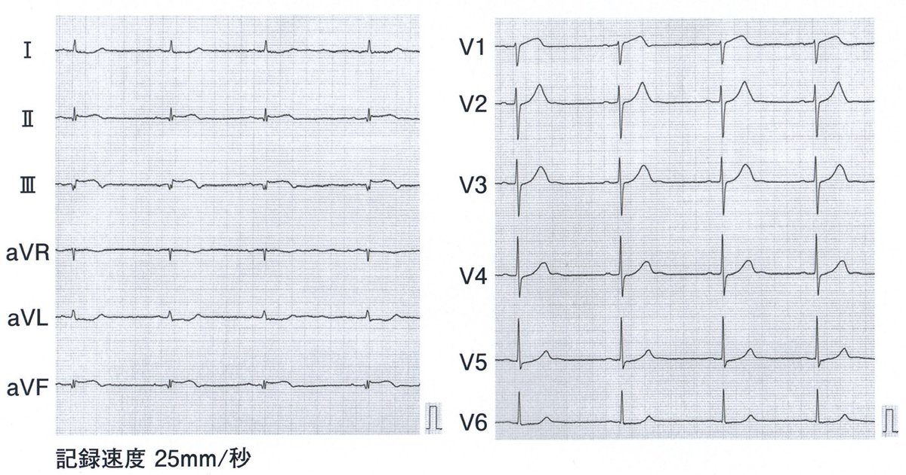
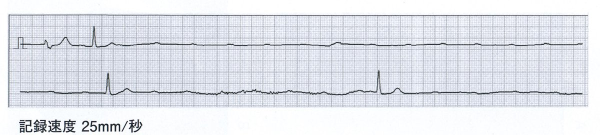
| 選択肢 | 解説 |
|---|---|
| ａ 硝酸薬 | 誤り。硝酸薬は虚血性胸痛に対する標準的な薬だが、この瞬間に投与すべき薬ではない。硝酸薬は静脈系を拡張させて前負荷を下げる薬であり、心拍数40/分という高度徐脈で心拍出量が保てなくなっている患者に投与すれば、血圧がさらに低下して循環が破綻する——心拍出量＝1回拍出量×心拍数である。心拍数が40/分まで落ちた状態で血圧120/60mmHgが辛うじて保たれているのは、末梢血管が収縮して支えているからにすぎない。ここで血管を広げる薬を入れれば、その支えを外すことになる。優先順位の問題である：この患者は「突然の一過性の意識消失発作を繰り返す」状態にあり、モニターでは心室の興奮が長時間途絶えている。命を脅かしているのは胸痛ではなく徐脈と心停止であって、まずそちらを止めなければならない。硝酸薬の禁忌も確認する：収縮期血圧90mmHg未満、右室梗塞（前負荷依存なので下げると一気にショックになる）、24〜48時間以内のPDE5阻害薬服用、高度大動脈弁狭窄症、閉塞性肥大型心筋症。いずれ使う場面は来る：徐脈が是正され循環が安定すれば、再灌流までの抗虚血療法として使いうる。「胸痛だから硝酸薬」と反射で出さず、いま何が命を脅かしているかを見る。 |
| ｂ β遮断薬 | 誤り。β遮断薬は、この患者に投与してはならない薬である。β1受容体を遮断して洞結節の自動能と房室伝導を抑えるため、心拍数40/分の高度徐脈と房室ブロックをさらに悪化させ、心停止を招く——β遮断薬は急性心筋梗塞において、心拍数と収縮力を下げることで心筋酸素需要を減らし、死亡率と心室細動の発生を下げる有用な薬である。しかしその作用機序そのものが、徐脈のある患者では害になる。急性心筋梗塞におけるβ遮断薬の禁忌：①高度徐脈（本症例：40/分） ②2度以上の房室ブロック（本症例：意識消失を伴う高度房室ブロック） ③心原性ショックまたはその徴候 ④急性心不全・肺うっ血 ⑤収縮期血圧90mmHg未満 ⑥気管支喘息（非選択性の場合） ⑦冠攣縮性狭心症（α受容体が優位になり攣縮を悪化させうる）。本症例は複数の禁忌に当てはまる：心拍数40/分、繰り返す意識消失発作、モニターでの心室停止——投与すれば直ちに致命的である。いつなら使えるか：徐脈と房室ブロックが是正され、循環動態が安定した後。心筋梗塞の二次予防としては重要な薬であり、退院時には多くの患者に処方される。同じ薬が、状況によって命を救いもし奪いもする——バイタルサインを見てから選ぶ。 |
| ｃ ヘパリン | 誤り（＝この瞬間の答えではない）。ヘパリンは急性冠症候群の治療において確かに必要な薬であり、実際にこの患者にも投与される。しかし「直ちに投与すべき薬剤」——いま繰り返している意識消失発作を止める薬——ではない——ヘパリンはアンチトロンビンを介して凝固因子（トロンビン、第Xa因子など）を阻害し、冠動脈内の血栓がこれ以上進展するのを防ぐ。抗血小板薬2剤と併用して再灌流療法までのあいだ血栓を抑える役割を担う。しかし効果は「これから起きることの予防」であって、すでに起きている心室停止には何の作用も及ぼさない。設問が問うているのは緊急度：この患者は「突然の一過性の意識消失発作を繰り返す」——モニターでは心房の興奮だけが続き、心室の興奮が長く途絶えている。これはAdams-Stokes発作であり、次の発作で心室が再開しなければそのまま心停止になる。分単位ではなく秒単位の問題である。並行して進める治療：アトロピン投与と経皮ペーシングの準備を最優先としつつ、アスピリン・P2Y12受容体拮抗薬・ヘパリンを投与し、緊急のPCIへ向かう。⚠️根本治療は再灌流であり、責任血管が開けば伝導障害も改善しうる。ヘパリンの注意点：APTTでモニタリングする。ヘパリン起因性血小板減少症〈HIT〉に注意する。「必要な薬」と「今すぐ必要な薬」を区別することが、この設問の核心である。 |
| ◯ ｄ アトロピン | これが正解。この患者は繰り返す一過性の意識消失発作——Adams-Stokes発作を起こしている。モニター心電図では、心房の小さな興奮波は続いているのに心室の興奮（QRS波）が数秒にわたって途絶えており、高度房室ブロックによる心室停止である。心拍数40/分という来院時の徐脈が、ついに心室停止にまで至った——症候性徐脈に対する第一選択がアトロピンである。副交感神経のムスカリンM2受容体を競合的に遮断し、洞結節の自動能と房室結節の伝導を高める。0.5mgを静注し、必要なら3〜5分ごとに反復して総量3mgまで。同時に経皮ペーシングの準備を進め、無効なら直ちにペーシングへ移る。この患者の心電図（A）が示すもの：V1からV4にかけてST部分が持ち上がり幅の広いT波と融合しており、Ⅲ・aVFには鏡像性のST低下を認める——前壁中隔の急性ST上昇型心筋梗塞である。⚠️前壁中隔梗塞に伴う房室ブロックはHis束以下（結節下）の障害であることが多く、アトロピンが効きにくい。だからこそ「投与しつつ、同時にペーシングを準備する」ことが要点になる。根本治療：緊急の冠動脈造影とPCIによる再灌流。責任血管が開けば伝導障害が改善することもある。他の4肢との対比：硝酸薬は血圧を下げ、β遮断薬は徐脈を悪化させ、ヘパリンとt-PAはいま起きている心室停止に何の作用も及ぼさない。意識消失を伴う徐脈は、他のすべてに優先して対処する。 |
| ｅ t-PA〈tissue plasminogen activator〉 | 誤り（＝この瞬間の答えではない）。t-PA（組織プラスミノゲンアクチベータ）による血栓溶解療法は、ST上昇型心筋梗塞に対する再灌流療法の一つであり、本症例には理論上の適応がある。しかし「直ちに投与すべき薬剤」ではない——理由は2つある。①いま命を脅かしているのは心室停止であり、血栓溶解薬はそれを止めない ②本邦のようにPCIが速やかに行える環境では、初回再灌流の第一選択は経皮的冠動脈インターベンションである。血栓溶解療法が選ばれるのは、PCIまで120分以上かかる状況に限られる。PCIが優る理由：開存率（TIMI 3の達成率）が高く、再閉塞が少なく、頭蓋内出血の危険が低い。また責任病変を直接確認できるため、心筋梗塞以外の原因（大動脈解離など）が判明することもある。血栓溶解療法の禁忌：活動性出血、頭蓋内出血の既往、3か月以内の脳梗塞、頭蓋内腫瘍や血管奇形、大動脈解離の疑い、コントロール不良の高血圧（180/110mmHg以上）、最近の大手術や外傷。時間の制約：発症12時間以内が原則で、早いほど効果が大きい。本症例は発症1時間で来院しており時間内ではあるが、選ぶべきはPCIである。優先順位を整理する：①アトロピン投与とペーシング準備（心室停止への対処） ②抗血栓療法 ③緊急冠動脈造影とPCI。再灌流は最も重要な治療だが、心臓が止まっていては届かない。 |
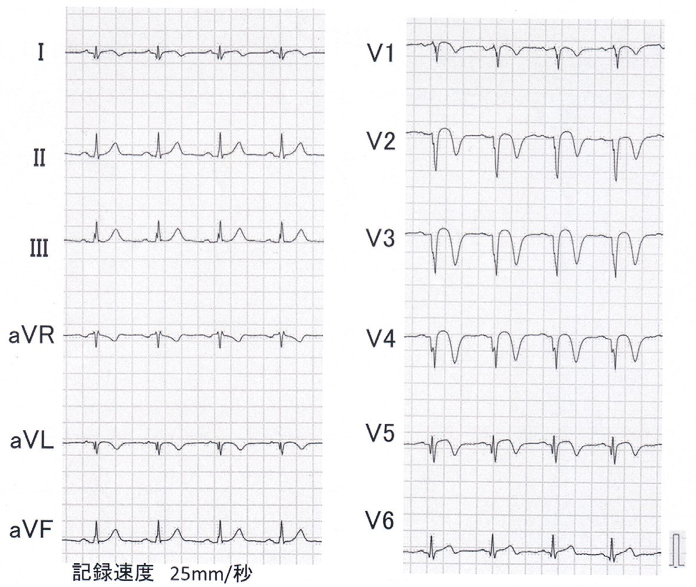
| 選択肢 | 解説 |
|---|---|
| ａ CK | 誤り。CK（クレアチンキナーゼ）は発症後4〜8時間で上昇を始め、約24時間でピークに達し、3〜4日で正常化する。本症例は発症から5日が経過しており、CKはすでに基準値へ戻っている可能性が高い。したがって「現時点で確定診断のために有用な検査項目」にはならない——CKは骨格筋・心筋・脳に存在し、心筋特異性が低い。激しい運動、筋肉内注射、外傷、けいれん、甲状腺機能低下症、横紋筋融解症でも上昇する。心筋特異性を高めたCK-MB分画でも、発症後72時間程度で正常化してしまう。それでもCKに役割はある：①梗塞範囲の推定——ピーク値と時間曲線下面積が梗塞量とよく相関する ②再灌流の指標——再灌流が得られると心筋から一気に酵素が洗い出されるためピークが早く前倒しになる（washout現象） ③再梗塞の検出——いったん下がった値が再び上がることで捉えられる。半減期が短いことがここでは長所になる。本症例の時間軸：5日前の深夜に心窩部と前胸部の強い痛み、冷汗、嘔吐、頸部から左肩への放散、1時間以上持続——典型的な急性心筋梗塞の発症である。その後胸痛は消え、全身倦怠感と食欲不振が続いている。バイオマーカーは「いつ上がり、いつ下がるか」を知って初めて使える。 |
| ｂ AST | 誤り。AST（アスパラギン酸アミノトランスフェラーゼ）は心筋特異性がまったくない。肝、骨格筋、心筋、腎、赤血球など全身に広く分布しており、上昇していても心筋由来かどうかを判断できない——時間経過の面でも不適である。ASTは発症後6〜12時間で上昇し、24〜48時間でピーク、4〜6日で正常化する。発症5日目という本症例のタイミングでは、下がりきっているか、下がりつつある段階にある。本症例では紛れが大きい：「5日前に同窓会で大量に飲酒」という背景がある。アルコール性の肝障害でもASTは上昇するため、仮に高値であっても心筋梗塞の証拠として使えない。古典的な3酵素の関係：トロポニンが普及する以前は、CK（早く上がり早く下がる）→ AST → LD（遅く上がり長く残る）という3つの酵素の時間差を利用して発症時期を推定していた。LD（乳酸脱水素酵素）は発症12〜24時間で上昇、3〜6日でピーク、1〜2週で正常化するため、遅れて来院した患者で用いられた。⚠️ただしLDも心筋特異性が低く、溶血・肝疾患・悪性腫瘍でも上昇する。現在の位置づけ：心筋トロポニンが心筋特異性でも感度でも圧倒的に優るため、診断の主役はトロポニンに移った。「上がるかどうか」ではなく「上がったときにその臓器を指せるか」が特異性である。 |
| ｃ 白血球数 | 誤り。白血球数は炎症・感染・ストレス・ステロイド投与など、あらゆる状況で上昇する非特異的な指標であり、心筋梗塞の確定診断には使えない——急性心筋梗塞では、壊死した心筋への好中球浸潤とストレス反応によって発症数時間から白血球が増加し、2〜3日でピーク（多くは10,000〜15,000/μL程度）となり、1週間ほどで正常化する。したがって発症5日目の本症例では下がりつつある時期であり、しかも上昇していたとしても心筋梗塞を示す証拠にはならない。紛らわしい状況が同居している：この患者は5日前に大量の飲酒と飲食をして嘔吐している。急性膵炎や誤嚥性肺炎など、白血球が上がる別の病態も鑑別に挙がる状況であり、この検査で診断を絞ることはできない。それでも見る意味はある：CRPと合わせて、心膜炎（早期心膜炎やDressler症候群）や感染の合併を評価する材料にはなる。また白血球数の上昇は梗塞範囲や予後と相関するという報告もある。「確定診断のために」という設問の条件：問われているのは、この患者に心筋梗塞が起きたことを証明できる検査である。非特異的な炎症マーカーはその役を果たせない。非特異的な指標は「重症度」は語れても「診断名」は語れない。 |
| ｄ 総ビリルビン | 誤り。総ビリルビンは心筋梗塞の診断とほとんど関係がない。ビリルビンは主にヘモグロビンの代謝産物で、肝での抱合と胆道からの排泄の障害、あるいは溶血によって上昇する——本症例で総ビリルビンを測る意義があるとすれば、それは心筋梗塞の診断のためではなく、「5日前に大量飲酒した60歳男性の全身倦怠感と食欲不振」という主訴に対して、肝胆道系疾患を鑑別するためである。しかし設問が問うているのは確定診断に有用な項目であり、その用途とは違う。紛らわしくなりうる状況：右心不全が進行してうっ血肝となれば、間接ビリルビン優位の軽度上昇をきたすことがある。しかしこれは心筋梗塞の証拠ではなく、その帰結の一部にすぎない。本症例が心筋梗塞である根拠は既に揃っている：①5日前深夜の心窩部・前胸部の強い痛み、冷汗、嘔吐、頸部から左肩への放散、1時間以上の持続 ②心電図でV1〜V5のR波が消失してQSパターンとなり（異常Q波）、深く左右対称の陰性T波（冠性T波）を認める——前壁中隔の心筋梗塞である ③III音とIV音の聴取、心胸郭比54％——心不全の徴候。足りないのは1つだけ：「心筋が壊死した」ことを血液で裏づける検査である。症例文の症状に引きずられず、設問が何を問うているかに立ち返る。 |
| ◯ ｅ 心筋トロポニンT | これが正解。心筋トロポニンTは、発症後3〜4時間で上昇を始め、12〜24時間でピークに達したあと、1〜2週間（長い場合は3週間）にわたって高値を保つ。発症から5日が経過した本症例で、なお心筋の壊死を証明できる唯一の検査項目である——加えて心筋特異性が高い。トロポニンは筋収縮を調節する複合体（T・I・C）の構成蛋白で、TとIには心筋型のアイソフォームが存在し、心筋にしか発現しない。CK・AST・LD・白血球のような他臓器由来の紛れがない。なぜ長く残るのか：細胞質に存在する少量が壊死の直後に一気に流出し（早期の上昇）、続いて筋原線維に構造蛋白として結合している大量のトロポニンが、心筋が分解されるにつれて徐々に放出されるためである。この二段構えが「早く上がり、長く残る」という性質を生む。本症例の像とすべて合致する：5日前深夜の1時間以上持続する心窩部・前胸部痛（頸部から左肩へ放散、冷汗、嘔吐）＝急性心筋梗塞の発症。翌日には胸痛が消え、全身倦怠感と食欲不振が続いた＝壊死は完了し、心不全が進行している。心電図はV1〜V5のQSパターンと深い陰性T波＝前壁中隔梗塞の亜急性期。III音とIV音、心胸郭比54％＝左室機能の低下。診断の定義そのもの：心筋梗塞は「心筋トロポニンの上昇または下降」＋「心筋虚血の証拠（症状・心電図・画像）」で定義される。「遅れて来た心筋梗塞」を捕まえられるのはトロポニンだけである。 |
| 選択肢 | 解説 |
|---|---|
| ａ 若年者に多い。 | 誤り。無痛性心筋虚血は若年者ではなく、高齢者・糖尿病患者に多い。動脈硬化そのものが加齢とともに進むうえ、痛みを伝える経路が高齢者と糖尿病患者では損なわれているからである——心筋虚血の痛みは、虚血心筋から放出されたアデノシン・ブラジキニン・乳酸などが交感神経の求心性線維（C線維とAδ線維）を刺激し、その信号がT1〜T4の脊髄後角へ入って大脳へ届くことで生じる。この経路のどこかが壊れれば、虚血が起きても痛みは出ない。高齢者で多い理由：①加齢による末梢神経の変性と痛覚閾値の上昇 ②活動量が少なく、痛みが出るほどの需要増加を自ら作らない ③認知機能の低下により症状を訴えられない ④他の疾患の症状に紛れる。糖尿病で多い理由：糖尿病性自律神経障害によって求心性の内臓神経が障害される。無痛性心筋虚血の頻度は糖尿病患者で健常者の2〜3倍とされる。その他の背景：心臓移植後（心臓の除神経）、心筋梗塞後（梗塞部の神経終末が失われる）、慢性腎臓病・透析患者、女性。疫学の要点：虚血発作全体の7〜8割は無症候であるとする報告もあり、「痛む虚血」の方がむしろ氷山の一角である。若年者は痛みの伝達系が保たれているので、虚血が起きればむしろ症状が出やすい。 |
| ｂ 糖尿病の合併は少ない。 | 誤り。糖尿病の合併は「少ない」のではなく、無痛性心筋虚血の最も代表的な背景疾患である。糖尿病性自律神経障害によって心臓の求心性神経が障害され、虚血が起きても痛みとして自覚されなくなる——糖尿病患者では、この「警報が鳴らない」ことが二重の不利益を生む。①受診が遅れる——胸痛がないので発症に気づかず、心筋梗塞が完成してから、あるいは心不全になってから発見される ②虚血の負荷が続く——痛みという行動抑制の合図がないため、需要を減らす行動をとらない。糖尿病では病変そのものも重い：びまん性で末梢まで及ぶ多枝病変になりやすく、側副血行も発達しにくい。冠動脈疾患の発症率は非糖尿病者の2〜4倍で、心筋梗塞の予後も悪い。糖尿病は「冠動脈疾患のリスク等価病態」として扱われてきた。だからスクリーニングが議論される：症状に頼れない以上、危険因子を持つ糖尿病患者には安静時心電図、必要に応じて負荷試験や冠動脈CTによる評価が検討される。⚠️ただし無症候の全例へ一律にスクリーニングを行うことが予後を改善するという証拠は乏しく、危険因子の集積や心電図異常を手がかりに対象を選ぶ。自律神経障害の他のサイン：安静時頻脈、心拍変動の低下、起立性低血圧、無自覚性低血糖、胃不全麻痺。糖尿病患者の「胸痛がない」は、虚血がないことの証明にならない。 |
| ◯ ｃ 心筋梗塞後にも発生する。 | これが正解。無痛性心筋虚血は心筋梗塞後にも発生する。むしろ心筋梗塞を起こした患者は、無痛性虚血を生じやすい集団である——理由は2つある。①梗塞部では心筋とともに神経終末も壊死するため、その領域からの痛覚の求心路が断たれる（部分的な除神経が起きる） ②心筋梗塞を起こすほど動脈硬化が進んだ患者は、残る血管にも病変を抱えており、虚血の機会そのものが多い。だから梗塞後の管理では「症状がないこと」に頼らない：定期的な心電図、必要に応じたHolter心電図（ST低下の検出）や負荷試験で客観的に虚血を追う。運動負荷心電図で無症候のままST低下が出る患者は、症状を伴う患者と同等かそれ以上に予後が悪いことが示されている。Cohn分類：無痛性心筋虚血はI型（狭心症の既往がまったくない完全な無症候例）、II型（心筋梗塞の既往はあるが虚血発作は無症候）、III型（有痛性発作と無痛性発作が混在する）に分けられる。本肢が指すのはII型で、実際にはIII型が最も多い。臨床的な含意：「胸痛が消えた＝良くなった」ではない。梗塞後の患者に息切れ・倦怠感・不整脈が出たときは、無痛性の虚血が背後にないかを考える。痛みが消えるのは、治ったからではなく、痛みを伝える神経が失われたからでもある。 |
| ｄ 有痛性より予後が良好である。 | 誤り。無痛性心筋虚血の予後は有痛性より良好ではない。同じ程度の虚血であれば予後は同等か、むしろ不良である——予後を決めるのは「痛むかどうか」ではなく「どれだけの心筋がどれだけ虚血に晒されているか」だからである。痛みは虚血の量を測る物差しではなく、虚血を知らせる警報にすぎない。警報が鳴らないぶん、無痛性の方が不利になる。なぜ不利になるのか：①発見が遅れる——受診の契機がないため、心筋梗塞や心不全になってから見つかる ②行動が制限されない——痛みという「止まれ」の合図がないので、虚血を招く負荷を続けてしまう ③治療が遅れる——診断されなければ抗血小板薬もスタチンも血行再建も始まらない ④背景に糖尿病・高齢・腎障害といった予後不良因子を抱えていることが多い。証拠：無症候性ST低下を有する患者は、心事故（心臓死・心筋梗塞）の発生率が高いことが複数の観察研究で示されている。心筋梗塞そのものも、無痛性で発症した例は院内死亡率が高い。誤解の生まれ方：「症状が軽い＝病気が軽い」という日常的な直感が、虚血性心疾患では通用しない。同じ直感の誤りは、糖尿病性ケトアシドーシスや高齢者の感染症でも起こる。症状の強さと病変の重さは、必ずしも比例しない。 |
| ◯ ｅ 冠動脈バイパス術の適応基準は有痛性と同様である。 | これが正解。冠動脈バイパス術の適応基準は、有痛性であるか無痛性であるかで変わらない。血行再建の適応は「症状」ではなく「虚血の客観的な証拠」と「病変の分布」で決まるからである——血行再建には2つの目的がある。①予後の改善——左冠動脈主幹部病変、三枝病変（とくに左室機能低下例）、前下行枝近位部を含む病変、広範な虚血が証明された例。この目的では症状の有無は問わない ②症状の改善——薬物治療でも狭心症状が残る患者の生活の質を上げる。この目的は当然ながら症状のある患者に限られる。したがって無痛性でも適応になる：無症候であっても、左主幹部病変や広範な虚血が証明されれば予後改善目的の血行再建が適応となる。「痛くないから様子を見る」は、その患者から予後改善の機会を奪うことになる。何をもって虚血の証拠とするか：負荷心筋血流シンチグラフィ、負荷心エコー、心臓MRI、そして冠血流予備量比〈FFR〉。⚠️FFRは造影で中等度に見える狭窄が本当に虚血を起こすかを圧で測る検査で、0.80以下なら機能的に有意と判断する。「形」ではなく「機能」で適応を決める流れがここにある。術式の選択：病変の複雑さ（SYNTAXスコア）、糖尿病の有無、左室機能、併存症をもとにハートチームで決める。「症状を取る治療」と「命を延ばす治療」を分けて考えると、この肢の意味がはっきりする。 |
| 選択肢 | 解説 |
|---|---|
| ◯ ａ 左心室瘤 | これが正解（＝緊急手術の適応とならない）。左心室瘤は、貫壁性心筋梗塞のあと数週間から数か月かけて形成される慢性期の病変である。壊死した心筋が瘢痕となって菲薄化し、心室内圧に押されて外側へ膨らんだもので、壁はすでに線維化して安定している。したがって緊急手術の対象ではなく、適応があれば待機的に左室形成術を行う——心電図ではST上昇が2〜3週を超えて持続し、心エコーでは菲薄化した壁の奇異性運動（収縮期に外へ膨らむ）を認める。壁在血栓を伴えば全身塞栓の原因となるため抗凝固療法を行う。手術を考える場面：①薬物治療に反応しない心不全 ②制御できない心室性不整脈（瘢痕を基質としたリエントリー） ③抗凝固療法を行っても繰り返す塞栓症。いずれも「待てない」わけではなく、待機的に計画して行う。⚠️仮性瘤は別物：左室自由壁が破裂した孔が心膜と血栓で塞がれただけの仮性瘤〈pseudoaneurysm〉は、壁に心筋がなく破裂の危険が高い。こちらは緊急手術の適応となる。心エコーで瘤の入口（neck）が狭ければ仮性瘤を疑う。他の4肢との違い：残る4つはいずれも「今この瞬間に循環が破綻しつつある」病態である。左室瘤だけが、形が変わってしまった後の安定した状態を指している。「破れている・詰まりかけている」のか「形が変わっただけ」なのかが、緊急度を分ける。 |
| ｂ 乳頭筋断裂 | 誤り（＝緊急手術の適応である）。乳頭筋断裂は急性心筋梗塞の機械的合併症で、発症2〜7日目に起こる。僧帽弁を支える腱索の付け根が断裂して急性の僧帽弁閉鎖不全症をきたし、電撃性の肺水腫と心原性ショックに陥る。内科的治療だけでは救命できず、緊急の僧帽弁手術が必要である——断裂するのは後内側乳頭筋が圧倒的に多い。前外側乳頭筋が前下行枝の対角枝と回旋枝の鈍縁枝から二重に血流を受けるのに対し、後内側乳頭筋は後下行枝からの単一支配しかなく、冠血流の予備がないためである。したがって下壁梗塞で起こりやすい。⚠️雑音が小さいことに注意：急性の逆流では左房が拡張する余裕がないまま圧が急上昇するため、収縮後期には左室と左房の圧較差が消える。その結果、雑音は短く弱く、あるいは聴こえないことすらある。「雑音が目立たないのに劇的な肺水腫」がこの疾患の姿である。診断：心エコー（必要なら経食道）で偏心性の逆流ジェットと、左房内で揺れる断裂した乳頭筋の断端を見る。Swan-Ganzカテーテルでは肺動脈楔入圧に巨大なv波が出る。手術までの支え：後負荷を下げて逆流量を減らす（血管拡張薬）、大動脈内バルーンパンピング。人工呼吸管理。診断がついた時点で、手術室へ向かいながら支える。 |
| ｃ 心室中隔穿孔 | 誤り（＝緊急手術の適応である）。心室中隔穿孔も発症2〜7日目に起こる機械的合併症で、壊死した心室中隔に孔が開いて左室から右室へ短絡が生じる。急激な右心系の容量負荷と左室拍出量の低下により心不全とショックに陥り、緊急手術が必要である——身体所見は胸骨左縁第3〜4肋間の粗い汎収縮期雑音で、振戦（thrill）を触れることが多い。乳頭筋断裂と違い、こちらは雑音がはっきり聴こえる。確定診断：心エコーのカラードプラで中隔を越える短絡血流を描出する。Swan-Ganzカテーテルでは右房から右室へ進めた際に酸素飽和度のステップアップ（5〜7％以上の上昇）を認める。⚠️これが乳頭筋断裂との古典的な鑑別点である。予後は悪い：内科的治療のみでは1か月生存率が1〜2割にとどまる。手術を行っても壊死した心筋は脆く、パッチが縫い付かずに再穿孔することがある。手術時期については、組織が線維化して縫えるようになるのを待ちたいという考えと、待つ間に死亡するという現実が対立する。血行動態が不安定なら待たずに手術する。手術までの支え：大動脈内バルーンパンピングで後負荷を下げ、左室から右室への短絡量を減らす。VA-ECMOを併用することもある。再灌流療法の普及によって、機械的合併症の頻度そのものは大きく減った。 |
| ｄ 左室自由壁破裂 | 誤り（＝緊急手術の適応である）。左室自由壁破裂は機械的合併症のなかで最も致死的で、心嚢内へ急速に出血して心タンポナーデをきたす。数分で心停止に至るため、診断がついた瞬間から手術室へ運ぶ以外に助ける道がない——⚠️雑音は出ない。心室中隔穿孔や乳頭筋断裂が「新しい雑音」で気づかれるのに対し、自由壁破裂は音を立てずに起こる。突然の胸痛、意識消失、そして血圧が測れなくなる。心電図には電気活動が残っているのに脈が触れない——無脈性電気活動〈PEA〉として現れる。2つの型：①blow-out型——一気に裂けて数分で心停止に至る。救命はきわめて困難 ②oozing型——じわじわと漏れ出す。心嚢液の貯留が進行し、心タンポナーデの徴候（頸静脈怒張・奇脈・心音減弱＝Beckの三徴）が現れる。この型なら心嚢穿刺で一時的に凌ぎ、手術へ繋げられる可能性がある。危険因子：初回の貫壁性梗塞、高齢、女性、高血圧の持続、再灌流の遅れ、側副血行の乏しさ。⚠️再灌流が得られなかった大きな梗塞に多い。診断：ベッドサイドの心エコーで心嚢液貯留と右心系の虚脱を見る。時間がないので、疑ったらその場でプローブを当てる。「梗塞後数日で突然血圧が測れなくなった」は、まずこれを疑う。 |
| ｅ 左冠動脈主幹部病変による不安定狭心症 | 誤り（＝緊急の血行再建の適応である）。左冠動脈主幹部病変による不安定狭心症は、心臓外科において最も緊急度の高い病態の一つである。左主幹部は左室心筋のおよそ7割を養っており、ここが閉塞すれば広範な前壁梗塞から心原性ショック、心室細動に至って短時間で死亡する——しかも不安定狭心症は、プラークが破綻して血栓の形成と溶解を繰り返している状態である。いつ完全閉塞に転じるか予測できない。「まだ詰まっていない」だけであって、安定しているわけではない。だから待てない：入院のうえモニター管理とし、抗血栓療法を行いながら、緊急ないし準緊急で血行再建を行う。左主幹部病変ではCABGが標準だが、病変が単純（SYNTAXスコアが低い）で解剖学的に適していればPCIも選択肢になる。心電図の手がかり：広汎な誘導のST低下に加え、aVR（と時にV1）のST上昇——この組み合わせは左主幹部または三枝病変を示唆する。aVRは心臓を右上から見る唯一の誘導で、左室全体の心内膜下虚血を「上向き」に映す。手術までの支え：大動脈内バルーンパンピングを予防的に留置することがある。⚠️P2Y12受容体拮抗薬は術中出血を増やすため、CABGを前提とする場合の投与は慎重に判断する。「詰まってから」では間に合わない病変が存在する。 |
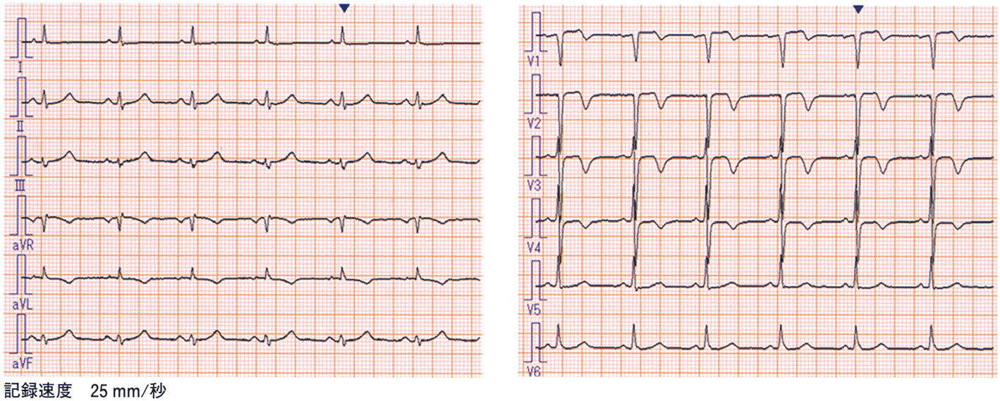
| 選択肢 | 解説 |
|---|---|
| ◯ ａ 硝酸薬投与 | これが正解。硝酸薬は心筋虚血に対する基本的な治療薬であり、この患者に適応がある。静脈系を拡張させて前負荷を下げ、左室壁応力を減らして心筋酸素需要を下げると同時に、冠動脈を拡張させて供給を改善する——血圧150/84mmHgと後負荷を下げる余地があり、収縮期血圧90mmHg未満・右室梗塞・PDE5阻害薬の服用といった禁忌にも当たらない。前胸部誘導の陰性T波と心筋トロポニンT陽性・CK 239IU/L・CK-MB 23IU/Lの上昇から非ST上昇型心筋梗塞と診断され、虚血はなお進行しうる状態にある。作用機序：体内で一酸化窒素を遊離し、可溶性グアニル酸シクラーゼを活性化してcGMPを増やし、血管平滑筋を弛緩させる。低用量では静脈系優位に、高用量では動脈系にも作用する。限界も知っておく：硝酸薬は症状を和らげるが死亡率を下げる薬ではない。狭窄が消えるわけではないので、血行再建の必要性は変わらない。持続投与では数十時間で耐性が生じる。この症例での位置づけ：左冠動脈主幹部に高度狭窄があり冠動脈バイパス術を待つあいだ、虚血の再燃を抑えて心筋を守る役割を担う。抗血栓療法・β遮断薬・高強度スタチンと組み合わせる。需要を下げ供給を増やす——硝酸薬は需給の両側に働く数少ない薬である。 |
| ◯ ｂ 冠動脈バイパス術 | これが正解。提示された左冠動脈造影像（C）では、カテーテル先端の直後から左冠動脈主幹部が著明に細くなっており、前下行枝と回旋枝へ分かれる手前に高度狭窄を認める。一方、右冠動脈造影像（B）では入口部から末梢まで血管径が保たれ、有意狭窄を認めない——左冠動脈主幹部病変である——左主幹部は左室心筋のおよそ7割を養う。ここが閉塞すれば広範な前壁梗塞から心原性ショック、心室細動に至って短時間で死亡するため、左主幹部病変は冠動脈バイパス術の古典的かつ最も確立した適応である。なぜCABGが選ばれるのか：PCIが狭窄部そのものを内側から広げるのに対し、CABGは病変を迂回して末梢へ新しい流路を作る。したがって病変の手前に将来できる新規病変からも心筋を守れる。糖尿病を合併する例では、この差がさらに大きくなる（本症例は糖尿病で食事・運動指導を受けている）。グラフトの選択：左内胸動脈を前下行枝へ吻合するのが標準で、10年開存率90％以上と最も優れる。他枝には大伏在静脈や橈骨動脈を用いる。PCIが選択肢になる場合：病変が単純（SYNTAXスコアが低い）で解剖学的に適していれば、左主幹部病変でもPCIが行われることがある。ハートチームで決める。「どこが詰まっているか」で緊急度が、「病変全体の分布」で術式が決まる。 |
| ◯ ｃ ヘパリンの持続静注 | これが正解。ヘパリンの持続静注は、非ST上昇型急性冠症候群における標準的な抗凝固療法である。冠動脈内の血栓がこれ以上進展して完全閉塞に至るのを防ぎ、血行再建までの時間を稼ぐ——未分画ヘパリンはアンチトロンビンと結合してその作用を1,000倍以上に増強し、トロンビン（第IIa因子）と第Xa因子を阻害する。⚠️血栓を溶かす薬ではなく、新たな血栓ができるのを止める薬である。なぜ持続静注なのか：未分画ヘパリンは半減期が短く（約1〜1.5時間）、効果に個人差が大きい。持続静注なら効果が安定し、APTTを見て用量を調節でき、しかも中止すれば数時間で効果が消える。⚠️出血が起きたときや緊急手術が必要になったときに素早く引き返せることは、CABGを予定する本症例では大きな利点である。作用はプロタミンで中和できる。抗血小板薬と併用する：冠動脈内の血栓は血小板主体の白色血栓なので、アスピリンとP2Y12受容体拮抗薬による抗血小板療法が中心となる。ヘパリンはこれに凝固カスケード側から加勢する。⚠️P2Y12受容体拮抗薬はCABGを前提とする場合、術中出血を増やすため投与を慎重に判断する。副作用：出血、ヘパリン起因性血小板減少症〈HIT〉、長期投与での骨粗鬆症。「溶かす薬」ではなく「これ以上作らせない薬」——役割を取り違えないこと。 |
| ｄ 経皮的心肺補助〈PCPS〉の実施 | 誤り。経皮的心肺補助〈PCPS＝VA-ECMO〉は、心臓と肺の機能そのものを体外の遠心ポンプと人工肺で代行する最も強力な補助循環であり、適応は心原性ショックや心停止など循環が実際に破綻している状況に限られる——本症例の循環は保たれている。血圧150/84mmHg（むしろ高値）、脈拍96/分・整、SpO2 98％（room air）、呼吸数16/分、頸静脈怒張なし、心音と呼吸音に異常なし、胸部エックス線写真も正常。支える必要のない循環に、侵襲の大きい装置を入れる理由がない。PCPSの代償：大腿動静脈に太いカニューレを挿入するため、下肢虚血、出血、溶血、感染、脳合併症のリスクを負う。加えて動脈側から逆行性に送血するため左室の後負荷が上がり、左室が拡張して肺水腫を悪化させることがある。補助循環の段階：大動脈内バルーンパンピング（自己心拍が前提。拡張期に膨らんで冠灌流を増やし、収縮期直前にしぼんで後負荷を下げる）→ Impella（左室から大動脈へ直接送る）→ VA-ECMO（心肺そのものを代行）。侵襲と支持力が段階的に上がる。本症例で補助循環を考える場面：左主幹部病変なので、手術を待つあいだに虚血が再燃したり、周術期に循環が破綻すれば大動脈内バルーンパンピングやVA-ECMOの適応となりうる。しかし「今の治療」として選ぶものではない。治療の強さは病名ではなく、循環動態が決める。 |
| ｅ t-PA〈tissue plasminogen activator〉の静脈内投与 | 誤り。t-PA（組織プラスミノゲンアクチベータ）による血栓溶解療法は、この患者には適応がないばかりか有害である。理由は3つある——①病型が違う——本症例は心電図にST上昇がなく、前胸部誘導の陰性T波のみである。トロポニンTとCK-MBが上昇しているので非ST上昇型心筋梗塞であり、血栓溶解療法の対象となるST上昇型心筋梗塞ではない。冠動脈内の血栓は血小板主体の白色血栓でフィブリンに乏しく、血栓溶解薬が効きにくい。非ST上昇型に投与した試験では、心筋梗塞と出血がむしろ増えた。②責任病変はすでに見えている：冠動脈造影で左主幹部の高度狭窄が同定されている。狭窄は血栓ではなく粥腫であり、溶かして開くものではない。選ぶべきは機械的な血行再建である。③手術の直前である：⚠️血栓溶解薬を投与すれば、開胸手術における致命的な出血のリスクが跳ね上がる。CABGを予定している患者に投与してよい薬ではない。血栓溶解療法が選ばれる条件：ST上昇型心筋梗塞で、発症12時間以内、かつPCIまで120分以上かかる状況。禁忌は活動性出血、頭蓋内出血の既往、3か月以内の脳梗塞、頭蓋内腫瘍や血管奇形、大動脈解離の疑い、コントロール不良の高血圧、最近の大手術や外傷。「詰まっているなら溶かす」ではなく、病型・血栓の性質・次に行う治療で判断する。 |
| 選択肢 | 解説 |
|---|---|
| ａ 心雑音がなければ心エコー検査は有用ではない。 | 誤り。心雑音の有無と心エコー検査の有用性はまったく別のことである。急性冠症候群を疑う患者において心エコーが見るのは弁膜症だけではなく、むしろ主役は左室の局所壁運動異常である——虚血が起きると、心筋は代謝異常 → 拡張障害 → 収縮障害 → 心電図変化 → 胸痛の順に反応する（虚血のカスケード）。収縮障害は心電図変化より手前で起こるため、心電図が非診断的な段階でも壁運動異常として捉えられることがある。しかも異常のある部位から責任血管を推定できる。心エコーが答えるもう1つの問い：胸痛の鑑別である。大動脈解離（フラップ・大動脈弁閉鎖不全・心嚢液）、肺血栓塞栓症（右室拡大・D-shape・McConnell徴候）、心タンポナーデ（心嚢液と右心系の虚脱）、たこつぼ症候群（心尖部の無収縮と基部の過収縮）——いずれも雑音の有無とは無関係に診断へ近づける。機械的合併症の検出：⚠️乳頭筋断裂による急性僧帽弁閉鎖不全症では、左房圧が急上昇して圧較差が消えるため雑音が小さいか聴こえないことがある。「雑音がないから弁は大丈夫」という推論はここで崩れる。利点：ベッドサイドで、被曝も造影剤もなく、繰り返し行える。心エコーは弁を見る検査ではなく、心臓の「今」を見る検査である。 |
| ◯ ｂ 胸痛の有無にかかわらず12 誘導心電図を記録する。 | これが正解。急性冠症候群を疑う患者では、来院時に胸痛があるかどうかにかかわらず12誘導心電図を記録する。しかも来院から10分以内が目標とされている——理由は2つある。①症状が消えていても心電図変化は残りうる——ST上昇が続いていれば直ちに再灌流療法の対象になるし、陰性T波や異常Q波は虚血や壊死がすでに起きたことを語る。とくに胸痛の消失している時間帯に記録された前胸部誘導の対称性陰性T波（Wellens症候群）は、前下行枝近位部の高度狭窄を示す高リスク所見である ②診断名ではなく治療方針が決まる——ST上昇型か非ST上昇型かで、その後の道が完全に分かれる。1枚では終わらない：初回の心電図が非診断的なことは珍しくない。症状が出た瞬間、症状が消えたとき、そして定期的に（15〜30分ごと）繰り返して記録し、可能なら連続ST監視を行う。症状に一致してST部分が動くこと（動的なST変化）は虚血の強い証拠であり、高リスク所見である。追加誘導も忘れない：下壁梗塞を見たら右側胸部誘導V4R（右室梗塞）、V1〜V3のST低下とR波増高を見たら背側部誘導V7〜V9（後壁梗塞）を追加する。実務上の要点：心電図は安価・非侵襲・即時に得られる。「まず1枚撮る」ことに躊躇する理由が1つもない。胸痛の有無で心電図を撮るかどうかを決めない——これがACS診療の原則である。 |
| ｃ 血中心筋トロポニンが陰性であれば帰宅させてよい。 | 誤り。心筋トロポニンが1回陰性であっても帰宅させてはいけない。トロポニンは心筋が壊死してから血中に現れるまでに時間がかかるため、発症早期の陰性は「まだ上がっていないだけ」である可能性がある——従来法では発症3〜4時間、高感度法でも1〜3時間を要する。したがって0時間の1点だけで判断はできず、1〜3時間後にもう1点測り、絶対値と変化量（デルタ）の両方で判定する（0/1時間アルゴリズム）。そもそも陰性でも急性冠症候群である：⚠️不安定狭心症は「心筋壊死に至っていない急性冠症候群」であり、定義上トロポニンは陰性である。それでもプラークが破綻して血栓が形成と溶解を繰り返している不安定な状態であり、いつ完全閉塞に転じるか分からない。トロポニン陰性は診断の除外にならない。帰すかどうかは総合判断：病歴（症状の性状・持続・増悪の様子）、心電図の反復、リスクスコア（GRACE・TIMI・HEART）、身体所見を統合して決める。低リスクと判断した場合でも、経過観察と早期の外来フォロー、再受診の指示を必ず添える。トロポニン上昇は心筋梗塞の同義語ではない：心不全、心筋炎、肺塞栓、敗血症、慢性腎臓病、頻脈性不整脈、たこつぼ症候群でも上昇する。上昇していれば必ず心筋梗塞、というわけでもない。1回の陰性で帰す——これが急性冠症候群で最も多い見逃しの型である。 |
| ｄ 胸痛が消失していれば患者の予後は良好と判断できる。 | 誤り。胸痛が消失していることは、予後が良好であることを意味しない。急性冠症候群は発作性の疾患であり、症状のない時間帯があるのは当然だからである——むしろ痛みが消える理由には、予後の悪いものが含まれる。①血栓が一時的に溶けて再開通した——しかしプラークは破綻したままで、いつ再閉塞するか分からない ②心筋の壊死が完了した——痛みを出す虚血心筋がもう残っていない。つまり「痛みが消えた＝心筋が死に終わった」ということもある ③無痛性心筋虚血——糖尿病や高齢者では虚血が続いていても痛みが出ない。Wellens症候群という典型例：⚠️胸痛が消失している時間帯に前胸部誘導の対称性陰性T波または二相性T波が記録されるもので、前下行枝近位部の高度狭窄を示す。放置すれば数日以内に広範な前壁梗塞へ進む。まさに「症状がないときこそ危ない」形である。予後は何で決まるか：心電図所見（ST変化の有無と動的変化）、トロポニンの推移、左室機能、血行動態、腎機能、年齢、併存症。これらを組み込んだGRACEスコアが院内死亡と6か月死亡を予測する。臨床での構え：症状が消えたことを安心材料にせず、その間に検査を進めて次の発作に備える。症状の消失は、治癒の証拠でも予後の指標でもない。 |
| ｅ 心電図でST-T 変化を認めなければ急性冠症候群は否定できる。 | 誤り。心電図にST-T変化がなくても急性冠症候群は否定できない。初回の心電図が正常あるいは非特異的である急性冠症候群は珍しくなく、報告により1〜6％の患者が心電図正常のまま心筋梗塞と診断されている——なぜ見えないのか。①タイミング——心電図は虚血が起きているその瞬間しか変化を示さない。症状が消えている時間帯に撮れば正常に戻っていることがある ②部位——12誘導は左室の前壁・側壁・下壁を主に映す。⚠️後壁（回旋枝領域）と右室は死角になりやすく、後壁梗塞はV1〜V3のST低下とR波増高という「鏡像」としてしか現れない ③既存の異常に隠れる——左脚ブロック、ペースメーカ調律、左室肥大があると新たな虚血性変化が判読しにくい。だからどうするか：心電図を繰り返し記録し（症状出現時・消失時・定期的に）、追加誘導（V4R・V7〜V9）を撮り、心筋トロポニンを2点以上で測り、心エコーで壁運動を見る。⚠️そして最後は病歴が物を言う——症状の性状と経過が典型的なら、検査が陰性でも入院させて経過を追う。比較が効く：過去の心電図が手に入れば、「変化があるかどうか」で判断できる。1枚の心電図より、2枚の比較の方が強い。検査の陰性は「病気がない」ではなく「その検査で捉えられなかった」を意味する。 |
| 選択肢 | 解説 |
|---|---|
| ◯ ａ 多量の冷汗を伴う胸痛は緊急性が高い。 | これが正解。多量の冷汗を伴う胸痛は緊急性が高い。冷汗は交感神経が強く駆動されていることの表れであり、身体が「危機」と判断している証拠だからである——急性心筋梗塞、大動脈解離、肺血栓塞栓症、消化管出血、アナフィラキシーなど、生命を脅かす病態では、痛みや循環不全に対して交感神経が反応し、皮膚血管が収縮して蒼白となり、汗腺が刺激されて冷たい汗が出る。⚠️同時に悪心・嘔吐を伴うことも多い（迷走神経反射）。診断的な価値：発汗を伴う胸痛は急性心筋梗塞の陽性尤度比がおよそ2程度と報告されており、単独の所見としては強い部類に入る。「痛みの強さ」より客観的で、患者の訴え方に左右されない点でも有用である。逆に緊急性が低いことを示唆する所見：圧痛がある、体位や呼吸で変わる、数秒で終わる刺すような痛み、数日以上まったく変わらず続く痛み。ただし⚠️これらは可能性を下げるだけで、除外の根拠にはならない。バイタルサインは正常でも危ない：急性心筋梗塞の初期は血圧も脈拍も正常のことが多い。「見た目が悪い」「汗をかいている」という所見は、数値に現れない重症を拾う。臨床での使い方：冷汗を伴う胸痛の患者は、待合室で待たせず直ちに心電図とモニターへ回す。「汗をかいて苦しそう」は、それ自体が検査結果である。 |
| ｂ 吸気時に増強する胸痛は冠動脈疾患の可能性が高い。 | 誤り。吸気時に増強する胸痛は胸膜性胸痛と呼ばれ、冠動脈疾患ではなく胸膜・心膜・胸壁の病変を示唆する。冠動脈疾患の痛みは呼吸によって変化しない——なぜ変化しないのか。心筋虚血の痛みは内臓求心性線維を介した内臓痛で、局在が不明瞭で持続的、鈍く重い性質を持ち、体動や呼吸といった機械的な刺激で修飾されない。一方、胸膜や心膜、胸壁は体性感覚神経に支配されており、動かせば痛みが変わる。胸膜性胸痛をきたす疾患：①胸膜炎・肺炎 ②気胸（突然発症・呼吸困難） ③肺血栓塞栓症（⚠️致死的。呼吸困難・頻呼吸・低酸素血症を伴う） ④心膜炎（⚠️前傾すると軽快し、仰臥位で増悪するのが特徴。心膜摩擦音） ⑤肋骨骨折・肋間神経痛。ただし油断はできない：⚠️肺血栓塞栓症は胸膜性胸痛の代表でありながら致死的である。「呼吸で変わるから軽症」ではない。また心筋梗塞後の早期心膜炎やDressler症候群では、虚血性の痛みが胸膜性の痛みへ変わる。問診の要点：「息を吸うと痛みますか」「体を動かすと変わりますか」「前かがみになると楽ですか」——痛みが何で変わるかを聞くだけで、由来がかなり絞れる。呼吸で変わる痛みは、心臓の外に原因を探す。 |
| ◯ ｃ 胸痛部位に圧痛を示す場合は冠動脈疾患の可能性が低い。 | これが正解。胸痛の部位に圧痛を示す場合、冠動脈疾患の可能性は低くなる。押して再現できる痛みは、押せる場所——すなわち胸壁（皮膚・筋肉・肋骨・肋軟骨・肋間神経）に由来するからである——心筋虚血の痛みは心臓の内臓求心性線維を介して脊髄T1〜T4へ入り、同じ髄節に入る体表の感覚と混線して前胸部や左腕に感じられる（関連痛）。⚠️実際に痛んでいるのは心臓であって胸壁ではないので、体表を押しても何も起こらない。尤度比で見る：胸壁の圧痛で痛みが再現されることは、急性心筋梗塞の陰性尤度比を0.2〜0.3程度まで下げると報告されている。病歴・身体所見のなかでは、可能性を下げる力が最も強い所見の1つである。それでも「除外」ではない：⚠️急性心筋梗塞の患者の数％には胸壁圧痛が併存する。高齢者では変形性脊椎症や肋軟骨炎を同時に持っていることが珍しくない。「圧痛があるから心臓ではない」と言い切って心電図を撮らないのは危険である。圧痛を伴う胸痛の代表：肋軟骨炎（Tietze症候群）、肋骨骨折、筋肉痛、帯状疱疹（⚠️皮疹が出る前は圧痛と灼熱感だけのことがある）、胸骨の腫瘍・骨髄炎。「押して再現できるか」は、ベッドサイドで数秒でできる強力な検査である。 |
| ｄ 夕方に胸痛を訴える場合は冠攣縮性狭心症の可能性が高い。 | 誤り。冠攣縮性狭心症の発作は夕方ではなく、夜間から早朝、とくに深夜0時から午前6時ごろにかけて多い。安静時、しばしば睡眠中に起こり、明け方に集中する——なぜその時間帯なのか。①副交感神経の緊張が高まる——迷走神経を介したアセチルコリンが、内皮機能の低下した冠動脈では血管収縮として働く（正常な内皮なら一酸化窒素を介して拡張する） ②血管平滑筋のRhoキナーゼ活性に日内変動があり、明け方に収縮しやすい ③血中のマグネシウム濃度が低下する時間帯である。その他の特徴：安静時に起こり労作とは無関係、発作時の心電図でST上昇（貫壁性虚血）を示すことが多い、日本人に多く欧米人の3倍程度、喫煙が最大の危険因子、飲酒・過換気・寒冷が誘因となる、Ca拮抗薬がよく効く。⚠️β遮断薬はα受容体の作用が相対的に優位となり攣縮を悪化させうるため慎重に用いる。労作性狭心症との対比：労作性狭心症は日中の活動時、とくに午前中の活動開始時に多い。器質的狭窄があり、需要が供給を超えたときに起こる。診断：発作時心電図が最良。捉えられなければHolter心電図、それでも診断がつかなければアセチルコリンまたはエルゴノビンによる冠攣縮誘発試験を行う。「夜中に胸が苦しくて目が覚める」——この訴えを聞いたら冠攣縮を考える。 |
| ｅ ニトログリセリン錠を舌下投与後1 時間で胸痛が軽快しはじめる揚合は労作性狭心症の可能性が高い。 | 誤り。ニトログリセリン舌下錠は、労作性狭心症であれば1〜2分、遅くとも5分以内に効果が現れる。舌下投与後1時間で軽快しはじめるなら、それは薬が効いたのではなく自然経過で症状が消えただけと考えるべきである——ニトログリセリンは舌下の粘膜から直接吸収されて肝初回通過効果を回避するため、速やかに血中濃度が上がる。狭心症発作は数分で軽快し、⚠️5分経っても改善しなければ2回目を投与し、それでも改善しなければ救急要請する（3回まで、5分間隔）。「ニトロが効いた＝狭心症」も成り立たない：⚠️びまん性食道痙攣や食道アカラシアの胸痛もニトログリセリンで軽快する（平滑筋を弛緩させるため）。逆に、急性心筋梗塞では完全閉塞しているので効かないことがある。治療への反応を診断の根拠にするのは危険である。使い方の注意：座位または臥位で使う（血圧低下による失神を防ぐ）。頭痛・顔面紅潮・血圧低下は予測される副作用。⚠️PDE5阻害薬（シルデナフィルなど）を24〜48時間以内に服用していれば絶対禁忌——cGMPの経路を上下から押すことになり、遷延する重篤な低血圧を招く。スプレー製剤：口腔内の乾燥した高齢者では舌下錠が溶けにくいため、スプレー製剤の方が確実なことがある。効くまでの時間そのものが、診断の手がかりになる。 |
| 選択肢 | 解説 |
|---|---|
| ａ 悪 心 | 誤り（＝狭心症の症候として考えられる）。悪心は狭心症・急性心筋梗塞でしばしば認められる症状である。とくに下壁・後壁の虚血で起こりやすく、単独で現れれば消化器疾患と誤られる——機序はBezold-Jarisch反射である。下壁・後壁の心筋にある機械受容器・化学受容器が虚血によって刺激され、迷走神経求心路を介して延髄へ信号が入る。その結果、迷走神経遠心路が興奮して徐脈・低血圧・悪心・嘔吐が生じる。⚠️下壁梗塞では右冠動脈が房室結節枝の約90％を出すという解剖学的な事情も加わり、徐脈と房室ブロックが重なる。臨床上の落とし穴：心窩部痛＋悪心・嘔吐で来院した高齢者を「胃腸炎」「食あたり」と診断して帰宅させる——これが心筋梗塞の見逃しで最も多い型である。とくに深夜、飲食のあとに発症した場合は消化器疾患と結びつけられやすい。だから心電図を撮る：心窩部痛を訴える中高年、とくに危険因子を持つ患者には12誘導心電図を撮る。安価で非侵襲で即座に結果が出る。他の随伴症状：冷汗、嘔吐、呼吸困難、めまい、失神、全身倦怠感。「上腹部の症状」を訴える患者の心電図を撮る習慣が、命を分ける。 |
| ｂ 息切れ | 誤り（＝狭心症の症候として考えられる）。息切れは狭心症等価症状〈anginal equivalent〉の代表であり、胸痛の代わりに現れる虚血の症状である。とくに高齢者・女性・糖尿病患者では、胸痛よりも息切れが主訴になることが多い——なぜ息切れが出るのか。心筋虚血が起こると、収縮より先に拡張が障害される（虚血のカスケード）。左室が硬くなると左室拡張末期圧が上がり、それが左房圧・肺静脈圧へ伝わって肺うっ血を生じる。その結果、労作時の呼吸困難として自覚される。虚血のカスケードを思い出す：代謝異常 → 拡張障害 → 収縮障害 → 心電図変化 → 胸痛。⚠️胸痛は最後尾にあるので、痛みが出る前の段階で息切れだけが症状として現れることがありうる。他の狭心症等価症状：全身倦怠感、悪心、めまい、失神、動悸、意識障害、「なんとなくいつもと違う」。高齢者ではこれらだけで心筋梗塞を発症していることがある。労作時の息切れをどう扱うか：心不全、慢性閉塞性肺疾患、貧血、肺塞栓、不整脈などとともに、虚血性心疾患を鑑別に置く。⚠️「決まった労作量で出て、休むと数分で治まる」というパターンは狭心症を強く示唆する。虚血は必ずしも「痛み」として現れない——このことが本問全体の背景にある。 |
| ｃ 左肩痛 | 誤り（＝狭心症の症候として考えられる）。左肩痛は狭心症の典型的な放散痛（関連痛）の1つである。心臓の痛みが左肩・左腕（とくに尺側）・頸部・下顎・心窩部・背部へ広がることは古くから知られている——関連痛の機序：心臓の痛覚は交感神経の求心性線維を通り、脊髄のT1〜T4（一部C8）の後角へ入る。同じ髄節には左肩・左上腕内側・前胸部・頸部の体表からの感覚も入ってくる。⚠️脳は内臓からの入力を経験する機会が乏しいため、同じ髄節に入る「よく知っている体表の痛み」として誤って解釈する。これが放散痛である。放散の頻度と診断的価値：両腕への放散は陽性尤度比が最も高く（約7）、右腕への放散も左腕と同等かそれ以上に診断的価値がある。⚠️「左腕でなければ心臓ではない」は誤りである。下顎・歯への放散：歯痛や顎の痛みだけを訴えて歯科を受診し、そこで心筋梗塞が見つかることがある。⚠️横隔膜より上、臍より上の痛みは心臓を鑑別に入れる。肩の痛みの鑑別：肩関節周囲炎、頸椎症、胆嚢炎（右肩へ放散）、横隔膜下膿瘍。⚠️労作で誘発され安静で軽快する肩の痛みは、整形外科疾患では説明しにくい。「肩が痛い」で始まる心筋梗塞は実在する。 |
| ｄ 前胸部絞扼感 | 誤り（＝狭心症の症候として考えられる）。前胸部の絞扼感は狭心症の最も典型的な症状である。患者は「締めつけられる」「押しつぶされる」「重い物が乗っている」「バンドで締められる」と表現し、しばしば手のひらや握りこぶしを胸に当てて示す（Levine徴候）——なぜこう表現されるのか。心筋虚血の痛みは内臓求心性線維を介した内臓痛である。内臓痛は局在が不明瞭で、鈍く重く、範囲が広い。だから「ここが痛い」と一点を指せず、胸全体を手で覆うようにして示す。典型的な狭心症の3要素：①胸骨後部の絞扼感・圧迫感 ②労作や精神的興奮で誘発される ③安静またはニトログリセリンで数分以内に軽快する。3つとも満たせば典型的狭心症、2つなら非典型的狭心症、1つ以下なら非心臓性胸痛と分類する（Diamond分類）。持続時間：狭心症は数分（3〜15分程度）。⚠️数秒で終わる痛みも、数時間以上まったく変わらない痛みも虚血ではない。20分以上持続すれば急性心筋梗塞を疑う。問診の工夫：「痛みますか」と聞くと「痛くはない」と答える患者がいる。⚠️「胸に何か感じますか」「重苦しさや締めつけはありますか」と、痛み以外の言葉でも尋ねる。虚血は「不快感〈discomfort〉」として現れることが多い。患者が胸に当てる手の形が、しばしば最初の診断情報になる。 |
| ◯ ｅ 針で刺すような痛み | これが正解。針で刺すような痛みは狭心症の症候として考えにくい。この表現は鋭く（sharp）、局在が明瞭で、しばしば一点を指で示せる痛み——すなわち体性痛や神経障害性疼痛の性質だからである——心筋虚血の痛みは内臓求心性線維を介した内臓痛で、①局在が不明瞭で範囲が広い ②鈍く重い（絞扼感・圧迫感・灼熱感） ③持続的で数分続く ④体位・呼吸・圧迫で変化しない、という性質を持つ。「針で刺すような」はこのいずれとも合わない。この痛みが示唆するもの：①胸壁由来——肋間神経痛、肋軟骨炎、筋肉痛、肋骨骨折（⚠️押すと再現できる） ②胸膜由来——胸膜炎、気胸、肺塞栓（⚠️呼吸で変わる） ③神経障害性——帯状疱疹（皮疹の出る数日前から灼熱感と刺すような痛みが出る） ④心因性・非特異的——数秒で終わる刺すような痛みは若年者に多く、器質的疾患を伴わないことが多い。それでも例外に注意：⚠️患者の言語表現は一定ではない。「刺すような」と言いながら実際には圧迫感を指していることもある。表現だけで切り捨てず、誘因・持続時間・随伴症状・危険因子を合わせて判断する。とくに冷汗を伴えば表現にかかわらず緊急対応とする。持続時間も手がかり：数秒で終わる痛みは虚血ではない。虚血は少なくとも数分続く。痛みの「質」は、どの神経系を通ってきたかを教えてくれる。 |
| 選択肢 | 解説 |
|---|---|
| ◯ ａ 心エコー | これが正解。心エコーは、この患者に何が起きたのかを最も直接に映す検査である。5日前に心筋梗塞が起きていれば、その領域の壁運動が低下したまま残っているはずで、異常のある部位から責任血管を推定できる——本症例の心電図はⅡ・Ⅲ・aVFに深い異常Q波と陰性T波を認め（Ⅰ・aVLは正常）、下壁の梗塞を示している。心エコーで下壁の壁運動低下を確認できれば、心電図と併せて診断が固まる。もう1つの目的——心不全の評価：頸静脈の怒張、心尖部のⅢ音とⅣ音は、左室充満圧の上昇と左室のコンプライアンス低下を示している。心エコーは左室駆出率、拡張能、左房径、下大静脈径から充満圧を推定でき、「だるくて寝込む」という主訴を血行動態の言葉に翻訳できる。合併症の検索：発症5日目は機械的合併症（心室中隔穿孔・乳頭筋断裂・左室自由壁破裂）が集中する時期である。心室中隔の短絡、僧帽弁逆流、心嚢液貯留、壁在血栓——いずれも心エコーで拾える。⚠️下壁梗塞なら右室梗塞の有無も確認する。利点：ベッドサイドで、被曝も造影剤もなく、繰り返し行える。82歳の患者への負担がきわめて小さい。心電図が「どこか」を示し、心エコーが「どうなっているか」を示す。 |
| ｂ 胸部単純CT | 誤り。胸部単純CTは、この患者の5日前の病態を診断する検査として適切ではない。心筋梗塞そのものを単純CTで捉えることはできず、心筋の壊死も壁運動も評価できない——胸部CTが役に立つのは別の問いに対してである。大動脈解離（⚠️確定には造影が必要）、肺血栓塞栓症（造影CT）、気胸、肺炎、悪性腫瘍、大動脈瘤。本症例では胸部エックス線写真に異常がなく、血圧の左右差や移動する背部痛といった解離を疑わせる所見もない。被曝と造影剤の負担：82歳でクレアチニン1.0mg/dL——高齢女性で筋肉量が少ないことを考えると推算糸球体濾過量は相応に低下している可能性があり、造影剤腎症のリスクを負う。心臓CTなら話は別だが：冠動脈CT血管造影は狭窄の有無を見る検査で、除外に強い（陰性的中率が高い）。しかし本症例では診断はすでに心電図でほぼついており、まず必要なのは「壊死が起きたことの証明」と「今の心機能」である。⚠️心拍数の管理（β遮断薬）と息止めが必要で、この患者には負担が大きい。検査は問いから選ぶ：「5日前に何が起きたか」に答えるのはトロポニンと心エコーであって、胸部の断層像ではない。撮れる検査ではなく、答えを出せる検査を選ぶ。 |
| ◯ ｃ 心筋トロポニンT | これが正解。心筋トロポニンTは、発症から5日が経過したこの患者で心筋壊死を証明できる唯一の血液検査である。発症3〜4時間で上昇を始め、12〜24時間でピークに達したあと1〜2週間（長い場合3週間）にわたって高値を保つ——他の心筋逸脱酵素はすでに正常化している。実際、本症例のCKは138IU/L（基準30〜140）、ASTは38IU/L、LDは246IU/L（基準176〜353）といずれも基準内である。CKは発症24時間でピーク・3〜4日で正常化、ASTは24〜48時間でピーク・4〜6日で正常化、LDは3〜6日でピーク・1〜2週で正常化——時間経過に照らせば当然の結果であり、⚠️これらが正常であることは心筋梗塞の否定にならない。心筋特異性：トロポニンは筋収縮を調節する複合体（T・I・C）の構成蛋白で、TとIには心筋型のアイソフォームがある。CK・AST・LDのように骨格筋や肝からの紛れが入らない。なぜ長く残るのか：細胞質の少量が壊死直後に流出し（早期の上昇）、筋原線維に結合した大量のトロポニンが心筋の分解に伴って徐々に放出される（遷延する高値）。診断の定義そのもの：心筋梗塞は「心筋トロポニンの上昇または下降」＋「心筋虚血の証拠（症状・心電図・画像）」で定義される。本症例では心電図と心エコーが後半を、トロポニンが前半を担う。「遅れて来た心筋梗塞」を血液で捕まえられるのはトロポニンだけである。 |
| ｄ 骨シンチグラフィ | 誤り。骨シンチグラフィは、放射性医薬品（99mTc標識リン酸化合物）が骨代謝の亢進した部位に集積することを利用して、骨転移・骨折・骨髄炎・代謝性骨疾患を評価する検査である。本症例の病態とは無関係である——この選択肢が置かれているのは、患者の症状が「左肩の痛み」だったからである。肩の痛みと聞けば整形外科疾患を考えるのは自然だが、⚠️本症例では体動や上肢の運動で症状が悪化せず、肩関節に痛みと運動制限を認めない——診察の時点で運動器由来はすでに否定されている。この痛みの正体：心臓の痛覚は交感神経の求心性線維を通り脊髄T1〜T4（一部C8）へ入る。同じ髄節に左肩・左上腕内側・頸部の体表感覚も入るため、脳がそれを体表の痛みと誤認する——関連痛（放散痛）である。⚠️冷汗を伴い、2時間持続し、体位や運動で変わらなかったことが、これが虚血性の痛みであることを強く示している。時間の無駄がもたらす害：不要な検査は被曝と費用だけでなく、診断までの時間を奪う。機械的合併症が起こりうる時期に、答えの出ない検査を挟んではいけない。「肩が痛い」で始まる心筋梗塞は実在する——診察で運動器を否定したら、次は心臓を見る。 |
| ｅ 左肩関節エックス線撮影 | 誤り。左肩関節エックス線撮影も、骨シンチグラフィと同じ理由で不要である。診察の時点で運動器由来はすでに否定されている——体動や上肢の運動による症状の悪化がなく、肩関節に痛みと運動制限を認めない——関節の画像検査が意味を持つのは、その関節に他覚的な異常がある場合である。可動域制限、圧痛、腫脹、変形、外傷歴——いずれもない患者の肩を撮っても、加齢に伴う変化が写るだけで診断には結びつかない。肩の痛みの鑑別：①運動器——肩関節周囲炎、腱板損傷、石灰沈着性腱炎、頸椎症 ②関連痛——心筋虚血（左肩）、胆嚢炎（右肩甲骨下部・右肩）、横隔膜刺激（C3〜C5の横隔神経を介して肩の頂点へ）、脾破裂（左肩＝Kehr徴候）、Pancoast腫瘍。⚠️「動かしても変わらない肩の痛み」は運動器では説明しにくい。この患者を診るときの順序：症状の性状（冷汗を伴う、夜間発症、2時間持続、体位で不変）→ 危険因子（82歳、HbA1c 7.2％の糖尿病）→ 身体所見（頸静脈怒張、Ⅲ音とⅣ音）→ 心電図（Ⅱ・Ⅲ・aVFの異常Q波と陰性T波）。ここまでで診断はほぼ確定しており、残るのは証明と評価である。診察で否定したことを、画像でもう一度否定する必要はない。 |
| 選択肢 | 解説 |
|---|---|
| ａ 飲 酒 | 誤り。日本酒1合/日を10年間という飲酒量は、冠動脈疾患の危険因子とは言えない。純アルコール量にしておよそ20g/日で、これは「節度ある適度な飲酒」として示されている量そのものである——むしろ観察研究では、少量から中等量の飲酒者は非飲酒者より冠動脈疾患の発症が少ないという関係（Jカーブ）が繰り返し報告されてきた。機序としてはHDLコレステロールの上昇、血小板凝集能の低下、線溶系の活性化が挙げられる。⚠️実際、本症例のHDLコレステロールは60mg/dLと高い。ただしJカーブを推奨と読まないこと：⚠️非飲酒者には「元飲酒者（病気でやめた人）」が混ざるため、比較対象が不利になっている可能性が指摘されている（sick quitter効果）。近年の遺伝学的な解析（メンデルランダム化研究）では保護効果は支持されにくく、⚠️飲酒量が増えるほど直線的にリスクが上がるとする結果が多い。飲まない人に勧める理由にはならない。大量飲酒は明確に有害：高血圧、心房細動（holiday heart syndrome）、アルコール性心筋症、脳出血、肝障害、悪性腫瘍。⚠️血圧を上げる作用を介して、間接的に冠動脈疾患のリスクにもなる。本症例で問うべきこと：飲酒は現時点で介入の優先順位が低い。優先すべきは禁煙である。量が変われば意味が変わる——飲酒は「あるかないか」ではなく量で評価する。 |
| ◯ ｂ 喫 煙 | これが正解。喫煙は冠動脈疾患の最も強力で、かつ唯一完全に取り除ける危険因子である。本症例は20本/日を27年間——Brinkman指数540に達する——喫煙が虚血を招く経路は多い。①一酸化炭素がヘモグロビンと結合して酸素運搬能を下げる（供給の減少） ②ニコチンが交感神経を刺激して心拍数・血圧・心収縮力を上げる（需要の増加） ③血管内皮を傷害して一酸化炭素産生を減らし、血管拡張反応を損なう ④血小板凝集能を高め、フィブリノゲンを増やし、血栓ができやすくなる ⑤HDLコレステロールを下げ、LDLの酸化を促進する ⑥冠攣縮を誘発する。用量反応関係がある：本数と喫煙年数に比例してリスクが上がる。⚠️一方で少量でもリスクは急峻に立ち上がり、1日1〜2本でも相当のリスクを負う。受動喫煙にも同様の関係がある。禁煙の効果は大きく、早い：禁煙後1年で冠動脈疾患のリスクは有意に低下し、10〜15年で非喫煙者に近づく。⚠️心筋梗塞後の禁煙は、どの薬物治療にも劣らない死亡率低下をもたらす。禁煙支援：ニコチン依存症は治療の対象である。ニコチン置換療法、バレニクリン、行動療法。禁煙外来は一定の条件下で保険適用となる。この患者に対して今日できる最も効果の大きい介入は、禁煙の話を始めることである。 |
| ◯ ｃ 家族歴 | これが正解。家族歴は冠動脈疾患の確立した危険因子である。本症例は父親が49歳という若さで心筋梗塞のため死亡しており、「早発性冠動脈疾患の家族歴」に該当する——定義は、第一度近親者（親・兄弟姉妹・子）が男性なら55歳未満、女性なら65歳未満で冠動脈疾患を発症したこと。⚠️年齢の条件が入るのは、高齢での発症はありふれていて遺伝的素因を反映しないからである。本症例の父は49歳で死亡しており、男性の55歳未満に当てはまる。なぜリスクになるのか：①遺伝的素因——脂質代謝、血圧、凝固能、血管内皮機能に関わる多数の遺伝子の影響（多因子遺伝） ②単一遺伝子疾患——家族性高コレステロール血症は500人に1人程度と決してまれではなく、若年での心筋梗塞と腱黄色腫、角膜輪を伴う ③生活習慣の共有——食事・喫煙・運動習慣は家庭内で似る。家族歴の聞き方：「心臓の病気の方はいますか」では拾えない。「何歳のときに、何の病気で亡くなったか」を、親・兄弟姉妹について具体的に聞く。⚠️突然死・原因不明の若年死も手がかりになる。介入できない危険因子：年齢・性別・家族歴は変えられない。だからこそ、変えられる危険因子（喫煙・血圧・血糖・脂質・体重）により強く介入する根拠になる。「変えられない危険因子」は諦める理由ではなく、他をより厳しく管理する理由である。 |
| ｄ 脂質異常 | 誤り。この患者に脂質異常はない。総コレステロール180mg/dL、トリグリセリド112mg/dL、HDLコレステロール60mg/dLという値から計算すると、LDLコレステロールもnon-HDLコレステロールも基準内に収まる——LDLコレステロールはFriedewaldの式で求める：LDL＝総コレステロール − HDL − トリグリセリド/5。本症例では 180 − 60 − 112/5 ＝ 180 − 60 − 22.4 ＝ 約98mg/dL。診断基準の140mg/dL以上（高LDLコレステロール血症）にはるかに届かない。他の基準も満たさない：高トリグリセリド血症は150mg/dL以上（空腹時）——112mg/dLで該当しない。低HDLコレステロール血症は40mg/dL未満——60mg/dLで該当しないどころか高値である。non-HDLコレステロール（＝総コレステロール − HDL＝120mg/dL）も、基準の170mg/dL以上に届かない。⚠️Friedewald式が使えない条件：トリグリセリドが400mg/dL以上のとき、および食後採血のときは誤差が大きくなるため使えない。その場合はLDLの直接測定か、食事の影響を受けにくいnon-HDLコレステロールを用いる。数値を読む習慣：「脂質異常症」という選択肢を見たら、示された3つの値から計算する。⚠️総コレステロールだけを見て判断しない——同じ総コレステロールでも、HDLが高いのかLDLが高いのかで意味は正反対になる。与えられた数字は計算させるために置かれている。 |
| ◯ ｅ 耐糖能異常 | これが正解。経口ブドウ糖負荷試験〈75gOGTT〉での「境界型」は耐糖能異常であり、冠動脈疾患の危険因子である。糖尿病と診断される前の段階から、動脈硬化はすでに進んでいる——75gOGTTの判定：空腹時血糖126mg/dL以上または2時間値200mg/dL以上なら糖尿病型、空腹時110mg/dL未満かつ2時間値140mg/dL未満なら正常型、そのいずれにも当たらないものが境界型である。境界型には、空腹時血糖異常〈IFG〉と耐糖能異常〈IGT〉が含まれる。なぜ糖尿病になる前から危険なのか：①食後高血糖そのものが酸化ストレスを増やし血管内皮を傷害する ②背景にインスリン抵抗性があり、内臓脂肪・高血圧・脂質異常と束になって現れる（メタボリック症候群） ③⚠️耐糖能異常の段階でも心血管イベントのリスクは正常型より高いことが疫学研究で示されており、危険は「糖尿病」という線を越えた瞬間に始まるのではない。本症例の全体像：47歳男性、身長165cm・体重73kg（BMI 26.8＝肥満1度）、喫煙27年、早発性冠動脈疾患の家族歴、耐糖能異常、そして心電図異常。⚠️危険因子は足し算ではなく相乗的に効くので、1つずつは軽度でも全体としては高リスクである。介入：境界型では生活習慣への介入（減量・運動）が糖尿病への進展を大きく減らすことが示されている。「まだ糖尿病ではない」は「まだ危険ではない」を意味しない。 |
| 選択肢 | 解説 |
|---|---|
| ◯ ａ 左室前壁の虚血 | これが正解。提示された201Tl運動負荷心筋血流SPECTの左室短軸断層像では、運動負荷直後の像でリングの上方——すなわち前壁——の集積が欠けており、4時間後の安静時像ではその部分の集積が回復してリングが閉じている。負荷時にのみ現れ安静時に戻る欠損＝再分布〈redistribution〉であり、左室前壁の可逆性虚血を意味する——短軸断層像の向きは決まっている。画面の上が前壁、下が下壁、左が心室中隔、右が側壁。したがって上方の欠損は前壁であり、支配する血管は左冠動脈前下行枝である。臨床像とも一致する：2か月前から階段を昇るときに前胸部痛が出現し、2〜3分の安静で消失する——決まった労作量で誘発され、安静で数分以内に軽快する典型的な労作性狭心症である。⚠️安静時心電図が正常であることは何ら矛盾しない。労作性狭心症では、発作のない時間帯の心電図は正常であることの方が多い。なぜ負荷が必要か：安静時には狭窄の末梢でも細動脈が拡張して血流が保たれる。負荷をかけて健常領域の血流が数倍に増えたとき、拡張予備を使い切っている狭窄領域だけが相対的に取り残され、集積の差として現れる。次に行うこと：虚血が証明されたので、症状と虚血範囲に応じて薬物治療と冠動脈造影を検討する。「負荷時に欠けて、安静時に戻る」——この一往復が虚血の定義そのものである。 |
| ｂ 心室中隔の虚血 | 誤り。心室中隔は左室短軸断層像において画面の左側に描出される。本症例で集積が低下しているのは上方＝前壁であり、左側の中隔は負荷時にも集積が保たれている——短軸断層像の解剖を確認する。心臓を長軸に垂直に輪切りにした像で、ドーナツ状のリングが左室の心筋を表す。上＝前壁、下＝下壁（横隔膜側）、左＝中隔（右室に接する側）、右＝側壁。⚠️リングの中央の空白は左室内腔である。中隔の血流支配：前中隔は前下行枝の中隔枝、後中隔は後下行枝（多くは右冠動脈）。⚠️中隔だけが単独で虚血になることは少なく、前下行枝の病変では前壁と中隔がまとまって障害されることが多い。中隔で注意すべき所見：左脚ブロックがあると、中隔の収縮のタイミングがずれるために冠動脈に狭窄がなくても中隔の集積が低下して見えることがある（偽陽性）。⚠️薬物負荷（アデノシン・ATP）を用いるとこの偽陽性を減らせる。断面を3つ組み合わせる：短軸断層像に加え、垂直長軸像（前壁・下壁・心尖部を見る）と水平長軸像（中隔・側壁・心尖部を見る）を並べて、欠損の広がりを立体的に把握する。核医学画像は「どこが暗いか」を、あらかじめ決まった向きの約束に照らして読む。 |
| ｃ 左室下壁の虚血 | 誤り。左室下壁は短軸断層像において画面の下方に描出される。本症例では下方の集積は負荷時にも保たれており、欠けているのは上方＝前壁である——下壁の血流支配は後下行枝で、日本人を含む多くの人（右優位型＝約85〜90％）では右冠動脈から分岐する。したがって下壁の虚血は右冠動脈病変を示唆し、心電図ではⅡ・Ⅲ・aVFに変化が出る。⚠️下壁は偽陽性が出やすい部位である：横隔膜による減弱（とくに男性や肥満例）で、狭窄がなくても下壁の集積が低く見える。⚠️同じ理由で、女性では乳房による減弱が前壁に生じる。対策として減弱補正、腹臥位撮像、心電図同期SPECTによる壁運動の同時評価（血流が低くても壁運動が正常なら減弱を疑う）を用いる。本症例の臨床像との対応：安静時心電図が正常なので梗塞後の変化はなく、症状は労作時の前胸部痛。前壁虚血という画像所見と矛盾しない。読影の順序：①負荷像と安静像を並べる ②欠損の部位を短軸・垂直長軸・水平長軸で確定する ③負荷時のみか（虚血）、両方か（梗塞または冬眠心筋）を判定する ④欠損の広がりと深さから重症度を見積もる。部位を答える設問では、まず断面の向きの約束を思い出す。 |
| ｄ 左室心内膜下の虚血 | 誤り。心内膜下虚血は心筋血流SPECTでは判定できない。SPECTの空間分解能はおよそ1cm前後で、厚さ1cm程度の左室壁を心内膜側と心外膜側に分けて描出することができないからである——「心内膜下虚血」という言葉は主に心電図の文脈で使われる。心内膜下は冠動脈が心外膜側から貫入して最後に到達する領域であり、しかも収縮期に心室内圧で圧迫されるため、最も虚血に陥りやすい。⚠️心電図では心内膜下虚血がST低下、貫壁性虚血がST上昇として現れる。本症例に当てはめると：提示されているのは核医学画像であって心電図ではない。しかも欠損は明確に前壁という「部位」として現れており、左室全周にわたる心内膜下の所見ではない。SPECTで心内膜下の情報が間接的に得られる場面：左主幹部病変や三枝病変では、左室全体が均等に虚血に陥るため部分的な欠損として現れず、見かけ上「正常」に見えることがある（balanced ischemia）。⚠️このとき手がかりになるのは、負荷後の左室内腔が安静時より拡大して見える一過性左室内腔拡大〈TID〉、肺への集積増加、負荷後の駆出率低下である。言葉の使い分け：「どの検査で」「何が」評価できるかを対応させて覚える。検査には見える解像度の限界があり、その限界が読める所見を決める。 |
| ｅ 虚血はみられない | 誤り。虚血は明確に存在する。運動負荷直後の像で前壁の集積が欠け、4時間後の安静時像でそれが回復している——この一往復が虚血の直接の証拠である——もし虚血がなければ、負荷時も安静時も同じように均一なリングとして描出される。もし梗塞（壊死）であれば、負荷時にも安静時にも同じ場所が欠けたままになる（固定性欠損）。⚠️「負荷時のみ欠ける」ことが可逆性虚血の定義であり、血行再建によって改善が期待できる領域を意味する。臨床像も虚血を支持している：2か月前から階段昇りで前胸部痛が出現し、2〜3分の安静で消失する——典型的狭心症の3要素（胸骨後部の症状・労作で誘発・安静で数分以内に軽快）をすべて満たす。57歳男性という背景も加味すると、検査前確率は高い。安静時心電図が正常なことは矛盾しない：⚠️労作性狭心症では発作のない時間帯の心電図が正常であることの方が多い。「安静時心電図が正常だから虚血はない」という推論は成り立たず、だからこそ負荷試験が行われた。次の一手：虚血が証明されたので、抗血小板薬・スタチン・抗狭心症薬による治療を始め、症状と虚血範囲に応じて冠動脈造影と血行再建を検討する。この検査は「虚血があるかどうか」に答えるために行われ、実際に答えが出ている。 |
| 選択肢 | 解説 |
|---|---|
| ａ 冷や汗 | 誤り（＝緊急度の高い疾患の可能性を上げる）。冷や汗は交感神経が強く駆動されていることの表れであり、身体が危機を感知している証拠である。この所見があれば緊急度は下がるどころか上がる——強い痛みや循環不全があると、交感神経が興奮して皮膚血管がα受容体を介して収縮し（蒼白・冷感）、汗腺がコリン作動性の交感神経線維によって刺激される。血管が締まって冷たくなった皮膚に汗が出るので「冷たい汗」になる。どの疾患で出るか：急性心筋梗塞、大動脈解離、肺血栓塞栓症、消化管出血、アナフィラキシー、敗血症、低血糖——いずれも生命を脅かす。⚠️発汗を伴う胸痛は急性心筋梗塞の陽性尤度比がおよそ2程度と報告されており、病歴上の所見としては強い部類に入る。本症例では実際に湿潤している：身体所見に「皮膚は湿潤である」と記載されており、この患者は冷や汗をかいている。安静時に15分続く胸痛が反復しているという経過と合わせれば、不安定狭心症として扱わなければならない。客観性という利点：痛みの強さは患者の表現に左右されるが、発汗は診察者が見て取れる。⚠️急性心筋梗塞の初期は血圧も脈拍も正常のことが多く、数値に現れない重症を拾う所見として価値がある。「汗をかいて苦しそう」は、それ自体が検査結果である。 |
| ｂ 移動する背部痛 | 誤り（＝緊急度の高い疾患の可能性を上げる）。移動する背部痛は急性大動脈解離を強く示唆する所見であり、確認できれば緊急度は跳ね上がる——大動脈解離は、内膜の裂孔から血液が中膜へ入り込み、大動脈の壁を長軸方向に裂きながら進んでいく病態である。⚠️解離が進行するにつれて痛む場所が移っていくため、「痛みが胸から背中へ、さらに腰へ下りてきた」という訴えになる。突然発症で、発症の瞬間に最も強い（引き裂かれるような、と表現される）ことも特徴である。随伴する所見：血圧の左右差・上下肢差（分枝の閉塞）、大動脈弁閉鎖不全症の拡張期雑音（Stanford A型）、心タンポナーデ、脳梗塞・対麻痺・腸管虚血・腎梗塞・下肢虚血（分枝灌流障害）、胸部エックス線写真での縦隔陰影拡大。⚠️見逃すと致命的である：Stanford A型（上行大動脈に解離が及ぶ）は1時間ごとに死亡率が約1％上がるとされ、緊急手術の適応である。⚠️急性冠症候群と誤って抗血栓療法や血栓溶解療法を行うと出血を助長して致命的になる。だから胸痛の患者では、抗血栓薬を出す前に必ず解離を考える。本症例では否定的：橈骨動脈・足背動脈の触知は良好で左右差がなく、胸部エックス線写真も心胸郭比46％で異常がない。「痛みが動く」という一語で、鑑別の最上位が入れ替わる。 |
| ｃ 安静時の息苦しさ | 誤り（＝緊急度の高い疾患の可能性を上げる）。安静時の息苦しさは、心不全・肺血栓塞栓症・重症の虚血といった緊急性の高い病態を示唆する。確認できれば緊急度は上がる——虚血性心疾患の文脈では、安静時呼吸困難は左室充満圧の上昇による肺うっ血を意味する。心筋虚血が起こると収縮より先に拡張が障害され（虚血のカスケード）、左室拡張末期圧が上がって左房・肺静脈へ伝わる。⚠️広範な虚血や左主幹部病変、あるいは急性僧帽弁閉鎖不全症の合併を示唆する高リスク所見である。狭心症等価症状でもある：高齢者・女性・糖尿病患者では、胸痛の代わりに息切れだけが虚血の症状として現れることがある。⚠️「胸は痛くないが息が苦しい」を軽症と読んではいけない。他の鑑別：肺血栓塞栓症（突然の呼吸困難・頻呼吸・低酸素血症・胸膜性胸痛）、緊張性気胸、心タンポナーデ、大量の胸水、肺炎、アナフィラキシー。いずれも緊急対応を要する。本症例では：呼吸数16/分、SpO2 97％（room air）、頸静脈怒張なし、心音と呼吸音に異常なし、心胸郭比46％で肺うっ血なし——現時点で呼吸困難はなく心不全の徴候もない。⚠️しかしそれは「今はない」というだけで、これから出ないという保証ではない。呼吸困難は、心臓が代償の限界に近づいていることの合図である。 |
| ｄ 腕に放散する痛み | 誤り（＝緊急度の高い疾患の可能性を上げる）。腕に放散する痛みは虚血性胸痛の典型的な特徴であり、確認できれば急性冠症候群の可能性が上がる——関連痛の機序：心臓の痛覚は交感神経の求心性線維を通り、脊髄T1〜T4（一部C8）の後角へ入る。同じ髄節には左肩・左上腕内側・前胸部・頸部の体表からの感覚も入るため、脳が内臓からの入力を「よく知っている体表の痛み」と誤って解釈する。診断的価値の大きさ：⚠️両腕への放散は急性心筋梗塞の陽性尤度比が最も高い所見の1つ（約7）で、病歴上のどの項目よりも強い。右腕への放散も左腕と同等かそれ以上に診断的価値がある——「左腕でなければ心臓ではない」は誤りである。他の放散部位：頸部、下顎、歯、心窩部、背部、左肩。⚠️歯痛や顎の痛みだけを訴えて歯科を受診し、そこで心筋梗塞が見つかることがある。臍より上、下顎より下の痛みは心臓を鑑別に入れる。本症例の経過：2時間前に安静時（テレビを見ていたとき）に突然発症した締めつけられるような前胸部痛が15分続き、1時間前に再燃している——安静時に反復する胸痛であり、Braunwald分類の安静時狭心症に当たる。放散痛が確認できれば診断はさらに固まる。放散痛は虚血性胸痛を疑う根拠であって、除外する根拠ではない。 |
| ◯ ｅ 触診で再現される胸痛 | これが正解。触診で再現される胸痛——すなわち胸壁の圧痛——は、緊急度の高い疾患の可能性を下げる所見である。押して再現できる痛みは、押せる場所すなわち胸壁（皮膚・筋肉・肋骨・肋軟骨・肋間神経）に由来するからである——心筋虚血の痛みは心臓の内臓求心性線維を介した内臓痛で、実際に痛んでいるのは心臓であって胸壁ではない。だから体表を押しても何も起こらない。大動脈解離も肺血栓塞栓症も同様に、触診で再現できる痛みではない。どれくらい下げるのか：胸壁の圧痛で痛みが再現されることは、急性心筋梗塞の陰性尤度比を0.2〜0.3程度まで下げると報告されている。⚠️病歴・身体所見のなかで、可能性を下げる力が最も強い所見の1つである。⚠️それでも「除外」ではない：急性心筋梗塞の患者の数％には胸壁圧痛が併存する。高齢者では変形性脊椎症や肋軟骨炎を同時に持っていることが珍しくない。「圧痛があるから心臓ではない」と言い切って心電図を撮らないのは危険である。圧痛を伴う胸痛の代表：肋軟骨炎（Tietze症候群）、肋骨骨折、筋肉痛、帯状疱疹（⚠️皮疹が出る前は圧痛と灼熱感だけのことがある）。本症例では確認する価値がある：安静時に反復する15分の胸痛という高リスクの病歴があるので、可能性を下げる所見を1つでも拾えるかは意味がある。⚠️ただし本症例は皮膚湿潤があり、圧痛が仮にあっても急性冠症候群として扱う。「押して再現できるか」は、ベッドサイドで数秒でできる強力な検査である。 |
| 選択肢 | 解説 |
|---|---|
| ａ 運動負荷心電図 | 誤り。運動負荷心電図は、この患者では禁忌である。2時間前と1時間前に安静時の胸痛が反復しており、不安定狭心症として扱わなければならないからである——負荷そのものが心筋の酸素需要を増やし、破綻したプラークの上で形成と溶解を繰り返している血栓を完全閉塞へ進めて、心筋梗塞や致死性不整脈を誘発しうる。⚠️負荷試験の絶対禁忌には「高リスクの不安定狭心症」「発症2日以内の急性心筋梗塞」が明記されている。負荷試験が意味を持つ場面：症状が安定していて虚血の有無そのものが不明な患者に対して、虚血を証明し範囲を評価するために行う。本症例は「安定していること」という入場条件を満たしていない。本症例の経過を読む：テレビを見ていたとき——すなわち安静時——に突然発症した締めつけられる前胸部痛が15分続き、いったん消失した後1時間前に再燃した。Braunwald分類の安静時狭心症であり、しかも短時間で反復している。⚠️「来院時には胸痛は消失していた」ことは何の保証にもならない。誤った推論の型：「心電図も心エコーも正常だから、負荷をかけて虚血を出してみよう」——これがこの選択肢の誘い方である。安定した患者ならその通りだが、不安定な患者では危険を冒すだけになる。不安定な患者に負荷をかけない——循環器診療の基本原則である。 |
| ｂ 胸部単純CT | 誤り。胸部単純CTは、この患者で次に行うべき検査ではない。⚠️そもそも大動脈解離も肺血栓塞栓症も、単純CTでは確定できず造影が必要である——そして本症例では、その2つを疑わせる所見がすでに揃って否定されている。移動する背部痛の記載はなく、橈骨動脈・足背動脈の触知は良好で左右差を認めず、拡張期雑音もなく、胸部エックス線写真は心胸郭比46％で縦隔陰影の拡大がない。肺血栓塞栓症についても、SpO2 97％（room air）、呼吸数16/分、心エコーで右心負荷所見を認めない、下腿浮腫を認めない。「単純」では答えが出ない：単純CTで拾えるのは気胸、大量の胸水、明らかな縦隔血腫、肺炎、肋骨骨折など。⚠️冠動脈も、解離のフラップも、肺動脈の血栓も見えない。造影を使う判断：大動脈解離を疑うなら造影CTが第一選択。肺血栓塞栓症を疑うならDダイマーで事前確率を下げるか、造影CTで確認する。⚠️どちらも疑う根拠がないまま撮れば、被曝と造影剤腎症のリスクだけを負う。この患者に足りないもの：診断はすでに急性冠症候群へ絞られている。足りないのは「心筋壊死が起きたかどうか」の情報である。検査は「撮れるか」ではなく「その問いに答えられるか」で選ぶ。 |
| ｃ 呼吸機能検査 | 誤り。呼吸機能検査は、この患者の現時点の問題に何も答えない。スパイロメトリで評価するのは閉塞性換気障害や拘束性換気障害といった慢性の呼吸器疾患であり、急性の胸痛の原因検索には用いない——本症例に呼吸器疾患を疑う所見はない。呼吸数16/分、SpO2 97％（room air）、呼吸音に異常を認めず、胸部エックス線写真も異常なし。呼吸困難の訴えもない。⚠️急性期には行えない検査でもある：努力呼出を伴うので患者に負担がかかり、不安定な患者では避ける。急性冠症候群を疑う患者に最大努力の呼出を求めることは、需要を増やす操作になる。呼吸機能検査が意味を持つ場面：慢性の労作時呼吸困難や咳嗽の原因検索、慢性閉塞性肺疾患・気管支喘息・間質性肺疾患の診断と経過観察、術前評価（⚠️開胸手術や肺切除の前に予備能を見る）。本症例で将来必要になりうる場面：冠動脈バイパス術が決まれば、術前評価の一環として呼吸機能を測る。しかしそれは「今、次に行うべき検査」ではない。選択肢の並びを読む：この設問は、緊急度と目的の合った検査を1つ選ばせるために、意図的に別の場面で使う検査を並べている。慢性疾患の評価に使う検査を、急性期の診断に持ち込まない。 |
| ◯ ｄ 心筋トロポニンT 測定 | これが正解。心筋トロポニンT測定が、この患者で次に行うべき検査である。心電図・胸部エックス線写真・心エコーがいずれも正常であっても、心筋壊死が起きたかどうかはまだ確かめられていないからである——本症例では12誘導心電図が洞調律で有意なST-T変化を認めず、心エコーでも壁運動低下を認めない。しかしCKは138IU/L（基準30〜140）と正常上限に近く、⚠️CKは骨格筋にも存在するうえ発症4〜8時間で上昇を始めるので、発症2時間のこの時点では上がっていなくて当然である。トロポニンで診断名が決まる：心筋梗塞は「心筋トロポニンの上昇または下降」＋「心筋虚血の証拠」で定義される。⚠️トロポニンが陰性なら不安定狭心症、陽性なら非ST上昇型心筋梗塞となり、リスクも治療の緊急度も変わる。1点では終わらない：発症2時間という早い時点なので、1回の陰性で除外はできない。⚠️高感度トロポニンなら0時間と1時間後（あるいは3時間後）の2点を測り、絶対値と変化量（デルタ）の両方で判定する。陰性でも帰さない：不安定狭心症は定義上トロポニン陰性である。安静時に反復する15分の胸痛、皮膚湿潤、未治療の高血圧、BMI 32.4という背景があれば、入院のうえモニター管理として心電図とトロポニンを反復し、早期の冠動脈造影を検討する。「検査がすべて正常」と「病気がない」は、まったく違う。 |
| ｅ 脳性ナトリウム利尿ペプチド〈BNP〉測定 | 誤り。脳性ナトリウム利尿ペプチド〈BNP〉は心不全の指標であり、急性冠症候群の診断のために測る検査ではない。本症例には心不全を疑う所見が1つもない——頸静脈の怒張を認めず、心音と呼吸音に異常なく、下腿浮腫もない。胸部エックス線写真は心胸郭比46％で肺うっ血を認めず、心エコーでも壁肥厚・壁運動低下・右心負荷所見のいずれもない。SpO2 97％（room air）、呼吸数16/分。BNPとは何か：心室（主に左室）の心筋細胞が壁応力の増加——すなわち容量負荷や圧負荷——に応じて分泌するホルモンで、ナトリウム利尿・血管拡張・レニン-アンジオテンシン-アルドステロン系の抑制に働く。⚠️前駆体が分解されてBNPとNT-proBNPになり、後者は半減期が長く腎排泄である。使いどころ：①急性呼吸困難の患者で、心不全か肺疾患かを分ける（⚠️陰性のときに心不全を除外する力が強い） ②心不全の重症度評価と治療効果の判定 ③予後の推定 ④無症候性心機能低下のスクリーニング。⚠️心不全以外でも上がる：高齢、女性、腎機能低下、心房細動、肺高血圧、貧血、敗血症。逆に肥満では低く出る——⚠️本症例は162cm・85kg（BMI 32.4）なので、仮に心不全があっても値が低めに出うる。この患者で問われていること：「心筋が壊死したか」であって「心臓に負荷がかかっているか」ではない。検査を選ぶときは、それが答える問いと、目の前の問いを一致させる。 |
| 選択肢 | 解説 |
|---|---|
| ａ 利尿薬を投与する。 | 誤り。利尿薬は体液量を減らして前負荷を下げる薬であり、うっ血性心不全に用いる。この患者に心不全の徴候はなく、投与すれば血管内容量が減って冠灌流圧が下がり、虚血をむしろ悪化させる——本症例の所見は脈拍84/分・整、血圧124/78mmHg、SpO2 98％（room air）——循環は保たれており、うっ血を示す記載はない。利尿薬が是正すべき異常が存在しない。虚血に対する利尿薬の害：⚠️冠動脈の血流は主に拡張期に、大動脈拡張期圧と左室拡張期圧の差によって流れる。前負荷を減らして心拍出量と血圧が下がれば、狭窄の末梢はさらに灌流されにくくなる。加えて低カリウム血症は心室性不整脈を招く。利尿薬の位置づけ：心不全の症状（うっ血）を取る薬であり、⚠️予後を改善する薬ではない。ループ利尿薬、サイアザイド系、そして予後改善効果を持つミネラルコルチコイド受容体拮抗薬は役割が異なる。この患者に必要なもの：すでに緊急冠動脈造影が行われ、責任病変が同定されている。必要なのは血行再建であって、体液量の調節ではない。選択肢の読み方：「循環器の薬」というだけで並べられた選択肢は、その薬が是正する異常が症例にあるかを確かめれば外せる。薬は病名ではなく、目の前の異常に対して出す。 |
| ｂ ワルファリンを投与する。 | 誤り。ワルファリンは抗凝固薬であり、冠動脈疾患の急性期治療には用いない。しかも効果が現れるまでに数日を要するため、緊急の場面には原理的に間に合わない——ワルファリンはビタミンK依存性凝固因子（第II・VII・IX・X因子、およびプロテインC・S）の肝での合成を阻害する。⚠️すでに血中にある凝固因子が代謝されるのを待つ必要があるので、効果発現に3〜5日かかる。効果はPT-INRで管理し、ビタミンKで拮抗できる。血栓の性質が違う：冠動脈の高いずり応力の下でできる血栓は血小板が主役の「白色血栓」で、抗血小板薬が効く。一方、心房細動による左房内血栓や深部静脈血栓のようによどんだ血流でできるのは凝固因子とフィブリンが主役の「赤色血栓」で、こちらが抗凝固薬の守備範囲である。急性期に使う抗凝固薬：未分画ヘパリン（持続静注。半減期が短くプロタミンで中和できる）、低分子ヘパリン、フォンダパリヌクス。⚠️急性期に限った投与で、退院後に内服として続けるものではない。ワルファリンの適応：機械弁置換後、僧帽弁狭窄症を伴う心房細動、抗リン脂質抗体症候群など。⚠️非弁膜症性心房細動では直接経口抗凝固薬〈DOAC〉が第一選択になっている。「血をさらさらにする薬」でひとくくりにせず、作用点と効果発現までの時間で選ぶ。 |
| ｃ 血栓溶解療法を行う。 | 誤り。血栓溶解療法は、この患者には適応がない。すでに緊急冠動脈造影が行われて責任病変が直接見えており、そこにあるのは溶かせる血栓ではなく、器質的な狭窄——粥腫だからである——提示された左冠動脈造影像では、左前下行枝が近位部から壁不整と高度狭窄を連ね、左回旋枝も全長にわたって細く数珠状に狭窄している。⚠️このようなびまん性の動脈硬化性狭窄は、血栓溶解薬を投与しても1mmも広がらない。病型の面でも合わない：血栓溶解療法の適応はST上昇型心筋梗塞で、発症12時間以内、かつPCIまで120分以上かかる状況に限られる。⚠️非ST上昇型急性冠症候群に投与した試験では、心筋梗塞と出血がむしろ増えた。そして手術を控えている：⚠️血栓溶解薬を投与すれば、開胸手術における致命的な出血のリスクが跳ね上がる。冠動脈バイパス術を予定している患者に投与してよい薬ではない。禁忌：活動性出血、頭蓋内出血の既往、3か月以内の脳梗塞、頭蓋内腫瘍や血管奇形、大動脈解離の疑い、コントロール不良の高血圧、最近の大手術や外傷。造影が済んでいることの意味：責任病変が分かっている以上、選ぶべきは推測に基づく薬物ではなく、機械的な血行再建である。「詰まっているなら溶かす」ではなく、そこにあるものが血栓か粥腫かで判断する。 |
| ｄ 経皮的心肺補助〈PCPS〉を行う。 | 誤り。経皮的心肺補助〈PCPS＝VA-ECMO〉は、心臓と肺の機能そのものを体外の遠心ポンプと人工肺で代行する最も強力な補助循環であり、適応は心原性ショックや心停止など循環が実際に破綻している状況に限られる——本症例の循環は保たれている。脈拍84/分・整、血圧124/78mmHg、SpO2 98％（room air）。自力で駅の階段を昇り、症状が続いたため自分で受診している。支える必要のない循環に、侵襲の大きい装置を入れる理由がない。PCPSの代償：大腿動静脈に太いカニューレを挿入するため、下肢虚血、出血、溶血、感染、脳合併症のリスクを負う。⚠️動脈側から逆行性に送血するので左室の後負荷が上がり、左室が拡張して肺水腫を悪化させることがある。補助循環の段階：大動脈内バルーンパンピング（自己心拍が前提。拡張期に膨らんで冠灌流を増やし、収縮期直前にしぼんで後負荷を下げる）→ Impella（左室から大動脈へ直接送る）→ VA-ECMO（心肺そのものを代行）。侵襲と支持力が段階的に上がる。この患者で補助循環を考える場面：手術を待つあいだに虚血が制御できなくなったとき、あるいは周術期に循環が破綻したとき。⚠️大動脈内バルーンパンピングなら、手術までの橋渡しとして予防的に留置することがある。治療の強さは病名ではなく、循環動態が決める。 |
| ◯ ｅ 冠動脈バイパス術を行う。 | これが正解。提示された左冠動脈造影像では、左前下行枝が近位部から壁不整と高度狭窄を連ね、左回旋枝も全長にわたって細く数珠状に狭窄している——左冠動脈の主要2枝にびまん性の高度狭窄を認める。この病変分布に糖尿病が加わる本症例では、冠動脈バイパス術が適切な対応である——CABGが有利になる理由は、PCIが狭窄部そのものを内側から広げるのに対し、CABGは病変を迂回して末梢へ新しい流路を作る点にある。したがって病変の手前に将来できる新規病変からも心筋を守れる。⚠️びまん性で長い病変ほど、ステントを何本も並べるPCIより有利になる。糖尿病が判断を動かす：本症例は定期健康診断で脂質異常症と高血糖を指摘されながら放置していた。⚠️糖尿病では冠動脈病変がびまん性で末梢まで及びやすく、ステント後の再狭窄も多い。糖尿病を合併した多枝病変ではCABGが死亡と心筋梗塞を有意に減らすことが大規模試験で示されている。臨床経過も待てない：最近1か月で労作時の胸部違和感が頻回になり、本日は30分休息しても改善しない——増悪型かつ遷延する発作で、不安定狭心症である。だからこそ同日に緊急冠動脈造影が行われた。グラフト：左内胸動脈を前下行枝へ（10年開存率90％以上）、回旋枝系には大伏在静脈または橈骨動脈を用いる。病変全体の分布と患者背景が、術式を決める。 |
| 選択肢 | 解説 |
|---|---|
| ａ 胃潰瘍 ―――――――――――― 高塩分食 | 誤り。胃潰瘍の2大危険因子はHelicobacter pylori感染と非ステロイド性抗炎症薬〈NSAIDs〉であって、高塩分食ではない。⚠️高塩分食が危険因子となるのは胃潰瘍ではなく胃癌である——消化性潰瘍は「攻撃因子（胃酸・ペプシン）」と「防御因子（粘液・粘膜血流・プロスタグランジン）」の均衡が崩れて生じる。H. pyloriは持続感染によって慢性胃炎を起こし粘膜を脆弱にし、NSAIDsはシクロオキシゲナーゼ1を阻害して粘膜保護に働くプロスタグランジンの産生を減らす。その他の危険因子：喫煙（粘膜血流の低下と治癒の遅延）、副腎皮質ステロイド（NSAIDsとの併用でリスクが跳ね上がる）、低用量アスピリン、ビスホスホネート、重症疾患によるストレス潰瘍（Curling潰瘍＝熱傷、Cushing潰瘍＝頭蓋内病変）、Zollinger-Ellison症候群。高塩分食が効く先：⚠️食塩の過剰摂取は胃粘膜を傷害してH. pyloriの作用を助け、萎縮性胃炎から胃癌への進展を促す。高血圧・脳卒中の危険因子でもある。治療：プロトンポンプ阻害薬と、H. pylori陽性なら除菌療法（PPI＋アモキシシリン＋クラリスロマイシン）。除菌は再発を大きく減らす。同じ臓器でも、潰瘍と癌では危険因子が違う。 |
| ◯ ｂ 虚血性心疾患 ――――――――― 喫 煙 | これが正解。喫煙は虚血性心疾患の確立した危険因子であり、しかも完全に取り除くことのできる唯一の主要因子である——喫煙が虚血を招く経路は多岐にわたる。①一酸化炭素がヘモグロビンと結合して酸素運搬能を下げる（供給の減少） ②ニコチンが交感神経を刺激して心拍数・血圧・心収縮力を上げる（需要の増加） ③血管内皮を傷害して一酸化窒素の産生を減らし、血管拡張反応を損なう ④血小板凝集能を高め、フィブリノゲンを増やし、血栓ができやすくする ⑤HDLコレステロールを下げ、LDLの酸化を促進する ⑥冠攣縮を誘発する。危険度：喫煙者の冠動脈疾患リスクは非喫煙者のおよそ2〜3倍で、本数と年数に比例して上がる（Brinkman指数＝1日本数×年数）。⚠️一方で1日1〜2本でも相当のリスクを負い、受動喫煙にも同様の関係がある。禁煙の効果は速い：禁煙後1年で冠動脈疾患のリスクは有意に低下し、10〜15年で非喫煙者に近づく。⚠️心筋梗塞後の禁煙は、どの薬物治療にも劣らない死亡率低下をもたらす。喫煙が危険因子となる他の疾患：肺癌をはじめとする多くの悪性腫瘍、慢性閉塞性肺疾患、脳卒中、末梢動脈疾患・Buerger病、腹部大動脈瘤、消化性潰瘍、骨粗鬆症、歯周病、⚠️妊娠時は低出生体重児・早産。「変えられる危険因子」の筆頭が喫煙である。 |
| ｃ 骨粗鬆症 ――――――――――― 肥 満 | 誤り。骨粗鬆症の危険因子は肥満ではなく、むしろ「やせ（低体重）」である。体重が軽いほど骨にかかる荷重刺激が小さく、骨形成が促されないため骨密度が低くなる——骨はWolffの法則に従い、機械的な刺激を受けるほど強くなる。骨細胞が荷重を感知して骨形成を促すため、体重負荷のかかる運動は骨密度を高め、逆に臥床や無重力では急速に骨量が失われる。⚠️脂肪組織のアロマターゼがアンドロゲンをエストロゲンへ変換するため、閉経後は肥満者の方がエストロゲンが多いという事情も加わる。主な危険因子：加齢、女性（閉経によるエストロゲンの急減）、低体重、脆弱性骨折の既往と家族歴、喫煙、過度の飲酒、運動不足、カルシウムとビタミンDの摂取不足、日光曝露の不足。続発性骨粗鬆症：⚠️副腎皮質ステロイドの長期投与が最も重要（骨芽細胞の抑制と腸管からのカルシウム吸収低下）。ほかに副甲状腺機能亢進症、甲状腺機能亢進症、Cushing症候群、性腺機能低下症、慢性腎臓病、関節リウマチ、糖尿病、慢性閉塞性肺疾患、胃切除後、神経性やせ症。診断：骨密度が若年成人平均値〈YAM〉の70％以下、または脆弱性骨折（椎体・大腿骨近位部）の存在。骨は「使うほど強くなる」——荷重が保護因子になる数少ない器官である。 |
| ｄ 痛 風 ―――――――――――― 高脂肪食 | 誤り。痛風の危険因子は高脂肪食そのものではなく、プリン体を多く含む食品と飲酒（とくにビール）、果糖の過剰摂取、肥満、脱水、そして薬剤である——痛風は血中尿酸値の上昇によって尿酸ナトリウム結晶が関節内に析出し、それを好中球が貪食して激烈な炎症（急性関節炎）を起こす病態である。尿酸はプリン体の最終代謝産物で、キサンチンオキシダーゼによってヒポキサンチン→キサンチン→尿酸と代謝される。食事因子：プリン体が多いのは⚠️肉類（とくにレバーなどの内臓）、魚卵、干物、白子、エビ、カツオ・イワシなど。⚠️ビールは原料の麦芽由来のプリン体に加え、アルコール自体が尿酸産生を増やし腎からの排泄を抑えるので二重に悪い。果糖（清涼飲料水）はATPを消費して尿酸産生を増やす。⚠️一方、乳製品と野菜は尿酸値を下げる方向に働く。薬剤性：サイアザイド系利尿薬・ループ利尿薬（尿細管での尿酸再吸収を促進）、低用量アスピリン、シクロスポリン、ピラジナミド、エタンブトール。その他：男性、加齢、肥満とメタボリック症候群、腎機能低下、脱水、激しい運動、腫瘍崩壊症候群、Lesch-Nyhan症候群。高脂肪食は脂質異常症と関連する——「食事」でひとまとめにせず、どの成分がどの代謝経路に効くかで考える。 |
| ｅ 白血病 ―――――――――――― 飲 酒 | 誤り。白血病の危険因子に飲酒は含まれない。確立しているのは電離放射線への被曝、ベンゼンなどの化学物質、一部の抗癌薬、そして遺伝性素因である——①電離放射線——原爆被爆者や放射線治療後で発症が増える。⚠️白血病は被曝後の潜伏期が2〜10年程度と固形癌より短い ②化学物質——ベンゼン（かつての印刷・製靴・化学工業）、有機溶剤 ③薬剤——アルキル化剤（治療関連骨髄異形成症候群／急性骨髄性白血病）、トポイソメラーゼII阻害薬（エトポシド。⚠️11q23／KMT2A再構成を伴い潜伏期が短い） ④喫煙（急性骨髄性白血病のリスクを軽度上げる）。遺伝性素因：Down症候群（急性白血病が10〜20倍。新生児期の一過性骨髄異常増殖症も）、Fanconi貧血、Bloom症候群、毛細血管拡張性運動失調症、Li-Fraumeni症候群。ウイルス：⚠️成人T細胞白血病リンパ腫〈ATL〉はHTLV-1が原因で、母乳を介した母子感染が主経路。九州・沖縄に多い。長い潜伏期を経て数％が発症する。飲酒が危険因子となる疾患：⚠️食道癌（とくにアセトアルデヒド脱水素酵素2の活性が低い人）、肝細胞癌、口腔・咽頭・喉頭癌、乳癌、大腸癌、そしてアルコール性肝障害・膵炎・心筋症・高血圧。疾患と危険因子の組合せは、機序で結びつけると丸暗記が要らなくなる。 |
| 選択肢 | 解説 |
|---|---|
| ａ 「夜はよく眠れますか」 | 誤り。「夜はよく眠れますか」は、生活の質や睡眠時無呼吸症候群、うつ状態、心不全に伴う夜間発作性呼吸困難を拾う質問として意味はあるが、この患者の緊急性を決める質問ではない——本症例で問われているのは「いま入院させるべきか、外来で待てるか」である。それを決めるのは狭心症が安定しているか不安定になりつつあるかであり、答えは発作の起こり方の変化にしかない。睡眠に関する質問が価値を持つ場面：①睡眠時無呼吸症候群——高血圧・心房細動・冠動脈疾患の危険因子で、いびきと日中の眠気を伴う ②起坐呼吸や夜間発作性呼吸困難——左心不全の症状 ③⚠️夜間から早朝の安静時胸痛で目が覚めるなら冠攣縮性狭心症を疑う。ただし本症例は：「息切れや体重増加はない」と明記されており心不全は示唆されない。胸痛は重い荷物を運んだときに生じており労作性である。質問の優先順位：限られた時間で聞ける質問の数は決まっている。⚠️「聞く価値がある質問」と「いま最も聞くべき質問」は違う。緊急性を決める質問を最初に置く——これが救急外来と一般外来に共通する問診の原則である。 |
| ｂ 「胸がドキドキすることはありますか」 | 誤り。「胸がドキドキすることはありますか」は動悸の有無を尋ねる質問で、不整脈の手がかりにはなるが、この患者の緊急性を決める質問ではない——動悸を訴える患者では、⚠️「規則正しいか不規則か」「突然始まって突然終わるか、徐々にか」「持続時間」「失神を伴うか」を聞き分ける。突然始まり突然終わる規則正しい動悸は発作性上室頻拍、不規則なら心房細動や期外収縮、⚠️失神を伴えば心室頻拍や高度房室ブロックを考える。虚血との関係：心筋虚血は不整脈を誘発しうるし、心房細動は塞栓症の原因になる。しかし本症例では脈拍の異常や動悸の記載がなく、主訴は労作時の胸痛である。本症例が語っていること：半年前に重い荷物を運んだ時の前胸部全体の締めつけられる胸痛が数分で消失し、左肩へ放散した——⚠️典型的狭心症の3要素（胸骨後部の絞扼感・労作で誘発・安静で数分以内に軽快）を満たし、放散痛も伴う。体位変換や自己触診で再現されないことも虚血性を支持する。次に知りたいこと：「その後も胸痛を感じる」とあるが、⚠️半年前と比べてどう変わったのかが書かれていない。そこが緊急性を決める。診断がほぼついている患者では、次の質問は「重症度」と「切迫度」を測るために使う。 |
| ｃ 「家族に同じような症状の人はいますか」 | 誤り。「家族に同じような症状の人はいますか」は家族歴を尋ねる質問で、冠動脈疾患の危険因子を評価するうえで重要だが、⚠️危険因子は「発症しやすさ」を語るのであって「今どれだけ切迫しているか」を語らない——早発性冠動脈疾患の家族歴（第一度近親者が男性55歳未満・女性65歳未満で発症）は確立した危険因子である。しかし本症例ではすでに症状が出ており、診断はほぼついている。危険因子は事前確率を上げる材料であって、事後の緊急度を決める材料ではない。本症例の家族歴：父親が肺癌のため75歳で死亡、母親が脳梗塞のため80歳で死亡——⚠️いずれも高齢での発症であり、早発性冠動脈疾患の家族歴には当たらない。すでに危険因子は揃っている：75歳、男性、喫煙20本/日を55年間（Brinkman指数1,100）、高血圧症と脂質異常症で治療中。⚠️これ以上危険因子を数えても方針は変わらない。家族歴を聞くべき場面：若年発症の心血管疾患（家族性高コレステロール血症、肥大型心筋症、QT延長症候群、Brugada症候群、Marfan症候群）、突然死の家族歴、一次予防としてのリスク評価。危険因子を数える段階は、この患者ではもう過ぎている。 |
| ◯ ｄ 「最近はどのような時に胸が痛みますか」 | これが正解。「最近はどのような時に胸が痛みますか」——この質問が、狭心症が安定しているか不安定になりつつあるかを決める。そしてその区別が、そのまま緊急性の判断になる——安定労作狭心症は、決まった労作量で症状が出て、休めば決まった時間で治まり、その様子が数か月以上変わらないものを指す。基盤は固定した狭窄で、需要が供給を超えたときだけ虚血が起こる。⚠️外来で薬物治療を始め、待機的に評価できる。不安定狭心症の3型（Braunwald）：（a）新規発症——2か月以内に始まった （b）増悪型——より軽い労作で、より頻回に、より長く出るようになった （c）安静時狭心症——安静時にも出るようになった。⚠️基盤はプラークの破綻と血栓形成で、いつ完全閉塞に転じるか予測できない。入院してモニター管理とし、抗血栓療法と早期の冠動脈造影へ進む。本症例で欠けている情報がまさにそれ：半年前の初回発作は詳しく記載されているが、⚠️「その後も胸痛を感じるため受診した」としか書かれていない。頻度は増えたか、より軽い労作で出るようになったか、安静時にも出るか、持続は長くなったか——ここを聞かなければ帰してよいかが決まらない。聞き方：「痛みますか」ではなく「どのくらいの動作で」「どのくらい続いて」「以前と比べてどう変わったか」を具体的に尋ねる。安定と不安定を分けるのは症状の有無ではなく、症状の“変化の仕方”である。 |
| ｅ 「生活でストレスを感じることはありますか」 | 誤り。「生活でストレスを感じることはありますか」は、心理社会的背景を把握する質問として意味があるが、緊急性の判断には直結しない——精神的ストレスは交感神経を介して心拍数と血圧を上げ、心筋酸素需要を増やすため狭心症発作の誘因になる。慢性のストレス・抑うつ・社会的孤立は冠動脈疾患の発症と予後の悪化に関連することも知られている。⚠️しかしそれらは「発症しやすさ」や「長期予後」の話であって、今日入院させるかどうかを決めない。⚠️危険な誘導になりうる：胸痛の患者に対して早い段階でストレスの話を持ち出すと、器質的疾患の検索が甘くなることがある。「ストレスでしょう」という説明は、患者にとっても受け入れやすいだけに危険である。心理的要因が主役になる病態：たこつぼ症候群（⚠️強い精神的・身体的ストレスを契機に、心尖部が無収縮となり基部が過収縮する。心電図はST上昇を示し急性冠症候群と区別できないため、冠動脈造影が必要）、パニック障害、心臓神経症。ストレスを聞くべき場面：器質的疾患を評価したうえで、二次予防や生活指導、心臓リハビリテーションの一環として尋ねる。心理社会的背景は大切だが、器質的疾患を外してから聞く。 |
| 選択肢 | 解説 |
|---|---|
| ａ 両側の頸部の聴診 | 誤り（＝重要度は高い）。両側の頸部の聴診は、頸動脈の血管雑音〈bruit〉を拾うために行う。動脈硬化が全身性の疾患である以上、冠動脈に病変がある患者では頸動脈にも狭窄があると考えて探す——頸動脈雑音は、狭窄部で血流が乱れて生じる収縮期の雑音で、下顎角のやや下（頸動脈分岐部）に聴診器を当てて息を止めさせて聴く。⚠️ただし高度狭窄では血流量が減って雑音が消えることがあり、雑音の有無だけで狭窄の程度は判定できない。心雑音の放散（大動脈弁狭窄症）との鑑別も要る。なぜこの患者で探すのか：75歳、喫煙20本/日を55年間（Brinkman指数1,100）、高血圧症と脂質異常症で治療中——⚠️全身の動脈硬化が進んでいると考えるべき背景である。頸動脈狭窄は脳梗塞の原因となり、無症候でも高度なら治療（内膜剝離術・ステント）の対象になりうる。確定は超音波で：頸動脈超音波は内膜中膜複合体厚〈IMT〉とプラーク、狭窄率を非侵襲的に測れる。⚠️IMTは全身の動脈硬化の指標として、冠動脈疾患のリスク評価にも使われる。冠動脈バイパス術との関係：⚠️術前に頸動脈狭窄を評価するのは、人工心肺中の低灌流や大動脈操作による脳梗塞のリスクを見積もるためでもある。血管の病気を1か所見つけたら、他の血管も必ず診る。 |
| ｂ 両側上肢の血圧測定 | 誤り（＝重要度は高い）。両側上肢の血圧測定は、左右差の有無を確かめるために行う。左右差は鎖骨下動脈狭窄や大動脈解離、大動脈炎症候群〈高安動脈炎〉といった重要な病態を示唆する——⚠️収縮期血圧の左右差が10〜15mmHg以上あれば異常と考える。動脈硬化性の鎖骨下動脈狭窄は左側に多く、⚠️高度になると鎖骨下動脈盗血症候群（患側上肢の運動時に椎骨動脈から血液が逆流し、めまい・失神を起こす）をきたす。臨床上の実務的な意味：①左右差があると、血圧の管理を「高い側」で行う必要がある——低い側で測っていると降圧が過剰になる ②⚠️胸痛の患者では大動脈解離を外す所見になる ③内胸動脈をグラフトに使う冠動脈バイパス術では、鎖骨下動脈に狭窄があるとグラフト血流が不足する（coronary-subclavian steal）。上下肢差も測る：⚠️足関節上腕血圧比〈ABI〉が0.9以下なら下肢閉塞性動脈疾患を疑う。1.3以上なら石灰化による偽高値（糖尿病・透析患者で多い）。測定の基本：初診時は必ず両上肢で測る。⚠️適切なカフ幅を使う（細すぎると高く出る）、坐位で数分安静の後、心臓の高さで測る。左右差は「測らなければ絶対に見つからない」所見である。 |
| ◯ ｃ 起立時の血圧測定 | これが正解（＝重要度が低い）。起立時の血圧測定は起立性低血圧を検出する検査であり、この患者に合併しやすい疾患——すなわち全身の動脈硬化性疾患——を探す目的からは外れる——起立性低血圧は、起立後3分以内に収縮期血圧が20mmHg以上、または拡張期血圧が10mmHg以上低下するものと定義される。原因は循環血液量の減少（脱水・出血）、薬剤（降圧薬・利尿薬・α遮断薬・硝酸薬・抗精神病薬）、自律神経障害（糖尿病性、Parkinson病、多系統萎縮症、Lewy小体型認知症）、長期臥床、副腎不全。他の4肢との違い：頸部の聴診、両側上肢の血圧、上腹部の聴診、足背動脈の触診——⚠️この4つはいずれも「別の血管床に動脈硬化性病変がないか」を探している。起立時血圧だけが、自律神経と循環血液量という別の軸を診ている。まったく無意味ではない：⚠️高齢者であり降圧薬を服用中なので、転倒・失神の予防という観点では測る価値がある。また糖尿病があれば自律神経障害の評価にもなる（本症例は「糖尿病は指摘されていない」）。⚠️設問が問うているのは「合併しやすい疾患を念頭においた診察」における相対的な重要度である。設問の読み方：「この患者に合併しやすい疾患を念頭において」という前置きが、診察の目的を限定している。診察項目の優先順位は、何を探しているかによって変わる。 |
| ｄ 上腹部の聴診 | 誤り（＝重要度は高い）。上腹部の聴診は、腹部大動脈瘤や腎動脈狭窄に伴う血管雑音を拾うために行う。いずれも動脈硬化を基盤とし、冠動脈疾患としばしば併存する——①腹部大動脈瘤——⚠️危険因子は加齢・男性・喫煙（最も強い）・高血圧・家族歴で、本症例はことごとく該当する。臍周囲に拍動性腫瘤を触れ、雑音を聴くことがある。破裂すれば致死的で、⚠️「腹痛・拍動性腫瘤・低血圧」の三徴を覚える。無症候でも径5.5cm以上や年5mm以上の拡大で治療（人工血管置換術・ステントグラフト）を検討する。②腎動脈狭窄：⚠️二次性高血圧の原因として重要。動脈硬化性（高齢・両側に多い）と線維筋性異形成（若年女性・数珠状）がある。臍周囲の収縮期〜連続性雑音、治療抵抗性高血圧、⚠️ACE阻害薬／ARB投与後の急激な腎機能悪化、原因不明の腎萎縮、繰り返す肺水腫が手がかり。聴き方：臍を中心に上下左右を、膜型で。⚠️腸雑音と区別するため、収縮期に一致するかを確かめる。腹部大動脈の触診は、瘤が疑われるときは強く押さない。確定：腹部超音波（スクリーニングとして簡便）、造影CT。胸痛の患者の腹部を診る理由は、同じ動脈硬化が別の場所にも起きているからである。 |
| ｅ 足背動脈の触診 | 誤り（＝重要度は高い）。足背動脈の触診は、下肢閉塞性動脈疾患〈末梢動脈疾患〉を拾うために行う。冠動脈疾患・脳血管疾患としばしば併存し、併存する数が増えるほど予後が悪くなる（polyvascular disease）——下肢閉塞性動脈疾患の危険因子は⚠️喫煙と糖尿病がとくに強く、加齢・高血圧・脂質異常症・慢性腎臓病が続く。本症例はBrinkman指数1,100という強い喫煙歴を持つ。症状——Fontaine分類：I度＝無症状・冷感・しびれ、II度＝間欠性跛行（⚠️一定距離を歩くとふくらはぎが痛み、立ち止まると数分で軽快する。狭心症の下肢版といえる）、III度＝安静時疼痛、IV度＝潰瘍・壊死。⚠️III度以上を包括的高度慢性下肢虚血〈CLTI〉として、血行再建を急ぐ。診察：大腿動脈・膝窩動脈・後脛骨動脈・足背動脈を左右で触れ比べる。⚠️足背動脈は健常者の数％で先天的に触れないので、後脛骨動脈と併せて評価する。皮膚の冷感・蒼白・脱毛・爪の肥厚・潰瘍も見る。検査：⚠️足関節上腕血圧比〈ABI〉——0.9以下で診断、0.4未満は重症。1.3以上は石灰化による偽高値（糖尿病・透析患者）。ほかに超音波、造影CT。治療：⚠️禁煙が最重要。運動療法（監視下歩行）、抗血小板薬、スタチン、シロスタゾール。重症例では血行再建。間欠性跛行を訴える患者には、必ず心臓と頸動脈も診る。 |
| 選択肢 | 解説 |
|---|---|
| ａ α遮断薬 | 誤り。α遮断薬は冠攣縮性狭心症の第一選択ではない。血管平滑筋のα1受容体を遮断して血管を拡張させるので理論上は攣縮を抑えうるが、有効性を示す十分な証拠がなく、標準治療には位置づけられていない——冠攣縮の主たる機序は、血管平滑筋のRhoキナーゼ活性亢進によるミオシン軽鎖脱リン酸化酵素の抑制で、細胞内カルシウム濃度に対する収縮の感受性が高まっている状態（カルシウム感受性亢進）である。⚠️ここを最も確実に抑えるのは、細胞内へのカルシウム流入そのものを止めるカルシウム拮抗薬である。α遮断薬の主な用途：①前立腺肥大症の排尿障害（タムスロシンなどα1A選択性の高いもの） ②褐色細胞腫の術前管理（⚠️必ずα遮断を先に行ってからβ遮断薬を加える。順序を逆にすると血管収縮が優位になり高血圧クリーゼを招く） ③治療抵抗性高血圧の追加薬。副作用：⚠️初回投与時の起立性低血圧・失神（first-dose phenomenon）、めまい、白内障手術時の術中虹彩緊張低下症候群。冠攣縮でα遮断が語られる文脈：⚠️β遮断薬を投与すると、α受容体が相対的に優位となって攣縮が悪化しうる——この機序の裏返しとしてα遮断が話題になるだけで、積極的な適応ではない。理屈が通ることと、第一選択であることは別である。 |
| ｂ β遮断薬 | 誤り。β遮断薬は冠攣縮性狭心症では禁忌に近く、単独投与は避ける。β2受容体を介した血管拡張が失われ、α受容体による血管収縮が相対的に優位となって、攣縮をむしろ悪化させうるからである——⚠️とくに非選択性のβ遮断薬（プロプラノロールなど）で問題になる。冠動脈にはβ2受容体が存在し、交感神経刺激時にこれが血管拡張に働いて過度の収縮を防いでいる。この安全弁を外すことになる。労作性狭心症とは正反対である：⚠️器質的狭窄による労作性狭心症では、β遮断薬は心拍数・収縮力・血圧を下げて心筋酸素需要を減らし、症状も予後も改善する第一選択薬である。同じ「狭心症」でも、需要が問題なのか供給の一時的途絶が問題なのかで、使ってよい薬が逆転する。本症例が冠攣縮である根拠：①今朝5時（深夜〜早朝）に布団の中＝安静時に発症 ②3分間で自然消失 ③発作時心電図でV1〜V4の著明なST上昇（Ⅱ・Ⅲ・aVFに鏡像性ST低下）が、ニトログリセリン舌下投与で速やかに消失し基線へ戻る ④⚠️緊急冠動脈造影で閉塞も有意狭窄も認めない。やむを得ず併用する場合：器質的狭窄を合併していてβ遮断薬が必要なときは、⚠️必ずカルシウム拮抗薬を十分量併用したうえで慎重に用いる。「狭心症だからβ遮断薬」という反射が、この疾患では害になる。 |
| ◯ ｃ カルシウム拮抗薬 | これが正解。カルシウム拮抗薬は冠攣縮性狭心症の第一選択薬である。冠動脈平滑筋の電位依存性L型カルシウムチャネルを遮断して細胞内へのカルシウム流入を減らし、攣縮そのものを抑える——発作の予防にきわめて有効で、⚠️長期投与によって心事故（心筋梗塞・突然死）を減らすことが示されている。用いるのはジヒドロピリジン系（アムロジピン・ニフェジピン徐放製剤・ベニジピン）または非ジヒドロピリジン系（ジルチアゼム）で、⚠️発作が夜間から早朝に多いことを踏まえ、その時間帯に血中濃度が保たれるよう就寝前の内服や長時間作用型を選ぶ。併用する薬：効果不十分なら硝酸薬（貼付剤・経口）を加える。⚠️ただし硝酸薬は耐性を生じるので休薬時間を設ける。ニコランジル（カリウムチャネル開口作用と硝酸様作用を併せ持つ）も有効。発作時にはニトログリセリン舌下錠を頓用する。本症例の心電図が語ること：胸痛出現時（A）はV1〜V4に著明なST上昇を認め、Ⅱ・Ⅲ・aVFには鏡像性のST低下がある——⚠️貫壁性虚血であり、これは冠動脈の一時的な完全閉塞（攣縮）を意味する。消失後（B）ではST部分が完全に基線へ戻っている。この完全な可逆性と、造影で有意狭窄がないことが診断を決める。最重要の生活指導：⚠️禁煙。喫煙は冠攣縮の最大の危険因子である。攣縮する血管には、収縮を起こすカルシウムの流入を止める薬を当てる。 |
| ｄ アンジオテンシン変換酵素阻害薬 | 誤り。アンジオテンシン変換酵素〈ACE〉阻害薬は冠攣縮性狭心症の第一選択ではない。降圧、心不全、心筋梗塞後の左室リモデリング抑制、糖尿病性腎症を含む慢性腎臓病の腎保護に用いる薬である——ACE阻害薬はアンジオテンシンIからIIへの変換を阻害し、血管収縮とアルドステロン分泌を抑える。⚠️同時にブラジキニンの分解を抑えるため、一酸化窒素とプロスタサイクリンの産生が増えて血管内皮機能が改善する——理屈のうえでは冠攣縮に良い方向だが、第一選択とするだけの証拠はない。特徴的な副作用：⚠️空咳（ブラジキニンとサブスタンスPの蓄積による。10〜20％、日本人に多い）、血管性浮腫（まれだが致命的になりうる）、高カリウム血症、腎機能悪化（⚠️両側腎動脈狭窄では禁忌）、⚠️妊婦には禁忌（胎児の腎障害・羊水過少）。冠動脈疾患での位置づけ：心筋梗塞後で左室機能低下・心不全・高血圧・糖尿病・慢性腎臓病を伴う例では予後を改善するので、二次予防の柱の1つになる。⚠️本症例は器質的狭窄がなく心機能も保たれており、その適応にも当たらない。本症例で加えるべき治療：カルシウム拮抗薬を軸に、必要なら硝酸薬やニコランジル。脂質異常症に対するスタチン、そして禁煙指導。作用機序から「効きそう」なことと、第一選択に置くことは違う。 |
| ｅ 非ステロイド性抗炎症薬〈NSAIDs〉 | 誤り。非ステロイド性抗炎症薬〈NSAIDs〉は冠攣縮性狭心症に無効であり、むしろ有害でありうる。狭心症の胸痛は炎症による痛みではなく心筋虚血による内臓痛なので、鎮痛薬で虚血が解消することはない——⚠️NSAIDsはシクロオキシゲナーゼを阻害するため、血管内皮が産生する血管拡張物質プロスタサイクリン〈PGI2〉の産生も抑えてしまう。これは血管収縮と血小板凝集を促す方向に働き、攣縮を悪化させうる。心血管系への害：⚠️NSAIDs（とくに選択的COX-2阻害薬）は心血管イベントを増やすことが知られており、虚血性心疾患の患者では原則として避ける。⚠️加えて低用量アスピリンと併用すると、アスピリンのCOX-1阻害を競合的に妨げて抗血小板効果を弱めることがある。その他の副作用：消化性潰瘍と消化管出血、腎障害（⚠️腎血流を保つプロスタグランジンを抑えるため。脱水・高齢・利尿薬併用で危険が増す）、体液貯留による心不全の増悪、アスピリン喘息。NSAIDsが心臓領域で使われる場面：急性心膜炎の治療（アスピリンやイブプロフェンにコルヒチンを併用）。⚠️ただし急性心筋梗塞後の心膜炎では、瘢痕形成を妨げるため避けてアスピリンを用いる。虚血の痛みは、原因を取らなければ止まらない。 |
| 選択肢 | 解説 |
|---|---|
| ａ 急性心膜炎 | 誤り。急性心膜炎でもST上昇は起こるが、本症例の心電図と臨床像は合致しない——急性心膜炎の心電図は、⚠️aVRを除くほぼ全誘導にわたる広汎で凹型（concave）のST上昇と、PR部分の低下（aVRではPR上昇）を特徴とする。⚠️鏡像性のST低下を伴わないことが心筋梗塞との大きな違いである。経過とともにSTが基線へ戻り、その後T波が陰転化するという段階的な変化をたどる。本症例の心電図：V2〜V6を中心に、幅広く高いT波と融合したST上昇を認める。⚠️前胸部誘導に強く出ており冠動脈の支配域に沿った分布で、R波は保たれ異常Q波はまだ形成されていない——発症早期（超急性期）のST上昇型心筋梗塞の像である。症状も違う：急性心膜炎の胸痛は⚠️鋭く、深呼吸や咳で増悪し、仰臥位で強く前傾で軽快する（胸膜性・体位性）。心膜摩擦音を聴取することがあり、先行する感冒様症状や発熱を伴うことが多い。本症例は「3時間持続する胸痛と冷汗」で、⚠️冷汗を伴う持続性胸痛は急性冠症候群を強く示唆する。背景も違う：78歳男性、脂質異常症10年、喫煙20本/日を50年間（Brinkman指数1,000）、血圧162/98mmHg——⚠️動脈硬化の危険因子が揃っている。ST上昇を見たら、その分布が冠動脈の支配域に沿うかどうかをまず確かめる。 |
| ｂ 肥大型心筋症 | 誤り。肥大型心筋症は、急性に発症して3時間持続する胸痛と冷汗という本症例の経過を説明しない。また心電図所見もまったく異なる——肥大型心筋症の心電図は、⚠️左室高電位（Sokolow-Lyon基準を満たす）、ST-T変化（ストレイン型のST低下と陰性T波）、⚠️異常Q波（中隔の肥大による。前側壁誘導や下壁誘導に出て「陳旧性心筋梗塞」と誤られる）。⚠️心尖部肥大型では V4〜V6 に巨大陰性T波が出るのが特徴的である。本症例はST上昇であって、これらのいずれでもない。臨床像：常染色体顕性遺伝（優性遺伝）のサルコメア遺伝子変異が半数程度に見つかる。⚠️若年の突然死の代表的な原因で、家族歴が重要。症状は労作時呼吸困難・胸痛・失神・動悸。閉塞性では⚠️収縮期に左室流出路が狭くなり、僧帽弁前尖の収縮期前方運動〈SAM〉を伴う。身体所見の要点：⚠️閉塞性肥大型心筋症では、前負荷を減らす操作（立ち上がる・Valsalva法）で雑音が増強する——大動脈弁狭窄症とは正反対の反応。⚠️硝酸薬・利尿薬・強心薬は流出路狭窄を悪化させるので避ける。本症例の年齢と背景：78歳で急性発症、危険因子が揃っている——急性冠症候群を第一に考える。「胸痛＋心電図異常」でも、急性か慢性かでまったく別の疾患群になる。 |
| ◯ ｃ 急性冠症候群 | これが正解。3時間持続する胸痛と冷汗、そして心電図のV2〜V6を中心とする幅広い高いT波を伴うST上昇——急性冠症候群、それもST上昇型心筋梗塞である——心電図を読む。⚠️V2〜V6でST部分が持ち上がり、幅広く高いT波と融合している。R波はまだ保たれ異常Q波は形成されていない——発症早期（超急性期）の像で、「3時間前から持続する胸痛」という経過とよく一致する。前壁から側壁にかけての広い範囲が危険にさらされている。臨床像がすべて揃っている：①20分以上（3時間）持続する胸痛——狭心症の数分とは明らかに違う ②⚠️冷汗——交感神経の強い駆動を示し、緊急度を大きく上げる ③78歳男性、脂質異常症10年、喫煙20本/日を50年間（Brinkman指数1,000）、血圧162/98mmHg ④⚠️1か月前の健康診断では心電図異常を指摘されていない——今回の変化が「新規」であることの証拠になる。直ちに行うこと：モニターと除細動器の装着、静脈路確保、抗血小板薬2剤とヘパリン、⚠️そして最優先は再灌流——本邦では緊急PCIが第一選択で、来院から再灌流までの時間を短くすることが心筋の量を決める。確認する検査：心筋トロポニン（⚠️結果を待って再灌流を遅らせない）、心エコー、胸部エックス線写真。ST上昇型心筋梗塞では、診断がついた瞬間から時間が心筋である。 |
| ｄ 高血圧緊急症 | 誤り。高血圧緊急症は、著しい血圧上昇に加えて臓器障害が急速に進行している状態を指す。本症例の血圧162/98mmHgはその水準に達しておらず、また臓器障害の急速な進行を示す所見もない——⚠️高血圧緊急症の目安は収縮期血圧180mmHg以上または拡張期血圧120mmHg以上で、かつ⚠️高血圧性脳症、脳出血・脳梗塞、急性大動脈解離、急性心不全・肺水腫、急性冠症候群、急性腎障害、子癇、眼底のうっ血乳頭や出血・滲出物（Keith-Wagener III〜IV度）といった臓器障害を伴うもの。⚠️血圧が高いだけで臓器障害がなければ「高血圧切迫症」で、数日かけて外来で下げる。血圧をどう解釈するか：⚠️本症例の血圧上昇は、むしろ強い胸痛と交感神経の駆動による二次的なものと考えられる。急性心筋梗塞では血圧が上がることも下がることもある。治療の考え方が逆になる：⚠️高血圧緊急症では静注薬（ニカルジピン・ニトログリセリン・ニトロプルシド）で「ゆっくり」下げる——最初の1時間で25％以内、急激な降圧は脳・冠動脈・腎の灌流を損なう。⚠️急性大動脈解離だけは例外で、収縮期血圧100〜120mmHgまで速やかに下げる。本症例で必要なこと：降圧そのものではなく再灌流である。「血圧が高い」ことと「高血圧が原因である」ことは違う。 |
| ｅ 大動脈弁狭窄症 | 誤り。大動脈弁狭窄症も狭心症状をきたすが、本症例の急性発症の経過と心電図所見には合わない——大動脈弁狭窄症の症状は⚠️狭心症・失神・心不全の三徴で、いずれも労作時に生じ、数か月から数年かけて進行する。⚠️症状が出現してからの予後は不良で、狭心症で約5年、失神で約3年、心不全で約2年とされる。本症例のように突然始まって3時間持続する胸痛という現れ方はしない。身体所見と心電図：⚠️胸骨右縁第2肋間を最強点とし頸部へ放散する収縮期駆出性雑音、大動脈弁第II音の減弱、頸動脈の遅く弱い立ち上がり〈pulsus parvus et tardus〉。心電図は⚠️左室肥大（高電位とストレイン型のST低下・陰性T波）であって、ST上昇ではない。本症例には心雑音の記載がない。なぜ狭心症状が出るのか：⚠️肥大した左室は酸素需要が大きい一方、拡張期圧が上がって心内膜下の灌流が減る。冠動脈に狭窄がなくても需給が破綻する。治療：症状のある高度狭窄は手術（大動脈弁置換術）または経カテーテル大動脈弁置換術〈TAVI〉。⚠️薬物で進行は止められず、血管拡張薬は前負荷・後負荷を下げて拍出をさらに減らすため慎重に。慢性の弁膜症と急性の冠症候群は、時間経過で分けられる。 |
| 選択肢 | 解説 |
|---|---|
| ａ 冠攣縮 | 誤り。冠攣縮では本症例の臨床像も画像所見も説明できない。冠攣縮性狭心症の発作は⚠️安静時、とくに夜間から早朝に起こるもので、労作で誘発されるものではない——本症例は「階段を昇ったときに自覚する前胸部の違和感」で、⚠️約1年前からあり頻度や強さに変化がない——決まった労作量で誘発され経過が安定している、典型的な安定労作狭心症の病歴である。画像所見とも合わない：⚠️冠攣縮は発作性・一過性の現象なので、負荷検査で再現性のある集積低下として捉えられるとは限らない。本症例ではアデノシン負荷時に前壁の集積が明らかに低下し、遅延像で回復している——固定した狭窄によって冠血流予備が枯渇していることを示す所見である。そもそもアデノシン負荷の原理と合わない：アデノシンは細動脈を最大限に拡張させ、健常領域と狭窄領域の血流の差を作り出す薬物負荷である。⚠️攣縮を誘発する検査ではない（誘発にはアセチルコリンやエルゴノビンを冠動脈内に注入する）。冠攣縮を疑う手がかり：夜間から早朝の安静時発作、発作時心電図のST上昇、喫煙、飲酒後、過換気、寒冷曝露、⚠️冠動脈造影で有意狭窄がないこと。「いつ症状が出るか」だけで、労作性と冠攣縮はほぼ分けられる。 |
| ｂ 心筋炎 | 誤り。心筋炎は急性の経過をとる疾患であり、1年前から変わらず続く労作時の胸部違和感という本症例の経過とはまったく合わない——心筋炎の多くはウイルス性（コクサッキーB・アデノ・パルボB19・ヒトヘルペスウイルス6・インフルエンザ・SARS-CoV-2）で、⚠️数日前からの発熱・咽頭痛・下痢といった感冒様症状や消化器症状が先行するのが典型である。その後に胸痛、呼吸困難、動悸、失神が出現する。所見：⚠️心筋逸脱酵素（トロポニン）の上昇、心電図のST-T変化（心筋梗塞様のST上昇を示すこともある）・⚠️多彩な不整脈と伝導障害、心エコーでのびまん性の壁運動低下と壁の浮腫状肥厚。心臓MRIの遅延造影（⚠️心外膜側優位の非虚血パターン）が診断に有用。確定は心筋生検。本症例では否定的：身体診察所見に異常なし、胸部エックス線写真と安静時12誘導心電図に異常なし、そして⚠️1年間まったく変化がない経過。⚠️心筋血流SPECTでも、心筋炎ならびまん性・斑状の集積低下となり、冠動脈支配域に一致した可逆性欠損にはならない。⚠️劇症型心筋炎：急速に心原性ショックへ進み、補助循環（IABP・VA-ECMO）を要する。急性の経過であることが大前提である。「1年前から変化がない」という一語が、急性疾患をすべて外す。 |
| ｃ 左室肥大 | 誤り。左室肥大は本症例では否定される。⚠️安静時の12誘導心電図に異常を認めないと明記されており、左室肥大があれば高電位やストレイン型のST-T変化として現れるはずだからである——心電図での左室肥大の指標は⚠️Sokolow-Lyon基準（SV1＋RV5または RV6 ＞ 3.5mV）、Cornell積など。加えて左房負荷、左軸偏位、ストレイン型のST低下と陰性T波を伴う。⚠️心電図の感度は高くないが、本症例は身体診察・胸部エックス線写真も正常であり、心エコーで確認するまでもなく可能性は低い。核医学画像での見え方：⚠️左室肥大では壁が厚くなるので、集積はむしろ増えて見える（リングが太くなる）。本症例のように負荷時に一部が欠けて遅延像で回復する、という像にはならない。ただし左室肥大は虚血を作りうる：⚠️肥大した心筋は酸素需要が大きく、拡張期圧の上昇で心内膜下の灌流が減るため、冠動脈に狭窄がなくても需給が破綻することがある（大動脈弁狭窄症・高血圧性心疾患・肥大型心筋症）。⚠️この場合の欠損は左室全周の心内膜下に及ぶことが多く、支配域に一致した局在性の欠損にはなりにくい。本症例の欠損：短軸像の上方＝前壁に限局しており、左冠動脈前下行枝の支配域に一致する。「心電図に異常がない」という記載は、心電図で診断できる疾患を外すために置かれている。 |
| ◯ ｄ 冠動脈狭窄 | これが正解。提示されたアデノシン負荷201Tl心筋血流SPECTの左室短軸像では、初期像（アデノシン負荷時）でリング上方＝前壁の集積が明らかに低下してリングが途切れているのに対し、遅延像では全周が均一な集積へ回復して閉じたリングになっている。負荷時のみ欠けて安静時に回復する再分布であり、可逆性虚血——すなわち冠動脈狭窄が原因である——⚠️短軸像は上が前壁・下が下壁・左が中隔・右が側壁なので、欠損部位は前壁＝左冠動脈前下行枝の支配域である。なぜ負荷で差が出るのか：安静時には狭窄の末梢でも細動脈が拡張して血流が保たれている。⚠️アデノシンが細動脈を最大限に拡張させると、健常領域の血流は数倍に増えるのに対し、拡張予備を使い切っている狭窄領域は増やせない。この差が集積の差として現れる（冠血流予備の低下）。臨床像とも一致する：階段を昇ったときの前胸部違和感が約1年前からあり頻度も強さも変わらない——⚠️安定労作狭心症である。⚠️安静時心電図が正常なのは、発作のない時間帯に記録しているからで矛盾しない。次に行うこと：抗血小板薬・スタチン・抗狭心症薬による薬物治療を始め、⚠️虚血の範囲と症状に応じて冠動脈造影と血行再建を検討する。「負荷で欠けて、安静で戻る」——固定した狭窄がそこにあることの証明である。 |
| ｅ 陳旧性心筋梗塞 | 誤り。陳旧性心筋梗塞であれば、心筋はすでに壊死して線維化しているので、⚠️負荷時にも遅延像にも同じ場所が欠けたままになる（固定性欠損）。本症例は遅延像で集積が回復しており、この所見と相容れない——201Tlはカリウムと似た挙動をとり、⚠️Na+/K+-ATPaseを介して能動的に取り込まれる。したがって集積するには「血流が届くこと」と「細胞が生きていること」の両方が必要である。壊死した心筋は遅延像でも埋まらない。他の所見とも合わない：⚠️安静時12誘導心電図に異常を認めない——陳旧性心筋梗塞なら異常Q波やR波減高、陰性T波が残っているはずである。⚠️胸部エックス線写真も正常で、身体診察にも異常がない。本人にも心筋梗塞の既往の記載がない。⚠️固定性欠損でも壊死とは限らない：冬眠心筋〈hibernating myocardium〉——慢性の血流低下に適応して収縮をやめているが生きている心筋——は固定性欠損に見えることがある。⚠️血行再建で機能が回復しうるので、24時間後の再撮像やタリウムの再投与、18F-FDG PET（血流低下＋糖代謝保持＝mismatch）、心臓MRIの遅延造影（貫壁性の程度）で生存性を確かめる。本症例は明確に可逆性：遅延像で全周が均一な集積へ回復している。「負荷でも安静でも欠ける」か「負荷でだけ欠ける」か——この一点が梗塞と虚血を分ける。 |
| 選択肢 | 解説 |
|---|---|
| ａ 10 本/ 日の喫煙 | 誤り（＝危険因子である）。1日10本の喫煙は、量が少なく見えても虚血性心疾患の明確な危険因子である。⚠️喫煙には「これ以下なら安全」という閾値がなく、1日1〜2本でも相当のリスクを負う——喫煙が虚血を招く経路は多岐にわたる。①一酸化炭素がヘモグロビンと結合して酸素運搬能を下げる（供給の減少） ②ニコチンが交感神経を刺激して心拍数・血圧・心収縮力を上げる（需要の増加） ③血管内皮を傷害して一酸化窒素の産生を減らす ④血小板凝集能とフィブリノゲンを増やし血栓形成を促す ⑤HDLコレステロールを下げLDLの酸化を促す ⑥冠攣縮を誘発する。量の指標：⚠️Brinkman指数＝1日本数×喫煙年数。400以上で肺癌のリスクが高いとされるが、⚠️冠動脈疾患では本数と年数に比例して連続的にリスクが上がり、明確な閾値を設けない。受動喫煙：⚠️非喫煙者が受動喫煙にさらされるだけで虚血性心疾患のリスクが2〜3割上がる。本人が吸わなければよいという問題ではない。禁煙の効果：⚠️禁煙後1年で冠動脈疾患のリスクは有意に低下し、10〜15年で非喫煙者に近づく。心筋梗塞後の禁煙は、どの薬物治療にも劣らない死亡率低下をもたらす。支援の手段：ニコチン置換療法（パッチ・ガム）、バレニクリン、行動療法。⚠️一定の条件を満たせば禁煙外来は保険診療で行える。「少しなら大丈夫」が最も通用しない危険因子である。 |
| ｂ 15g/ 日の塩分摂取 | 誤り（＝危険因子である）。1日15gの食塩摂取は明らかな過剰であり、高血圧を介して虚血性心疾患の危険因子となる——⚠️日本人の食事摂取基準における食塩相当量の目標量は、成人男性7.5g未満・成人女性6.5g未満。⚠️高血圧および慢性腎臓病の患者では6g未満、⚠️世界保健機関〈WHO〉の推奨は5g未満である。15gはいずれの基準の2〜3倍にあたる。機序：ナトリウムの過剰摂取は循環血漿量を増やし、⚠️血管平滑筋の細胞内ナトリウム・カルシウム濃度を上げて血管収縮を強め、血圧を上げる。高血圧は左室肥大と動脈硬化を進め、心筋酸素需要を増やしつつ冠血流予備を減らす。食塩感受性：⚠️同じ量を摂っても血圧の上がりやすさには個人差があり、高齢者・肥満者・慢性腎臓病患者・アフリカ系の人で感受性が高い。減塩がもたらすもの：血圧低下だけでなく、⚠️脳卒中・心不全・胃癌・慢性腎臓病の進行の抑制。日本人の摂取量は近年減少しているが、いまだ男性で1日10g前後と目標を上回る。実践：⚠️麺類の汁を残す、漬物・加工食品・練り製品を減らす、香辛料や酸味・だしで味を補う。⚠️カリウムの多い野菜・果物はナトリウム排泄を促すが、腎機能低下例では制限が要る。減塩は薬を1剤減らすのと同じだけの意味をもつ。 |
| ◯ ｃ 100ml/ 日の日本酒摂取 | これが正解（＝危険因子ではない）。日本酒100mL/日は純アルコールにしておよそ16gにあたり、「節度ある適度な飲酒」の範囲に収まる。この程度の飲酒は虚血性心疾患の危険因子とはされていない——⚠️健康日本21では「節度ある適度な飲酒」を1日平均純アルコール約20g程度としている。純アルコール20gに相当するのは、日本酒1合（180mL）、ビール中瓶1本（500mL）、焼酎0.6合、ワイン200mL、ウイスキーダブル1杯。換算式：⚠️純アルコール量(g)＝量(mL)×度数(％)÷100×0.8（比重）。日本酒100mL・15度なら 100×0.15×0.8＝12g、⚠️16度なら約13g——いずれにせよ20gを下回る。なぜ危険因子とされないのか：少量〜中等量の飲酒者で冠動脈疾患の発症が最も低いという観察研究が多く報告されてきた（⚠️いわゆるJ字カーブ）。HDLコレステロールの上昇、血小板凝集能の低下、線溶系の亢進などが機序として挙げられる。⚠️ただし飲酒を勧める根拠にはならない：⚠️J字カーブは交絡（非飲酒群に病気でやめた人が含まれる）の影響を受けている可能性が指摘されており、近年は「飲まない人に飲酒を勧める理由はない」という立場が主流である。⚠️がん・脳出血・高血圧については少量から直線的にリスクが上がる。過量飲酒の害：高血圧、アルコール性心筋症、心房細動（⚠️holiday heart syndrome）、脳出血、肝障害、膵炎、食道癌。「量」で線を引く——1日純アルコール20g程度が節度の目安である。 |
| ｄ 4,500kcal/ 日の食事摂取 | 誤り（＝危険因子である）。1日4,500kcalの食事摂取は明らかなエネルギーの過剰であり、肥満を介して虚血性心疾患の危険因子となる——⚠️日本人成人男性の推定エネルギー必要量は身体活動レベルにもよるがおよそ2,300〜3,000kcal/日で、4,500kcalはその1.5〜2倍にあたる。消費を上回るエネルギーは脂肪として蓄積される。内臓脂肪が動脈硬化を進める仕組み：⚠️内臓脂肪組織から放出される遊離脂肪酸と炎症性サイトカイン（TNF-α・IL-6）がインスリン抵抗性を生み、⚠️善玉のアディポネクチンは減少する。その結果、高血糖・高中性脂肪血症・低HDLコレステロール血症・高血圧が同時に現れる。メタボリックシンドロームの診断基準（日本）：⚠️必須項目はウエスト周囲長 男性85cm以上・女性90cm以上（内臓脂肪面積100cm2に相当）。加えて①中性脂肪150mg/dL以上かつ／またはHDLコレステロール40mg/dL未満 ②収縮期血圧130mmHg以上かつ／または拡張期血圧85mmHg以上 ③空腹時血糖110mg/dL以上——⚠️このうち2項目以上。肥満の指標：BMI＝体重(kg)÷身長(m)2。⚠️日本肥満学会では25以上を肥満、22を標準とする。⚠️健康障害を伴うか内臓脂肪型であるものを「肥満症」として治療対象にする。介入：⚠️特定健康診査・特定保健指導（40〜74歳）はメタボリックシンドロームに着目した制度である。エネルギー過剰は、4つの危険因子を同時に連れてくる。 |
| ｅ 1,500 歩/ 日相当の身体活動 | 誤り（＝危険因子である）。1日1,500歩相当の身体活動はきわめて少なく、身体活動不足として虚血性心疾患の危険因子となる——⚠️健康日本21では成人の1日の歩数の目標を男性9,000歩・女性8,500歩程度としている（高齢者ではやや低い目標）。1,500歩はその2割に満たず、⚠️「座位行動が大半を占める生活」を意味する。運動が心血管系にもたらすもの：①HDLコレステロールの上昇と中性脂肪の低下 ②インスリン感受性の改善 ③血圧の低下 ④体重と内臓脂肪の減少 ⑤⚠️血管内皮機能の改善（一酸化窒素の産生増加） ⑥安静時心拍数の低下による心筋酸素需要の減少 ⑦炎症マーカーの低下 ⑧⚠️側副血行の発達。推奨される量：⚠️中等度強度の有酸素運動を週150分以上、または高強度を週75分以上。加えて週2回以上の筋力トレーニング。⚠️中等度とは「会話はできるが歌は歌えない」程度（早歩き相当・3〜6メッツ）。座位行動そのものが独立した危険因子：⚠️運動習慣があっても、長時間座り続けること自体が心血管疾患と死亡のリスクを上げる。30分〜1時間ごとに立ち上がって動くことが勧められる。心疾患患者でも同じ：⚠️心筋梗塞後や心不全でも、監視下の運動療法（心臓リハビリテーション）が再入院と死亡を減らす。「安静にする」時代は終わっている。身体活動不足は、喫煙・高血圧・高血糖と並ぶ独立した危険因子である。 |
| 選択肢 | 解説 |
|---|---|
| ａ 心エコー検査 | 誤り。心エコー検査は左室の壁運動・心機能・弁膜症・心嚢液を評価する優れた検査だが、⚠️冠動脈の狭窄そのものを描出することはできない——しかも本症例は「症状のないとき」に検査を受けることになるので、⚠️安静時の心エコーでは壁運動異常も現れない。狭心症では虚血のない時間帯の心機能は正常であり、心エコーが正常でも診断は否定されない。心エコーが有用な場面：①心筋梗塞——梗塞部の壁運動低下・無収縮、機械的合併症（心室中隔穿孔・乳頭筋断裂・自由壁破裂） ②胸痛の鑑別——大動脈解離、心タンポナーデ、肺塞栓（右心負荷）、たこつぼ症候群、弁膜症、肥大型心筋症 ③左室駆出率の評価（治療方針と予後を決める）。⚠️負荷心エコーなら虚血を見られる：運動またはドブタミン負荷をかけて壁運動異常が誘発されるかを見る検査で、虚血の検出には有用である。⚠️しかし本症例では既に負荷心電図が陽性であり、次に必要なのは「虚血があるか」ではなく「どの血管がどれだけ狭いか」である。本症例で心エコーを行う意義：心機能の把握と他疾患の除外という補助的な位置づけにとどまる。虚血が既に証明された患者に必要なのは、血管の形を見る検査である。 |
| ｂ Holter 心電図 | 誤り。Holter心電図は24時間の心電図を連続記録する検査で、⚠️「症状があるときの心電図をつかまえる」ことが目的である。本症例では既に運動負荷心電図で虚血が証明されており、これ以上つかまえるものがない——本症例の負荷心電図を読む。⚠️負荷前は全誘導でST部分が基線上にあり異常を認めないが、⚠️負荷後にはⅡ・Ⅲ・aVFでJ点が明らかに落ち込みST部分が基線より下がり、V4〜V6にもST低下が出現している——多誘導にわたる運動誘発性ST低下＝陽性である。Holter心電図が真価を発揮する場面：①⚠️冠攣縮性狭心症——発作が夜間から早朝の安静時に起こるので、その時間帯のST変化を捉える ②発作性の不整脈（心房細動・上室頻拍・心室頻拍）と失神の原因検索 ③⚠️無痛性心筋虚血の検出（症状がないので他に捕まえる手段がない） ④ペースメーカの作動確認。本症例は労作性である：1か月前から通勤時の坂道歩行で呼吸困難と胸部圧迫感が出現し、⚠️立ち止まると軽快する——決まった労作で誘発され安静で軽快する典型的な労作狭心症で、しかも症状が徐々に増悪している。次に決めること：狭窄の部位と程度、そして血行再建の要否である。診断がついた後に同じことを繰り返す検査を重ねない。 |
| ｃ 胸部MRI | 誤り。胸部MRIは、冠動脈狭窄の診断を目的とする検査ではない。⚠️冠動脈は径が数mmと細く、心拍と呼吸で絶えず動くため、MRIでの安定した描出は技術的に難しい——⚠️心臓MRIとして行えば有用な情報は得られる。①遅延造影〈LGE〉——⚠️梗塞巣（心内膜側から貫壁性へ広がるパターン）を高い分解能で描出し、心筋炎・サルコイドーシス・肥大型心筋症・アミロイドーシスの非虚血パターンと区別できる。⚠️貫壁性の程度から血行再建後の機能回復（バイアビリティ）を予測できる ②負荷灌流MRI——アデノシン負荷で虚血領域を検出する ③シネMRI——⚠️左室容積と駆出率の測定において最も再現性が高い。それでも第一選択にならない理由：⚠️検査時間が長く（30〜60分）、息止めが必要で、装置と読影の体制が限られる。⚠️体内金属（一部のペースメーカ・除細動器・人工内耳）で禁忌となる。⚠️ガドリニウム造影剤は重度腎機能障害で腎性全身性線維症のリスクがある。そして決定的なこと：⚠️MRIで狭窄が見えても、その場で治療できない。心臓MRIは「心筋を見る」検査であって、「冠動脈を治す」検査ではない。 |
| ｄ 胸部単純CT | 誤り。胸部単純CT——すなわち造影剤を用いないCTでは、冠動脈の内腔も狭窄も評価できない。⚠️単純CTで分かるのは冠動脈の石灰化の有無と量だけである——⚠️冠動脈石灰化スコア〈Agatston score〉は、単純CTで石灰化の面積と濃度から算出する指標で、動脈硬化の総量を反映し将来の心血管イベントを予測する。⚠️しかし石灰化があっても狭窄しているとは限らず、⚠️若年者の不安定プラークは石灰化を伴わないので、症状のある患者の診断には使えない。造影すれば話は変わる：⚠️冠動脈CT〈CCTA〉は造影剤を静注し心電図同期で撮影する検査で、冠動脈の狭窄を非侵襲的に描出できる。⚠️最大の強みは陰性的中率の高さ——「正常なら冠動脈疾患をほぼ否定できる」ため、⚠️検査前確率が低〜中等度の患者の除外に向く。⚠️冠動脈CTの限界：⚠️高度の石灰化やステントがあると内腔が評価できない（ブルーミングアーチファクト）。頻脈や不整脈（心房細動）で画質が落ちる。造影剤腎症とアレルギーのリスク。⚠️そして狭窄が見つかってもその場で治療できない。本症例では：⚠️負荷心電図が陽性＝検査前確率は既に高い。除外のための検査ではなく、確定と治療のための検査へ進む段階である。「単純」と「造影」を読み飛ばさない——CTは造影して初めて血管の検査になる。 |
| ◯ ｅ 冠動脈造影 | これが正解。典型的な労作狭心症の病歴に加え、運動負荷心電図で多誘導にわたるST低下が誘発された——虚血の存在はもう証明されている。次に必要なのは「どの冠動脈が、どこで、どれだけ狭いか」を確定し、そのまま治療へ移れる冠動脈造影である——提示された心電図を読む。⚠️負荷前は全誘導でST部分が基線上にあり異常を認めない。⚠️負荷後はⅡ・Ⅲ・aVFでJ点が明らかに落ち込んでST部分が基線より下がり、V4〜V6にもST低下が出現している。⚠️負荷前後の対比が明瞭で、運動によって誘発された心内膜下虚血を示す。臨床像も強く支持する：57歳女性、1か月前から通勤時の坂道歩行で呼吸困難と胸部圧迫感が出現し立ち止まると軽快、⚠️そして症状が徐々に増悪している。⚠️「新規発症で増悪傾向」は待機的に構えてよい状態ではない。冠動脈造影の利点：①狭窄の部位・程度・枝の数を確定できる ②⚠️同じ台の上で経皮的冠動脈インターベンション〈PCI〉へ移行できる ③境界病変では冠血流予備量比〈FFR〉や血管内超音波〈IVUS〉で機能的・形態的に評価できる ④冠動脈バイパス術の適応判断に必要な情報が得られる。ST低下は場所を教えない：⚠️ST上昇と違い、ST低下の誘導は虚血部位に対応しない。だから造影で確かめるほかない。虚血が証明されたら、次は血管を見て、その場で治す。 |
| 選択肢 | 解説 |
|---|---|
| ａ 嘔 気 | 誤り（＝通常みられる）。嘔気は急性冠症候群でしばしばみられる症状で、⚠️とくに下壁梗塞で頻度が高い——機序は2つある。①⚠️Bezold-Jarisch反射——下壁（横隔膜面）の心筋には迷走神経求心線維が多く分布しており、虚血によってこれが刺激されると徐脈・血圧低下・悪心・嘔吐が起こる。②強い痛みそのものによる自律神経反応。臨床的な落とし穴：⚠️「心窩部痛と嘔気」を主訴に来院した下壁梗塞が、急性胃腸炎や急性腹症と誤診される。⚠️高齢者・女性・糖尿病患者では胸痛がはっきりせず消化器症状だけが前面に出ることがあるので、⚠️心窩部痛の患者には心電図をとる習慣を持つ。随伴症状の意味：⚠️冷汗・悪心・嘔吐は「自律神経が強く駆動されている」ことの表れで、⚠️急性心筋梗塞の可能性を高める（冷汗の陽性尤度比はおよそ2）。胸痛の患者でこれらを伴えば緊急度を上げる。治療上の注意：⚠️モルヒネは嘔気を増悪させることがあり、制吐薬を併用する。下壁梗塞に伴う徐脈にはアトロピンを用いる。心窩部の症状を訴える高齢者では、まず心電図を撮る。 |
| ｂ 肩 痛 | 誤り（＝通常みられる）。肩痛は急性冠症候群の代表的な放散痛の一つで、とくに左肩への放散はよく知られている——⚠️心臓からの痛覚は交感神経求心線維を通ってT1〜T4（一部T5）の脊髄後角へ入る。⚠️同じ髄節には左上肢・左肩・前胸部の体性感覚も入るため、脳が痛みの出どころを取り違える——これが関連痛である。虚血の放散部位：⚠️左肩・左上肢（とくに尺側）、⚠️両腕（陽性尤度比が最も高く約7）、頸部、下顎、歯、心窩部、背部。⚠️「胸は痛くないが左肩と歯が痛い」という訴えで来る患者が実在する。⚠️鑑別を要する肩の痛み：⚠️横隔膜刺激による右肩への放散（C3〜C5の横隔神経を介する。胆囊炎・肝膿瘍・横隔膜下膿瘍・脾破裂）、⚠️僧帽筋稜への放散（急性心膜炎に特徴的）、頸椎症、肩関節周囲炎、Pancoast腫瘍。放散痛が意味すること：⚠️内臓痛は局在が曖昧で「面」として感じられ、体性痛のように一点を指させない。⚠️「ここが痛い」と指1本で示せる痛みは、心筋虚血らしくない。心臓の痛みは、心臓の位置には出ないことがある。 |
| ◯ ｃ 耳 痛 | これが正解（＝通常みられない）。耳痛は急性冠症候群では通常みられない。⚠️心臓由来の関連痛が及ぶ範囲は上は下顎までで、耳へは達しないからである——理由は神経の支配にある。⚠️心臓からの求心線維はT1〜T4（一部C8・T5）の脊髄髄節へ入り、その髄節に対応する体表は頸部下部から上腕、前胸部、心窩部までである。⚠️耳介と外耳道の感覚は三叉神経（V3）・顔面神経・舌咽神経・迷走神経の耳介枝・大耳介神経（C2・C3）が担っており、心臓の入力髄節と重ならない。⚠️下顎までは及ぶ：⚠️下顎・歯への放散は虚血の放散痛としてよく知られており、「歯が痛い」を主訴に歯科を受診した心筋梗塞の報告がある。⚠️耳と下顎の線引きが本問の要点である。耳痛の原因：①耳そのもの——急性中耳炎、外耳道炎、耳癤、耳垢栓塞、鼓膜穿孔、悪性外耳道炎、Ramsay Hunt症候群 ②⚠️関連痛——咽頭・扁桃（扁桃炎・扁桃摘出後・咽頭癌）、顎関節症、齲歯、頸椎症、⚠️舌咽神経痛。⚠️これらは舌咽神経・迷走神経・三叉神経・頸神経を介して耳へ痛みを送る。⚠️見逃してはいけないもの：⚠️耳を診て異常がないのに続く片側の耳痛は、下咽頭癌・中咽頭癌の関連痛でありうる。⚠️糖尿病患者の激しい耳痛は悪性外耳道炎（緑膿菌）を疑う。関連痛の分布は、その臓器の求心線維が入る髄節で決まる。 |
| ｄ 失 神 | 誤り（＝通常みられる）。失神は急性冠症候群でみられる症状で、⚠️しかも重篤な病態を示唆する所見である——機序は複数ある。①⚠️徐脈性不整脈——下壁梗塞では房室ブロックや洞不全が起こりやすい（右冠動脈が房室結節と洞結節を灌流し、Bezold-Jarisch反射も加わる） ②⚠️心室頻拍・心室細動——発作性に心拍出量が失われる ③広範な梗塞による心原性ショック ④機械的合併症（乳頭筋断裂・心室中隔穿孔・自由壁破裂）による急激な血行動態の破綻 ⑤血管迷走神経反射。失神の3分類：①⚠️心原性——不整脈性（徐脈・頻脈）と器質性（大動脈弁狭窄症・閉塞性肥大型心筋症・肺塞栓・心タンポナーデ・急性冠症候群）。⚠️予後が最も悪く、入院精査を要する ②反射性（神経調節性）——血管迷走神経性・状況失神（排尿・咳・排便）・頸動脈洞症候群 ③起立性低血圧。⚠️危険な失神を見分ける手がかり：⚠️労作中の失神（大動脈弁狭窄症・閉塞性肥大型心筋症・冠動脈疾患）、⚠️前駆症状のない突然の失神、⚠️臥位での失神、動悸を伴う、⚠️器質的心疾患の既往、⚠️若年突然死の家族歴、心電図異常（Brugada型・QT延長・δ波・二枝ブロック）。反射性失神との違い：⚠️反射性失神は誘因（長時間の起立・疼痛・恐怖・排尿）と前駆症状（悪心・冷汗・視野暗転）を伴い、臥位にすれば速やかに回復する。失神の患者では、まず心電図で「心原性か」を確かめる。 |
| ｅ 冷 汗 | 誤り（＝通常みられる）。冷汗は急性冠症候群を強く示唆する所見で、⚠️胸痛の患者において緊急度を大きく上げる随伴症状である——⚠️心筋虚血による強い痛みと、心拍出量の低下に対する代償が交感神経を強く駆動する。⚠️汗腺を支配する交感神経節後線維は例外的にアセチルコリンを伝達物質とするため（コリン作動性交感神経）、⚠️皮膚は「冷たく湿った」状態になる——末梢血管はカテコラミンで収縮して冷たく蒼白になり、そこに発汗が加わる。診断的な重み：⚠️冷汗を伴う胸痛は急性心筋梗塞の陽性尤度比がおよそ2で、単独の症状としては両腕への放散痛に次ぐ強さをもつ。⚠️逆に「体位で変わる」「圧迫で再現する」「鋭く一点を指せる」痛みは陰性尤度比を下げる。冷汗をきたす他の緊急疾患：⚠️急性大動脈解離、肺血栓塞栓症、消化管出血、敗血症、アナフィラキシー、低血糖、褐色細胞腫クリーゼ。⚠️いずれも「冷汗＋何らかの主訴」で来る重症疾患であり、冷汗はトリアージの旗になる。ベッドサイドでの意味：⚠️四肢が冷たく湿っていれば末梢血管抵抗が上がっている＝心原性・循環血液量減少性・閉塞性ショック。⚠️温かく乾いていれば血液分布異常性ショック（敗血症・アナフィラキシー・神経原性）。患者に触れて「冷たく湿っている」と感じた瞬間に、緊急度が一段上がる。 |
| 選択肢 | 解説 |
|---|---|
| ａ 左室瘤形成 | 誤り。左室瘤は急性期ではなく⚠️慢性期（発症後数週から数か月）に形成される合併症で、緊急開心術の適応にはならない——⚠️前壁中隔の広範な貫壁性梗塞の後、壊死して菲薄化した壁が線維化しながら収縮期に外へ膨らむようになる（dyskinesis）。⚠️左前下行枝の閉塞で最も多い。心電図の特徴：⚠️発症から2〜3週を過ぎてもST上昇が残ることが左室瘤を疑う手がかりになる（通常のSTは1〜2週で基線へ戻る）。異常Q波とR波減高を伴う。問題になること：①⚠️心不全——瘤の部分が収縮期に膨らむため一回拍出量が失われる ②⚠️壁在血栓と塞栓症——瘤内は血流が滞る。抗凝固療法の適応になりうる ③⚠️心室性不整脈——瘤の辺縁の瘢痕がリエントリー回路になる。治療：まず薬物治療（ACE阻害薬・β遮断薬・利尿薬・抗凝固薬）。⚠️薬物で制御できない心不全や難治性不整脈があれば待機的に左室形成術（Dor手術）を検討する——⚠️「緊急」ではなく「待機的」である。⚠️仮性瘤とは区別する：⚠️仮性瘤（偽性心室瘤）は自由壁破裂が心膜に覆われて止まったもので、⚠️壁が心筋でなく血栓と心膜だけ。再破裂の危険が高く、⚠️こちらは見つけ次第手術になる。左室瘤は「形が変わっただけ」——破れたものと同じ緊急度で扱わない。 |
| ◯ ｂ 心室中隔穿孔 | これが正解。心室中隔穿孔は急性心筋梗塞の機械的合併症のなかで、外科的閉鎖という「開心術でしか根本的に直せない」病態である。放置すれば数日で死亡するため緊急手術の適応となる——⚠️発症は梗塞後3〜7日ごろが多く（早ければ24時間以内）、壊死した中隔が菲薄化して穿孔する。⚠️前壁中隔梗塞（左前下行枝）では心尖部寄りに、下壁梗塞（右冠動脈）では基部寄りに生じ、⚠️後者のほうが手術が難しく予後が悪い。血行動態：⚠️左室から右室へのシャント（左→右）が生じ、肺血流が増える一方で体血流は減る。⚠️右心系に容量負荷がかかり、急速に心原性ショックと肺うっ血が進む。診断：⚠️胸骨左縁第3〜4肋間に新たに出現する全収縮期雑音（しばしば振戦を伴う）。⚠️確定は経胸壁心エコーのカラードプラで、中隔を横切る左→右シャント血流を描出する。⚠️Swan-Ganzカテーテルでは右房と肺動脈の酸素飽和度に段差（step-up）が生じる。治療：⚠️大動脈内バルーンパンピング〈IABP〉で後負荷を下げてシャント量を減らしつつ、⚠️外科的閉鎖（パッチ閉鎖）へ運ぶ。⚠️近年はカテーテルによる閉鎖栓留置も選択肢になる。⚠️内科的治療のみでは死亡率が9割を超える。「破れた」合併症は、破れた穴を塞ぐ以外に道がない。 |
| ｃ 心原性ショック | 誤り。心原性ショックは「状態」であって「病名」ではない。⚠️何が原因でショックに陥っているかによって治療が変わり、ショックそのものが開心術の適応になるわけではない——⚠️急性心筋梗塞に伴う心原性ショックの最も多い原因は、広範な梗塞による左室ポンプ失調（⚠️左室心筋の40％以上が失われると起こるとされる）である。⚠️この場合に必要なのは、閉塞した冠動脈をできるだけ早く開けること——すなわち緊急PCIであって、開心術ではない。循環の支え方：⚠️薬物（ノルアドレナリン・ドブタミン）で足りなければ機械的循環補助へ進む。⚠️大動脈内バルーンパンピング〈IABP〉——拡張期に膨らませて冠灌流を増やし、収縮期直前にしぼませて後負荷を下げる。⚠️Impella——左室から大動脈へ直接送血する。⚠️VA-ECMO——肺と心臓の両方を代替する。⚠️ただし原因が機械的合併症なら話は別：⚠️心室中隔穿孔・乳頭筋断裂・自由壁破裂によるショックであれば、手術でしか直せない。⚠️だから「心筋梗塞後のショック」を見たら、必ず心エコーで機械的合併症の有無を確かめる。重症度の評価：⚠️Killip分類（身体所見）とForrester分類（心係数と肺動脈楔入圧）。⚠️Forrester IV群（心係数2.2未満かつ楔入圧18を超える）が心原性ショックにあたる。ショックは原因を探す合図であって、術式を決める言葉ではない。 |
| ｄ 多形性心室頻拍 | 誤り。多形性心室頻拍は不整脈であり、電気的除細動・薬物・原因の是正で対応する。⚠️開心術の適応にはならない——⚠️多形性心室頻拍はQRSの形と振幅が拍ごとに変化する心室頻拍で、⚠️血行動態が破綻していれば直ちに電気ショック（非同期＝除細動）を行う。⚠️torsades de pointes：⚠️QT延長を背景に生じる多形性心室頻拍の一型で、QRS軸が基線のまわりでねじれるように見える。⚠️原因は先天性QT延長症候群、薬剤（抗不整脈薬Ⅰa・Ⅲ群、マクロライド、キノロン、抗精神病薬、制吐薬）、⚠️低カリウム血症・低マグネシウム血症・低カルシウム血症、徐脈、心不全。⚠️治療は硫酸マグネシウムの静注、電解質補正、原因薬剤の中止、⚠️徐脈依存性ならペーシングやイソプロテレノールで心拍数を上げる。QT延長がない多形性心室頻拍：⚠️急性心筋虚血が原因のことが多い。⚠️この場合の治療は「不整脈を止めること」ではなく「虚血を取ること」——緊急の血行再建が本質的な治療になる。β遮断薬・アミオダロンを併用する。心筋梗塞の時期による違い：⚠️発症48時間以内の心室細動・心室頻拍は虚血による一過性のもので、⚠️再発リスクは低く植込み型除細動器の適応にならない。⚠️48時間以降や慢性期に出るものは瘢痕由来で再発しやすく、適応になりうる。不整脈は電気と薬と原因是正で扱う——メスの出番ではない。 |
| ｅ Ⅲ度房室ブロック | 誤り。Ⅲ度（完全）房室ブロックは一時的ペーシング、必要なら恒久的ペースメーカ植込みで対応する。⚠️開心術の適応ではない——⚠️心筋梗塞に伴う房室ブロックは、下壁梗塞と前壁梗塞でまったく性格が違う。⚠️下壁梗塞（右冠動脈）——房室結節は9割で右冠動脈から灌流され、加えてBezold-Jarisch反射による迷走神経の亢進が加わる。⚠️ブロックの部位は房室結節（His束より上）なので補充調律のQRSは幅が狭く心拍数も比較的速い（40〜60/分）。⚠️アトロピンが効き、多くは数日で自然に回復する。⚠️前壁梗塞の場合：⚠️中隔の広範な壊死によって左右脚が同時に障害されて起こる。⚠️ブロックの部位はHis束以下なので補充調律のQRSは幅広く心拍数も遅い（30/分以下）。⚠️アトロピンは効かず、心停止に至りやすい。⚠️広範な梗塞の裏返しなので予後が悪く、恒久的ペースメーカの適応となることが多い。対応：⚠️血行動態が不安定なら経皮ペーシングで急場をしのぎ、経静脈的一時ペーシングへ移行する。⚠️根本の治療は閉塞した冠動脈を開けること。恒久的ペースメーカの適応：⚠️急性期を過ぎても房室ブロックが遷延する場合。⚠️急性期の一過性ブロックだけでは適応にならない。下壁は「待てる」ブロック、前壁は「待てない」ブロック——どちらも手術ではない。 |
| 選択肢 | 解説 |
|---|---|
| ◯ ａ 胸痛の強さ | これが正解（＝予後の指標とならない）。胸痛の強さは、失われた心筋の量とも、その後の経過とも相関しない。⚠️痛みは主観的な感覚であり、痛覚の感じ方は個人差・年齢・基礎疾患によって大きく変わるからである——⚠️最も重要な事実は「痛くない心筋梗塞が実在する」ことである。⚠️糖尿病患者では自律神経障害によって痛覚の求心路が障害され、⚠️高齢者では痛みの閾値が上がり、⚠️女性・慢性腎臓病患者・術後の患者でも非典型的な現れ方をする。⚠️急性心筋梗塞の2〜3割は無痛性ないし非典型的とされる。むしろ逆になりうる：⚠️無痛性心筋梗塞は受診が遅れるため再灌流までの時間が延び、⚠️予後はかえって悪い。「痛くないから軽い」ではなく「痛くないから見つからない」のである。逆に強い痛みでも軽症のことがある：⚠️小さな梗塞でも激しい痛みを訴える患者がおり、⚠️不安や疼痛閾値の低さが痛みを増幅する。⚠️また痛みが強いこと自体は他疾患（大動脈解離・肺塞栓・急性膵炎）でも起こる。臨床上の意味：⚠️痛みの強さを重症度の代わりに使わない。⚠️重症度は心電図・バイオマーカー・心機能・血行動態という客観的な指標で測る。患者が「それほど痛くない」と言っても、心筋は同じだけ死んでいることがある。 |
| ｂ 左室駆出率 | 誤り（＝予後の指標となる）。左室駆出率〈LVEF〉は、急性心筋梗塞後の予後を規定する最も強力な指標である——⚠️失われた心筋の量がそのまま残されたポンプ機能に反映されるので、駆出率は「どれだけ心筋を失ったか」の総決算になる。⚠️駆出率が低いほど心不全・突然死・総死亡のいずれもが増え、⚠️とくに40％を下回ると予後が明確に悪化する。測定：⚠️心エコー（modified Simpson法）が標準で、ほかに心臓MRI（最も再現性が高い）、心臓核医学、左室造影。⚠️正常はおよそ55％以上。⚠️急性期は気絶心筋のために過小評価されうるので、⚠️数週後に再評価する。治療方針を変える：⚠️駆出率が低ければACE阻害薬／ARB・β遮断薬・ミネラルコルチコイド受容体拮抗薬・SGLT2阻害薬による心不全治療を強化する。⚠️至適薬物治療を続けても駆出率35％以下でNYHA II〜III度が残れば、⚠️突然死予防の植込み型除細動器〈ICD〉の適応を検討する（⚠️心筋梗塞後は少なくとも40日以上あけて判定する）。関連する指標：⚠️左室拡張末期容積の増大（リモデリング）、⚠️僧帽弁閉鎖不全の合併、BNP／NT-proBNP。「どれだけ動くか」が、そのまま「どれだけ生きられるか」に対応する。 |
| ｃ CK の最大値 | 誤り（＝予後の指標となる）。クレアチンキナーゼ〈CK〉の最大値は梗塞サイズを反映し、予後と相関する。⚠️壊死した心筋の量に比例して逸脱する酵素の総量が決まるからである——⚠️CKは発症後4〜8時間で上昇し始め、⚠️12〜24時間でピークとなり、3〜4日で正常化する。⚠️ピーク値が高いほど梗塞範囲が大きく、駆出率は低く、予後は悪い。⚠️より正確には時間曲線下面積で評価するが、実臨床ではピーク値が代用される。⚠️CK-MBを使う：⚠️総CKは骨格筋（横紋筋融解・筋炎・激しい運動・筋注）や脳でも上がるので、⚠️心筋に比較的特異的なCK-MB分画を併せて見る。⚠️CK-MBは発症3〜8時間で上昇、⚠️24時間でピーク、⚠️2〜3日で正常化する。⚠️再灌流でピークが早く高くなる：⚠️再灌流に成功すると、壊死巣に閉じ込められていた酵素が一気に洗い出されるため、⚠️ピークが前倒しになり値も高くなる（wash-out現象）。⚠️「ピークが早い」ことは再灌流が得られた証拠であり、⚠️このとき絶対値だけで梗塞サイズを比較しない。心筋トロポニンとの使い分け：⚠️診断にはトロポニン（感度・特異度ともに優れ、発症3〜4時間で上昇し1〜2週間持続）。⚠️梗塞サイズの推定と再梗塞の検出にはCK-MB（早く正常化するので再上昇が分かる）。逸脱酵素の総量は、死んだ心筋の量の代理指標である。 |
| ｄ 広範なST 上昇 | 誤り（＝予後の指標となる）。広範なST上昇は、危険にさらされている心筋の量が多いこと〈area at risk〉を意味し、予後と直結する——⚠️ST上昇は貫壁性虚血の表現なので、⚠️ST上昇を示す誘導の数と上昇の程度が、虚血に陥っている領域の広さを反映する。⚠️前胸部誘導の広範なST上昇は左前下行枝の近位部閉塞を示唆し、左室の大きな部分が失われる。⚠️とくに重い所見：⚠️aVRのST上昇＋広汎なST低下——⚠️左冠動脈主幹部または三枝病変を示唆する最重症の型。⚠️V1〜V6にわたるST上昇——広範前壁梗塞。⚠️新規の左脚ブロック——広範な梗塞の可能性。⚠️下壁梗塞でV4RのST上昇——右室梗塞の合併。心電図から見積もる予後：⚠️ST上昇の総和や誘導数から梗塞サイズを推定するスコアがある。⚠️再灌流後にST上昇が50％以上低下すること（ST resolution）は再灌流成功の指標で、⚠️低下しない場合は微小循環障害（no-reflow）を示唆し予後が悪い。時間とともに変わる：⚠️超急性期T波→ST上昇→異常Q波の出現とR波減高→T波の陰転化→（多くは）ST基線復帰。⚠️2〜3週を過ぎてもST上昇が残れば左室瘤を疑う。心電図は、いま危険にさらされている心筋の量を無料で教えてくれる。 |
| ｅ Forrester 分類 | 誤り（＝予後の指標となる）。Forrester分類は、急性心筋梗塞の血行動態を心係数と肺動脈楔入圧という2つの数字で4群に分ける分類で、⚠️各群に対応する急性期死亡率が示されている——すなわち予後の指標そのものである——⚠️境界値は心係数2.2 L/分/m2 と肺動脈楔入圧18mmHg。⚠️I群（心係数≧2.2・楔入圧≦18）＝正常。⚠️II群（心係数≧2.2・楔入圧＞18）＝肺うっ血のみ——⚠️利尿薬と血管拡張薬。⚠️III群（心係数＜2.2・楔入圧≦18）＝末梢循環不全のみ——⚠️輸液（右室梗塞や脱水を考える）。⚠️IV群（心係数＜2.2・楔入圧＞18）＝両方＝心原性ショック——⚠️強心薬とIABPなどの機械的循環補助。死亡率：⚠️報告により幅はあるが、I群は数％、II群は1割前後、III群は2〜3割、⚠️IV群は5割以上とされ、群が進むほど明確に悪化する。⚠️Swan-Ganzカテーテルが要る：⚠️Forrester分類は肺動脈カテーテルによる実測を前提とする。⚠️近年はルーチンの留置が予後を改善しないことから使用が減り、⚠️心エコーと身体所見で代用することが多い。身体所見で分けるKillip分類：⚠️I＝心不全の徴候なし、⚠️II＝ラ音が肺野の50％未満またはⅢ音、⚠️III＝肺水腫（ラ音が50％以上）、⚠️IV＝心原性ショック。⚠️器具が要らず、来院直後に付けられる。血行動態の分類は、そのまま治療方針と予後の地図になっている。 |
| 選択肢 | 解説 |
|---|---|
| ａ 急性冠症候群 | 誤り（＝適応となりうる）。急性冠症候群は原則として緊急の経皮的冠動脈インターベンション〈PCI〉で治療するが、⚠️一定の状況では緊急冠動脈バイパス術〈CABG〉の適応となる——⚠️CABGが選ばれる状況——①⚠️PCIに適さない病変（左冠動脈主幹部の複雑病変、びまん性の三枝病変、慢性完全閉塞） ②⚠️PCIが不成功に終わった、または合併症（冠動脈解離・穿孔）が生じた ③⚠️機械的合併症（心室中隔穿孔・乳頭筋断裂）を合併し、その修復と同時に行う ④持続する虚血がありPCIでは血行再建できない。PCIが第一選択である理由：⚠️ST上昇型心筋梗塞では「時間が心筋」であり、⚠️PCIは開胸を要さず速やかに再灌流が得られる。⚠️CABGは準備と手術に時間を要する。⚠️急性期のCABGはリスクが高い：⚠️梗塞直後の心筋は脆く、心機能も低下しているため周術期死亡率が上がる。⚠️血行動態が安定していれば数日待ってから手術する方が成績がよい。⚠️また抗血小板薬2剤が投与済みだと出血のリスクが高く、⚠️可能ならP2Y12受容体拮抗薬の休薬期間を置く。実際：⚠️急性冠症候群の患者の一部は確実にCABGへ回る——だから「適応でない」とは言えない。PCIが第一選択であることと、CABGの適応がないことは別である。 |
| ｂ 冠動脈3 枝病変 | 誤り（＝適応である）。冠動脈三枝病変は冠動脈バイパス術の古典的かつ最も確立した適応である——⚠️三枝すべてに有意狭窄があると、PCIで治療すべき病変が多くなり、⚠️ステントの本数が増えるほど再狭窄とステント血栓症のリスクが積み上がる。⚠️CABGは狭窄部の末梢へ新しい血流路を作るので、⚠️病変の数が多いほど有利になる。⚠️CABGが明確に優位となる集団：⚠️糖尿病を合併した多枝病変（⚠️びまん性で末梢まで病変が及ぶため）、⚠️左室機能低下例、⚠️SYNTAXスコアが高い（解剖学的に複雑な）病変、⚠️慢性完全閉塞を含む病変。⚠️これらでは長期の生存と再血行再建の回避においてCABGが勝る。グラフト：⚠️左内胸動脈を左前下行枝へ吻合するのが標準で、⚠️10年開存率が9割を超える。⚠️動脈グラフト（右内胸動脈・橈骨動脈・右胃大網動脈）は静脈グラフト（大伏在静脈、10年開存率5割前後）より長持ちする。判断の場：⚠️循環器内科医と心臓外科医が合議するハートチームで、解剖学的複雑さ・併存疾患・患者の希望を踏まえて決める。病変が多く複雑なほど、外科的血行再建の価値が上がる。 |
| ◯ ｃ 冠攣縮性狭心症 | これが正解（＝適応ではない）。冠攣縮性狭心症は冠動脈が一時的に痙攣して収縮する「血管壁の病気」であり、⚠️固定した器質的狭窄がない。⚠️バイパスすべき狭窄部が存在しないのだから、冠動脈バイパス術の適応にならない——⚠️さらに本質的な問題がある。⚠️攣縮は冠動脈のどの部位にも起こりうるので、仮にある区域をバイパスしても、⚠️別の部位やグラフトの吻合部より末梢で攣縮が起これば虚血は防げない。⚠️「管が細い」のではなく「管が締まる」病気に、新しい管を足しても解決しない。正しい治療：⚠️カルシウム拮抗薬が第一選択で、長期投与によって心事故（心筋梗塞・突然死）を減らす。⚠️効果不十分なら硝酸薬・ニコランジルを追加。発作時にはニトログリセリン舌下錠。⚠️β遮断薬はα受容体が相対的に優位となり攣縮を悪化させるため避ける。⚠️最も重要な生活指導は禁煙である。診断：⚠️発作時心電図の一過性ST上昇が最良の証拠。捉えられなければHolter心電図、⚠️次いでアセチルコリンまたはエルゴノビンを冠動脈内に注入する冠攣縮誘発試験。⚠️例外的にPCIが行われる場合：⚠️器質的狭窄を合併し、その部位に繰り返し攣縮が起こる症例では狭窄への治療が行われることがある。⚠️しかしそれは「合併した狭窄への治療」であって、攣縮そのものへの治療ではない。「管の病気」と「壁の病気」——血行再建が効くのは前者だけである。 |
| ｄ 左冠動脈主幹部の75％狭窄 | 誤り（＝適応である）。左冠動脈主幹部の75％狭窄は、冠動脈バイパス術の最も古典的な適応であり、⚠️生命予後の改善が明確に示されている数少ない状況である——⚠️左冠動脈主幹部は左前下行枝と左回旋枝へ分かれる手前の1本の幹で、⚠️ここが閉塞すれば左室心筋のおよそ7割が一気に虚血に陥る。⚠️右冠動脈優位の人でも致命的で、⚠️「突然死の病変」と呼ばれる。50％で有意：⚠️左主幹部だけは50％以上の狭窄を有意とする（他の枝は75％）。⚠️支配する心筋量が大きいためで、⚠️75％狭窄は明確に治療対象である。治療の選択：⚠️従来はCABGが標準。⚠️近年は解剖学的複雑さが低い（SYNTAXスコアが低い）症例ではPCIも許容されるが、⚠️分岐部に及ぶ病変・多枝病変の合併・糖尿病例ではCABGが優位である。⚠️ハートチームで決める。心電図の手がかり：⚠️aVRのST上昇＋広汎な誘導のST低下——⚠️左主幹部または三枝病変を強く示唆する。⚠️診断がついた後の管理：⚠️入院してモニター管理とし、⚠️負荷試験は行わない（負荷そのものが致命的な虚血を誘発しうる）。⚠️手術までは抗血栓療法と抗狭心症薬で支え、必要ならIABPを用いる。左主幹部病変は、見つけた時点で入院と手術の段取りが始まる。 |
| ｅ 経皮的冠動脈インターベンション〈PCI〉後の再狭窄 | 誤り（＝適応となりうる）。経皮的冠動脈インターベンション〈PCI〉後の再狭窄は、⚠️繰り返す場合や病変が複雑な場合に冠動脈バイパス術の適応となる——⚠️再狭窄〈restenosis〉はステント内に新生内膜が過剰に増殖して内腔が狭くなる現象で、⚠️血管平滑筋細胞の遊走・増殖と細胞外基質の産生による。⚠️数か月かけて徐々に進み、症状は労作性狭心症として再燃する。⚠️ベアメタルステントで2〜3割、⚠️薬物溶出ステントでは1割未満に減った。⚠️ステント血栓症とは別物：⚠️ステント血栓症は急性の血栓性閉塞で、⚠️急性心筋梗塞や突然死として発症する。⚠️原因は抗血小板薬の中断・ステントの圧着不良・分岐部病変で、⚠️予防はDAPT（アスピリン＋P2Y12受容体拮抗薬）の確実な継続。⚠️「徐々に狭くなる再狭窄」と「突然詰まる血栓症」を混同しない。再狭窄への対応：⚠️まず薬物溶出バルーンや追加のステント留置などカテーテル治療を試みる。⚠️同じ部位で再狭窄を繰り返す、⚠️多枝にわたる、⚠️びまん性である、⚠️糖尿病を合併する——こうした症例ではCABGへ移行する。予防：⚠️薬物溶出ステントの使用、⚠️血糖の管理、禁煙、スタチン、⚠️血管内超音波〈IVUS〉や光干渉断層法〈OCT〉による適切な拡張と圧着の確認。カテーテルで解決できなくなった病変が、外科へ回ってくる。 |
| ✅ d: AVB=下壁梗塞 | RCA→AV node→下壁MI時にAVB発生 | 正しい |
| ❌ a: 右室梗塞=肺動脈圧上昇 | 右室梗塞→CVP↑（右室の前負荷依存性）、肺動脈圧は変化なし | 誤り |
| ❌ b: 心室瘤=ST低下 | 心室瘤→ST持続上昇（梗塞部位から発生） | 誤り |
| ❌ c: VF=3日以降多い | VF（一次性）はAMI発症後24時間以内が最多 | 誤り |
| ❌ e: 乳頭筋断裂=LAD | 後乳頭筋（多い）はRCA支配、前乳頭筋はLAD+LCx支配 | 誤り |
| 内胸動脈（ITA） | 第一選択（左ITA→LAD） | 10年開存率90%以上（最優秀） |
| 橈骨動脈 | 動脈グラフト第2選択 | 10年開存率70〜80% |
| 大伏在静脈（GSV） | 最も使用頻度高い静脈グラフト | 10年開存率50〜60% |
| 右胃大網動脈（RGEA） | 腹部到達が必要（冠状动脈右側へ） | |
| 気管支動脈 | CABGには使用しない（細くてグラフトに不適） |